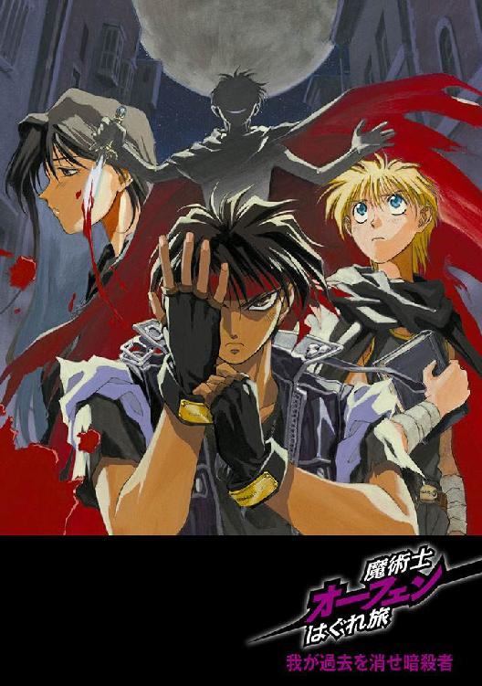
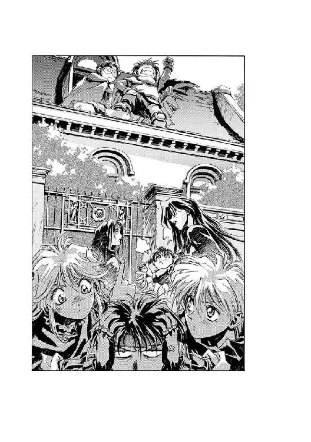
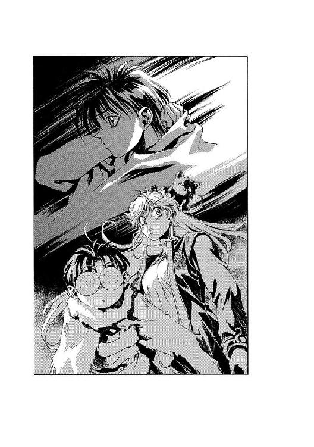
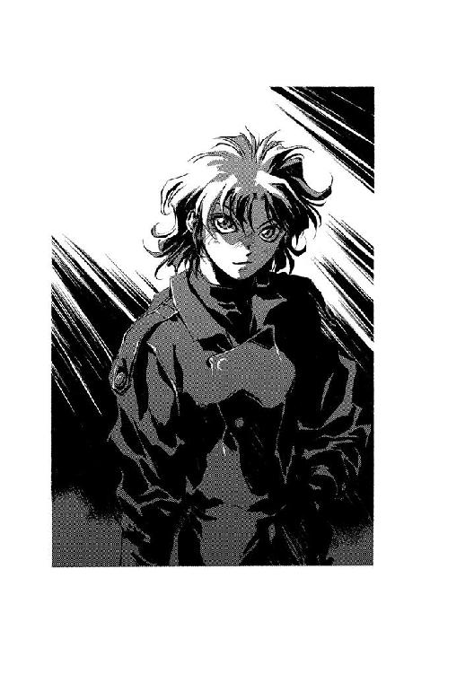
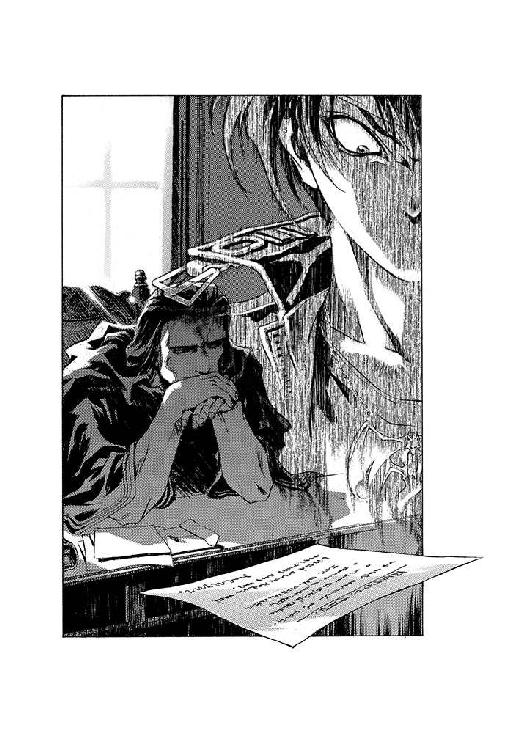

| 魔術士オーフェンはぐれ旅 新装版3 | |
| 秋田禎信 | |
| ティー・オーエンタテインメント (2011) | |


この作品は縦書きでレイアウトされています。
また、ご覧になる機種により、表示の差異が認められることがあります。
一部の漢字が簡略字で表示されていることがあります。
イラスト：草河遊也Ｙｕｕｙａ Ｋｕｓａｋａ
デザイン：ヴェイアＶｅｉａ
◆プロローグ
指についた血を舌でなめて落とす──血の量が多くなければ、これが一番いい。布でぬぐえば、それをどこかに捨てなければならなくなる。
誰もいない路地裏──月だけが目ざとく光を落とすレンガ壁のはざま。彼は死体となった男を見下ろして、しずかに独りごちていた。
「あなたはぼくに気づいたみたいだね。ぼくは有名すぎる」
彼は死体に話しかけているのだろうが、死体の男の位置からでは、彼の顔は逆光となってうかがえない。もっとも、死体にとってはどうでもいいことだろう──自分を殺した人間の顔など、見えたところで悪夢が長引くだけだ。
彼は続ける。真っ黒な服に、黒いマント──髪も黒。すべて黒......だが彼の輪郭と闇との境界線は、たやすくついていた。彼には生命の力が満ちあふれていた......誰にも止めることのできない、圧倒的な力だ。
圧倒的な力──
「そうだね」
彼は、実際に死体からそう言われたかのように、うなずきながら肯定した。
「誰も、ぼくを止めることはできない。彼女がぼくに命じたんだ。ほかならぬ〝彼女〟が──彼女の言葉があるかぎり、ぼくは決して止まらない」
その言葉は、もはや独り言というよりは、まるで呪文のようだった。彼が自分にかける、魔法の言葉。
死体となって転がっているのは、老人だった。漆黒のローブを着た白髪の老人である。驚くほど出血のないまま、だが確実に事切れている。通りがかりに見た者がいたとしても、その老人が道で寝ているようにしか見えなかっただろう──ただ、なんでこれほど高い地位を持った人間が路地裏などで寝ているのだとは訝ったかもしれない。老人の胸元には、銀製のペンダントがかかっていた。剣にからみついた一本脚のドラゴンの紋章が。
それを見下ろしながら、殺人者はじっと続けている。
「死神は世界の黄昏まで止まらない。決して......」
そこで彼は言葉を切り、自分の胸元をまさぐった。細い手の中に、鎖が引っ掛かる。それもやはり、銀製のペンダントだった。《牙の塔》の魔術士の証しである、ドラゴンの紋章のペンダント。彼のマントを肩口で留めている金具にも、同じ紋章が見える。
彼は、馬鹿げたことだ、と口の中でつぶやいた。ペンダントから手を放し、その手を自分の下腹に軽く当てた。ふっと......夢から覚めたように、うめく。
「血をなめたせいかな。吐き気がしてきた」
そして彼は立ち去った。路地裏に、死体と、そして......小さなつぶやきをもうひとつ残して。
「あなたの言うとおりだよ。ぼくはキリランシェロだ」
◆◇◆◇◆
......ふと思い出してみるに、彼は弟のようなものだった。というか、それを言うのならこの敵だらけの《塔》にあって、同じ教室の生徒たちは家族のようなものだった。
別にそれは、変わったことでもなんでもない──《牙の塔》においては、すべての者がそう思っているだろう。ただの見習いまでも含めれば数千にも達する数の黒魔術士を擁する、大陸黒魔術の最高峰《牙の塔》──ただ、その同教室の『家族』においてすら、仲間ではあっても味方であるとは限らない。
睡魔にも似ただるさを覚えるまぶたを閉じ、彼女はほおづえをついて、疲れたように──あるいは、あきれたように──ため息をついた。
ため息とともに、かくんとほおから落ちた指が、身にまとっている黒のローブのすそを撫でる。この《塔》においては教師に次ぐ地位を意味する、漆黒のローブである。一切の間違いも、そして迷いも許さない唯一の色、ムラひとつない闇の色──だが、彼女の知っているとある少年はその色を称してこう呼んだ──錆びた鋼鉄の色、と。
ある意味でそれは、ぴったりの色だ。今の彼女の立場にとっては。
彼女はどこか皮肉まじりにそう思った。そして、またため息をついた。今度は正真正銘疲れたように。
長い黒髪が、流れるように自分の肩から背中に落ちるのを横目で見ながら、彼女はそれを促すように背筋を伸ばした。彼女の腰掛けている古びた木製の椅子が、ぎしぎしと音を立てる。うるさいわよ、と彼女は口の中で毒づいた。なんでもいいから文句を言いたい気分だった。
だんだんと、いらだってくる──気に入らない。窓のない壁も、手触りの悪いテーブルも、もちろん音を立てる椅子もだ。最低なのは、あまり広くないこの部屋の奥にかかっている壁掛け時計で、振り子が錆び付いているのか、かすかにキイキイと音を立てている。ふだんならあまり気にもならないだろうが、周りが静かだと耳障りに感じる。話相手でもいたらよかったのに──と彼女は思ったが、あいにく部屋には彼女ひとりしかいない。
やるせなくなって、彼女は独りごちた。
「いつまで待たせるつもりかしら」
と、いきなり背後から答えが返ってくる。
「......すまんね」
どこか寝ぼけているような、とろんとした瞳を横目にして、彼女は声のしたほうを振り向いた。声の主が誰であるかを確認するよりも先に、口が開いている。
「わたしがこの休憩室のこと嫌いだって知ってて、三十分も待たせたのかしら？」
「実を言うと、戸口で少し君を観察していたんだ、ティッシ」
「観察ねえ......あなたって、時々そんな馬鹿なことをする人よ」
彼女──ティッシと呼ばれた女は、椅子の背を抱え込むようにして、ぐるりと身体を回転させた。そこから見上げたところで、長身のがっしりした男と視線が合う。厳しい顔をしているため多少老けて見えるが、本当はまだ二十代の中盤──実年齢は、彼女は知らないが。黒髪を少し長めにしてうなじで縛っているのはあの男と同じだし、なにを言っても動じない鉄面皮も同様だ。彼に言わせればそれは偶然だろうが、実のところは悪趣味な物まねなのだろうと邪推してしまう。
彼が身につけているのは、色こそ彼女と同じだが、ローブの縁に銀の線が二重に入っている。教師の制服と同じデザインだが、彼は教師ではなく教師代理のはずだった。
（どうも忘れがちになるようだけど......とりわけ彼自身がね）
と、胸中で付け加える。彼女は彼から視線を外して、笑みにならない笑みを浮かべた。彼が彼女の正面に腰を下ろすのを待ってから、口を開く。
「それで、観察の結果、わたしに異常は見つかったかしら？」
「別に」
というのが、彼の返事のすべてのようだった。彼女はあきらめの吐息を漏らして、肩をすくめた。
「で、わたしに用事っていうのは？ フォルテ。わたしを呼び出したことまで『別に』で済ませるつもりなら──」
「『わたしが待った分、こちらの愚痴にもつきあってもらうわよ』、か」
男──フォルテ・パッキンガムは、ほとんど即答といってもいいタイミングでそう口にした。彼女は、さっと眉をひそめた。
「そう簡単に人の心を読むのはやめたほうがいいって、何度言ったかしら」
「身につけた能力は活用すべきだ」
「それができなければ？」
「君が今考えたことが、わたしの答えだ。そう......彼のようになる」
そんなことを口にしても、フォルテの表情が微動だにしないことに、彼女は一瞬底知れないいらだちを感じた。が、すぐに自制する。怒鳴りだすかわりに、彼女は静かにつぶやいてみせた。
「過ぎた能力が身を滅ぼすってこと、考えたことはない？」
フィルテが、馬鹿にするように口の端を歪めるのが見えた。
「我々のことを言っているのかね？ それは魔術の存在を根本から否定することにならないかな」
「ならないわよ。訓練の意味っていうものを、わたしは分かってる。強力な魔術を制御するために、わたしたちは死ぬことだって覚悟してこの《塔》で訓練を受けたのよ。魔術を制するためにね。増大させるためじゃないわ」
「だが結果として、君の魔術は強大になっただろう、ティッシ──死の絶叫と呼ばれるほどに」
「その、ふたつ名ってやつ、やめられないのかしら──楽屋で芸の見せっこしてるみたいで、みっともないって思わない？」
「効果があるのならば、虚勢も必要だ、ティッシ──」
「ティッシって呼び方もやめて」
「なら、レティシャ。そろそろ用件に入りたいのだがね」
「そうね」
彼女、レティシャは、投げやりに手を振りながら同意した。その用件とやらが聞きたいというよりも、この会話そのものをさっさと終わらせたい。
だが実のところ、その用件も、あまり陽気になれる代物ではなさそうにレティシャには思えた。壁掛け時計の振り子が、キイキイと囃し立てる。それこそ、誰かを呼ぶかん高い死の叫び声のように。
フォルテ・パッキンガム──《牙の塔》チャイルドマン教室の若き教室長は、その冷淡な声で手短につぶやいた。
「彼が現れた」
◆第一章 いつもの被害者
タフレム市は今までで三度滅びた。伝説ではそう言われている。そのうち記憶に残っている〝崩壊〟は二度だけだ。人間とウィールド・ドラゴン種族とが対立したときに一度──キムラック教会と魔術士たちの破局、砂の戦争と呼ばれた戦火により、もう一度。
だが二百年のうちに二度も全壊したにもかかわらず、市街は整然と大地に根を下ろしている。むしろ計画的に築かれた街は、きらびやかにデコレートされた菓子のように美しかった。西を山岳地、東を《森》を水源とする人工湖にはさまれ、中央に都市の最大の建築物──白亜の世界図塔を戴いた《牙の塔》都市。
キエサルヒマ大陸でただひとつ、黒魔術士たちが心安く暮らすことを許された場所。
......彼はそこに帰ってきていた。
◆◇◆◇◆
「ここは、歴史のある街なんだ。ある意味では、アレンハタムなんかより、よほどね」
ドーチンはひとりでそんなことをつぶやき、やはりひとりで、うんうんとうなずいた。白いテーブルと白い椅子──居心地のいい学生相手のカフェバーに席を陣取り本を広げて、あくまでひとりで続ける。
「なにしろ黒魔術士たちが勤勉に歴史を記録し続けたおかげで、過去の記述にありがちな『空白の記述』がないんだから。実を言うと、そういう意味で歴史書の質が一番悪いのはアレンハタムだったりするんだけどね。なにしろ、あそこは旧王都ってことで、記載できないことも数多かっただろうし。でも、魔術士はさすがに正直だよ──他人だけでなく、自分たちに対してもさ」
分厚い眼鏡をかけた、身長百三十センチほどの『地人』──キエサルヒマ大陸でも南端にしか暮らしていない少数民族である。とはいえ彼らは三百年前にこの大陸に人間が入植してくる以前からの先住民族であるし、現在でも、いまだ自分たちの自治領を持ってはいる。人間によって絶滅した種族というのもいるのだから、これはある意味、皮肉屋が言うところの 〝破格の扱い〟ということになる。
彼が着ているぼろぼろの毛皮のマント──これは地人たちの、ごく平均的な民族衣装で、屋内でも外さない。ドーチンは眼鏡の位置を直しながら、得意げにしゃべりつづけた。
「この街は過去、二度も築きなおされたんだ──これはすごいことだよ。二百年前に、天人との対立によって一度根こそぎ滅ぼされ、半世紀前にも、教会との戦争で壊滅状態になったんだ。これは、有事の際には街の人間すべてを《牙の塔》へ移送するっていう保安システムのせいだろうね。でも、どう考えても街なんかより、最初から城塞として設計された《塔》の方が守りやすいんだろうし──」
「あの......」
いきなり、声──すぐ背後からだ。が、ドーチンはそれを完全に無視した。
「ただ分からないのは、街の住人が《塔》に逃げ込んだんなら、天人や教会の軍隊が、なんでわざわざ無人のこの街を破壊目標にしたかってことだよ。莫大な労力だったに違いないもの──実際、キムラック教会が結果として敗走したのはそれが原因なんだ。無人のタフレム市を破壊しているところを側面から、力を溜めていた魔術士に攻撃されたんだ。ま、奇襲とはいえ、十倍近い勢力差を覆しちゃったんだから、魔術士たちの戦闘能力っていうのは、とんでもないものだったらしいね──って、これは今さら感心するほどのことでもないか。ぼくらさんざん実例を見てるし」
最後の一言だけ、思い出したように付け加えたしわがれ声。ドーチンは、嫌な思い出を振り払うようにかぶりを振ってから、続ける。
「ま、なんにしろ──」
「お客さん......」
また声。また無視。
「今ではもう、このタフレム市にちょっかいをかけてくるような軍隊はない──天人はもうこの世にいないし、教会は、王都の貴族連盟に軍隊を取り上げられちゃったしね。その貴族連盟は......微妙なトコだけど、でもさすがに大陸の反対側にあるこの街まで遠征するほど暇じゃないだろうし」
「ですから......」
「つまるところ、順風満帆てやつだよ、ここは。特に産業はないけど人の出入りが激しいから、それなりに潤ってるし──」
「............」
とうとう、背後の声は沈黙に転じた。そこでちょうど、ドーチンも言うことがなくなり、本を見たまま硬直したように声を止める。しばらくそのまま、どうしようもない静寂がその場を流れた。
根負けしたのは、ドーチンだった。ぱたんと本を閉じて、振り返る──そこには、ドーチンと似たような格好をした、やはり地人の男を、猫の首でもつかむようにぶらさげている筋肉隆々のウエイターが待ち受けていた。三十歳ほどで、口元に髭など生やしている。腰から下にエプロンなどつけていて、ウエイター兼マスターというところか。
ウエイターは、愛想笑いのようなものを浮かべながら、こちらを見下ろしている。体格の割に童顔で、その笑みにも底意はうかがえない。ただ、ドーチンにはその笑みは、どちらかと言えば死刑囚に見せる牧師の笑みに見えた。
それは多分──と、考える。
店の中が、ほとんど廃墟みたいにめちゃくちゃに荒れているせいだろう、とドーチンはうんざりと分析した。数刻前は整然ときれいだったはずのそのカフェは、今はなぜかテーブルも椅子も、ほぼ半壊して床に散らばっている。無論のこと、ドーチンとそのウエイター、さらに彼がぶら下げている地人以外には、店の中には誰もいない。とっくに逃げ出してしまっていた。割れたコーヒーカップとその周囲に広がる茶色の水たまりにつま先を浸していることに気づいているのかどうか、ウエイターはにこにことこちらを見据えている。
ウエイターは、唇を引きつらせるようにして、ゆっくりと口を開いた。
「これは、お客様の身内ですね？」
と、片手でぶら下げている『これ』を視線で示す──ドーチンも導かれるようにして、その視線を追った。そこにあるのは、いつも通りの変わらない『これ』である。本当に変わり映えしない。いつもいつも......
ウエイターにぶら下げられているその地人も、やはり毛皮のマントをすっぽりとまとっている。小柄な体格もぼさぼさ頭も、ドーチンと同様だが、眼鏡はかけていない。その代わりというわけではないだろうが、その地人はマントの裾から剣の鞘をのぞかせていた。ぼろぼろの、一見して中古品と分かる代物だ。
ドーチンはあっさりと告げた。
「いいえ。そんな人は見たこともありません」
それを聞いても、ウエイターの表情に変化はない──あわてた様子を見せたのは、むしろぶら下げられているほうの地人だった。
「おいコラ！ ドーチン！」
指をさして、叫ぶ。
「そーゆう冷たい奴だったのか、お前は!? 兄は悲しいぞ！」
じろりと兄を見やり──ドーチンは、大きく息を吸ってから長々と説明した。
「年に一度の贅沢をしようって、これから三か月は飢えっぱなしになることも覚悟して注文したシュガーケーキをぼくがトイレに入ってる隙にふたり分たいらげて、テーブルに備え付けの砂糖壺までなめたあげく、あまつさえほかのテーブルにも乱入して乱闘の末、店の大半をめちゃくちゃにするよーな人は、赤の他人だってことになってるんです」
「ぬぁにが『なってる』だっ！ 血の絆とは、そーゆうもんではあるまいっ！ いいか弟よ、苦楽をともにするとゆーことはだ、苦しみはふたりで分かち半分に薄め、喜びはふたりで抱えて二倍にするということだぞ！」
「って、相乗した苦しみをぼくひとりに押し付けてるだけじゃ......」
「そーゆう卑屈な考え方をするなっ！ それがこの俺様、マスマテュリアの闘犬ボルカノ・ボルカンの弟であるなど、情けないにもほどがあるぞっ！」
ウエイターにぶら下げられた地人──ボルカンは、ばたばたとおおげさな身振りでそう叫んだ。手近にいたなら、ついでに二、三発殴られてもいたかもしれないが、ウエイターはしっかりと兄の襟首をつかんではなさない。ウエイターは表情すら、ちっとも変えていない──できればそのまま石化して、兄さんを永遠に宙づりにしといてくれればいいのに、などと思いつつ、ドーチンはぼやくように言った。
「弟、弟って、そんなに強調しないでよ。他人なんだから」
「弟よ弟よ弟よ、そーゆう言い方はないと思うのだが兄は」
「だから強調しないでってば！」
「ま、なんにしろ──」
唐突に、ウエイターが口を開く。ボルカンもドーチンも、はたと口をつぐんだ。ウエイターの、白いポロシャツの胸のあたりの筋肉がぴくりと動くのが見えた。
彼はあくまでにこやかなまま、続けた。
「他人でもなんでもいーから、店片付けるの手伝えやボケ」
「はい......」
ぐったりと、ドーチンはうなずいた。と──
からん......
小さな鐘の音とともに、ドアが開く。振り向いてみると、白い木造りのドアを開けて、このめちゃくちゃに荒らされた店内に姿を見せたのはひとりの少年だった。
「あれぇ？」
黒髪をかきあげつつ、そんなことをつぶやく。背中まで伸ばした長髪のせいで、ぱっと見には女のように見える──だけではなく、冗談のような女顔で、ドーチンがその少年を男だと分かったのは、単にその服装と、極端に痩せた体格からだけである。年齢は、十四、五というところか。全身これ黒一色で、身にまとっているその雰囲気も含めて、その格好はドーチンに知り合いのひとりを連想させた。
（黒魔術士......）
胸中で、ドーチンはつぶやいた。実際、土地柄この街には黒魔術士は大勢いる。が、この少年ほどあからさまに黒魔術士然とした格好をしている者は、むしろ珍しい。
少年は、ウエイターのほうに視線を転じると、びっくりしたように聞いた。
「なにかあったんですか？ フリップさん」
「ああ、ティフィスか......そんな格好をしているから分からなかった」
フリップとティフィス──ふたりの名前を頭の中に収めつつ、ドーチンはちらちらと少年、ティフィスというほうを観察した。魔術士というのはある程度の体力がなければ務まらないから、あんな痩身で大丈夫なのかなという気はしないでもない。ついでに、普通、特に黒魔術士は短髪である。とすると、このティフィスとかいう少年は、ひょっとしたら単に魔術士の格好をしたただの学生なのかもしれない。
（ンなわきゃないか）
ドーチンは、自分で否定した。むしろ、特別に栄養不良の黒魔術士といったほうが可能性はありそうだ。
なんにしろ、その答えはティフィス自身のせりふであっさりと裏付けられた。自分の着ている真っ黒な服を手で撫でつけながら照れるように、
「ええ。ちょっと《牙の塔》まで用事があったんです。だから正装してるんですよ。人の服なんですけどね」
「用事？」
フリップが聞き返す。ティフィスが、肩をすくめて答えた。
「たいしたことじゃないんですよ。先生の代理です。彼女、昔の仲間を迎えに行くとかで、今日は留守にしてるから」
「先生......ティッシか。昔の──仲間だって？」
その声音に奇妙なものを感じて、ドーチンが見上げると──フリップの表情から、初めて笑みが消えていた。訝しげに、眉間に縦じわが寄っている。彼はその顔で、独りごちるように続けた。
「きな臭いことにならなけりゃいいけどな......」
「え？」
と、ティフィス。フリップは、ハハと笑って手を振った。
「いや。そんな気がしただけさ。彼女、大物だろ？」
「先生がですか？ そうは思いませんよ。この非常時に、彼女、昔の写真なんて引っ張り出してため息をついてるんだもの......」
そこまで言いかけてティフィスは、ふと口をつぐんだ。今さら気づいたように、店内とこちらとを見回して──
「で、この有り様は、なにがあったんです？」
「こいつらにやられたんだよ」
ため息まじりに、フリップ。
「あの『こいつら』って、ぼくは別に──」
おずおずとドーチンはつぶやいたが、ふたりは聞いてはいなかったようだった。代わりにボルカンが、うんうんとうなずく。
「そーそー。悪いのは、兄を裏切ったこの薄情弟だけ」
それを聞いてかあるいは無視してのことか、フリップは手近な床にボルカンをほうりなげた。べちゃ、という音を立てて、ボルカンがあごから落ちる。
「さて、片付けを始めないとな」
フリップが、自分の腰をさすりながらつぶやく。
「手伝いますよ」
とティフィス。フリップが機嫌よさそうに笑った。
「いいのか？ ま、お前さんの魔術があれば助かるが」
「その代わり、今日は先生がいないから昼食を買って帰らなけりゃならないんですよ。作ってくださいね」
「ああ、安いもんだ」
フリップが請け合う。なんとなく話が温厚なほうに向かいはじめたようなので、少し安心してドーチンは聞いてみた。
「あ、じゃあ、ぼくはどうしましょう」
フリップは、にっこりと答えてきた。
「お前らは、あの二百キロある棚を元どおりに直すんだよタコ」
「はい......」
世の中そんなもんだよな、と思いながら、ドーチンは返事した。
◆◇◆◇◆
街道はどこまでも続く。大陸の南端地人領から、北の果て教会総本山まで──
夏は盛りを迎えようとしている。街道をあやすように包む森の木々は、その数メートルはあろうという身体の中に押さえ込めない生命力を、枝葉の鮮やかさに反映させていた。太陽は昼に近づくにつれかぎりなく高く、真っ白く輝きを強める。風が南より吹き寄せて、街道の乾燥した地面から、もやのかかったような砂塵を舞い上げた。そして......
「うわあああああっ！」
絶叫が、はるか遠くから聞こえてくる──オーフェンはちらりと耳を向けてから、すぐにもとの作業にもどった。馬車の手綱が壊れたので、それを直しているのである。
手綱は──もとエバーラスティン家所有の品物に恥じず、上等な革を使ってある。柔らかい黒革と、油で固めた厚布とを組み合わせて使ってあって、その分、直すとなるとめんどうだった。
「なんだかなあ」
途中でぶつ切れになった手綱を、麻紐で縫い付けながらオーフェンはぼやいた。街道のわきに停めた馬車の御者台から、くつろぐように馬の尻にかかとを載っけている。
「あいつが来てから、極端にやっかいごとが増えたよな、実際」
と、ちらりと視線で馬たちの後ろ頭に問いかけるが、無愛想な牝馬たちは頭を振りもしない。気にもせず、オーフェンは作業を続けた。
年の頃二十歳ほど、黒髪に黒目の、ごく平均的な平民の風貌の男である。目付きは悪いが、今はどちらかといえば困ったように瞳の色を陰らせている。全身黒ずくめで、動きやすそうな格好でまとめていた。胸元には銀細工のペンダント──剣にからみついた一本脚のドラゴンの紋章が、シャツのしわに沈没するみたいに埋もれていた。
と再び、遠くから悲鳴が響いてくる。
「うっきゃあああっ！」
次いで、地面がえぐれて吹き飛ぶような轟音──オーフェンは、今度は顔を上げすらしなかった。ぽつりと独りごちる。
「最初は、ちょっとした予感だったんだ。なんかヘンだと思ってた」
「たすけ──ひああっ！」
また悲鳴。爆音──それに紛れて、今度はなんだかかん高い泣き声のようなものも聞こえてきた。
「オーフェェェンっ！」
そして、ふわぁ、と押し寄せてきた生温かい爆風が、オーフェンの黒髪をたなびかせる。が、彼はあくまで無視を決め込んだ。風が運んできた砂ぼこりを瞬きして払いのけながら、ぶつぶつと続ける。
「次は、あん時だな。クリーオウの作った朝飯を食わずにこっそり捨てたら、そのあと立て続けに不幸が起こった──目の前に大岩が転げ落ちてきたり、わけの分からないところに落とし穴が掘ってあったり。朝飯捨てたのは、誰にも見られてなかったはずなのにだ」
ごうんっ！ と、爆音が近づいてくる。地響きのように地面が揺れて、御者台の上でオーフェンは手元を狂わせた。革に紐を通すための五センチ針の先が、ぷつんと親指に突き刺さる。
「痛て」
と毒づいてオーフェンは、小さな赤いボタンのように膨れ上がった血の塊を、左手の親指ごと口にくわえた。ちらりと、街道に沿って広がっている森のほうを見やる──大陸最後の秘境である《フェンリルの森》に近いこのあたりは、人が住むところと街道以外はすべて森である。もっともここから少し北上すれば、森はいきなり姿を消し、大陸の住人ならば知らない者などない『乾いた』土地が現れる。キムラック教会管理区、いわゆる約束の土地──ゲイト・ロックが。
なんにしろ、彼が見たかぎり、森はまだ静かだった。ちらりと木々の奥に、炎のような赤い閃光が走ったような気もしたが。
「で──」
と、指をくわえたまま、もごもごと彼は続けた。
「そのころから、なんとなくおかしいな、とは思いはじめたんだよ。いや、まあ、そもそもあいつの存在自体が十二分にヘンなんだけどな」
手綱を直すのはあきらめて──どうせあとで魔術で修復すればいい──、彼は背中を御者台の背もたれに、でんと押し付けた。目を閉じて大きくのびをする。
「参ったよな──まるっきりアレじゃねえか。ナントカに刃物がどーのこーのとかいう昔からの言い伝えが──」
と──
「お師様あ～！」
泣き声をあげて森の中から飛び出してきた金髪の少年に、オーフェンは、ぎょっと目を見開いた。
「馬鹿！ マジク──」
「助けてくださぁいっ！」
マジクと呼ばれたその少年は、あまり似合っていない黒マントをはためかせながら御者台にかじりついてきた。彼は、端正な顔を紛れもない恐怖で引きつらせながら、
「あの魔物が──」
「やかましい！ てめ、逃げるんなら俺のほうに逃げてくるんじゃねえって言っただろうが！」
「非情ですようお師様──」
が、泣きながら御者台に上ろうとするマジクをオーフェンはあわてて蹴りもどした。自分も怯えるように森の、マジクが飛び出してきたあたりを見やって、
「いちいち俺を頼るな！ お前も俺の生徒なら、自分の身は自分で世話しろ！」
「そんな、自分で世話って言っても、あんな邪悪な獣をどうしろって──」
マジクがしつこく足元に食いついてくるのを、オーフェンはげしげしと引きはがそうとした──が、マジクも必死の形相でそれに抵抗する。時間の浪費に耐えられなくなって次に声をあげたのは、オーフェンのほうだった。
「俺が知るかっ！ お前だって、もうトーシロじゃねえんだから自分で考えろ！ いろいろあるだろ──回れ右してあの黒い悪魔と刺し違えるとか、この場で腹を切るとか！」
「どっちも死にそうじゃないですかあ！」
「知るか！ とにかく俺を巻き込むな！」
馬たちが、ぶるるる、と鼻息を吹きながら前脚のひづめで地面をこすっている。御者台のふたりの怒鳴り声に驚いたのか、いや、あるいはそれとも──
オーフェンは、かなりぞっとしながら思いついていた。
（この馬どもを怯えさせるようななにかが、もうかなりのところまで近づいてきてるのか──）
「とにかくお師様！ 助けてくださいよー！」
「泣くなっ！ 俺だって不死身じゃねえんだ！ できることとできないことが──」
「げふ──ち、ちょっとお師様、なんですかこの手は。落ち着いてくださ──」
刹那──
がさ。
草が揺れる音が、静かに怒鳴りあいを止めさせる。
「............」
オーフェンはマジクの首をしめている指を、ゆっくりと外しながらつぶやいた。
「遅かったか......？」
マジクも、震える声でつぶやきかえしてくる。
「多分......いっしょに死にましょう、お師様」
「死ぬかっ！」
オーフェンは、どんと生徒を突き飛ばして馬車の下に転ばせると、物音が聞こえたほうへと視線をあげた。そこにいるのは──
森から姿を現したのは、真っ黒い毛並みの、小さな犬である。いや、犬ではない──姿形も少し犬とは違う。決定的な違いは、目だった。その子犬（もどき）の双眸は、背後の森の木々よりも鮮やかな緑色である。それはこの大陸では、ドラゴン種族と呼ばれる最強の魔術を扱う一族にしかない特徴で、それも漆黒の毛並みを持つとなれば、それは唯一──〝聖域〟の守護者として伝えられる深淵の森狼しかない。もっとも、ここにいるのは、まだほんの赤ん坊だが。
だがそれでも、この犬コロ（もどき）こそが、たかが人間の黒魔術士でしかないオーフェンが逆立ちしたところで敵わないような魔術の使い手であるのに違いはない。さらにはここ数日間、彼の頭を悩ませているのも、まさしくこの『魔物』、『邪悪な獣』、『黒い悪魔』──まあ、どれでもいいが──だった。
オーフェンは、その子ドラゴンに向けて、びしと指をさした。
「いいか！」
彼はありったけの声量で叫んだ。泣きたい気分で。
「俺はもう、たくさんなんだっ！──なんの因果か、ことあるごとに俺に襲いかかってくるバケモノどもと取っ組み合いすんのも、つまんねーやっかいごとに巻き込まれるのも、しょーもない我がまま娘のしょーもない我がまま聞くのもだ！」
馬車の下から、マジクがつぶやく。まるっきり他人事の口調で。
「......かなり追い詰められてますねー」
「うるせえっ！ とにかく俺は、もーヤだからなっ！ 福ダヌキどもの借金取り立てたら、こぢんまりした家でも買って隠居するんだ！ 猫を飼って、誰も家には近づかせない！」
子ドラゴンは答えない。短い手足をもたもたと動かして、なにかを探すように頭をめぐらせている。多分、指示を待っているのだろうが──
その指示をもたらすべき主は、まだ姿を見せていない。
オーフェンはひとり、酔ったように続けた。
「とにかく俺はもううんざりして──」
「追い詰められてるわねー......」
「うるせえって言ってんだ──」
ろ、という形の口で、オーフェンは、はたと動きを止めた。
「あれ......？ 今のお前か、マジク？」
と生徒の姿を探すが、いつのまにかマジクの姿は消えていた。子ドラゴンを見て、どこかに逃げ出したらしい。
「となると......誰だ、今の？」
きょろきょろと、あたりを見回す。子ドラゴンのほかは、馬車の周りには人の姿はない。ただ、今の声には聞き覚えがあった。
「ティッシ......？」
つぶやいた、その瞬間、再び草を踏み分ける音が聞こえた。がさり──と、さっきよりも大きく。飛び出してきたものは、さらにやかましかった。
「オーフェェンっ！」
腰まで金髪を伸ばした、十七歳ほどの少女が、泣き声をあげながら森から出てくる。あわてて着込んだのか、ブラウスはボタンが一個ずつずれているし、珍しくはいているスカートも、森の中を走ってきたせいか少し汚れていた。彼女は地面の子ドラゴンを抱き上げ、しつこく泣き声をあげた。
「信じらんなぁいっ！」
「ク、クリーオウ」
ぞっとしながら、オーフェンは少女の名を呼んだ。少女──クリーオウは、泣きじゃくるようにして、地面をスニーカーで踏みたたく。
「信じられないのよ、あの馬鹿！ って誰のことだと思う？ マジクのことだけど──」
「ええ、ああ、うん──そう」
あいまいにあいづちを打ちながら、オーフェンは御者台の手摺りの陰に隠れ、防御姿勢をとった。さっき言ったとおり──ついに、ナントカが刃物を手に入れたのだ。
こちらの様子は見ていないのか、クリーオウは調子を変えずに続けてきた。彼女がかぶりを振るたびにばたばた振り回されるブロンドは、濡れているせいかいつもより少し色が落ち着いているし、鮮やかなブルーの瞳も、やはり涙で色を変えている。
「あんのガキがさっき、なにしたと思う？ 信じられないのよ──ホントに信じらんないんだから！」
「あー...そう？」
なにが起こったか、おおむね想像がついているオーフェンは、シラケた目であさってのほうを向いた。クリーオウはそのまま続ける。
「わたしがさ、向こうできれいな川見つけたからさ、身体を洗ってる間見張っててって言ったらさ、あいつさ、岩陰からこっそりさ、のぞいてやがんのよ！ 信じられる!?」
「えー......あー......信じられねえなあ、うん」
オーフェンはこっそりとその場を逃げ出そうとしながら、口の中でもごもごと言った。とりあえず、今回が初犯ではないということは言わないでおいてやったほうがいいようだ、と思いつつ、御者台から下りようとする──クリーオウのいないほうの側へ。
と、唐突にクリーオウが絶叫にも近い声を張り上げた。
「ちょっとは怒ってよ！ オーフェン！」
「へ？ あっと......なんてこった！ あの野郎！」
オーフェンは、びくっと向き直ると、結局御者台は下りられないまま、オーバーアクションぎみに拳で床をたたいた。
「信じがたい犯罪だ！ 侵してはならない領域に踏み込み、我が最愛の友人に涙を流させるとは！ その罪、天の網のみならず人倫の縄の手からも逃れられはすまい！ じゃ、てなわけで俺は用事があるから──」
「どこへ行くのよ、どこへっ！」
クリーオウは、ぱっと馬車のわきまで駆け寄ってくると、身軽に御者台に飛び乗ってきた。逃げる間も与えず背中からこちらのベルトをつかみ、揺さぶりながら叫ぶ。
「せりふもなんだかわざとらしくなかった!?」
「えーと、じゃ──あのクソガキ、次に会ったら指を全部へし折って、右手と左手の小指どうしを固結びにしてやるぜ。てなわけで俺は用事が──」
「だからなんでいちいち用事ができちゃうのよ！ オーフェン──」
と、クリーオウはいきなり冷静な声を出した。
「ひょっとして、わたしがのぞかれよーがどーでもいいとか思ってない？」
「ンなわけないだろ」
オーフェンは、しごく当然といった声を出した。こっそりと胸中で付け加える。
（とばっちりを受けるのは俺なんだからよ）
と、眼前の少女と、その腕の中できょとんとしている子ドラゴンとをさりげなく手で遠ざけながら、
「にしてもだ、さっき森のほうから爆音が聞こえてきてたが──」
「うん」
と、クリーオウはあっさりとうなずいた。目の中にたまった涙をこすり取りながら、
「とりあえずわたし、服を着なきゃどうしようもないでしょ。だからその間とりあえずレキに追いかけ回してもらってたの」
言いながら彼女は腕の中の子ドラゴンに、感謝するように口の先を触れさせた。レキというのは彼女がつけたこの子ドラゴンの名前だが、オーフェンやマジクが好き勝手に『黒い悪魔』だの『地獄の魔獣』だのと呼んでいるため、ドラゴン当人（？）には、いまいちどれが正当な呼び名なのか自覚がない。
それはさておき、オーフェンは諭すように続けた。
「そうそう。そんだけ追いかけまわして怖がらせれば、マジクの奴だっていいかげん反省しただろ。だからこのくらいで勘弁してやって──」
「なにがよ!?」
と、クリーオウは声をあららげた。
「怖がらせれば、って、レキの魔術をケガしない程度にぶち当てて、森の中を追いかけまわしたってだけじゃない！ どれほどのもんだっていうのよ！」
「死の恐怖に近いんじゃないかと思うが......」
「なにがよっ！ ぜぇーったい許さないわ。あの子、ここに逃げ込んできたでしょ？ どこに逃げたか知らない？」
実は、知らない。が、言っても信じてもらえそうにはなかった。
オーフェンは、なかばあきらめながらも説得を試みた。
「え～と、俺としてはだな、できればケンカはしてほしくない......」
というか、そのケンカに自分を巻き込んでほしくないのだが、クリーオウにとってはそういう問題ですらなかったようだった。
「別にケンカなんかしてないわ」
「ほう」
オーフェンが、あいづちを打つ。彼女はきっと表情を鋭くすると、真顔で言い切った。
「処刑よ」
「おおいっ!?」
悲鳴をあげてもクリーオウは聞かない。彼女は、さっと御者台の上であたりを見回すと、よく通る澄んだ声をあげた。
「出てきなさい、マジク！ どーせこの近くに隠れてるんでしょ！ わたしのことのぞいたのは右目、左目!?──どっちか好きなほうをくりぬいてあげるから、出てらっしゃい！」
「......両目だったらどーすんだ？ 両方くりぬくのか？」
オーフェンはなんとなく気になって聞いてみた。クリーオウが、まったく表情を変えず、真顔のまま静かに答えてくる。
「右目と左目の間に穴を開けてあげるのよ」
「お前って昔は良家のお嬢様だったんじゃなかったっけ......」
「今でもそうよっ！ だいたい、のぞきなんて人間として最低きわまりないわ！ そのくらいの罰は当然でしょ！」
「いや......でも、ちらっとのぞいた程度なんだろ？ 別にのぞきをしながらお前の下着を頭にかぶってたとか、そーゆうわけじゃないんだし......」
「かぶってたのよ」
「かぶってませんよっ！」
──と──
思わず声をあげてしまった失策に自分でも気づいたのか、突然あがったマジクの声は、そこで凍りついたようにぴたりと止まった。オーフェンもクリーオウも、さっと静かに声のしたほうを見やる──マジクはいつの間にか、どこをどう隠れていたのか、また森の中に逃げ込もうと、木と木の間に身体を半分入れたところだった。黒マントに黒装束。あからさまに怪しい格好をした紅顔の美少年。その表情は、なんだか哀れなほどに恐怖にひきつっていた。
一拍遅れて、子ドラゴン──レキの視線も、くるりとそちらを向く。
「マジク」
クリーオウの声は、かぎりなく静かだった。あるいは、あまりにも静かだった。
「はひ......」
舌が回っていないような、マジクの返事。彼は震える視線をクリーオウの顔からそらし、助けを求めているつもりかこちらを見つめかえしてきていたが──オーフェンは、力なくかぶりを振った。どうしようもない。
レキの頭を撫でながら、クリーオウが、うっすらと笑みを浮かべて聞く。
「言い残すことは？」
「え～と......」
オーフェンの位置から、少年が胸元で聖印を切るのがはっきりと見えた。マジクがやったのでなければ、死を覚悟したのだと思ったことだろう。
マジクは、恐る恐る、口にした。
「胸パッドは必要ないんじゃない？」
「死刑」
クリーオウが即答する。同時に彼女は、胸に抱いた子ドラゴンをすっと前に差し出すようにした。彼女の意志が伝わってでもいるのか、なんの合図もなしに、レキは眼差しを鋭くする──緑色の、ドラゴン種族の証したる双眸を。
ディープ・ドラゴン種族は視線を用いて魔術をかける。不意に、あたりの空間を緑色の閃光が塗りつぶしたように見えた──それは錯覚だったのだろうが──
次の瞬間に巻き起こった、マジクともども森を一瞬に消し飛ばした大爆発は、決して錯覚ではなかった。
「──というわけです」
こつ、こつ、こつ......
耳障りなのは、机をたたくペンの音だった。
ペンを持っているのは、顔の大半を髭で覆われたような、中年のレンジャー隊員である。髭には多く白髪も混じり、中年というよりは初老といったところか。森林レンジャーの標準装備である、やたらポケットのついた焦げ茶色のジャケットを着込んでいる。ワッペンに、熊の図案といっしょに記されているのは彼らの標語──『我々は侵さない』
レンジャー隊員のペンは、尻で机をたたくだけで、その机の上にある書類は、さっきから真っ白のままだった。かろうじて埋まっているのは今日の日付──書類を記入するレンジャーの名前と番号──そして、こちらの名前──最後に分類。
日付には、あまり意味はない──ただ、今日の日付だというだけだ。そしてレンジャーの名前にも意味はない。実際、そのレンジャーの字があまりに汚くて読めたものではない。こちらの名前は、読むまでもない。オーフェン。間違ったつづりでそう記されている。意味がありそうなのは、分類だった。つまり、この書類が記されなければならなかった理由。
悪筆のせいで読めないのはほかの欄と同様だったが、オーフェンにはなんとなく見当がついた。『破壊活動』とでも書いてあるに違いない──ほかになにがあるのだ。
はあ──と、レンジャーが大きくため息をつく。彼は、がらがらした喉を震わせて、なんとかこちらが聞き取れる声を出した。
「つまり、あんたの連れの娘さんが、これまた連れの坊ちゃんに水浴びをのぞかれて、その仕返しに保護森林を約七百メートルにわたって根こそぎぶっ飛ばしちまったと、そうおっしゃるわけですな？」
「は、はあ......」
レンジャーは確かに彼の言ったことをそのまま繰り返したはずなのだが、なぜだかオーフェンはだまされているような気分になった。愛想笑いを浮かべつつ、自分の後ろ頭に手を当てて、
「まれにあることでして......」
「まれにねえ......」
レンジャーが、ほとほと困ったようにつぶやく。ペンで机をたたくのはやめない。
「というのは、娘さんが坊ちゃんにのぞかれるのが？ その仕返しに森を一面焼け野原にしちまうのが？」
「......おおむね、その両方が」
オーフェンの答えに、レンジャーはなにも返事してこなかった。うなずきすらしなかった。
彼が立っているのは、件のことがあった場所から最寄りのレンジャー詰め所である。手狭な、殺風景な部屋で、机と椅子、くたびれた帽子かけと書類用のキャビネットのほかは、床の上に酒瓶が三本ばかり置いてあるだけ──うち二本は空き瓶である。
レンジャーが残った一本の瓶に、なんとなく問いかけるような視線を投げるのがオーフェンには見えた。実際、誰かに相談したくもなるだろう──まさか現在のこの平和な世の中で、国家反逆の意志でも持っていないかぎりは、貴族連盟──つまり王室──とキムラック教会によって保護されている《フェンリルの森》に火を放つような人間がいるわけがない。もちろん、密猟者などは後を絶たないが、それとはまったく次元が違う。
そもそも《フェンリルの森》の保護──というか不可侵を訴えたのは、数百年前の、創設間もないキムラック教会だった。時の教主ラモニロックによって発されたこの〝女神の命令〟は、以来貴族連盟と教会の手により、ずっと守られてきている。理由はふたつ──ひとつは、そもそも《森》はさほど魅力的な開発土壌ではないこと。もうひとつは、わざわざ人間などが保護しなくても《森》はもっと強力な守護者を持っていたこと。即ち数々のドラゴン種族である。
そんなことを考えながらオーフェンは、疲れて目を閉じた。
（ひょっとしたら俺は、キムラック教会創設以来初めて《森》に対して破壊活動を行なった人間かもしんねえってことか......）
「被害状況は、わしの仲間が調べてるところだがね......」
と、レンジャーはぼりぼりと自分の髭をかきながら続けた。
「火災は起こっていない──どういう理由か知らないが。だから、これ以上の被害が出るってことはないだろう」
火災が起こらなかったのは、あれが魔術の炎だったせいだろう、とオーフェンは見当をつけていた。彼は黙って、レンジャーの言葉を待った。
レンジャーは、のろのろと続けた。
「とは言え、貴族連盟の管理する土地をあれだけ派手に焼いちまったんだ──キムラックのお偉いさんがなんて言うかをさておいてもな。どんな罰則が待っとるかはしらんが、拘禁は間違いない。わしらは一応、貴族連盟に役目を認められた管理人ということになっとるが──」
と、ちらりとこちらの胸元を見やる──ドラゴンのペンダントを見たのだ、とオーフェンは気づいた。
「なっとるが、管轄はキムラック教会になっとる。だから本筋なら、わしは教会にお前さんらを引き渡さなけりゃならん。だが、お前さんは──」
オーフェンは、こくんとうなずいた。ペンダントを掲げて、答える。
「魔術士です」
ドラゴンの紋章──剣にからみついた、一本脚のドラゴンの紋章。これは、大陸黒魔術の最高峰たる《牙の塔》で魔術を学んだという証しだった。
今度はレンジャーがうなずく。
「そう。魔術士を教会に引き渡したりしたら──よくて嬲り殺しだ」
「でしょうね。キムラック教会は、人間の魔術士の存在を嫌ってるらしい──理由は知りませんが」
「なんだって、こんな馬鹿なことをしでかしたんだ」
鼻息をあららげて、レンジャーはいらだたしげにそう言った。オーフェンはなんとなく、子供のころ野良犬と取っ組み合いして七針縫ったとき、医者に同じせりふで怒られたのを思い出した。
そのときは、確か人のせいにしたのだと思う。だが今回は、もう少しマシな言い訳を用意できそうだった。オーフェンは、よく分からない心持ちでぽつりと答えた。
「なんだか......人生がうまくいってないみたいなんです」
がちゃん。
「どーすんだよ......」
「どーするのよ......」
目の前で鍵をかけられた鉄格子から、となりに座っているクリーオウへと視線を移し、オーフェンは半眼になった。去りゆくレンジャーの気配が廊下の角に消えてから、陰険な口調でつぶやく。
「そーゆうことを聞ける立場か？ お前は......」
それを聞いた瞬間、クリーオウが、がばと跳ね起きた。彼女の胸に抱かれて目を細くしていたレキが、ころんと床に転げ落ちる。
「わたしが悪いって言うのっ!?」
「じゃあ、誰が悪いってんだよ」
機嫌の悪い声でオーフェンが聞き返すと、さしものクリーオウも、ぐっと言葉を呑んだ。オーフェンはごろんと床に寝そべると、彼らが拘束されることになった牢を見回した。どうもこの娘は分かっていないようだったが、自分たちの置かれた状況というのはお世辞にも楽観できたものではない......
「あの場をたまたま警邏していたレンジャーに見つかっちまったのがマズかったな。このままじゃ俺たちは《森》破壊の罪でキムラック教会に引き渡されて──俺とマジクはそのまま処刑、お前は......改宗させられて下位市民に保護されるか、人買いに売っ払われるか知らねえけど、まあそんなトコだ」
牢の中は、当たり前だがなにもない──すみっこに水の入ったポットとブリキのコップ、汚れた毛布が丸まっておいてあるだけである。その毛布の横には、それとそっくりな姿勢で、ぼろぼろのマジクも転がっている──レキの魔術によってもみくちゃにされて、一度はかなり危険な状態にまで陥ったのだが、今はとりあえず震えながら寝言を言うくらいにまでは回復している。
なんにしろ、手狭な場所に三人まとめて詰め込まれて、かなり窮屈ではあった。
ため息をついて、オーフェンは続ける。しょげたクリーオウの手を軽くたたいて、
「ま、ここのレンジャーのおっちゃんが、教会に引き渡すのはできるかぎり遅らせて《牙の塔》に連絡を取ってくれるっていうんだ。まったく望みがないわけでもないさ」
「《牙の塔》......」
うなされているマジクのほおを前脚でつついているレキを見ながら、クリーオウが繰り返した。
「オーフェンが育ったところ？」
「ああ」
オーフェンは、静かにうなずいた。床の上から、クリーオウの顔を見上げる。
「お前は──ほれ、トトカンタの魔術士同盟にいた、ハーティアなら知ってるんだったよな。あいつも俺も......みんなあそこで育てられたんだ。先生にな」
きらり──と、クリーオウの目が光ったように見えた。瞬きしたのだ。
「先生？ そういえば、オーフェンにも先生っていたのよね」
「そりゃ、まあな」
「どんな人だったの？」
聞かれてオーフェンは、ふっと笑みがもれた──ゆっくりと上体を起き上がらせて、クリーオウのとなりに座りなおす。ぱちん、と指を鳴らすと、その音にひかれて子ドラゴンがこちらを向くのが見えた。もたくたとした足取りでこちらに近づいてくるレキをひざの上に抱き上げて、しばし考え込む──思いついた説明は、たった一言だった。
「チャイルドマンという黒魔術士だ」
「......それは出会った頃に聞いたわよ」
「そうだったっけか？ この大陸で、最も強い力を持っていた黒魔術士......ほかに説明は思いつかねえな。つまり、そういうことだ」
「オーフェンよりも強いの？」
少なからず興味をそそられたのか、クリーオウは身を乗り出してきた。レキの首を撫でてやりながら、オーフェンは小さくうなずいた。
「比じゃなかった──はっきり言ってな。これはチャイルドマン教室にいた生徒すべてに言えたことだが......誰ひとりとして、師である彼には追いつけなかったのさ。チャイルドマンは史上でもふたりと見ない超人的な力を持っていた」
「その人だけが？ なんで？」
クリーオウの問いに、オーフェンは目をぱちくりした。
「ヘンなことを聞くんだな。彼は力を持っていたんだ。生まれつきにな。理由なんかない」
「そうかしら」
と、彼女はなんとなく疑わしげに虚空を見上げてみせた。
「努力とか訓練とか、そういうのは関係ないの？」
「なくはないさ。どんな才能があろうと、相応の制御力がなければ、いざ力を解放したときに暴走するだけだからな。マジクの奴がその典型だよ」
オーフェンは言いながら、床に落ちていた小石をマジクの顔に放り投げた。
「だがそれにしても、先天的な魔力の大きさってのは重要なんだ。こればっかりは、そうだな──例えば身長なんかと同じでね。どんなに頑張っても、天賦のもの以上にはできないんだよ。ある程度には、成長させることはできるけどな」
「わたし、前々から気になってたんだけど──」
彼女は聞きながら、オーフェンのひざからレキを取り上げた。自分で抱いて続ける。
「《牙の塔》って、どういうところなの？」
「......一言で説明するのは難しいな」
「一言じゃなくてもいいわよ。どーせすることなんてないんだから」
「誰のせいだ？」
オーフェンが半眼で聞くと、クリーオウは即座に目をそらした。レキもつられて、あさってのほうを向く。
（たまにいじめてやらんと、すぐに忘れるんだな、こいつは）
などと思いつつ、はあ、と息をついて、オーフェンは続けた。
「《牙の塔》ってのは都市の名前だよ。別に、文字通り塔が建ってるわけじゃない。いや、まあ、塔はあるんだけど......」
「......なにが言いたいのよ」
ちんぷんかんぷんな表情で、クリーオウ。オーフェンは困ったように説明をやり直した。
「だからな、《牙の塔》という呼び名にはたくさんの意味があるんだ。ひとつは、塔だ。二百年前、この大陸に人間の魔術士が誕生したとき──その発生の原因となったウイールド・ドラゴン＝ノルニルは、魔術士のために世界図塔と呼ばれる建築物を築き上げた。まあ、今入ってみても、いったいなんのために造られた塔なのかいまいち分からないらしいし、そもそも世界図塔への立ち入りは厳禁されているんだが、この塔ってのが、なんていうか......円錐をちょっと曲げたみたいな、つまりは牙の形をしてるんだよ。そのことから、世界図塔は《牙の塔》と呼ばれることになった」
「うん」
クリーオウがうなずくのを見て、オーフェンは続けた。
「で、また別の意味が......都市の名前だ。その世界図塔を中心として広がる都市があってな、こいつも通称《牙の塔》都市と呼ばれてる。正式な名称はタフレム市だけどな。まあ、わりと人口も多い、まあまあな街だ」
「トトカンタと同じくらい？」
「......トトカンタ市と比べるなよ。規模がまったく違う。せいぜい三分の一ってトコだ。で、最後が一番、一般的な意味だが──つまりは、タフレム市街から少し離れたところに、黒魔術士を養成する巨大な施設がある。これを大陸黒魔術の最高峰たる《牙の塔》と呼ぶのさ。正式名称は......やっぱり《牙の塔》なんだがな」
「オーフェンが勉強してた場所ね」
「ああ」
オーフェンは頭の後ろで腕を組んで、壁にもたれた。目を閉じて、付け加える。いくつもの意味を持つ《牙の塔》という名前──
「......どの《牙の塔》にも、思い出がある」
◆◇◆◇◆
「......え？」
彼は聞き返した。殺風景な部屋、ひとりでベッドに腰を下ろして。ふたつある二段ベッドの、下の段。鉄パイプを組んで作られた粗末なベッドは、部屋の両脇に平行に並べられている。部屋の中央は通路になっていて、ほかには家具らしい家具はない。部屋に窓はひとつ。鉄製の窓枠には赤錆が浮いて、形も少しいびつになっている。
部屋の入り口に立つ老人を、彼はじっと見つめていた。黒のローブをまとった上に、地位を示すグレイの上掛けを羽織っている。ローブを身につけることを許されるのは《塔》の高位魔術士だけである。グレイの上着はその中でも長老──エルダーと呼ばれる最高位の術者であることを意味していた。
老人は長く伸ばした髭の中から、低い声を出した。静かな眼差しでこちらを見据えて。
「君だよ」
「ぼく......ですか」
「そうだ。君が上がるんだ」
長老の言葉にはよどみがない──しっかりとした、落ち着いた声音で、老人は続ける。
「我が《塔》は微妙な位置にある。それは分かるな？」
分かる──はずだが、実はよく分かっていなかった。彼はまだ十歳で、政治のことを言われてもあまりピンと来ないというのが正直なところだ。が、この《塔》にあってはそんな甘えは許されない。それだけは、はっきりと分かっていた。
だから彼は、すぐにうなずいた。
長老は別に、それでいいともそうでないとも言わなかった。そのまま続けた。
「我々は優秀な人材を必要としている。宮廷魔術士《十三使徒》へと出ていかない、この《塔》のためのスタッフをだ。君が、それだ。いや、そうなってもらう」
「............」
「すでに六人の若者──君のような若者が、上がっている。あの男の教室にだ。その誰もが、天才的な才覚を示した者たちだよ。そう......君のようにな、キリランシェロ」
「ぼくは......」
なにかを言いかけて、彼は、続けられなくなった。なにか明確なイメージがあったわけではなく、単に口から出てきただけの言葉で、意味はない。まったくないと言ってもいいかもしれない。その程度のものだ。
長老にも、それが分かっていたのかもしれない。あっさりと無視した。
「君はまだ幼い。だが本格的な教育を始めるのには、悪くない年齢だ」
「............」
「君に課せられたテーマはひとつだ。たったひとつ」
長老は目を閉じ、続けた。
「君に教える者を越えろ。それだけだ」
◆◇◆◇◆
──はっ......──
オーフェンは、跳ね起きるようにして目覚めた。寝汗をかいているわけではない──動悸もしていない。それほどは。
だが、とにかく自分があわてていることだけは自覚していた。いやむしろ焦燥に近いか。
「ちっ......」
と、オーフェンは舌打ちした。こめかみのあたりをかきながら、あたりを見回す──真っ暗な牢の中、窓から入ってくるぼんやりとした月明かりに、ぐっすりと寝ているマジクの顔が青白く浮かび上がっている。クリーオウはいない──彼女だけ頼んで、詰め所の仮眠室を借りさせてもらっている。
窓から斜めに差し込んでいる月光を、オーフェンはじっと見ていた。なにも考えずに、じっと。
迎えがきたのは、翌朝のことだった。
◆第二章 唐突の暗殺者
窓から差し込む光が、月のそれから朝日に変わる。それを見ながらオーフェンは、いつの間にかまた眠っていたらしかった。だがそれでも恐らく、その時間は小一時間といったところだったろう──ふっと、目が開く。
いつも、寝起きには弱い。が、今日はまったくそうではなかったことに、彼は懸念を覚えた。
（こんなときは、嫌なことが起こる......）
胸中でつぶやきつつ、かぶっていた毛布をはねのける。当たり前と言えば当たり前だが、マジクはまだ牢の隅でぐっすりと眠っていた。オーフェンはゆっくりと起き上がり、あたりを見回した。異常はない。が、違和感はある。
（身体が勝手に興奮している......なにかを予感している？）
自問して、彼はひとりでかぶりを振った。意味がないぞ、と自分をたしなめて──その証しというわけではないが、唇をなめた。喉が渇いている。寝起きはいつもそうだが、今朝のは少し違う気がする......
「マジク！」
オーフェンは唐突に叫ぶと、丸まって寝ている生徒の肩を蹴飛ばした。わひゃあ、とかいう悲鳴をあげて、マジクが跳び起きる。わたわたと言い訳するように手を振りながら、
「の──のぞいてなんかいませんよぼくは──」
「やかましい！ その話題は終わったんだ！」
オーフェンは叫ぶと、きっと表情を引き締めた。懸念が、どんどん膨らんでくるのを感じる。根拠はないのだが、彼は既に、もうほとんど確信していた──
（俺が寝ている間に、なにかが起こったんだ）
だがそのことは口にせずに、彼はマジクに聞いた。
「ずっと寝てたか？」
「へ？──ええ、まあ......」
きょとんとした顔で、マジク。彼は、きょろきょろとあたりに視線を巡らせて、
「あの......ここ、牢屋ですか？ なんでこんなところにいるんです、ぼく？」
「クリーオウに聞けよ」
意地悪い気分で、オーフェンはそっけなくつぶやいた。不思議そうにこちらを見ているマジクのことはとりあえず無視して、鉄格子の出入り口に手を触れる。彼は口早に唱えた。
「我踏み入れる招かれざる門」
魔術が効果を為して、かちり、と鉄格子の鍵が外れる音が響く。オーフェンは無言で格子を押し開けると、さっさと牢から抜け出した。後から続いて出てくるマジクを待ってから、詰め所の表のほうへと続く通路を見やる。
「............」
と、形にならない考えをぼんやりと弄んでいるうちに、オーフェンはマジクがさっきからじっとこちらを見ているのに気づいた。いきなり蹴り起こされれば当然かもしれないが、しかしその怪訝そうな目付きは、なにか別のものを訴えようとしているようにも思える。
気になって、オーフェンは聞き返した。
「......どうかしたか？」
「いえ、あの......お師様、ペンダント、どうしたんです？」
「あん？」
と、オーフェンは反射的に自分の胸元に手をやった。いつもなら、そこに金属の感触を覚えたはずだ──いつも身につけているドラゴンの紋章は、彼のほぼ唯一の身分証明だった。《牙の塔》の黒魔術士である証しである。が──
そこには、手に慣れた銀細工の感触はなかった。なにもない。
「あれ......？」
オーフェンはあわてて、あちこちのポケットを探った。普段寝るときには確かにペンダントは外しているのだが、昨夜は外していなかったはずだ。だが、どちらにせよ、ポケットの中にもペンダントはない。
「落っことしちまったかな」
「どこにですか」
「分かんねえけど......参ったな」
だが、困ったような声を出しつつも、実はオーフェンは半分上の空だった。
（《牙の塔》の紋章なんざ、なけりゃないで、それだけのもんだけどよ──）
今感じている違和感は、その程度では済まないような気がする。
「ち......」
オーフェンは、黒髪をかきあげながら舌打ちした。
そのまま生徒の返事は待たずに、視線を厳しくして通路を進みはじめる。もとより広い詰め所ではなく、数歩も歩けばすぐにロビーに出る扉に突き当たる。オーフェンは扉のノブをつかむと、鍵がかかっていないことを確かめて一気にドアを押し開けた。
ぱたん......
開け放たれたドアが、右手の壁にぶつかって跳ねる。ロビーとはいっても玄関口から続く部屋というだけで、どちらかと言えば単に広めの玄関というほうが近い。内装としては乗合馬車の待合所といったところで、昨日オーフェンが調書をとられたのも、この場所だった。玄関からすぐのところに帽子かけがあり、ふしくれだった机があり、酒瓶が転がり、椅子には老人のレンジャーが身を沈めるように腰掛けている。
レンジャーが座っている椅子の向こうに扉があり、そこが仮眠室で、クリーオウが眠っているはずだった。ぎゅっと──嫌な予感が、胸を刺すのを自覚する。
オーフェンはため息をついた。
「懸念が的中したな」
「......え？」
マジクの声には答えずに、オーフェンはロビーに足を踏み入れた。そのまますたすたと、部屋の中央まで進む。
レンジャーの老人は、ぐっすりと寝こけていた。入ってきたオーフェンらにも気づかずに、腹に両手を載せて、口ひげの奥で沈黙している。
（この詰め所には、レンジャーは三人いると爺さんは言ってたな──爺さん以外は近くに家を持っていて、ここに泊まり込んでいるのは爺さんだけだとも）
「マジク」
オーフェンは、すぐ後ろまでついてきていた生徒に呼びかけた。
「は、はい」
びっくりしたような声で、マジクが答えてくる。肩越しに少年の顔を見やり、オーフェンは続けた。
「クリーオウは、そっちの部屋で寝てる。馬車まで連れ出してやってくれないか？」
と、仮眠室のほうを指さす。
マジクは、げ、と声をあげた。自分の薄い胸板を手で示しながら、
「ぼくがですか？ なんとか一命を取り留めたっていうのに。今度こそ本格的に殺されちゃいますよ」
「大丈夫だよ。クリーオウはもう別に怒ってなかったぞ。一発食らわして、すっきりしたんだろ」
「はあ......」
釈然としない面持ちで、マジクがつぶやく。少年が半信半疑のていで仮眠室の扉に向かうのを見ながら、オーフェンは寝ているレンジャーのほうへと歩み寄っていた。木の床を踏み締めるブーツの底が、きしきしと囃し立てるような音を立てる──
マジクが、仮眠室のドアを開ける。
（ノックをしなかったな）
オーフェンは胸中でそんなことをつぶやきながら、老レンジャーの身体に触れた。ゆさゆさと揺さぶりながら、話しかける。
「おい、起きろよ爺さん」
我ながら、あまりの道化に下腹を切られるような感触を覚えたが、それは表情には出さない。
「朝だぜ。ちっと早いけどな。起きろって」
と──
いきなり、ぐわっしゃん、と大きな陶器が砕ける音が響く。花瓶でも壁に投げ付けたか──まあ、そんな音だった。
「うわああっ！」
マジクの悲鳴。それを追いかけるように、クリーオウの叫びが聞こえてくる。
「なんなのよいきなりっ！ しかもお仕置きを受けて二十四時間以内に二本の足で立ってるなんて、とてつもなく生意気よっ！」
「そっ、そんなぁっ！」
「レキ！ やっちゃいなさい！」
「お師様の嘘つきぃぃっ！」
泣き声じみた悲鳴とともに、爆音が轟く。爆風に押し出される形で部屋から飛び出してきたマジクは、そのまま詰め所の外へと駆け出していった。その後を追って、寝間着姿のクリーオウが飛び出してくる。胸に、前脚を丸めたディープ・ドラゴンを抱っこして。
「待ちなさいってば！ やっぱり自分の手で殴らないと気が済まないわっ！」
と、寝癖のついたブロンドをはためかせながら、彼女もマジクを追って詰め所を出ていく。ふたりの姿が消えてから、オーフェンは小さく安堵の吐息を漏らした。
「ふう......」
と、レンジャーの身体を揺さぶっていた手を離す。これだけの大騒ぎが起こっても、老人に目覚める気配はなかった。安らかに目を閉じて、身動きひとつしない......
オーフェンは、ちら、と椅子の下をのぞきこんだ。老人の体重を長年支えつづけ、今は体重の乗った形で固まっているその椅子の下には、小さな水たまりができていた。今もその水たまりに、小さな滴が椅子から垂れる。
それはほんの小さな、血だまりだった。
出血量にしてみれば、ナイフで指を切った程度のものだろう──血の滴は、老人の腹に開いた傷口から漏れている。傷口は一見して、創傷──それも小型のナイフによる刺し傷だとオーフェンには思えた。本来ならもっと出血があるはずだろうが、それがないというのは、傷を受ける前に心臓が停まっていたからだろう。殺される直前になって、恐怖でショック死したか、あるいは──
「魔術で最初に内臓を破壊されていたか、だ」
オーフェンは静かに独りごちた。だとしたら、つまりこれをやった人間は、魔術でレンジャーを殺してから、改めてわざわざ死体を刺したことになる。
血だまりを見下ろして、また吐息する。覚えていた懸念は、これが原因だったのだと、彼は静かに判断した。血の臭いが、目を覚まさせたのだ。マジクやクリーオウには感じ取れないほどの、ほんのわずかな血の臭い。
「くそ」
とオーフェンは毒づいた。意味がない──意味がない、と胸中で繰り返す。この老レンジャーの死には、意味がない。
（他殺なのは間違いないが......誰がこんなことを？）
老人は、腹の創傷を押さえるようにして、両手で包んでいる。ふしくれだった指はすべて血にまみれ、動かない身体を自分で押さえ付けているように見えた。
（それに、動機はともかくとして、手段は？ 同じ詰め所にいた俺やマジクに気取られもせずに、人ひとりを殺せるものなのか？）
だとしたら──それは、殺人者の技術ではない。
（暗殺者のものだ。それにしちゃ、とんでもなく大胆な奴だが......）
「どういうことだ？」
オーフェンは自分に問いかけつつ、立ち上がった。いらいらと部屋の中を見回して──乱闘のあとも、なにもないのを確認する。レンジャーは居眠りしているところを殺されたか、あるいは気づく間もなく殺されたかだろう。
それにしても、なにかこの殺人の意味を説明してくれるようなものが室内に残されていないかと、素人の目でオーフェンは見回した。昨日見たときとほぼ変わらない、乱雑なレンジャー詰め所。一本だけは中身が残っていた酒瓶は、もうすべて空になっていた。物取りの犯行ならばキャビネット等を荒らした形跡があっても良さそうなものだが、そういった跡は見当たらない。
「なにが起こったんだ──くそ、人が殺されたってのに、俺はなんで気づきもしなかったんだ？」
いらだたしげに、彼は吐き捨てた。そのまま、ぐるりと壁を見回して──
はたと止まる。
「............」
意味は、あった。少なくとも、その瞬間、彼はそう思った。
レンジャーの死体に気を取られて、それまでは気づかなかったのだが......
老レンジャーの見据える壁に、血まみれの短剣──凶器だろう、間違いなく──が突き立てられている。ナイフの刃には、やはり念入りに血塗られた、彼の銀のペンダントが引っかけられていた。そしてナイフは、ペンダントだけではなく、一枚の紙片も壁に留めている。
オーフェンは、ぞっとしてつぶやいた。
「警告、か......？」
紙片には流れるような書体で、《牙の塔》には気をつけろ、と記されていた。
◆◇◆◇◆
キエサルヒマ大陸における人間の魔術士と、ドラゴン種族のそれとの違いは──ひとことで言えば、意味の違い、というところだろう。
太古の昔、神々から直接に魔法という秘儀を盗みだし自分たちの『魔術』としたドラゴン種族と、今から数百年ほど前に、そのドラゴン種族のひとつウィールド・ドラゴン種族との混血という形で、魔術士という特異な能力者を生み出すことになった人間──
発生した経緯も違う──時期も違う──ただ由来だけは同じだが、その意味付けも、位置もまったく違う。現在、大陸でもっとも繁栄しているのは人間種族だろうが、にもかかわらず種族としての総合的な『力』という意味で、人間はドラゴン種族に遠く及ばない。
といったことを、かたくなに認めようとしない魔術士も世の中にはいるが......
とりあえずマジクは、そういった輩に会ったらひとこと言ってやろうと、胸中でかたく誓っていた。こんがりと焦げながら。
（間違いなく、化け物だあれは......）
ぶつぶつとぼやく。レンジャー詰め所のすぐ外。短い馬車道が街道まで続く、その路上である。まだ早朝のため薄暗く、あたりを覆うようにそびえている森の巨木が、うっすらと青い闇に浮かぶ。
路上にうつ伏せになりながらマジクは、目線だけを上げた──一番最初に見えたのは、よく知ったスニーカーのつま先。
金髪の少女。寝間着の胸元に抱いている、真っ黒の小さな獣を鼻先でつついてあやしながら、クリーオウはふと、真顔を見せた。
「ひとつだけ聞きたいことがあるのよ、マジク」
「ふぁい......」
嫌な予感がした──どうか神様──
クリーオウは、そのまま続けてくる。
「なんであんな馬鹿げたコトをしでかしたわけ？」
そんな難しいことを聞かれても、と思いながらマジクは、きっと神様に祈ったのが悪かったんだと結論づけた。
「なんでと聞かれても......」
「な・ん・で!?」
クリーオウは退かない。
（というか、彼女がなにかしら譲歩したことがあったかしらん）
そんなことを考えながら、マジクはゆっくりと上体を起こした。クリーオウは、てくてくと足音を立てて、こちらに近寄ってきている。詰め所の裏手から、馬が嘶く声が響くのが聞こえた。
「え～と」
マジクは、さりげなく防御姿勢などとりながら、
「仕返し......のつもりだったんだけど......」
「仕返しって？」
じろりとにらみ据える目付きで、クリーオウ。マジクはほおをかきながら、
「いやだからその......使い走りみたいに扱われててさ、しゃくに触ってたとゆーか......」
「......ふうん......」
クリーオウがじっと、疑わしげな眼差しをこちらに向けている。マジクは気まずくなり──というより、クリーオウのその態度を攻撃の前姿勢だと悟って──後退りした。が、
「ふうん」
クリーオウはそれだけ繰り返すと、ぺたんと子ドラゴンを左肩に載せて、こちらに背を向けた。のしかかるようにして肩に載せられている子ドラゴンとちょうど目が合う。
（あれ......？）
とにかく逃げようと中腰に構えていた姿勢だけが虚を泳ぐ形になって、マジクはきょとんとした。いつものことなら、ここからクリーオウの本格的な攻撃が始まるものと思っていたのだが。
クリーオウは、そのままもうこの話題は終わりだとでもいうように、こちらを向きもしない。ぷらぷらと、レンジャー詰め所のほうを眺めている感じだ。かえって不気味になって、マジクは声をかけた。
「ね、ねえ......」
「............」
クリーオウは返事してこない。聞こえた素振りすら見せなかった。
その代わり、まったくの独り言だとでも言うような口調で、
「オーフェン──」
「え？」
「オーフェン、なにやってるのかしら」
「............」
マジクは、なにも答えが思いつかずに、呆然とクリーオウの後ろ頭を見つめていた。猫のような仕草で顔を洗っているディープ・ドラゴンに気を取られつつ、ふと考えが浮かぶ。
（まさか、お師様と合流してから改めて攻撃しよう、なんて考えてるんじゃ──）
だが、そういった雰囲気でもなかった。ぽつりと、つぶやく。
「お師様は......なんか、ヘンだったよ。どこがどうってわけじゃないけど......なにかを隠してるみたいだった」
「だいぶ前からそうだったわよ。気づいてなかったの？」
いらいらとした口調で、彼女がつぶやく。なんなんだよ、とマジクは口の中で毒づいた。ヤな怒り方だな──と付け足してから、
「ぼくは『みたいだった』って言っただけだよ。だいたい、お師様がぼくらになにを隠す必要があるってのさ」
「......わよ......」
そのせりふはほとんど聞き取れなかったが、彼女が顔を半分だけ振り向かせたせいで、口がぱくぱく動くのだけは見えた。
「え？」
マジクが聞き返すと、彼女は、きっとこちらに視線を走らせ──怒鳴ってくるのかと思いきや、静かにつぶやいた。
「......知らないわよって言ったのよ」
「なにを怒ってるのさ」
「怒ってないわよ」
むすっとした顔で、彼女がつぶやく。やや逃げ腰で、マジクはうめいた。
「やっぱ怒ってるじゃない」
「怒ってないって言ってるでしょ」
「だから怒ってるって......」
「別に怒ってな──」
「あ、ほら、その耳たぶの下あたりが怒ってる感じで──」
しつこく繰り返すと、ぴくり、とクリーオウの目の下がけいれんする──
「うるさいわね、さっきから！ 怒ってないわけないでしょ、のぞかれて、いじめの総大将みたいに言われて、オーフェンはなんだか隠し事してるし、そー考えると気まずいから部屋に着替えにもどれもしないしっ！」
「ああああっ！ でもなんかいつも通りになって安心したぁっ！」
首をしめてくるクリーオウの手をなんとか振り払おうとあえぎつつ、マジクはそんなことを口走っていた。
と──
ふっ、とした気配をマジクは覚えた。頭にのぼっていた血が、一気に首から抜けていくような、ぞっとする感覚──身体を震わせて、マジクは、その気配の方向を視線で探った。
クリーオウは、今なお続けている。
「オーフェンたらなんだかわたしをお荷物扱いしかしてくんないし！ お小遣いもくれないし！......って、どうしたのよ」
あっけにとられるように、クリーオウはうめいた。
「え？」
気配の方向──漠然と背後だと思ったのだが、ほとんどあてずっぽうのようなものだ──へとなんとか振り返ろうとしながら、マジクは聞き返した。クリーオウが、まだこちらの首から手を放さないまま、ほうけたようにつぶやいてくる。
「なんなのよ、急にしらけちゃって」
「いや......なんだか......」
もごもごと口の中でつぶやきながら、マジクは視線をクリーオウのほうにもどした。この貴族じみた容貌の少女は、いつの間にか頭の上へ移動していたディープ・ドラゴンの赤ん坊と同じごく単純な『？』の表情を浮かべている。彼女の顔を、不意でもつかれたような、きょとんとした眼差しで見返しながら、マジクは迷っていた──なにも説明できない。なにも分かってないから。ただなにかを感じたんだ......
（............！）
瞬間、頭の中でその『なにか』が形を取って、マジクの意識にだけその姿を見せた。
──〝危険〟
マジクはとっさに、なかばしがみつくようにクリーオウの身体を抱き締めた。
「な──なにすんのよっ！」
クリーオウが、悲鳴じみた声をあげるのが、耳元できんきん響く。だがそれは無視して、マジクは全力で叫んでいた。
「我は紡ぐ──」
呪文の声とともに、一瞬で編み上げられた魔力が自分の体内から空間に放たれるのを自覚する。
「我は紡ぐ光輪の鎧！」
キエサルヒマ大陸の人間の魔術士は、例外なく音声魔術士と呼ばれる──
音声、つまり呪文を媒体にその魔術を扱うことが、その呼び名の由来である。呪文の声がとどかないところにまでは魔術の効果は及ばないし、効果そのものも永続きはしない。声は保存できないからだ。
マジクの呪文も、彼自身の魔力を強く帯びていた──声と魔力とを融和させることは非常に難しく、マジク自身もその成功率はさほど高くはない。が、それができなければ、魔術士は魔術を行なうことができないわけだ。
ともあれ、今回はうまくいったと、マジクは胸中で喝采していた。彼の叫びに応じるように、無数の光輪の壁がふたりの周囲を覆う。その光の障壁の中で、マジクは必死に祈っていた。
（どうか、予感した危険が、ぼくの魔術で防げるものでありますように......！）
その瞬間──
光輪の隙間を貫くように、紅蓮の閃光が瞳の中に飛び込んできた。
（く──！）
かっ──！
爆風が、光の障壁をひしゃげさせかねない勢いで押し寄せてくる。炎が炸裂している。荒れ狂うような、激しい光の躍動──だが、その爆裂の中心となっているのは、彼らではなかった。
レンジャーの詰め所だ。詰め所が突然爆発したのだ。
──と分かった瞬間、マジクは力つきて、障壁を消した。爆風の余波が、小柄な彼を地面にたたき伏せる。クリーオウも、子ドラゴンをかばいながら転倒していた。
しばしして...言葉を失い、ふたりで同時に身を起こす。
詰め所は、跡形もないくらいに消し飛ばされていた。
「......な............」
クリーオウが、絶句して目を見開く。
マジクも立ち上がりながら、あまりといえばあまりのことに棒立ちになった。詰め所は、よくケーキに載っている菓子の家の末路のように、一気にえぐられるように潰され、派手な炎に包まれていた。
油に引火でもしたのか、黒々とした煙が空へと立ちのぼっている......
「お師様が──」
つぶやきかけたマジクは、クリーオウに突き飛ばされた。まだ止まない爆風に金髪をなびかせながら、彼女は素早く立ち上がる。
「オーフェン！」
ぞっとしたような声で、クリーオウが叫ぶのが聞こえた。同じような心地で、マジクも胸中でうめく。
（あの小屋にお師様がまだいたなら......助からない......）
詰め所は完全に潰れて、屋根から炎を噴き上げている。詰め所からだいぶ離れた位置にいたマジクらでさえ、魔術を使ってようやく身をふせいだところなのだ──爆発の中心にいたならば──
反応は、クリーオウのほうが速かった。
「助けなきゃ！」
短く叫んで、炎上する小屋へと走りかけている──とマジクは、あわてて後ろから彼女の腕をつかんだ。
「待ちなよ！」
瞬間、弾かれたようにクリーオウが振り向いてくる。
「なに馬鹿なこと言ってんのよ！」
彼女は、厳しい口調で続けた。
「オーフェンを見殺しにする気!?」
「そ、そうじゃなくて......」
マジクは、困ったように答えながら、とりあえず彼女の腕をはなした。
「あの爆発じゃ、助からないよ──ええと、つまり」
と、こちらをにらみつけているクリーオウの形相を見て言い直す。
「つまり、お師様自身がなんの手も打ってなければさ──お師様なら、ぼくらよりよほど上手に自分の身を守れるだろ？ お師様ですら駄目だったんなら、今さらぼくらにできることなんて──」
だが、クリーオウは納得しなかったようだ。
「あんたねえ、オーフェンだって万能ってわけじゃないのよ！」
彼女はまたレキを抱きなおしながら、詰め所のほうに向き直った。こちらは見ずに、続けてくる。
「あの中で気を失ってるかもしれないし......心配じゃないわけ？ あんたは」
「そりゃ心配だけどさ、ぼくらが出ていって足手まといになったってこと、今までもたくさんあったじゃないか──」
マジクの言葉を聞いて、クリーオウがなにか反抗の声をあげようとした、そのとき──
声は、唐突にした。
「──そう。つい思い出したんだけど、君らは足手まといだな」
「────!?」
いきなり聞こえた声に、マジクとクリーオウが、同時に振り返る──だが、声が聞こえてきたと思えた背後には、誰の姿もない──
「誰っ!?」
クリーオウが、鋭く叫ぶように聞く。マジクも一応油断なくあたりを見回した。誰もいない──誰もいないが──
いるということは分かる。先程まで、人の気配などしなかったというのに、今はその声の気配は、肌にひりひり感じるほどに、その場に満ちていた。しかも──
（この感じ......どこかで会ったことのある奴......か!?）
声も、確かに聞き覚えのある感じなのだが、はっきりとは思い出せない。そのことを訝っているうちに、声は再度聞こえてきた。
「......彼は、彼ひとりでいい」
その瞬間、マジクは気づいた。
「上だっ！」
叫びながら、空を振り仰ぐ。そこに、声の主はいた。
覆面で顔を隠しているため、表情は分からない。が......確かにあいつは笑っているんだ、とマジクは直感した。
マジクらの頭上、十数メートルほどの上空に、ぽつんと浮かんでいる。軽く腕組みして、姿勢のいい直立の格好で。下から見上げていることを差し引いても、その声の主──男だろう。恐らく──の背は、あまり高くないと見当がついた。中肉中背、いや、やや痩せぎみか。遠目に見ても、しなやかそうな、無駄のない肉付きをしているのが分かる。全身黒一色で、髪も黒。顔を隠している覆面すらもが、黒だった。
クリーオウが、また叫んだ。
「誰だって聞いてるでしょ！ 聞こえないわけ!?」
「......ぼくの名前は有名すぎるよ......」
彼は、にたり、とした口調で、そう答えてきた。
じっと......覆面の隙間から、鋭い眼光でこちらを見下ろしている。年齢は若い、とマジクは直感した。へたをすれば、自分とも大差ないかもしれない。もっとも、物音も立てずに自分の身体を空に浮かべるような魔術は、マジクにはまだできないが。
男──いや少年が、小さく呪文の声をつぶやくのが聞こえた。それと同時に、彼がすうっと地面まで下りてくる。
とん、と軽い足音を立てて、数歩ばかりの間隔を開けて、彼が地面に下り立つ。マジクは反射的に、叫んでいた。
「我は放つ──」
だが、少年は動かない。覆面の隙間からこちらを見ている目すら瞬きさせずに、小さく告げてくる。
「魔術の構成に失敗している。それでは効かないよ」
「光の白刃っ！」
マジクは構わず叫んで、右手を突き出していた──が、宣告通り、魔術は発動しなかった。微風すら起こせず空にほうり出された自分の右腕を見ながら、マジクは絶句していた。やがて──やや遅く──それなら成功するまで試せばいいんだと思いついたときには既に、相手のほうが動いている......
「我は放つ光の白刃」
黒ずくめの少年の声は、低く抑えられていて、まるでこちらにとどくぎりぎりの声を調節して放ったようにも聞こえた──ひょっとしたら、その通りなのかもしれないが。瞬間──こちらに向けてすっと突き出された少年の右手の先に小さな光が灯り──
次の瞬間には、視界いっぱいに白光が満ちていた。防ぐことも、逃げることもできないでいるうちに、放たれた光熱波が自分の肌を焼く──
（死んだっ!?）
マジクは思わず覚悟の悲鳴をあげていた。と──
ばし、と小さな音を立てて、光が消える。気がつけば、あれだけ強く空間に満ちていた光熱波の輝きは跡形もなく消えていた。自分も......死んでいない。
「............」
少年は黙って、こちらを見ている。いや、マジクをではなくて、マジクを素通りして、背後にいる別のものをじっと凝視している感じだった。つられて振り向くと、そこには寝間着姿で厳しい顔付きをしたクリーオウと、彼女の抱えている子ディープ・ドラゴンがひかえていた。
「......レキに感謝しなさいよ」
彼女自身、ひやっとしたような口調で、そう言ってくる。マジクは素直に、こくんとうなずいた。
（そっか......レキが助けてくれたんだ）
冷や汗でぐっしょりとなった背中を意識しながら、マジクは理解した。レキ自身は、緊張感なくクリーオウの腕に頭を乗っけてぐったりしている。
たとえ赤ん坊のレキの扱うものだとしても、ディープ・ドラゴン種族の扱う魔術は人間の比になるものではない。そう考えると、マジクは胸中に安堵が満ちるのを覚えた。
と、少年がなにやらつぶやくのを聞いて、また向き直る。
少年は、ゆっくりと告げた。
「なるほど......《森》からディープ・ドラゴンを連れ出した人間がいるというのは、本当だったんだな。まあ、アスラリエルが嘘をついたと思っていたわけではないけど、彼女もときたま酔狂をするからね......」
その少年の声には、別にいらだちがこもっているわけでも、焦りが見えるわけでもなかった。
ただ、少年のせりふの中で、アスラリエルという単語が出てきた瞬間、ぴくり、とレキが頭を動かすのが見えた。なにかに反応するように、ぱちくりと瞬きしている。
それを見て、マジクはピンときた。
「アスラリエルって、あのディープ・ドラゴンのことか？ ぼくらを見逃してくれた......」
「そうだよ、少年」
自分もたいして歳が変わらないだろうに、少年はそんな口のききかたをした。
「でも、だとしたら、ぼくがその子を殺したりしたら、彼女は恨むだろうな......ディープ・ドラゴンの使う蘇生の魔術は死んだ直後にしか効かないらしいから。死体の損傷が激しい場合もいけないらしいしね......ところで」
と彼は覆面の間で、すっと目を細めた。誰にともいうわけではない口調で、
「本当に死んだんじゃないかと心配したよ」
「ざけてんなよ、クソガキ」
声は、またも上のほうから聞こえてきていた......
「オーフェン！」
クリーオウが、歓声をあげる。マジクもつられるようにして、上空を見上げた。そこには、先程の少年と同じような格好で、オーフェンが宙に浮いている。音もなく──ただ全身に軽い火傷やらすり傷やらケガだらけで、少々動きがおぼつかないような感じだったが。
オーフェンは、ふつっと糸が切れたように、地面に飛び降りてきた。何メートルかの高さから、さして不都合もなさそうにすたっと下りる。ちょうどマジクと少年との間に立ち塞がるような形で、オーフェンは少年をにらみやっていた。
「お師様、無事だったんですね！」
マジクが声をかけると、オーフェンは振り向かずに、ああと答えてきた。
「死ぬかと思ったがな......誰かと思えば、こんなガキがあの魔術を使ったってのかよ」
「そう......こんなガキだよ」
少年は、なにやらおもしろげにそうつぶやく。マジクの位置からでは表情は見えないが、オーフェンが訝るように肩を動かすのが見えた。
その瞬間、少年が動く。覆面の瞳を、ちらりと光らせて。
「我は踊る天の楼閣」
つぶやきも一瞬なら、その結果も一瞬だった。ふっ......と少年の姿が視界の中で霞んだかと思うと、次の瞬間には、オーフェンのほんの目の前まで移動している。
「空間転移──馬鹿な！」
オーフェンが、悲鳴をあげた。少年は事もなげに、
「驚くのはいいけど、動揺は隙を生むよ」
言って、すぐ目の前のオーフェンの額に人差し指を突き付ける。ぴたりと、正確に。
「くっ──！」
オーフェンがうめいて、一歩後ろに跳んで逃げる。それを見て、覆面の双眸から光が消えたのをマジクは見ていた。目を閉じたのではない──なんとなく、マジクは気づいた──『見る』目から、『狙う』目に変わったのだ、言うなれば。
証拠、少年はなんら動ぜず、静かに口にする。
「我は弾くガラスの雹──」
ぱちっ──そんな音が、空間に弾ける。
刹那、オーフェンのみならず、マジクの身体までが宙を飛んでいた。
「んな!?」
「だふあああふあああっ！」
それぞれの悲鳴をあげてマジクらは、数メートルほども吹き飛んで地面を転がった。少年と──きょとんとこちらを振り返っているクリーオウの背中とを見送りながら、なんとか起き上がる。
「............」
覆面の少年が、ぼんやりと自分の手を見ながら、つぶやいた。
「やっぱり、ドラゴンには魔術は効かないみたいだな......」
どうやら、クリーオウもいっしょに弾き飛ばそうとしていたらしい──が、レキがその魔術を防いだのだろう。苦悶のうめき声をあげながら、マジクの少し後ろでオーフェンが起き上がった。
「くっそ......」
そんなことを毒づいている。
と、ぱたぱたと、マジクのわきを通り過ぎて、クリーオウがオーフェンに駆け寄っていった。彼女はオーフェンの顔をのぞき込むようにすると、
「だ、大丈夫なのオーフェン？ ケガ、レキに治してもらったほうがよくない？」
「いや......かすり傷だ。それよりも、こいつの注意を一瞬でも奴から逸らさせるな」
オーフェンは静かな声音でそう言って、少年のほうにあごをしゃくった。マジクも、彼のほうへ振り返りながら聞く。
「どういうことです？」
オーフェンの返事は、あっさりしていた。
「今、この場にいる中で、一番力を持っているのは、この黒い毛玉だ」
ぽんぽんと、レキの頭を撫でながらオーフェンが言う。レキもそれにあわせて、鼻先をつんつんと上に上げていた。
「......はあ」
「二番目は、奴だ」
言ってオーフェンは、やや腰を落として少年のほうに構えた。はあ？ と、クリーオウが声をあげる。
「なに言ってんの、オーフェン!?」
「なにもくそもあるか。お前には分かんねえだろうが。マジク、お前なら分かるだろ。どんな理由だか知んねえけど、あのガキの魔術は俺よりも......数段上だ」
およそ、まがりなりにも魔術と名のつくものを扱える人間にならば、ほかの魔術士が魔術を使ったときに空間に放たれる魔力の構成というものが見える──その構成の精度から、ある程度相手の力量を推測することもできた。
もっとも、マジクの目から見たら、オーフェンが扱う魔術の構成も、じっとこちらを見据えている覆面の少年が扱っているそれも、どちらも自分のものとは次元が違いすぎて、比べてみてどちらが上かなど分かったものではなかったが。
（まあ......本人が言うんなら、その通りなんだろうけど......）
師と少年とを見比べながら、マジクはそんなことを思った。が──
「その言い方は、あまり適当ではないなぁ......」
余裕のある口調で、少年がつぶやく。
「あなたが、ぼくより弱いんだよ。順番を間違えたら、ヘンなことになる」
「............？」
意味が分からなくてマジクは、眉根を寄せた。見るとオーフェンも、同じような表情を見せている。
やがて、オーフェンはそのまま立ち上がった。火傷だらけのところをまた打ち身して、かなり苦しいのかもしれない──脇腹のあたりを手で押さえながら、息を荒らげている。
「空間転移の魔術......なぜお前が使える」
ゆっくりと、オーフェンが聞く。少年は答えない。不透明な眼差しと、覆面とで表情を隠し、こちらを見て押し黙っている。
オーフェンが、かっとなったような声で叫んだ。
「あれは、極めて特別な構成を使うんだ──俺の先生が編み出した、特殊な構成をだ！ 一般の魔術士には、絶対に公開していない──《十三使徒》にすら、あれを使える人間はいないんだぞ！」
「......そう。宮廷魔術士に対してすら秘匿されている《牙の塔》の最秘奥だね。ま、それだけ危険な術でもあるわけだけど。でも」
と、少年は軽く肩をすくめた。
「ぼくは使える。あなたより上手に使えるよ。いや......ぼくが間違えちゃったな。あなたが、ぼくより下手なんだ」
「わけの分からないことを──」
「うん。つまんないこだわりだよ。でも、もっと大事な用事もあるんだけどね」
少年は、さっとこちらを指さした。マジクと......クリーオウとを順番に指して、
「さっき思いついたんだ。今朝は命令通り、あなたに警告をするだけのつもりだったんだけど、ついでにさ、あなたにとって重要なことがもうひとつあるんだ」
「警告......やっぱり、てめえの仕業か！」
オーフェンが、ほとんど怒りに我を忘れているような形相で、一歩前に出る──マジクには、ふたりの会話の内容も意味が分からなかったし、オーフェンがなぜそんなに怒っているのかすら見当もつかなかったが、次に少年が告げたことに関しては、分からないではすまされなかった。
「ま、そうだよ」
少年はそう得意げにうなずいてから、告げた。
「それと、やっぱりあなたはひとりでなくちゃならないんだ。ぼくみたいにね。だから、足手まといのふたりをスタッブしようと思う」
スタッブ──という単語を、マジクは知らなかった。が、それを聞いた瞬間オーフェンが見せた形相からすれば、どうやら、あまりいい意味の単語ではないらしい。
「なんのために......だ」
額に脂汗をにじませながら、オーフェンがうめくように聞く──すっと腰を落として、マジクも何度も目にした、彼の戦闘体勢である。
（お師様......本気で闘うつもりだ......）
マジクはなんとなくビビりながら、少し後退りした。うっかりクリーオウのつま先を踏んでしまい、後ろから彼女にはたかれる。
そんなことをしている間に、オーフェンの問いに、少年が答えている。
「〝彼女〟の命令だからだよ。あなたを、もとにもどすのが彼女の望みだ。どのみち、あなただって彼女の言葉に逆らえないんだから、従ったほうがいいよ」
あくまではきはきとした口調で、少年。オーフェンはなにも答えずに、じっと対峙している。いや、少しずつ間合いは変わっているのかもしれないが、マジクには分からなかった。両者の見せている緊張に耐えられなくなって、マジクは、背後のクリーオウにこっそりと聞いてみた。
「ねえ、〝スタッブ〟って、なに？」
クリーオウは即答した。いつになくこわばった声音で、
「後ろから刺すこと......つまり暗殺のことよ」
げっ──と、マジクは息をつまらせた。
「お師様っ!?」
悲鳴じみた声をあげる。オーフェンはそのやりとりを聞いていたらしい──短く叫んだ。
「レキから離れるな！ クリーオウに抱き着いてろ！」
そして、少年に向かって駆け出していく──信じられないほどのスピードで、オーフェンは暗殺者（と呼んでも差し支えないだろう。自分で宣言したんだから）に躍りかかった。小さな動作で、相手の胴体の真ん中を狙う牽制の突きを放っている──
暗殺者の動きは、それ以上に小さかった。ほんのわずか、肩を動かした程度にしか見えないような動きでオーフェンの拳をあっさりかわすと、暗殺者が、かわした肩をそっとオーフェンの胸のあたりに押し当てる。
それだけにしか見えなかった。
が、そう思ったときには、オーフェンがその場にもんどり打って地面に転がっている。いきなり身体に超重力の魔術でもくらったように地面に昏倒して、オーフェンが、吐血しそうな勢いで咳き込むのが見えた。そのまま地面を転がって、暗殺者の足元から後退する。
と、そのオーフェンに、暗殺者は告げた。
「驚いたね。こんなに力の差があるとは思わなかった。こりゃ、更生には苦労しそうだよ」
「くっそ......！」
暗殺者から数歩ばかり離れたところで、オーフェンが立ち上がる。と、マジクの背後で、いきなりクリーオウが声をあげた。
「レキ！ なんでもいいから、あいつをやっちゃって！」
ひどく漠然とした命令ではあったが、レキはとりあえず『やっちゃう』ということをそれなりに解釈したらしい──
ぼうっ！
あっけなく、暗殺者の身体を真っ白な火柱が包む。高さにして五、六メートルほどの炎の柱は、ほんの半秒で暗殺者の身体を見えなくした。
が。
詰め所の火に負けじと天に伸びる白い炎の中から、はっきりとした声が聞こえてくる。
「馬鹿だね。ぼくがこれを待ってたとは思わないのかな。たとえドラゴン種族でも──」
と、炎の中から、腕がのぞく──こちらへと、ぴたりと狙いを定めて。
「ふたつのことを同時にはできない。この場合は、攻撃と防御だな」
「やめろぉぉぉっ！」
悲鳴をあげたのは、マジクでもクリーオウでもない、オーフェンだった──
だが、暗殺者はやめない。
「我は放つ──」
クリーオウが叫ぶのが聞こえる。
「レキ！ 防いで──」
だがその命令は、マジクにも間に合わないのではないかと思えた。自分はといえば、防御の魔術を編み上げようとはしているのだが、とっさのことでなにもできない。
（そんな──）
マジクは、胸中で絶望の悲鳴をあげた。火柱の中の暗殺者に向けて、身動きもできずに手を伸ばしているオーフェンの背中を見ながら──
（これじゃ、ぼくら本当にまるっきり足手まといじゃないか！）
編もうとしていた魔術の構成が、空しく頭の中を擦り抜けていく。
こぼれる魔術はなにも為さない。身を守ってもくれない。
（お師様──）
意味のない悲鳴。マジクは、ぎゅっと目を閉じた。
そして暗殺者の〝スタッブ〟は完了する。
「光の白刃」
かっ──！
目を閉じていたので、光は見えなかった。ただ、肌に炎の熱さを感じてマジクは、とにかく暗殺者が魔術を放ったのだということを知った。自分を狙った──自分をスタッブする魔術を。
............
（............？）
再び、ゆっくりと目を開ける......
まったく自覚はなかったが、マジクはいつの間にか、地面にひざをついていた。がくがくと足が震えて、感覚がない。恐怖で腰が抜けたのかもしれないと思いつつ、マジクは顔を上げた。
レキの造り出した白い火柱は、もう消えていた。多分、防御に専念するためにレキが消したのだろう。すぐ前に、オーフェンがさっきと同じ格好──つまり今のマジクと似たような格好で、地べたにはいつくばっている。クリーオウは、どんな顔をしているのか知らないが、とにかく背後から引き付けのような軽い嗚咽が聞こえてきていた。
彼らのすぐ横を、熱線で焼かれたように、一直線に地面が焦土となっている。ほんの一メートルばかり横を、暗殺者の放った光熱波は通り過ぎていた。
魔術は外れたのだ。
「そう。つまり──」
まるでこちらの胸中を読んでいるかのように、暗殺者が声をあげる──
「防御と攻撃は同時にはできない、てことだよ」
「............!?」
先刻のレキの魔術によるものだろう、暗殺者の覆面は焼け落ちていた。黒髪の、少し拗ねたような少年の素顔があらわになっている。目は、どこか冷淡なようだが、それよりも単純な素直さのほうが目立っていた。衣服もすべて焼け落ち、まるっきり全裸になって、立ち尽くしている。それを見て、うげ、とクリーオウが声をあげるのが聞こえた。彼の身体そのものは──髪も、体毛すらも──傷ひとつ負っていない。つまりレキの魔術を防いだ、ということになるが......
（それにしても、魔術の標的を外すっていうのは......）
マジクは信じられない思いで、暗殺者を見やった。半人前の魔術士ならともかく、彼の師をも圧倒するような魔術士が、集中した狙いを外すというのは信じがたい。
と、見ると、暗殺者の右肩にナイフが突き刺さっている。そのせいで暗殺者の狙いがそれたのだろうが──
（でも......誰が？）
マジクは訝って、あたりを見回した。だが、見つけたのは、暗殺者のほうが先だった。
暗殺者は、静かな目付きで、マジクらのずっと背後を見ていた。
「こんなところまで追ってくることはないんじゃないかな」
責めるような口調で、つぶやく。
返答は、暗殺者の声が向けられたほう──マジクらの背後から、返っていった。
「......あなたを追ってきたわけじゃないわ。彼を迎えに来たのよ」
ぱっと、振り返る──クリーオウも驚いたように、そちらを見ている。視線の先にいたのは、長身の、物静かな感じの女だった。
長い黒髪──クリーオウが度々そういった髪をうらやましがっていたのをマジクは知っているが──、つややかな、ストレートのダークヘアが風に舞っている。年齢は、二十四、五というところだろう。夏も近いというのに長袖の、無地の黒シャツに、薄い、ほとんど白に近いベージュ色のスラックスという格好で、少しだけのぞいている靴下の色は赤。どこか眠たそうな──だが鋭くもある──目で、暗殺者のほうを見据えている。
「さすがにチャイルドマン教室の生徒をふたり相手にするんじゃ、分が悪いかな......」
暗殺者は、そんなことをつぶやいた。
（チャイルドマン教室？）
マジクの知らない単語だった。が、女にとっては馴染みのあることらしい。特に反応らしい反応もせずに、すたすたと歩いてくる。見上げたら鼻先がひざ頭に当たりそうなくらいにまで近づいてきて──彼女は、ぽんと手を、マジクの頭に載せた。あまり意味のある仕草ではないのだろうが。
彼女は、そのまま告げた。
「消えなさい。キリランシェロの身柄は、わたしが預かります」
言いながらぽんぽんと、タイミングでもとるようにこちらの頭をたたく。ちらと見上げてマジクは、彼女の右手首に細い金の腕時計がついているのに気づいた。どうでもいいことだが。
そして──
（あっ！）
マジクは、胸中で声をあげた。彼女が、すっとシャツの襟元に手を入れたかと思うと、そのまま流れるような動作で銀色の鎖を取り出すのが見えたのだ。銀の鎖はペンダントになっていて、その先についているのは──
（ドラゴンの紋章──《牙の塔》の魔術士だ、このひと！）
彼女のペンダントの先には、剣にからみついた一本脚のドラゴンの紋章がついていた。オーフェンがいつも身につけているものと、まったく同じものだ。彼女は、またそのペンダントを胸元にしまいながら続けた。
「《牙の塔》チャイルドマン教室のレティシャ・マクレディよ。じっくりと顔をあわせるのはこれが初めてになるわね」
「刃物を使うような出会いは、『じっくり』とは言わないんだよ」
暗殺者は言いながら、血のしたたる傷口からナイフを抜くと、口早になにかを唱えた──あっさりと、創傷が跡もなく消える。
「それに、ぼくのことは、よぅく知っているはずだよ。ずっと昔からね」
彼はそう言うと、すっと自分の裸の胸を撫でた。そして、返事も待たずにくるりときびすを返す。
「追ってこないでね」
静かにつぶやく。彼は背中を向けて去りながら、続けた。
「来たら......分かるよね、殺すよ」
レキをけしかけるような姿勢になっていたクリーオウを、そっと、女──レティシャとか名乗ったか？ が背後から制する。優しい小声で、
「キリランシェロを見てあげて。そっちのほうが先よ」
「......きりらんしぇろ？」
クリーオウが、怪訝そうに聞き返した。レティシャは、しばしきょとんとしてから、ああ、と思いついたように、
「オーフェン──オーフェンのことよ」
「！」
それを聞いて、クリーオウも思い出したようだった。さっきからあまりに静かなので、マジクすら、彼がこの場からいなくなってしまったのかと錯覚していた。
「お師様っ！」
呼びかけながら、クリーオウと並んでオーフェンのもとに駆け寄る──彼はじっと地べたに座り込んで、微動だにしていない。気絶しているのかな、と思いながら、マジクは師の前に回り込んだ。
「大丈夫ですか？」
正直に言って、とても大丈夫には見えなかったが。
オーフェンはぽかんと口を開けて、愕然と虚空を凝視している。地面に両手をついて、放心したように、じっと一点を見つめながら、なにも見ていない。その瞳が──そして、身体全体が、細かく震えているのに、マジクは気付いた。
「......寒いの？ オーフェン」
間の抜けたことを、横からのぞき込んだクリーオウがつぶやく。レキが、つんつんとオーフェンのこめかみのあたりを鼻先でつついていた。
と──すべてに無反応のまま、オーフェンの喉の奥から、小さなうめき声が響く。
「......ば......かな......」
「え？」
というマジクの声に答えるというのでは決してなく、ただ単にくりかえしているだけの口調で、オーフェンがうめいた......
「馬鹿な......嘘だ、あいつの顔──あれは──」
「......そう。あれは、あなたの顔よ、キリランシェロ」
答えたのは、いつの間にかオーフェンの背後まで来ていたレティシャだった。彼女のせりふに、オーフェンの身体がびくんと震える──彼は、さっと彼女の顔を振り仰いだ。
（初めてだ......お師様が、こんなに怖がってるの......）
マジクはなかば驚くように、そう思った。静かな無表情で、レティシャが続けるのが聞こえる......
「お帰りなさい、キリランシェロ。最悪のタイミングだけれど、歓迎するわよ」
そして再び、去りゆく暗殺者のほうに視線を転じる。だが彼の姿は、もう既にどこにも見えなくなっていた。
◆第三章 憂鬱な帰郷者
「......うわぁ......」
少し気を遣うように小声で、いまだ寝間着姿のままのクリーオウがうめき声をもらす。金髪の頭の上にレキを載せて、まるで黒い帽子でも被っているようだが、その顔を馬車の窓に張り付かせるようにしながら、
「結構、おっきな街ね、オーフェン」
「ああ」
オーフェンは、顔だけ上げてふっと笑みを浮かべた。
「王都メベレンスト、商都トトカンタ、古都アレンハタム、自治都市アーバンラマ──この大陸四大都市が、もし五大都市だったとしたら、五番目にはタフレム市が入っていたさ。《牙の塔》都市タフレムってな」
言いながら、揺れる馬車の中ですっと腰を上げて、クリーオウと並んで窓をのぞいてみる──少し砂に汚れて色のついたガラスの向こうに、高い市壁が見えていた。なかば森に埋もれるようにして、真っ白な壁が左右に続いている。
彼らがいるのは、大陸魔術士同盟所有の馬車の中だった──六頭立て屋根付きの、かなり大きなもので、内装は乗合馬車とあまり変わらない。馬車の外周をぐるりと囲むように、内側に向かってソファがついている。揺れることを考慮してだろう、バネの甘い、かなり柔らかいクッションである。天井にはガス灯をかけるフックもついているが、今はなにもかかっていない。出入り口となる扉は進行方向に向かって右についていて、そこ以外はすべてソファになっていた。椅子に囲まれて、馬車の中心には簡単なテーブルなど備え付けてあったが、揺れる中でコーヒーカップが置けるわけもなし、邪魔なだけでなんの役にも立っていなかった。
ちらと見るとマジクは、後ろのほうでちょこんと腰掛けている。彼らのほかの、もうひとりの乗客のほうを気にしているようだった。マジクとも、オーフェンらとも離れて優雅に腰掛けている──レティシャ。
（いや、ティッシだ）
とオーフェンは胸中で呼び直した。彼女は誰を見るでもなし、少し視線を床に落とすようにして、じっと静かにしている。黒いシャツに、白っぽいベージュのスラックスは、落ち着いた目をした彼女にはかなり似合っていたが、彼女が《塔》のローブを着ていないのが、オーフェンには少し気掛かりだった。
と、彼女はいきなり視線をあげると、
「市内には実際、本当にそう思っている人もいるわよ」
「............？」
一瞬訝ってからオーフェンは、彼女が自分のせりふの後に続けたのだということに気が付いた。肩をすくめて、
「フリップのことを言ってるのかい？」
きょとんと、クリーオウがこちらと彼女とを見比べるようにしているのを見下ろしながら、オーフェンはそう聞いた。レティシャとは、目があわせられないが──
彼女が無理に笑うのが、気配で分かった。
「街に帰ってきたんだから、彼のところにも顔は見せるつもりなんでしょ？ キリランシェロ。彼のクラブサンドイッチ、まだメニューから消えてないわよ──」
「ティッシ」
オーフェンは、静かに、警告の声を発した──彼女は、肩にかかったダークヘアを指にからめるようにしながら......やや経って、ようやく気づいた。
「ああ、ごめんなさい、オーフェンだったわね」
「............」
ぶつ切りにでもされたみたいに、いきなり会話が止まる。気まずい沈黙が、車内を流れた──
「ああ、もうっ！」
最初に雰囲気に耐えられなくなったのは、クリーオウだった──彼女は、頭の上のレキを胸に抱きなおし、ついでにぺんと頭をたたいて、
「いいかげんにしてよ！ ただでさえ、あの気味の悪い殺し屋みたいなのに、詰め所といっしょにわたしたちの馬車まで吹き飛ばされて、荷物もなんにもなくなっちゃって、着替えもできないし、裸の殺し屋にはヘンなものは見せられるし、オーフェンはケガしてるし、それよりなにより、わたしの剣！ どさくさでなくしちゃって──」
一息でそこまでまくし立てて、彼女は、ようやく周囲の視線に気づいたようだった。どよんと視線を下に落とし、ごまかすように嘆息すると、
「......つまり、気が滅入っちゃってるってことよ」
「............」
結局、雰囲気は一向に快方には向かわなかったが──
しばらくして、がたん、という音が車内に響いた。驚いて見やると、レティシャが、壁をたたいた音だった。
彼女はそのまま、匙を投げるように両手をほうり上げる仕草を見せると、
「あ～あ、やめやめ。やめにしましょ。確かに不健康だわ、こんな空気は」
と、開き直るように目を閉じて声をあげる。
「はっきり言うわよ、キリランシェロ──あなた、よりにもよって最悪のタイミングで帰ってきたわ」
「最悪？」
聞き返したのはオーフェンではなくクリーオウだったのだが、レティシャはこちらに向けて続けた。
「せめて、あと一週間遅ければね──それまでには、タフレム市の問題は解決してるはずだったのよ」
「......問題......ですか？」
今度は、マジク。だが、レティシャはそちらのほうを見るだけで答えず、厳しい口調で聞かせた。
「......キリランシェロ、そういえば、あなたわたしのことを彼らに紹介してもいないんじゃない？ もちろん、わたしも彼らを紹介してもらってないしね」
「分かったよ」
オーフェンはため息をつきながら、クリーオウの頭にぽんと手を置いた。
「こいつはクリーオウ。トトカンタで、俺が世話になったひとの娘だ。あっちはマジク。俺の生徒になってる。《牙の塔》に登録しようと思ってる」
「......マジクは説明ふたつで、わたしはひとつ!?」
手の下から、クリーオウが険悪な声をあげた。オーフェンは、再度ため息をつくと、
「じゃじゃ馬、我がまま、世間知らず、刃物なしにはベッドに入れない猟奇娘──こんなとこでいいか？」
「......わたしっていったい......」
なにやら釈然としない口調でもごもごと、クリーオウ。オーフェンは思わず口元をほころばせた。
「......で、最後に、クリーオウの抱いてるのが愛玩家畜の血の野獣」
「レ・キ・よ。わたしたちの仲間のね」
「まあ、そんなようなものだ」
「ものじゃないでしょ！」
「......で、だ」
耳を引っぱるクリーオウは無視しながら、オーフェンはレティシャのほうに向き直った。
「彼女はティッシ──レティシャだ。《牙の塔》時代の俺の先輩に当たる。同世代の中ではずば抜けた力を持った魔術士だよ。こんなところでいいか？」
「ええ。いいわよ──」
「まだよ」
レティシャのせりふを遮って、いきなり声をあげたのはクリーオウだった。まだ耳はつかんだままで、じっとこちらを見ている。
「......まだ、なにかある？」
レティシャの問いに、クリーオウは挑みかかるように答えた。
「あなたもわたしに紹介してないわ──キリランシェロ、て人のことをね」
しん......と再び、車内に沈黙が訪れる。マジクが居心地悪そうに、ソファの上で身じろぎしているのが見えた。クリーオウはそのまま微動だにしない──かなりの時間が経ってから、レティシャが唇を開いた。少し斜めにクリーオウのほうを見つめて──オーフェンは、それが彼女が、人に感心したときに見せる仕草だということを思い出していた。
「分かったわ」
「ティッシ！」
彼女の答えに、オーフェンは声をあげた。レティシャは構わず続ける。
「キリランシェロというのはわたしたちの一世代下を代表する黒魔術士で──」
「ティッシ！ やめろ！」
その声量に驚いたのは、レティシャというよりはむしろクリーオウのほうだったようだが──ともあれ、レティシャはぴたりと言葉を止めていた。彼女に向けて、オーフェンはつぶやくように言った。
「俺が話す──後でな」
「早いほうがいいと思うけど......」
「よかろうが悪かろうか、俺が決めることだ」
オーフェンがそれだけ言うと、レティシャは別に構わないというように、肩をすくめてみせた。横から、おずおずとマジクが聞く。
「あの......それで、問題っていうのは？」
「ああ、そうだったわね」
と、彼女は決して忘れていたわけではなかったろうが、忘れていたふりをした──少なくとも、オーフェンはそう思った。彼女は、ひたとこちらを見据え、
「タフレム市でね、魔術士の暗殺事件が頻発しているの」
（暗殺？）
オーフェンは、胸中で聞き返した。続きは声に出す。
「魔術士をかよ。そんな──」
「そんな馬鹿な、とわたしも思ったわよ。というか、《塔》の誰もが思ったでしょうね」
レティシャは、顔の前で手を組み、真剣な眼差しでこちらを見つめた。
「でもね、死体があれば認めないわけにいかないでしょう」
「誰が殺されたんだ？」
オーフェンの問いに、レティシャは即答した。
「誰が、というか、被害者はひとりじゃないわよ──頻発って言ったでしょ？」
「じゃあ......どんな連中が、殺されたんだよ」
「《塔》の長老たち。例外なくね」
「......あん？」
また即答してきた彼女に、オーフェンは間の抜けた声で応じていた。となりで、きょとんとクリーオウが声をあげる。
「長老って？」
オーフェンは向き直り、
「どーせお前のこったから、養老会みたいなのを想像してんだろーが......違うからな。釘刺すけど。長老、つまりエルダーってのは《塔》執行部内の役職についている人間のことを言うんだ。まあ、そりゃもちろん、爺さん婆さんたちが多いのは当たり前だけどよ」
「でも──」
と、今度横から口をはさんだのは、マジクだった。
「《塔》の人が、タフレム市内で殺されるんですか？ なんでわざわざ、街に出て殺されたりするんです？ 護衛とかはつかないんですか？」
「俺は《塔》に住んでたが」
オーフェンは、ちらりとレティシャのほうを見ながら答えた。
「《塔》で役職についている人間は、ほとんどがタフレム市に居住権を持っている。まあ別に、絶対に行使しなければならない権利ってわけじゃねえが、街に住んでたほうが便利なのは便利だからな。長老はほぼ全員、街に家を持って、そこで住んでる」
と、さらにレティシャが付け加える。
「それにね、街に家を持っているっていうのは、ひとつのステータスでもあるの。わたしたちの先生も一軒持っているしね。あまり帰ってないみたいだけど......」
「なんでオーフェンは持ってないの？」
実に不思議そうに聞いてくるクリーオウに、オーフェンは深々と嘆息した。
「あのな。俺は《塔》を出た当時、十五歳だったんだぞ。家なんて持てる身分かよ」
「《塔》の黒魔術士たちは、たいてい誰もが自分の家を持つことに憧れるのよ──教師になるとか、長老の一員に加わるとか、そんなことよりも、なによりもね。でも、それを手に入れた長老たちが、今は殺されている」
レティシャは、すらすらとそう言ってから、言葉を切った。しばしして──オーフェンら、三人の表情を順番に見やってから、続ける。
「先週で三人。今週に入ってからもふたり。これ以上ないってくらいにスマートに殺されてたわ。このペースだと、一か月後にはエルダー・メンバーが半減することになるわね。二か月ほっておけば全滅よ。とうとう本気になったキムラック教会の死の教師たちだとか、《十三使徒》の仕業だとかいう意見も出ているわ。でもね、フォルテ・パッキンガムは答えを知っていて、わたしに教えてくれたわ。彼の〝ネットワーク〟が、暗殺者の顔を見ることに成功したの」
「チャイルドマン・ネットワークか......」
オーフェンは、畏れをも含んだ声でつぶやいた。フォルテが受け継いだ、チャイルドマン教師独自の、極秘調査網──その実態は、当のチャイルドマンとフォルテ以外に知る者はいないというが──
レティシャは、無表情にうなずいてきた。
「そ。突如としてタフレム市に現れ、長老たちを無意味に殺戮するひとりの暗殺者の名前を彼は突き止めたわ。で、それを始末できるのは、わたししかいないと彼は言った」
「......なぜだ。あんたは確かに戦闘訓練も受けていたが、魔術士を殺すような暗殺者と戦うほどの専門訓練は──」
「専門訓練はいらないのよ。どうせ、誰だって、あの暗殺者を倒すことなんてできないんだから」
レティシャはそう言って、表情のない顔に、ほんの小さな皮肉の笑みを浮かべてみせた。
「外見と言動、そして行動のパターン、その技能の度合いから見ても、推測に間違いはないだろうって──何年ぶりよ、フォルテがなにかを断言するなんてことは、彼は暗殺者をキリランシェロだと特定したわ。ちょうどそんなときに、レンジャー詰め所から、オーフェンと名乗る《塔》の黒魔術士を拘束しているって連絡があって──あなたの名前はハーティアの報告書で知っていたから......」
彼女はかぶりを振った。
「わたしはね、あなたを連れてどこかに逃げるか、さもなくばわたしの手で殺そうと思って、あなたを迎えに行ったのよ」
がたん──
車輪を石にでもつまずかせたか馬車が揺れる。
地獄のような沈黙をただよわせて、大陸魔術士同盟の大型馬車は、タフレム市へと近づいていった。
大陸のどの街でもそうだが、よほど地位のある者は別として、馬車は市内には入れない。
そのため徒歩になるわけだが、むしろ旅行者によってはこれを喜ぶ者もいる。いつもなら、クリーオウもその向きだったが......
オーフェンのマントにくるまるようにして、彼女はかなり不機嫌だった。
「寝間着の上にマントかぶされて......家出したところを連れもどされる途中じゃあるまいし......」
ぶつぶつと言いながら、道を蹴っている。頭の上に乗っているレキが、同情するように見下ろしていた。
その横で、どうやら彼女を気に入ったらしいレティシャが声をかけてやっている。
「まあまあ、家についたらわたしの服貸してあげるから」
と、クリーオウは横目で、長身の──ヒールも履いていないのにオーフェンと同じくらいある──レティシャを見上げ、
「サイズが合わない......」
恨めしげにぼやいた。根負けしたように、レティシャが吐息をもらすのが聞こえた。
「分かった......買ってあげる」
「♪っ」
まんまと少女の術中にはまっているとは、あえて警告してやらずに、オーフェンは無視して歩いていた。タフレム市街──
言葉もなく、彼はあたりを見回した。
どの街でも、街門に近いあたりは一番見栄えがするように築いてあるものだが、歴史の都合上何度も築きなおされたタフレム市は、それがかなり顕著だった。シティガードのチェックを終えて門をくぐると、そこから道が放射状に伸びている──歪んだレンズでのぞいたような街並みは、主にレンガで築かれ、背の高い建物などはさほどない。民間の住居はほとんどがアパート街で、下水道が完備されている証し──マンホールがちらちらと道に見えた。市の入り口には、例えばアレンハタムのような噴水や広場はないが、道はかなり広く、多少の人だかりがしても大丈夫なようにはなっていた。いやむしろ、広場がそのまま道になっているというほうが近いか。
そして、街の中央には、空にそびえる白亜の塔が建っている。やや右に傾いた、曲がった塔──街の象徴たる世界図塔である。
道のあちこちには、当たり前だがさまざまな人がいた。クシに刺した野菜を焼いて売っている屋台から、台車を改造した小さな舞台でひとりオペラをやっている若者まで。もちろん、黒魔術士候補の学生らしき姿も見えた。ほかにも、道の掃除をしているボランティア、巡回している警官、買い物カゴをふたりで抱えた仲の良さような男女、路商に花売り、ベンチの横に乳母車を置いて、赤ん坊に本を読み聞かせている若い女──結婚制度のないタフレム市には基本的に主婦というのはいないから、ベビーシッターのバイトだろうか。
「......懐かしい？」
思わず言葉を失っていたオーフェンの背後から、レティシャが話しかけてきた。オーフェンは振り返らずに、
「そりゃそうさ」
「ねえねえ！」
レティシャの言葉に割り込むようにして、クリーオウが前に回り込んできた。マントの襟元を押さえながら、声をあげる。
「ここ、オーフェンが昔暮らしてたところなんでしょ？ オーフェンが住んでたのって、どの辺？」
「さっきも言ったろ。俺が住んでたのは、ここじゃないさ。《牙の塔》の中にいたんだ」
とたんに、クリーオウが不服そうな顔を見せる。
「えー、じゃ、この街、案内できないの？」
「観光なら、わたしが案内してあげるわよ」
少女の後ろから、レティシャが申し出た。クリーオウは、それなら別にいいと思ったらしい──新しい場所に来たときのいつもの調子で、あたりを見回した。
「ねえ、ここって、なんか開けてる街よね──こんな田舎にあるのに。あ、気を悪くした？ ティッシ」
いつの間にか呼び名が愛称になっている。レティシャが、別に、というように肩をすくめてみせると、少女は機嫌をよくして頭の上のレキの背中を撫でた。
「開けてるっていうか、人が多いのよね、きっと──あのバケツかぶって歩いてる人はなんなのかしら。あ、フィッシュ・アンド・チップス売ってる。あれ好きなの。あとで買ってね。シアターの予告の看板があるわ。偵察してきてあげるね──」
言うが早いか、道の向こうに駆け出している。オーフェンは彼女の後ろ姿を見送りながら、あっけにとられたように嘆息した。
「きっと体温が高いんだぜ、あいつ」
「そうかもね」
レティシャが同意する。と、背後から、奇妙な音が聞こえてきた。
「ゔ～............」
うめき声と、足を引きずるような音──あえて振り向かずにおくと、その音は、またうめき声に変じた。
「お～師～さ～まぁ～......」
「遅かったな」
ぽつりと、オーフェン。まだ振り返らない。レティシャが代わりに、なにやら驚いたように声のほうをうかがっているが。
彼女は、あごの先に軽くにぎった拳など当てながら、
「あの、キリランシェロ、やっぱり四人分の荷物は無理だったんじゃ......」
「なに言ってんだよ。クリーオウの荷物はあらかた消し飛んじまってたし、ティッシはもともと荷物なんてほとんどなかったから、たった二人分──」
「やけに重いと思ったら、お師様のカバンの中に、でっかい石なんかが入ってたんですよ！ 門のところのシティガードのチェックで『これはなんですか？』って聞かれたときは、死のうかと思いましたよ！」
荷物を抱え、汗だくになってうるさくわめくマジクに、オーフェンはようやく向き直った。眉をひそめて、
「あんだよ。いいだろそれっくらい」
言いながら、マジクが荷物の中から取り出して抱えている、人間の頭くらいある大きな石ころを指して、
「だいたい、石、石って馬鹿にすんなよ。大事な石なんだからな」
「大事な......？」
疑わしげに、マジク。まあ、彼にしてみればただの石にしか見えなかったろうが。
オーフェンは、石の端っこのほうを指さして、
「ほら、ここの模様。角度によっては、昔変死した飼い猫みたいに見えるんだ」
「そんな不気味なもの、持ち歩かないでくださいっ！」
どすん、と石をアスファルトに落とし、マジクが喚き声をあげた。そのまま、じっとこちらを見据え、詰め寄ってくる。
「嫌がらせなんですか？ 嫌がらせですね？ 嫌がらせしてるんでしょう、ぼくに！」
「邪推すんなよ、浅はかな奴だなぁ」
「そーゆうことが言えた義理ですかっ!?」
「なあティッシ、こいつクリーオウの水浴びのぞいて、半殺しのメにあったんだぜ──」
「あら、まあ」
「広めないでくださいっ！」
とうとう半泣きになって叫ぶマジクを、オーフェンは手で制した。
「まあまあ。落ち着けって。ンなことより、ほら見ろ」
と、クリーオウのほうを示す──道の向こうで、彼女はなにやらガラの悪そうな連中と激しく口論していた。ひええ、とマジクが悲鳴をあげるが、オーフェンは別にあわてず、
「別にあんな連中とやり合ったところで、あいつがどーなるとも思えんが、誰も助けに行かなかったとしたら、きっとあいつすこぶる機嫌が悪くなるぞ──」
「ひえええええっ！」
マジクが恐怖に震える悲鳴をあげて、クリーオウのほうに飛び出していく──彼女の身を案じたというよりも、もちろん彼女が機嫌を損ねて彼に八つ当たりをすることのほうを恐れたのだろうが。
頭を抱えて走っていく弟子に、オーフェンはにこやかに手を振ってやった。
「ちなみにこの街ではケンカはご法度だからなー。殴られたからって殴り返すと、お前もしょっ引かれるぞー」
「お師様の馬鹿ああああっ！」
わめきながら遠ざかるマジクの姿をほのぼのとした気分で見送っていると、横から、レティシャがつぶやいてきた。苦笑するようにこめかみを親指でかきながら、
「ひどい先生ね、あんたは」
「チャイルドマンのようにはいかないさ。それは分かってる」
「そーゆう問題じゃないと思うけど......」
「俺にとっては、そういう問題なのさ。あまりにも出来の良すぎる教師の下にいると、生徒はコンプレックスを持つ。それも、いい意味で持ってくれればいいんだけどな......たいていの場合は、逆境に弱くなる」
「............」
レティシャは、しばらく黙っていたが、
「じゃ、わざとなの？ あなたの振る舞いは」
「いんや。大部分は、楽しいからやってるんだ」
「......あっそ」
彼女のつぶやきに、オーフェンはそちらに顔を向けた。ふと視線が合って、じっと──というほどの時間ではなかったろうが──見つめあう。
視線をそらしたのはオーフェンのほうが早かったが、口を開いたのは、レティシャのほうが先だった。彼女は安堵のような息を漏らして、
「でも安心したわ。さっきから、あなたらしいところが見えなかったから」
「俺らしいところ？」
「わたしにも、よくは分からないわ。でも、さっきは落ち込んでたみたいに見えたのよ」
それを聞いて、オーフェンは鼻で笑った。道の向こうで、鋲を打った革ずくめの男に、マジクが胸倉をつかまれているのを見ながら、
「どうしろってんだ──能天気に笑い飛ばせってのか？ 殺されかけたってのに」
「あの暗殺者──『キリランシェロ』については、あとでもっと詳しく話すわ。だから今は、なにも考えないでいて。わたしの説明を聞くまで先入観を持たないでほしいの」
「どうして？」
「多分......彼について正しい判断を下せるのが、あなたしかいないからよ」
「............」
真剣な面持ちのレティシャを見返して──オーフェンは、小さくうめいた。
「俺の猫、元気か？」
「......え？」
不意をつかれた声で、彼女が聞き返してくる。オーフェンは続けて、
「預けただろ？ 俺が《塔》を出たときに。あのときまだ子猫だったけど、もう大きくなったんじゃないかな」
「そりゃあ、元気だけど......返さないわよ。わたしになついてるもの」
「それと同じだよ」
「............？」
「俺も、あんたには返せないものがある。俺のことはキリランシェロと呼ばないでくれ」
静かにオーフェンが見つめると、彼女は、ふと困ったような眼差しを見せた──それは昔にもあった表情で、彼がなにか我がままを言ったあと、彼女がその眼差しを見せると、その我がままは通るのだということをオーフェンは覚えていた。
彼女は、それほど膨らませていたわけではない肺から、無理に絞り出すようにため息を漏らした。そして、片目を閉じて告げる。
「......分かったわ」
向こうでは、いいかげんフラストレーションの限界に達していたらしいマジクが、ごろつき相手に勝てるわけのない乱闘をしている。クリーオウが歓声をあげて、それを後押ししていた。
シティガードが出てきたら止めればいいか、とオーフェンは、懐かしい街から見上げる、どこの土地でも変わらない空を眺めながらぼんやり考えていた。
『マクレディ教室』
といった看板がかかっているわけではない──そのせいか、その屋敷はただの民家に見えた。見たところ、既に建っていた屋敷を改築したような建物で、庭もかなり広いようだ。道からは高い壁に阻まれて、中はうかがえない──彼らが今立っている門前からも、あまり敷地内はのぞけないようにしてあった。門から入ってすぐのところを植木で囲んである。
敷地があるのはタフレム市の、にぎやかな繁華街からだいぶ離れたところである。すぐ近くに丘があり、防風林らしき木立が並んでいる。丘の向こうには小さな段々畑などあり、それは趣味の家庭菜園だという話だった。持ち主は《塔》の魔術士らしいが、名前まではレティシャは知らないという。
「そういえば」
ふと、オーフェンは思い出して、つぶやいた。
「ティッシも、自分の家を持つのが夢だって言ってたよな、昔から」
レティシャは、歩き疲れたクリーオウの手を引いてやっているところだった。だが、ちゃんと聞いていたらしい。ふっと微笑を見せると、
「そうね。でも家を持つのがじゃなくて、家族を持つのが、だったんだけど」
「......あの、こんなことを聞くの失礼かもしれませんけど」
クリーオウの後ろを歩いていたマジクが質問の声をあげる。
「なあに？」
「レティシャさん、ご家族がいないんですか？」
少年の問いに、レティシャはあっさりと肩をすくめると、答えた。
「血のつながった肉親はね、いないわ。でもそれは《塔》の魔術士の宿命みたいなものよ」
「宿命？」
「《牙の塔》の魔術士の大半は孤児なんだよ。俺だって、家族はいねえだろ」
さっきの乱闘のせいでどことなくぼろぼろになった感のあるマジクは、まっすぐこちらに疑わしげな視線を返してきた。
「お師様は、いろんな意味で規格外だから......」
「どーゆう意味だよ」
「いえ別に......」
「まあまあ」
と、レティシャが割って入ってくる。
「とにかく《塔》の訓練は特殊なものだから、生徒の死亡率が高いのよ。まともな親ならば、自分の子をそんなところに入門させたりはしないでしょ？ そういうわけ」
それを聞いて、マジクの顔にふと不安げなものが浮かぶのが見えた。
「......お師様、ぼくを《塔》に登録するとか言ってませんでしたっけ」
「登録するだけなら、多分大丈夫だろ。別に呪いがかかるわけでもねえし」
「今の状態でもう既に、なにか呪いに近いものはあるような気がしないでもないんですけど......」
などと、マジクが頭を抱えた、そのとき──
がっ！
オーフェンはいきなり視界が振動するのを感じた。目の前がブレて、瞬間なにも見えなくなる──一瞬遅れて彼は、振動したのが視界ではなく、自分の頭だということを悟った。後頭部に石をぶつけられたのだ。
「な............!?」
悲鳴というよりも驚愕に近い声が漏れて、オーフェンは肩越しに背後を見やった。レティシャや、マジクらもびっくりしたようにそちらを見ている。痛みと衝撃のせいで朦朧としかけている頭を押さえて、オーフェンは顔をしかめた──
ちょっとした大きさの石を片手に、後ろからこちらをじっとにらみつけているのは、小さな子供だった。十歳か、そこらか。女の子で、細く乾いた感じの髪を三つ編みにしている。決して憎々しげにではなく、どこか使命感に燃えるような目でこちらを見て、彼女はいきなり叫んだ。
「目標物に対して第二撃、やー！」
同時に、手に持っていた石を投げ付けてくる。それは別に当たり前にかわしたが、本気になって反撃するわけにもいかず、オーフェンは棒立ちになって少女を見返した。
少女がうろたえたように、意味があるのかないのか分からないことを叫ぶ。
「目標物は攻撃を回避！ どーしよ」
となりで、レティシャが叫び声をあげた。
「パット！」
「......知り合い？」
横目で、オーフェンは聞いた。彼女がうなずく。
「わたしの生徒のひとり。まだ見習いだけど」
「生徒ぉ？ あんなに小さい子が？」
と、これはクリーオウ。別に魔術士の見習いとして学習を始める歳としては、その少女の年頃というのは、とりたてて言うほど早くもないのだが、クリーオウにとっては驚くべきことだったのだろう。
少女──パットという名前らしいが、とにかく彼女は、じりじりと後退りを始めた。
「目標物のデータから察するに反撃は必至！ パットは撤退します。ではさよなら──」
「待ちなさい！」
完全に背を向けて逃げ出しかけたパットに、レティシャが声をあげる。
虫ピンで刺された標本みたいに手足をぎくしゃくさせて、ぴたりと少女の後ろ姿が立ち止まる。
オーフェンが呆然としている間に、レティシャは腕組みして無理やり怒気を抑えたような──だが決して完全に隠してはいない──声を出した。
「パット──わたしのお客様に石を投げつけるっていうのは、果たして正しいマナーと言えるかしら？」
「いえ......あの......先生。つまりパットは......」
少女は、恐る恐る振り返ると、あからさまに恐怖に顔を引きつらせて、
「パットは利用されているんです」
「利用？」
ぴくん、と眉を動かして、レティシャ。と、まだ痛む後頭部をさすっているオーフェンの横に、ひょいとマジクが近づいてきた。足元からなにやら拾い上げて、こちらに見せる。
「これ、ぶつけられたんですね」
マジクが持ち上げたのは、手のひらくらいの大きさの丸石だった。市内に川原などはないから、花壇の縁石にでも使っていたものだろうか。オーフェンは苦々しく笑いながらそれを受け取った。
「俺を殺すには、ちと足りなかったみたいだけどな」
そんなことを言っている間に、向こうでは会話が進行している。
「利用って？」
レティシャはすたすたとパットのほうに近寄って、不思議そうに聞いた。パットは、彼女が近寄るたびに声を小さくしながら、
「ええと......その、ノーラが人質に取られてて、その......」
「ノーラ？ 猫がどうしたっていうの？」
「だから、先生の留守中にお兄ちゃんがヘンなのを連れてきて！」
追究されてつい大声になって、少女がそう答えた瞬間、聞き慣れた声が響く──
「誰が『ヘンなの』だっ！ 人質のことを忘れてそーゆうことを言っていると、汚れた毛布でくるみ殺すぞ！」
「............」
オーフェンはもはや声の聞こえてくるほうをうかがいもせず、頭を抱えた。
「お師様......」
「ちなみにあそこよ」
マジクとクリーオウが指さすほうを、いやいやながら見やる──屋根の上。二階建てのレティシャの屋敷の、屋根裏部屋の窓の外。くすんだ赤の屋根の上に、もっこりとした人影がふたつ仁王立ちしていた。
いや正確には、ひとつが仁王立ちになって、もうひとつは屋根裏部屋の窓枠にしがみついて、思わぬ高さに身震いしている。仁王立ちになっているほうは、毛皮のマントに帯剣した地人の少年──もうひとつも、やはり地人で、剣は持っていない。その代わり分厚い眼鏡をかけている。どちらも似たような黒髪のぼさぼさ頭で、なんにせよ、オーフェンには見知った顔だった。

（あ・い・つ・ら・は～......）
情けない面持ちでうめき声をあげていると、唐突に門が開いた。
ばたばたと、門の中から細身の少年が飛び出してくる。
「あー！ いないと思ったら、あんなとこに！」
少年は出てくるなり屋根を見上げて、そう叫んだ。黒髪を長く伸ばした、十四、五の少年である。ほとんど同時に、パットが声をあげて呼んだ。
「お兄ちゃん！」
「ティフィス！」
名前で呼んだのは、レティシャのほうだった。ティフィスというらしいその少年は、ふたりのほうを向きやると、
「あ、先生、お帰りなさい──」
「いったいどうなってるの!?」
いいかげん、いらだっていたのか、レティシャが怒鳴るように聞く。ティフィスは、困ったように身をすくめて、
「いやあの、フリップさんのトコで、騒ぎを起こしてたんです。あの地人たちが」
「それがなんでわたしの家でも騒ぎを起こしてるの！」
「そ、そんなこと言われても」
「ちゃんと説明しなさい──」
と、口ごもるティフィスにさらに詰め寄ろうとしているレティシャの肩を、オーフェンは、ぽんと止めた。
振り返る彼女に、うめき声で告げる。
「いや、いいんだ、ティッシ」
「......なにが？」
「君の家だからとかフリップの店だからとかいうんじゃなくて、あいつらのいるところに騒ぎが起こらないことはあり得ねえんだから......」
後ろから、マジクとクリーオウが付け加える。
「公平に指摘すれば、お師様がいるとその騒ぎに拍車がかかるんですけどね」
「というか、オーフェンが火種であいつらが油なのよね」
「お前ら、人を同類みたいに......」
険悪につぶやきかえしたオーフェンに、ティフィスが聞いてくる。
「ち──ちょっと待ってくださいよ。あなた、あれと知り合いなんですか？」
「認めたくはないが、まあ知り合ってしまったということ自体は別に俺の落ち度じゃねえし......」
嫌そうに手を振りながらオーフェンが言うと、屋根の上から剣を持ったほう──ボルカンが叫んできた。
「そんなに嫌なら知り合いでなくてもいいわいっ！」
「あ、それ、ぼくも賛成」
と、これは開いた窓枠にしがみついているドーチン。オーフェンは、すっと息を吸うと、即座に怒鳴りかえした。
「ンなわけにいくか、さすらいのタヌキ兄弟！ ことあるごとに高いところに登りやがって純粋な馬鹿かてめえら！」
「ふっ！ 王者は常に見下ろすものよっ」
「どこのタヌキ山の風習だ、それはっ！」
「大志ある者は、一花咲かせる前には常に高いところに登って下界を眺めるものと、昔から決まってるだろーがっ！」
「なぁにが一花咲かせるだ、福ダヌキ！ てめえなんぞ、そのままそこから足滑らせて地面にでっかい血の花でも咲かせてろっ！」
「ち──ちょっとちょっと、オーフェン」
レティシャが、声をあげる。オーフェンはちらりと肩越しに見やり、
「あんだよ。あともーちょっとで言い負かせるところなんだ。後にしろよ」
「言い負かしたからどうなるっていうのよ......それより、なんなのよあの地人たちは」
「なに、と聞かれても困るんだけどよ──俺がトトカンタでモグリの金貸しやってたときの客なんだが、いまだに貸した金返しやがらねえんだ」
それを聞いて、呆れたようにレティシャがつぶやく。
「金貸しって......あんた、そんなことやってるの？」
「割のいい商売だと思ったんだよ、始めたときは」
「はぁーはっはっはっ！」
ボルカンが咄笑を始めた。腰に手をやり、なにやら秘策でもあるのか、大声で叫ぶ。
「小生意気な態度をとっていられるのもここまでだぞ、金貸し魔術士！ 俺は人質と、貴様に関する重大な秘密をつかんだんだからな！」
その横で、ぽつりとドーチン。
「なんか、毎度毎度のことのような気もするけどね」
「そーゆう覇気のないことでどーするっ！ ドーチン、人質を出せ！」
「ほい」
と、あまり気のない様子のドーチンがボルカンに手渡したのは、一匹の黒猫だった。首根っこを猫づかみされて、胴をびろんと伸ばしている。
ボルカンは、それをこちらに見せつけながら、また大笑した。
「はあっはっはっ！ 悪魔悪鬼とののしるがいいっ！ 今、俺に逆らえば、この猫がどーゆう目にあうか定かではないぞっ！」
猫が退屈そうに、あくびする。
「......元気そうでしょ？ ノーラ」
レティシャが、ぽつりと言う。オーフェンは黙ってうなずいた。
猫を見て騒ぎだしたのは、パットだけだった。
「ああっ、敵は捕虜を利用してパットを傀儡としたのみならず、今まさに彼女を戦線の人柱にするとゆー非道をっ！ なんてひどいっ！」
「まあ......非道といえば非道か......」
彼女の頭を撫でてなだめながら、ティフィスがつぶやいてきた。
「そんなことより先生、あいつら、先生の書斎まで荒らしたんですよ。鍵をこじ開けて。なにを見つけたのか知らないですけど」
「わたしの書斎を荒らした？──もう～」
髪をかきあげながら無念そうに、彼女。オーフェンはふと、昔の彼女の部屋の中のことを思い浮かべ、もとがあの荒れ具合なら、今さら地人たちが散らかしたところで大差はなかろうと思った。口には出さなかったが。
「ねえ、オーフェン......」
頭にレキを乗せたまま、つつ、とクリーオウが近づいてくる。
「なんだ？」
「人質って言ってるけど、あいつら猫をどーするつもりなのかしら。殺せるわけでもないでしょうし」
オーフェンは事もなげに、
「さあ......そこまでは考えてねえだろ、多分」
「なんかホントに、毎度毎度のことですね」
マジクがぼやく。
多分それが聞こえていたのだろう──ぴくり、とボルカンが咄笑を止めた。凍りついたように手に下げている猫を見つめて、なにやらいろいろと迷ったようだが、
「さ、逆らうと、猫をどーするかというとだな、室内猫に外遊びを教えると、もー二度と家に帰ってこないという......あるいは、今ここで俺がこの猫を可愛がってだな、お前ら、どーだうらやましいだろう、とか......だから──」
そこまで言ってから、猫をドーチンに返す。ボルカンはくるりとこちらを向いて、開き直ったような声を出した。
「そして作戦その二だ！」
「......ここまでは、まあ毎度のことだな......」
オーフェンはさっきの石を手の中でもてあそびながら、つぶやいた。向こうでは、
「ああ！ とりあえず捕虜の人権は確保されたわ！ 神様ありがとー！」
パットが天に向かって叫んでいる。
「......つまり兄さんに騙されるのは子供までってことだね」
猫の背中をなでながら、ドーチンがつぶやくのが聞こえた。
それを剣で殴り倒して、ボルカンが声を張り上げる。
「作戦その二っ！ ドーチン、そんなところで勝手に倒れてないで、例のものを渡せ！」
「殴ったのは兄さんじゃないか......」
ぶつぶつ言いながら、ドーチンがまたなにか別のものを取り出す。彼がボルカンに手渡したのは、一冊の本のようだった。
（アルバム？）
目を凝らしてオーフェンは、そう悟った。レティシャの書斎を荒らしたとか言っていたから、彼女のものを見つけたのだろうが──
ボルカンは、それを頭の上に掲げながら、にやりと笑った。
「金貸し魔術士！ 貴様の未来を閉ざす重要な秘密を発見したのだ！」
「秘密......ねえ......」
オーフェンは半眼になってつぶやきながら、手の中で石をにぎりなおした。
ボルカンは得意げに続ける。ぱっとアルバムを開き、その中の写真の一枚を指さして、
「貴様、子供の頃は前歯がなかったろう！」
オーフェンは無言で石を投げ付けた。それはまっすぐ、勝ち誇ったボルカンの顔面の、ちょうど真ん中に命中する。
──ドーチンが猫を抱いたまま、ふっと肩をすくめたのが、確かに見えた。
「うっきゃあああああああっ！」
なすすべもなく屋根から落下するボルカン──
それを眺めてから、レティシャがぽつりとつぶやいた。左手で髪を押さえ、気の毒そうにこちらを見つめて、
「あれが......『返せないもの』？」
「多分な」
オーフェンは、嘆息まじりにうなずいてみせた。
◆第四章 しつこい訪問者
「あ、ホントに歯がないや」
とりあえず半袖ブラウスとフレアスカートなど借りたクリーオウが例のアルバムをのぞき込み、言ったせりふがそれだった。
そこは屋敷の予備の居間で、使われていない暖炉（なにしろ煙突がない）を筆頭として、奇妙な人の格好をしたコートハンガー、手の置物など、買ったはいいが後で使う気がなくなったような家具がごちゃごちゃと置いてあった。模造品の虎の毛皮が敷いてある上のテーブルにアルバムを置き、ソファに軽く腰掛けて、クリーオウはさっきからきゃっきゃと騒いでいる。オーフェンはそのとなりで、ところどころ返事をしてやっていた。マジクもテーブルの向こう側から、なんとなく興味ありそうに同じアルバムを見ている。レキはクリーオウの足元で、解放された黒猫にじゃれついていた。身体の大きさではレキより一回り小さいがもう立派に大人のノーラは、なにやら迷惑そうに部屋の中を逃げ回っている。
オーフェンは横目でクリーオウを見やりながら、仕返しに、お前その服全然似合ってないぞと言いたい衝動を必死に抑えて、
「俺が七歳のときだな。日付からすると」
「へえ......歯が生え変わるのって、そのころだったっけ」
写真の中の自分は、黒い服の中年男に手を引かれて、すましているわけでも笑っているわけでもない曖昧な表情をこちらに見せている。写真は自分を中心に写していて、黒服の男のほうは、口元から上が写真の枠から外れていて顔が写っていない。それを遠目に見ながら、オーフェンは思い出して答えた。
「さあな。ただその歯は、戦闘訓練で折れたんだ、確か」
「戦っ......!?」
クリーオウは、絶句したようだった。驚いた顔でこちらを見やり、
「こんな歳から、そんな卑猥なことしてたわけ？」
「卑猥かどうか知らんが......ま、戦闘訓練っても、まだ基礎中の基礎の段階だよ。両手を後ろ手に縛って、布を丸めた棒でひたすら殴られつづけるんだ。顔を目がけてなにかが飛んできても目を閉じないように」
「き、基礎ってそーゆうものなの？」
疑わしげに、彼女が声をあげる。と、
「......でも、さっきのパットって子もそうでしたけど、黒魔術士ってそんなに子供の頃から訓練するものなんですか？」
なんとなくまじめな顔をして、マジクが聞いてくる。自分がほんの二か月前に生徒になったばかりだから、気になるのだろう。オーフェンは肩をすくめて答えた。
「《牙の塔》は、ちょっと特殊なところでな。あそこの教師たちは、確かに子供の頃から訓練することを好むな。《塔》の施設内で生まれた子供も少なくないし......」
「？ それ、どういうこと？」
と、クリーオウ。
「つまりだ、仕事として産んでもらうんだよ──大抵、雇われるのは女だな。それなりの報酬を払って《塔》の魔術士の子供を産んでもらうわけだ。片親だけでも魔術士なら、遺伝的に魔術士の素養を持つ子供が産まれる確率はそんなに低くない」
「な──なにそれ」
ぎょっとしたような声を、クリーオウがあげる。オーフェンは、ははと笑った。
「ま、ここ十何年かは、ンなことはしてない。組織の内外から倫理的な部分が指摘されはじめたのと、それに加えて、いくらなんでも効率的じゃないからな」
「なんだ」
ほっとして、クリーオウが息をつく。
が、オーフェンはにやりとして、
「──で、もっと効率的な方法を考えついたってわけだ」
「ゔ............」
嫌そうな顔でなにか言い返そうとしている彼女を、オーフェンは軽く手で制した。
「お前が心配するほどひどいことはしてないさ。倫理的にどうか、と聞かれればどうとも答えられねえけどな。孤児を収容している施設──公営、もしくは民間の孤児院なんかにコネをつけておいて、できるかぎり身元のはっきりしている子供をリストアップしてもらう。重要なのは、両親のうちどちらか、あるいは両方ともが魔術の素養を持っていたかどうか──魔術の素養は純粋に遺伝するからな。で、これはと思った子供を引き抜いてくるってわけさ。これが大陸魔術士同盟を通じて、大陸規模で行なわれてるから、毎年《塔》に連れてこられる子供ってのはかなりの人数になる。俺も、そのクチだ」
「そういえば、お師様も家族がいないんでしたっけ......」
「まあな。まだ俺が物心もついてないころ、俺をベビーシッターに預けて、ふたりとも旅先で事故死だったそうだ。二親ともが魔術士だったと記録にはあるけどな」
「はあ......」
と、会話が途切れる──
その隙間をごまかすように、クリーオウがアルバムをめくって明るい声を出した。
「でもさ、オーフェン──気になってたんだけど、なんでオーフェンの写真が、ティッシのアルバムに入ってんの？」
オーフェンはソファに深く腰を沈め、髪をかいた。
「ん？ あー......ま、彼女は家族みたいなものだから」
「......それ、同じ教室の人だったから？」
「いや。俺がチャイルドマン教室に入室したのは十歳のときからだ。このおっさん──俺の最初の先生──に《塔》に連れてこられたのは──」
と、写真の、顔が写っていない男を指さしながら、
「六歳のとき。けど、俺ら三人は孤児院にいたころから同じグループだったんだ」
「...三人？」
聞き返してくるクリーオウに、オーフェンは無言でアルバムのページをぱらぱらとめくった。本の中の時間が進み、写真の中の人物が成長していく──やがて、オーフェン自身が十四、五の頃の写真を見つけて、オーフェンは手を止めた。
「これさ」
と、一枚を指さす。クリーオウとマジクが、頭を突き合わせてそれをのぞき込んだ。
写真には、どこかの並木をバックにして、三人の人物が写っていた──ひとり、中心にいるのはオーフェンだった。多分、初めて黒のローブに袖を通したときの記念写真なのではないかと思う。やや緊張した面持ちで、こちらをじっと見つめている──見つめられて、思わず黙り込んでしまうような素直な目で。もうひとり、彼の両肩に軽く手をかけて、少し左にずれて立っているのが、レティシャ。やはり黒のローブだが、写真の中のオーフェンよりは、だいぶ着慣れている様子である。髪はこの頃から長かった。若い──二十歳になったばかりか、その程度だろう。足元には、子猫が転がっている。
「これがあんたね」
吹き出すような声で、クリーオウが、ちょうどレキに追いかけられてソファに飛び乗ってきた黒猫を捕まえた。
最後のひとりは、ふたりから少し離れて──とはいってもカメラのフレームの中のことだからたかが知れた距離だが──、ひとりで立っている。やはり黒のローブ、黒髪の女。ブラウンの瞳を、どこか面白がるように挑戦的に光らせて、腹のあたりで軽く腕を組んでいる。背は、かなりあり、レティシャと同じほどか。今のオーフェンと同じくらいだから、写真の中の少年とは、少し見上げる程度に違う。
オーフェンは、写真の中の彼女と見つめあいながら、ぼんやりと説明した。
「ティッシと、アザリー──不思議と、縁が切れなくてね。孤児院で、幼児の俺を世話したのが、このふたりだったのさ。ふたりは遠縁の親類とかで、ふたりともが魔術の素養を受け継いでいた。俺とは血縁はないけどな。それが三人が三人とも《塔》につれてこられて、同じ教室に入ることになったんだから──」
と、そこで彼はふと我に返った。クリーオウとマジクは、いつの間にか聞いている様子もなく、写真とは別の一点をふたりして見つめている。写真の下──子猫よりも下──ラベルに入れられた日付と、そのさらに下に記されたキャプション。
『赤光帝四十二年春の第三十七日。三人で。わたし、アザリー、そしてキリランシェロ』
アルバムを取り上げてページを閉じたほうがいいか──と一瞬考えて、やめる。動揺は一切外に出さず──というか、なぜか動揺らしい動揺も心には現れず、オーフェンはなんの気もなく、静かにゆっくりとくりかえした。
「そう......不思議と縁が切れなくてね」
大きな屋敷だが、間取りはそれほど難しくはない──オーフェンは変なところに感心しながら、ふらふらと廊下を進んだ。クリーオウとマジクはさっきの居間に置いたままで、小用と偽って部屋を出たのだ。別に嘘をつく必要などなかったような気も、今ではしてきていたが、とにかくそうしたのだった。
本当は、レティシャと話がしたかった。ふたりだけで。
（話すことはいくらでもある......俺のこと、ティッシのこと......）
五年間も顔を見せていなかったのだから、その間にあったことを報告するのが、なんだか義務のように思える。
（アザリーのことも、チャイルドマンのことも、ハーティアのこともだ。彼女には全部話さなければならない。《塔》のことも、いくらかは聞いておかなくちゃならないことがある。彼女の生徒のことも、聞きたいしな──彼女が先生だって？ 猫にトイレを仕付ける気苦労だけで二キロやせたくせに）
ふとにやりとしながら、オーフェンは思い出していた。なんとなく、天井を見上げる──壁紙と、壁にかかったガス灯。そんなものだ。廊下の隅にプランターの青い葉が見える。金の縁の、白い陶器の鉢植え。近づいて見ると、毎日葉っぱまで雑巾がけしているのか、塵ひとつついていなかった。
（......昔からそうだったな。彼女は潔癖性なんだ。自分では掃除やらねえくせに、行動すら、なにかきっちりと統制がとれていないと不機嫌になるんだよな。俺のやることに関してもだ──俺が門限守らなかったら、次の日ちゃんと門限守って帰るまで、口きいてくれなかったもんな......）
と、オーフェンは、表情を苦笑に変じた。
（なんだ......話したいのは、昔のことばかりじゃないか......）
我知らず閉じたまぶたの内側に、さっきの写真の絵が浮かぶ。ほんの五年前だ。五年前まで、俺はキリランシェロだった──
〝孤児〟ではなかった。家族がいた。血はつながっていないが、最愛の姉がふたりもいた。
そして、今は──
（そのうちひとりは、もういない......）
それを思い出してしまったことを、彼は自責した。考えるべきではないことだ──もう二度と。あれは終わったのだから。二か月も前に。
だが、二か月しか経っていないのだ......
「......ティッシは」
彼は背の高い鉢植えの頭に手を置いたまま、ぽつりと独りごちた。
「泣くかな。いや、怒り狂うかもな。それよりも──」
と、自分の持っている精神の最も強靭な部分から、頭を下げて力を借りてくるような気分で、オーフェンは無理やり表情を冷静にした──師であるチャイルドマンから、戦闘技術と並んで徹底して訓練された精神制御の方法で。
いわく、動揺を打ち消すには、あえて最も直面している苛酷な状況へと注意をもどすのだという。
『......それでお前に余裕があれば、自然と心が真剣に落ち着く。そういったことが必要とされている状況で余裕がないのなら、別にそれまでだ。少なくとも、後のことは心配しなくてもいい』
むちゃな理屈────というよりも、理屈にすらなっていないのだが、それも、
『精神というのは物理的に存在しない事象の総称だ。それを、白魔術士でもないお前が制御してみせようというのだ。必要なのは理屈ではないだろう』
──だという。
（この場合は、まだ俺には余裕があったようだな......俺の勝ちだぜ、チャイルドマン）
そう思いつつも、完全には動揺は消えていなかった。彼は胸中で確認するつもりで、思わず声を出してしまった。
「それよりも、ティッシに話だ......彼女はあの暗殺者のことでいくらか情報を持っているようだったな」
オーフェンは、また適当に廊下を進みはじめた。
廊下はそのまま中庭へと続いていた。離れへと、まっすぐに伸びている通路に出ながら、中庭を一望する。人工池と、白いベンチ──ちょっとしたものだと、オーフェンは胸中で口笛を吹いた。まあ《牙の塔》の最エリートなら当たり前か......
レティシャが──彼の姉が望んで手に入れた、彼女の家──
オーフェンは、ふと声には出さずにつぶやいた。
（俺だって......望めば、手に入る──このくらいのものは）
「......でも、それには条件がつくね」
「────!?」
独り言に答えを返され、オーフェンはぎょっとして振り向いた。声は、別段からかうという調子でもなく、ごく真剣なアドバイザーのような口調で続けた。
「まずは、あなたが《牙の塔》に復帰すること──昔どおりの力を持ってね。長老たちは馬鹿じゃないから、あなたに昔ほどの能力がないことを知れば、すぐに不要者だと気づくよ。よしんば、あなたが昔のレベルを取りもどしても──」
そのあたりでオーフェンは、ようやく声の主の姿を見つけた──彼が今立っている渡り廊下の向こうから、すっと......気配は消したまま、人影が現れる。ごくありふれた格好で、街ですれ違ったなら学生だと思って気にもしなかったろう。顔を隠すように、年に一度のオールスターゲームのロゴマークが入った赤い帽子のつばを下ろしている。だが、仮に彼がそれで顔を隠しているつもりだったとしても──オーフェンにはそうは思えなかったが──意味はなかった。
オーフェンは、その少年の顔をよく知っていた。
こちらの胸中をよそに、少年は続ける。
「取りもどしても、あなたが五年前に《塔》を飛び出したという過去が消えるわけじゃない。それは汚点として残るよ。まあ......長老の機嫌をとって、この街の市民の資格を手に入れるのには、何年かかるだろうね」
「なぜ、お前がここにいる」
オーフェンは、静かに聞いた。視線を細め、腰を落とす──左肩をやや前に、右半身は心持ち、ためるように後ろに下がらせる。足も同じだ。誰にでも分かる戦闘姿勢である。
だが少年は無造作なしぐさで帽子を取ると、気にもしていないように、あけっぴろげな動作で両腕を広げた。
「なぜって？ そりゃ、ぼくはここにいるよ──この街にね。ぼくは、この街の暗殺者だ。この街のほかには、いないよ」
オーフェンは、とうとうかんしゃくを起こして、少年に怒鳴った──自分が先刻アルバムで見たのと同じような視線でこちらを見ている少年に──
五年前の自分──キリランシェロと呼ばれ、自らもそう名乗っていた自分と、寸分違わない姿をした暗殺者に。
「お前が《牙の塔》のキリランシェロだから、そうだとでも言いたいのか！」
「そうだね」
少年──キリランシェロは、あっさりとうなずいてみせた。オーフェンは、さっと自分の胸を指し示すと、
「俺はここにいる！ お前の正体は、何者だ!?」
「ぼくはキリランシェロだよ。ほかになんだと思う？」
「そんなわけがあるか！ 言葉遊びをするつもりはねえ──」
「ぼくもだよ。でも、ぼくを見てよ」
と、キリランシェロは優雅に、自分を示した。五年前の自分に涼やかに見つめられて、オーフェンは我知らず、つばを飲んだ。
どこから見ても、少年の姿はキリランシェロだった──それは間違いない。今の自分とあまり似ていないのはなぜだろうと、オーフェンはなんとなく不思議に思った。目付きのせいか、それとも体格が少し変わったからか──
キリランシェロという少年は、ただの少年だった。外見もなにも、特に取り立てて言うほどのこともない。ただ《牙の塔》にあって、天才的な魔術の勘のようなものを持っていた。大陸最高の黒魔術士、そして暗殺者でもあったチャイルドマンから、すべての戦闘技術と暗殺術を教え込まれた、唯一の生徒。チャイルドマンの秘蔵っ子キリランシェロ。その評価は、大陸の向こう端、王都メベレンストまでとどいた。最年少で《十三使徒》へとスカウトもされた。周囲は沸騰せんばかりに騒いだのだ──その騒ぎの中心にいたのは、たかだか十五歳の少年──
オーフェンは、唇を軽く噛んで認めざるを得なかった。
（誰がキリランシェロかと聞かれれば、それは確かに、あいつのほうだ......）
俺は変わってしまった......昔ほどの力もない──
「そう」
少年は、にっこりした。
「ぼくはキリランシェロ。あなたは......オーフェンと名乗っていたね。多分、この街を出ていってしまったことで、あなたはもうぼくじゃなくなってしまったんだろうね」
「お前は......俺の過去の亡霊だとでも言うつもりか」
オーフェンは、いつの間にか戦闘姿勢も忘れて、ふらっと身体を傾けた。渡り廊下の手摺りに、どんと背中がぶつかって、それにしがみつく。
へえ、と気づいたように、少年が顔を上げるのが見えた。
「そうだね。それは近いよ。でもあんまり、現実的じゃないかな......」
「現実的だと？」
オーフェンは、その単語を口に出して、さらに吹き出した。
「現実的だと!? どこをつついたら、ンな言葉が出てくるんだよ。いきなり五年前の自分が目の前に現れて、そいつが俺を殺そうとしている──それだけじゃない、お前は既に関係ない人間まで殺したな。あのレンジャーを殺す必要が、どこにあったんだ......」
「彼はぼくの侵入に気づいたんだよ。本当は、ただの警告のつもりだったんだけど、顔を見られたんじゃあね」
キリランシェロは、事もなげに、
「あなたは、ぐっすり寝こけていたね──ぼくがあなたの枕元に立って、首からペンダントを取ってもだ。もちろん、ぼくだって気配を消してはいたけどね。でも、あのお爺さんは気づいたんだよ。椅子でうたた寝してたけど、はっと目を覚まして、ぼくを見た──殺すしかないじゃないか。まあ......だからって血で警告っていうのは、我ながら悪趣味だったとは思うけどね」
と、そこまで言ってから、彼は視線を哀れみに変えた──
「分かるかな。あなたは気づかなかった。あなたはもう、こういったことに関しては、あの老レンジャー以下になってしまったんだよ」
「............！」
オーフェンは、喉が詰まったように身体をこわばらせた。それでも、弱々しく口を開く。
「......お前は、キリランシェロじゃない。五年前の俺は、人を殺すなんてことはできなかった」
「今はできる、とでもいうような言い方はするもんじゃないよ。誤解されちゃう」
「......誰が聞いてるってんだ」
歯がみして、オーフェンはうめいた。キリランシェロは、嘆息まじりに、
「気づいてないの？ まあいいや。話をもどすとね、あなたが言ってるのは、つまりぼくが五年前のあなたではない、っていうことにしかならないよ。ぼくはそうじゃない──キリランシェロなんだ」
「俺は五年前までキリランシェロと名乗っていた──」
「あなたのそれは、誰にも望まれていないキリランシェロ、だろ？」
そのせりふは、心臓に直撃したようにオーフェンの身体を硬直させた。ただ単に泣きわめく、といったことまで含めれば数百にものぼる反論が頭に浮かぶ──が、硬直したままないを思おうと、少年の顔を見つめるほかなにもできない。
少年は、会心の揚げ足取りをしたというように、満足そうに笑っている。
「ぼくは、彼女に望まれた存在なんだ。彼女のために存在している......」
「彼女......？」
いぶかしく思ってオーフェンが聞き返すが、キリランシェロは、にやりと笑ったまま笑顔を凍らせて、答えない。
「彼女は彼女さ。ひとりしかいない。分かってるはずだよ？」
「............」
「じゃあね......これ以上いると、ティッシに見つかりそうだから──」
「──！ 待てっ！」
オーフェンはとっさに、身を乗り出すようにして飛び出した──が、差し出した右手がかすめる瞬間、キリランシェロの身体がふっと消える──
「空間転移!?」
舌打ちと同時に口走る。が──キリランシェロは、消える直前、呪文となる声を発していない。
「音声魔術......じゃない......？」
眉をひそめてオーフェンは、少年の身体が消えた空間を見つめた。空間にはぽつんと、光の蝶とでもいうように、白い光の軌跡のようなものが残っている。小さな跡で──指先ほどの大きさか。軌跡はなにかを描くように瞬き、ジジ......と、ランプの芯が揺れるような音を立てて、消えた。
光が描いていた軌跡には、見覚えがあった。
（魔術文字......）
大陸のドラゴン種族のひとつ、ウィールド・ドラゴン＝ノルニルが用いる、魔術の文字である。ノルニル、つまり天人の滅亡とともにこの魔術も消滅したはずだが、ドラゴン種族の遺跡というのは、比較的大陸のどこででも目にすることができる。そしてまれに、その遺産を手に入れることも。
ノルニルの遺産は普通、それに刻まれている魔術文字を解読さえすれば、人間にも扱うことができる。もっともその場合でも、ノルニルが直接使った場合より数段効果は落ちるというが。
（それを使ったのか......ひょっとして、今朝、レキの魔術を食らっても傷ひとつ負わなかったのも、なにか別の魔術文字の力を使ったのか？ ディープ・ドラゴンの暗黒魔術は人間の力なんぞじゃ防げやしねえからな......）
オーフェンは、肩を落として息をついた。
「なんにしろ──」
顔を上げて、独りごちる。
「今までの相手とは、ちょっとばかり勝手が違うみてえだな......」
◆◇◆◇◆
オーフェンは気づいていないようだった──渡り廊下には屋根があって、こちらは死角になっているのだから、まあ仕方ないと言えば仕方ない。
（でも......）
と胸の中でつぶやいて、途中で止める。ずっとふたりの会話を耳に入れながら、特になにを覚えるでもなく聞き流していた。
興味がなかったわけではない。むしろ、自分も上から話に参加しようかと思ったくらいだ。それをしなかったのは、お前なんでそんなところにいるんだと聞かれたとき、『オーフェンと話をしようと思って探していた』と言いたくなかったからだった
あるいは、窓から身を乗り出して自分の金髪を軽く撫でていく風が気持ちよかったから、ぼんやりしていた──そんなようなことだったのかもしれない。よく分からない。
頭の上に乗っかっているレキの背中をぽんぽんとたたいてみる。ごろごろと、喉を鳴らしてこのディープ・ドラゴンの赤ん坊は答えてきた。オーフェンは、ディープ・ドラゴンは絶対に音を立てず、ましてや吠えたりなどしないと言い切っていたが、レキは彼女とふたりだけのときには、喉くらいは鳴らすことがあった。
「............」
なにやら考え込むように、軽くくわえるように唇に指を当てて──
「......よし」
決心するようにつぶやいて、彼女は、静かに窓を閉めた。
◆◇◆◇◆
「てめえらこそ、こんなところに閉じ込めやがって、のんきな母さんボケ殺すぞ！」
罵声は、離れから聞こえてきていた。
ふっと表情を変え、そちらを向き、しょうがねえな、というように頭をかく──オーフェンは、しばらく立ち尽くしていた渡り廊下を、離れのほうへと歩き出した。
離れは小さな一戸建で、屋敷を買った後にレティシャが新しく建てたものか、白い壁はまだあまり汚れていない。渡り廊下から離れの玄関へと足を載せて、オーフェンは、近くの窓をひょいとのぞき込んだ。
と、開いたままの窓から、また罵声が飛び出してくる。
「このよーな戒めで我が身を縛ろうとも、この俺の闘志を封じることはできんぞっ！ マスマテュリアの闘犬と呼ばれたあの日より、一度たりと敗北の味などなめたことのないこのボルカン様だ──」
「うるさぁぁいっ！」
──叫んだのは、オーフェンではなかった。
離れは三部屋続きほどの小さなもので、オーフェンがのぞいている位置から見えるのは玄関と廊下、そして一番手前の部屋だけである。部屋の扉が開けっ放しになっているのでのぞけるのだが、部屋の半分ほどは死角になっている。見えるかぎりでは、その部屋は、子供部屋か勉強部屋のようだった。本棚に並んだ背表紙のタイトルから推すならば、恐らくはティフィスとかいうあの少年の部屋なのだろう。部屋には彼当人と、パットとか呼ばれていた少女──そして、首から下をすっぽりと大きな壺に押し込められたボルカンとドーチンが並んでいる。
とにかく、叫んだのはティフィスだった。少年は、長い黒髪を押さえ付けるようにしながらいらいらとした口調で続けた。
「あのね、どういうつもりか知らないけど、君らが好き勝手なことをしてくれたおかげで、ぼくがどーゆう立場になったか、分かってないっていうんじゃないだろうね！」
「お兄ちゃんの言う通りよ」
ティフィスの後ろから、キャンディー・バーなどなめつつ、パットが続けた。壺の中で身動きも取れず、ボルカンが臆面もなく言う。
「失敗をひとのせいにしておるよーでは、この俺のような歴史に名を刻みまくる大人物にはなれんぞ」
「どんな歴史なんだよ、兄さん......」
と、ドーチン。ボルカンは、首だけそちらに向けると、
「貴様っ！ 弟のくせに、ご町内の歴史にその影ありと恐れられた兄の威名を忘れたと言うかっ!?」
「ひょっとして、レンゴキンさん家の裏山の岩壁に、全高五メートルの自分の顔を彫刻したことを言ってるの......？」
「それもひとぉつ！ 偉大な業績であった」
「たった一晩で、どうやったら岩壁に自分の彫刻を彫れるんだか村中の人たちが悩んだんだけど、結局答えが出なかったんだよなぁ......」
「だああああっ！」
ティフィスが、また声をあげる。頭を抱えて。
「ちっとも反省してないじゃないかっ！ 君らが行く当てもないっていうから、なら泊まる場所くらいは貸してあげようって思って連れてきたのに！ 別に恩に着せるつもりはないけど──」
「恩に着せるつもりはないが、せめてこれを機会に友達になってくれと言いたいわけだな」
「きっぱりと違うよっ！ ああもう、先生が怒ると怖いんだから。これでぼくにも、どんな罰が待ってるんだか......」
と、ぶつぶつつぶやきながら、ティフィスは、ふとこちらを向いた。
「あれ？ あなたは──」
「ああ」
こちらに気づいた彼に、オーフェンは手をあげて応えた。
「入れてもらっていいかな」
「あ......ええ、どうぞ」
ぱたぱたと音を立てて、ティフィスが玄関まで下りてくる。
別に扉に鍵がかかっていたわけではない──が、ティフィスにドアを開けてもらって、オーフェンは離れの中に立ち入った。
パットが、飴をくわえたまま物珍しげにこちらを見上げ、その向こうから、壺から突き出たぼさぼさ頭がふたつ、うなり声をあげる。
「出たな金貸し魔術士......俺様との決着をつけるために」
「......ていうか、確かにそろそろ本気で決着つけてあげたほーが兄さんのためというような気がしないでもないです......」
ボルカンとドーチンに、それぞれ半眼で視線を送ってから、オーフェンは嘆息した。
「お前らに、頼みたいことがある」
「そーか、てめえがその気なら俺も──え？」
きょとんと、ボルカンが聞き返してきた。オーフェンは、しばし考え込んでから、
「俺からティッシに掛け合って、機嫌をとってやる。自由にしてやっから、その見返りに働け、っつってんだよ」
「............」
まるっきり意外だ、というように、ドーチンがつぶやいた。
「ぼくらにですか？ 頼みたいことって」
「そうだよ」
とオーフェンは、横目でティフィスを見やり、
「構わねえだろ？」
「は、はあ......」
どこか緊張したような面持ちで同意する彼からは、さっさと視線を外して、オーフェンは地人たちに向き直った。腰に手を当て、静かに続ける。
「お前ら、いつも、夜とかはどうしてる？」
「あん？」
「いつもって......路上で寝てるときとかは、夜は落ちてるお金も探しにくいですし、さっさと寝ちゃいますけど」
答えるドーチンに、オーフェンは続けて聞いた。
「その夜の間に、人探しを頼めるか？」
「人探し......ですか。夜間は難しいんじゃないですか？ ただでさえ、都市内の探索には専門の知識がいるでしょうし」
「いや。目立つ奴なんだよ。つまり──」
オーフェンは、細長いため息をついた。
「暗殺者を見つけだして、そいつがいた場所を俺に報告してほしいんだ」
◆第五章 夜の散歩者
「地人たちを探索に出したんですって？」
「妙なところで目ざといからな、あいつらは。それに、金がかからねえし」
オーフェンはつぶやくようにそう言って、足元に転がっていた空のバケツをつま先で軽く突いた。どうやら掃除をしようとして出したまま、放置されていたものらしいが、それがいつのことだったのかすら知れたものではない。心なしか、バケツの上にはほこりが積もっているように見える。
オーフェンは顔を見上げた。
レティシャの書斎は、かなり広い──はずだったが、乱雑に本が詰め込まれた書棚や、書類やらなにやらが積み重なった机、処分する証券類を詰め込んだ箱、無造作に部屋の隅に追いやられている手紙の束──それら、どれをとっても並みの量ではない紙束に占領されて、場末の飲み屋のようにせま苦しく、また薄暗くなっている。暗い部屋に差し込む光の中に、宙を舞うほこりが渦を描いている。部屋にただひとつの窓もかなりの大きさだが、窓のすぐ外に防風林のような木立があって、日はあまり入ってこない。その窓の前に、彼女は立っている。
オーフェンは目の前のほこりを追い払いながら、なんとなく聞いてみた。
「なんで家のほかのところは馬鹿みたいに掃除してあんのに、自分の書斎はこんな有り様になってるんだ？」
「清掃員をこの書斎に入れるわけにいかないでしょう？ 他人には見せられないものが多すぎるもの」
と、彼女は窓の外──月が浮かぶ夜空へと視線をそらしながら、答えた。
「あなたが今踏ん付けている書類なんてね、長老の連絡士が持ってきた秘密文書よ」
「な!?」
オーフェンは、あわてて足をどけた。
「なんでそんな大事なものを床の上に置いとくんだよ」
「とうに失効したものよ」
彼女はあっさりとそう言って、こちらに向き直った。長い黒髪に縁取られた静かな顔が、こちらを見据える。どこか眠そうな、けだるげな眼差し──
「さてキリランシェロ。話をもどすわよ。あの地人たちを街に探索に出したらしいわね──なにが狙いなの？」
「言わなくても分かるだろう」
「わたしは言ったはずよ──あの暗殺者のことは、考えないでって」
「考えるな!? 俺を殺そうとした暗殺者のことをか。しかもあいつは、キリランシェロと名乗っているんだぞ！」
「だからよ！」
ばん、とレティシャは、自分のすぐ下にある書斎机を手でたたいた。積み上げられた書類の一角が、崩れて床に落ちる。
オーフェンは厳しい顔で、彼女を見返した──いくら手狭になっているとはいっても、もとは広い部屋だ。ふたりきりで部屋にいても、さほど近い場所にいるわけではない。それでも、オーフェンの鼻は、黴びたほこりの臭いの中から、彼女の匂いをかすかに嗅ぎ当てていた。
それに気づいたのか、あるいはこちらの表情から察したのか──レティシャは、ふっとこわばった顔の筋肉から力を抜いた。
「ええ。ちょっとアルコールが入ってるのよ。でも、寝酒みたいなものよ──」
「眠っている暇はないんじゃないのか？ あの暗殺者の捕縛命令を受けているんだろう」
「ええ......」
レティシャが一瞬、うなだれるように顔の前に前髪を落とした──
「状況を説明するわ。奴が──『キリランシェロ』と呼ばせてもらうわよ、便宜上──奴がこの街に現れたのは、少なくとも二週間前からよ。今朝、レンジャー詰め所にいたあなたのところに姿を見せたところなんかから推せば、たびたび街を出入りしてたみたいね。奴は既に五人の黒魔術士を暗殺しているわ。すべて夜間。それも、長老と呼ばれる《塔》の最高執行部のスタッフのみを狙っている。当然、長老たちも警戒して、身の回りを護衛で固めているわ──なのに、もう五人も殺されている。質問はある？」
「......君のほうから、聞きたいことがあるんだろう？」
オーフェンがつぶやくと、彼女は、ぴくりと顔を引きつらせた。それでも、無理やりというようにうなずいて、
「じゃあわたしから聞くわ──質問はよっつ。これは、事件の発生から今までに、わたしが抱いた疑問点よ。あなたが答えられることを期待しているわけでもないけど──まずは第一に、奴、『キリランシェロ』の動機は？」
オーフェンは腕組みしながら、あっさりと答えた。
「ターゲットが長老のみということなら、いろいろと考えられる。執行部をつぶすこと、あるいは単に混乱させるだけでも、《塔》の機能の大部分を麻痺させることができる。事実、現在《塔》内の組織で『キリランシェロ』捕縛のために稼働しているのは、チャイルドマン教室だけなんじゃないのか？」
あてずっぽうだが、目をつぶって撃ったわけではない──オーフェンがじっと見つめる前で、レティシャは、苦々しげに笑った。
「ええ。それも、フォルテとわたしだけ、と言ったほうが正確ね──コミクロンは二か月前に事故死、ハーティアはトトカンタにいるし、コルゴンはもとよりなにを考えているんだか......アザリーは──」
彼女は、無言でかぶりを振って、そして投げやりに腕を広げた。
「それよりなにより、分からないのは、先生よ！ チャイルドマン・パウダーフィールド教師！ 彼が失踪してから二か月以上が経つのよ──フォルテですら、彼の所在を突き止められない。まあ、わたしたちが......」
と弱々しくつぶやく。
「先生に敵わないのは、よく知っていたつもりだったけど。彼が本気で足取りを隠そうと思っているなら、二か月が二十年になったところで、わたしたちには発見できないんでしょうね......」
「............」
オーフェンは無言で、彼女の泣き言を聞いていた。多分それを、同意ととったのだろう──あるいは、どうでもよかったのかもしれないが──レティシャは、書斎机の上で顔を上げた。
「『キリランシェロ』が《塔》の機能を停止させようとしているのかもしれないってことは、わたしも考えたわ。頭を狙われた途端に萎縮して、なにもできなくなってしまう──どんなに強固に見えたところで、組織ってそんなものよ。それにお世辞にも《牙の塔》は強固な組織とは呼べたものじゃないわ」
「......なんだって？」
彼女の言っている意味が分からなくて、オーフェンは聞き返した。レティシャは書斎机の引き出しを開けて、手のひらサイズの小瓶を取り出した──ラベルに、蒸留酒と思しき銘柄が記されている。その栓を開けるでもなく、手の中でもてあそびながら、レティシャは答えてきた。
「《塔》の支配者が長老たちでないことくらい、物心ついてない見習いですら知ってるわ。チャイルドマン教室を擁する最強の黒魔術士、チャイルドマン失踪後の《塔》の秩序は急速に失われつつある。フォルテが既に、教室長のローブから教師のローブに着替えてるの、あなたは知らないでしょう？ ほかの教室──特に若い世代の魔術士たちで構成されている教室が、不穏な動きを見せるようになったし。フォルテのティーカップに、ガラスの砕片が混ぜてあったの──もちろん、致死毒を塗ったガラスよ。フォルテは犯人を知ってたみたいだけど、その件を上層部に報告もしなかった。自分で処理することで、主導権を握れるって──先生みたいにね！」
吐き捨てるような彼女の口調に、オーフェンは五年前、彼女とフォルテの仲を疑ったことがあったことを思い出していた。レティシャが、顔を上気させて続ける。
「冗談じゃないわ！ たかだか先走った若い魔術士を自分の手でつるし上げにしたからって、なんの主導権になるっていうのよ！ わたしは怖くって──この頃は、定期職務以外じゃ《塔》に近づいてすらいない。ローブも、できるかぎり着ないようにしてる──少しでも力を誇示することが危険になってきているのよ。《塔》の中で、誰も彼もが主導権争いをしているわ」
「......そうなると、奴の動機にまた別のものが浮かび上がってきそうだな」
「ええ。チャイルドマンの失踪によってもたらされた《塔》の現状を、さらに混乱させるために誰かが画策した茶番ってことも考えられるわ」
「そして、第二のチャイルドマンが台頭することを危惧する長老たちを、単に邪魔者と思って片っ端から暗殺しているのかもしれない。まあ、だとしたら、あまりにも大ざっぱすぎる計画だけど......別にシアターのプリマ選びとは違うからな。《塔》で力を得るってことは、たとえ過去にどんな経歴や手段があろうと、それを無にできるってことだ。暗殺者だったチャイルドマンなんて前例もある」
「わたしは......力なんていらないわ。わたしが欲しいのは、ただ普通に暮らせる場所なのよ。だから、教室長の役職をフォルテに譲った見返りに、居住権とこの家を手に入れたのに......」
レティシャはぶつぶつ言ってから、いきなり声のトーンを落とした。酒瓶を机の上に置き、落ち着いた声音で、
「で、第二よ。動機はなんであれ、手段は？ 自らも警戒して、護衛も持っているはずの長老たちを、これだけ短期間の間にどうやって殺害できるの？ 朝になって、ひとけのない場所で死体が発見される──チャイルドマン・ネットワークですら、暗殺者の姿を一瞬見かけただけで、犯行現場はまったく捕捉できていないのよ」
「実際にやってるんだから、できるんだろう──ただ、チャイルドマン・ネットワークの〝目〟すら避けて人間を暗殺できる人間は、大陸でもそう何人もはいないだろうよ。西部では、ふたりだけだな」
「誰と誰？」
「キリランシェロとチャイルドマン」
レティシャが、皮肉げに顔を歪めた。
「わたしの弟と、わたしの先生──そのどっちが犯人だと思う？ オーフェンさん？」
オーフェンも、皮肉で返した。
「あんたの弟は人を殺せなくて《塔》を落ちこぼれた。それが今さら、タフレム市に帰ってきて暗殺を繰り返すと思うか？」
「......なら、先生だっていうの？」
「チャイルドマンは問題外だ。彼はもう二度とこの街にも《塔》にも帰ってこない」
「......ずいぶんと自信ありそうね。あなた、なにか知っているの？ 先生がどうして失踪したのか──」
「知らないよ」
と、オーフェンは嘘をついた。言いながら、彼女の目をじっと見つめる──明らかに、彼女もこちらの嘘に気づいたらしい。が、なにも聞き返してはこなかった。
（あるいはティッシは、先生がどうなったのか、うすうす気づいてるんじゃないのか？）
そんなことが、胸中に浮かぶ。と、レティシャが聞いてきた。
「なら、西部のふたりは両方ボツね......東部の黒魔術士が、この街に侵入したってわけ？ そのふたりにも匹敵する魔術士となれば《十三使徒》級よ」
「それなら、とうにフォルテが大騒ぎしてるはずだろ。四六時中、王都を監視しているらしいからな。《十三使徒》の見習いが王都を一歩出て花を摘んだだけでも、フォルテのネットワークがそれを発見しているさ」
「ねえ、キリランシェロ......」
レティシャは、疲れたように微苦笑を漏らした。
「わたしたち、あの暗殺者の姿をはっきりと見ているのよ──ディープ・ドラゴンが攻撃したおかげで、身を隠すものが一切なくなった奴をね。変装していたとしても、それだって焼け落ちたはずよ。奴は、間違いなく『キリランシェロ』だったわ。そうでしょ？」
「ああ」
オーフェンは認めた。
苦しそうに、レティシャが息をつくのが見える。
「決してね......本気で言っているわけじゃないのよ。いい？ わたし、今朝、奴に襲われているあなたを見て、一瞬思っちゃったのよ──ああ、キリランシェロが、わたしの知らない誰かを殺そうとしているんだって。殺されそうになっている、あの黒髪の男は誰だろうって......」
「それは多分......奴が、誰もが望んでいる『キリランシェロ』だからだろう」
「............？」
いぶかしげに眉をひそめる彼女に、オーフェンは感情を虚ろにして続けた。
「俺とは違う──チャイルドマンが育て上げようとしていた、理想の形の『キリランシェロ』......キリランシェロという名前を聞いて、誰もが思い描き、姿を見れば納得する〝サクセサー・オブ・レザー・エッジ〟......」
「キリランシェロ！ わたし、そんなつもりで言ったんじゃ──」
書斎机を蹴るようにして避けて回り、こちらへ近寄りかけた彼女を、オーフェンは手で制した。実際に魔術で止められたように、レティシャの動きが止まる。
オーフェンは、静かに聞いた。
「第三の質問をしろよ」
「......奴の正体をあえて『キリランシェロ』とは特定しないで、ただの暗殺者ってことで話を進めるわ。だとしたら彼のスポンサーになっている人間がいるはずよ」
「その答えは動機にかかわってくる。『キリランシェロ』と名乗る暗殺者を使って長老を殺害しようと考える人間......となると」
オーフェンは嘆息した。
「フォルテが最有力の容疑者になっちまう。それはあまり考えたくないな」
「そうね......身内は疑いたくないわ。第四の質問」
「ああ」
つぶやくオーフェンに、レティシャは、すっ──と切ない瞳を見せた。
「わたしが嫌いになった？」
「......？ よく意味が分からない」
目をぱちくりさせてオーフェンが聞き返すと、彼女は、それで戒めが解けたとばかり、さっとこちらに詰め寄ってきた。
「わたしが......たったひとりで暮らすために、こんな馬鹿でかい家を買ったとでも思うの？ わたしは、五年間ずっと、あなたを待ってたのよ」
と、自分の胸──書斎──書斎の窓の外へと、手で指し示して、続ける。
「いつか帰ってくると思っていたから、みんなで住める場所を用意しておこうって......アザリーの部屋だって用意してあったわ。あの子はそういうの、嫌がったかもしれないけど......あなたが、誰か自分で選んだ女の子と暮らしたいと思っているんなら、もう一軒くらい離れを建ててもいいし。実を言えばね、こんなことを聞いたら気でも狂ったのかと思うかもしれないけど、わたし──わたしがその役でもいいな、と思ってた」
「そんなふうに媚びるのは、ティッシらしくない──」
「『らしく』ってなによ！」
どんっ！ と、誰も触れていないのに壁が大きな音を立てた──レティシャは昔から、興奮すると自意識抜きで魔術を発動することがある。もちろん、ごく弱い威力でだが。今も、彼女が無意識で放った衝撃波が書斎の壁をたたいたのだ。部外者には秘密になっているが、実は、彼女のふたつ名──死の絶叫も、このあたりが由来となっていた。
彼女は、激昂したように双眸を燃え上がらせ、こちらの胸倉をつかみ上げた。
「さっきも──誰もが理想とする『キリランシェロ』!? 人が気を遣っておとなしく聞いていれば、気分の悪くなるようなこと言って！ あなた、五年前にも言っていたわよね──名前には意味があると信じてるって！ わたしもそう思うけど、あなたのとは違うわよ。名乗っているほうに意味があるんじゃないわ。呼んでいるほうによ。あなたがどんな名前を名乗ろうと、わたしの弟はあなたで、あなたはキリランシェロなのよ！」
信じられない握力でシャツを絞りつつ、彼女は少しだけ、声を落とした。
「で──クリーオウ？ あの子にとっては、あなたは見たまんまのあなたで、あなたはオーフェンなのよ」
「............」
オーフェンは、あっけにとられて、十五センチほどの距離しかない彼女の瞳をのぞいていた。思わず震えてしまう声で、つぶやく。
「まるで説教してるみたいだぜ、ティッシ......」
「もち、お説教よ」
彼女はさらに、指に力を込めた。
「わたしだって、言いたいことは言わないとね──だいたい、この何日間か、わたしがどういう心境でいたと思ってるのよ！ 五年間あなたからは音沙汰ないし、二か月前、ハーティアの持ち帰った報告書にはアザリー死亡と明記されてて、あなたはあなたで同盟反逆罪適用寸前になってたのよ、知らなかったかもしれないけど！ 失効させるのに、どれだけの手間がかかったと思ってるの!? それ以来チャイルドマンは行方不明──《塔》は雰囲気が怪しくなっちゃって近寄るのも危険だし、二週間前にはキリランシェロと名乗る暗殺者が長老を殺しまくって！ さっきの動機のとき、言わなかったけどね、わたしはその頃、アザリーの仇討ちにあなたがこの街に帰ってきたんだと思って疑わなかったわよ！」
と、レティシャは、なんの気なしに言ったのだろうが──
オーフェンはそれを聞いたとき、ふと、脳裏にひらめくものがあった。
が、それをよそに彼女は続ける。
「フォルテが、わたしに『キリランシェロ』の捕縛、もしくは抹殺の命令を持ってきたわ──わたしは引き受けたわよ。あなただと思ったんだもの。わたしなら凶行を止められると思ってた。できなければ、あなたを殺してわたしも死のうと思ってたわ。で、毎夜毎夜そんな決意で夜回りを続けて、いいかげん疲労の限界にきてたときに、昨日いきなり郊外のレンジャー詰め所から連絡があって──あなたを拘束してるっていうのよ!? わけが分からなかったけど、あわてて出向いて、そしたら五年前とまったく変わらない姿のあなたと、きちんと人並みに成長したあなたとが戦ってる──あなたを助けて家にもどれば、わけの分からない地人が猫を人質に取ってるわ、作ったばかりの花壇の縁石をパットが壊しちゃってるわ、あなたには書斎にケチをつけられるわ、おまけに酒臭いですって!? いいかげんアルコールくらい飲むわよ、わたしだって！──きんきん喚いてうるさいとでも思ってる!? 冗談じゃないわ、まだまだ言い足りないわよ！」
叫びながら、彼女はだんだんとこちらに顔を近づけてきている──手にこもる力も強くなっていく。オーフェンは咳き込みそうになりながら、ただ硬直して、眼差しだけで、こくこくとうなずいていた。
彼女は、ぎゅっと唇をとがらせて、続けた。彼女の背後で、ばんっ──と前触れもなく書類の山が弾けるのが見える。
「それと──『らしくない』なら、あなただって人のことを言えた義理じゃないんじゃない？ あんな『キリランシェロ』に、ごにょごにょ言い寄られたくらいで、なんだか思い悩んじゃって！ 五年前に、あのチャイルドマンにさえ逆らって《塔》を飛び出したあなたが！」
それを聞いてオーフェンは、いきなり金縛りが解けた。
「見......見てたのか？ 奴がこの屋敷に来て俺に会ったのを──」
「ここはわたしの家よ！ 侵入者がいれば、気づくに決まってるじゃない！」
叫ぶ彼女に、オーフェンは、ふっと笑った。
「俺は、奴が姿を見せるまで気づかなかったよ......」
「だからなんだってのよ！ 隠れんぼの達人にでもなりたいってわけ!?」
怒鳴られてオーフェンは、逃げようとして思わずほこりの積もった床に尻餅をついた。吹雪のようにほこりが舞い上がる中、こちらの胸倉をつかんでいるレティシャも、それに引っぱられるようにして、床にひざをつく。
オーフェンは弱々しく、
「でも、五年前だったら、俺は気づいていたはずだ──」
「あー、そう！ 昔の名前で呼ばれたくはないけど、昔のようにチヤホヤされるだけの力は欲しいってわけね、違う!?」
さっきから怒鳴りつけてくる彼女の口調に、オーフェンはずっとなにか引っ掛かっていた──この口調は、どこかで聞いたような気がしていた。
なんにしろ、彼女は続ける。
「なにか勘違いしてるんじゃない!? あの『キリランシェロ』に対して、自分が劣ってるとでも思ってるんでしょう!? どこをどういうふうに劣ってると思うわけ？ 殺し合いが下手だってこと？ あの嫌みったらしい喋り方が真似できないってこと？」
「俺は──」
「ええ、あなたの言うとおりかもしれないわ──あれは確かにチャイルドマンが育て上げようとしていた『キリランシェロ』かもしれない。彼なら、怪物に変貌したアザリーを迅速にスタッブできたでしょうね──でも彼がチャイルドマンが育てようとした理想の『キリランシェロ』だとしたら、あなたは先生に逆らった理想のあなたよ」
と──少しずつ、レティシャの口調は、速度を落としてきていた。尻餅をついた上にのしかかられるように、オーフェンは彼女を見上げている。ほこりの中に彼女の黒髪が、白い霧の中の黒い滝のように、きらきらと流れ落ちているのが見えていた。
彼女の眼差しが、いつもと違う気がする──そういえば、アルコールが入っていると言っていた......
「あなたは五年間で変わったわ。たくさんのものを得たわね。時のせいで、引き換えに力を失ったかもしれないけれど、ほかは全部残ってるわ。この街は消えてなくなったりはしない。わたしも、ここにいる。そう考えることはできないの？」
「俺......は......」
夢うつつのような心持ちになって、オーフェンは繰り返した。言葉に力が入らない──射竦められて、身動きも取れない。
いつの間にかシャツの襟を離れたレティシャの手が、ひんやりとほおを撫でるのを感じる。
「もちろん、全部わたしのひいき目なのかもしれないけどね......」
はっと気づいたときには、彼女の顔が必要以上に近づいてきている──
（ちょっと待──）
そう声をあげようとした刹那、
「お師様ああっ！」
どばんっ！
声がして、扉が開くまでは四半秒といったところか。
だがそれまでにオーフェンは、とっさにそれまで尻をついていた場所から二メートルは跳んでいた。未整理の書類の箱に頭から突っ込みながら、とりあえずなんとか起き上がろうともがく。
「て、てて、てめえ──マジク！」
上半身だけ起き上がらせて、オーフェンは書斎に飛び込んできた生徒に怒鳴りつけた。
「なに考えてやがる──いきなりっ！」
「あ、いや、その......」
開いた扉に手をかけたままで、金髪の少年は、困ったように口ごもった。
「そりゃノックを忘れたのは悪かったですけど、お師様、そんなに真っ赤になって怒らなくたっていいじゃないですか......」
「や、やかましい！ 誰が赤くなってるってんだ！」
「誰って......」
「どうしたの？ マジク君」
──涼しげな声が、割り込んでくる。
見ると、書斎机に優雅に腰掛けて、にっこりと、レティシャがこちらを見つめていた。
（こーゆう事態には、女のほうが落ち着いてるみたいだな......）
内心冷や汗をかきつつ、オーフェンはこっそりと思った。
（ま、普段から外面を取り繕うのに慣れてるせいだろうけど）
などと不穏なことも付け加える。と、マジクが、あわてるように腕を振りながら、まくしたてるのが耳に入った。
「ですから、緊急事態なんですよ。確かこの街、今は例の殺し屋とかがいて危険なんですよね？ 夜なんか特に」
「......まあな」
オーフェンは動悸を無理やり抑え込みながら、うなずいた。マジクが、あああ、とうめき声をあげて続ける。
「クリーオウの姿がないんです──どうも、外に出てっちゃったみたいなんですよ」
◆◇◆◇◆
「──というわけで、わたしも探すからね」
「どういうわけだかしらんが......」
「まあ、いーですけどね」
ドーチンは、黒い子ドラゴンを頭の上に乗せたクリーオウを見上げながら、そうつぶやいた。彼女はこちらを見下ろして、人差し指を立ててなにやら決然とした表情を見せている。
「どういうもこういうも、オーフェンがなんだか腑抜けちゃってんだもの。頼れる相棒としては一肌脱いであげたいじゃない」
と、彼女。借り物なのか、サイズの合わないＴシャツをジーンズの上に出している。その上に、深紫の耐刃ジャケットを羽織っていた。いつもの剣は持っていないが──まあ、人目を恐れず街中で帯剣するような常識外の人間は、ドーチンとしてはこの大陸で兄だけだと思いたい。
「武器も持たずに探索に加わろうとは、非常識なこった」
ボルカンが、きっぱりと言うのが聞こえる。
ちらとそちらを見て、クリーオウが反論した。
「だぁって、なくしちゃったんだもん、あの剣。お父様のコレクションの中じゃ、けっこう気に入ってたのに」
「なくした、とはな。戦士の魂を......しょせんそのへんの自覚が、このマスマテュリアの闘犬と、でしゃばり小娘との違いというわけか」
「......刃物で斬られるより痛い目があるのって知ってる？」
「あうううううっ！」
拳でぐりぐりとボルカンのこめかみをえぐっているクリーオウに、ドーチンはぽつりと聞いた。
「でも、まじめな話、身を守る手段がないっていうのは危ないですよ」
「あんたたちにだってないじゃない」
「そーいや、そーですけど......でも別に、ぼくらを本気で殺そうとする人って、あんまりいないみたいですし」
「まあ......それはどっちかって言えば悪いことじゃないけど......」
半眼になってクリーオウは、ぽんとボルカンをほうり出した。彼女は、頭の上で目を閉じて前足を垂らしている子ドラゴンを指さして、
「レキがいるもの。たいてい大丈夫よ。オーフェンだって、この子が来てからはわたしを起こさずにどっかに出掛けたりとかしなくなったもの」
「虎の威を借る──」
こっそりとつぶやいたボルカンを、クリーオウが踏み付けて黙らせる。
ドーチンはため息をついて、あたりを見回した。夜の街──
夜空が夜空なりの明かりを地表に落とす──青くにじみだすような闇に、白い光を。星、月、それらの明かりを吸い込む雲が風に流れる。タフレムの整然とした街並みには、まばらながら、まだ人通りは絶えていない。
多分、違うストリートからだろうが、トン、トン──という単調な太鼓の音と、それに唱和するような読経の声とがかすかに聞こえてくる......
と、それに気づいたのか、クリーオウがふと顔を上げた。
「なに？ この音」
ドーチンは、眼鏡の下あたりのほおをかきながら答えた。
「アウダトレス・テンポリス・アクティだと思います」
「アウダト──え？ なに？」
ぱちくりと、クリーオウ。聞き返しながらも、踏み付けにしているボルカンの背中からは足をどけない。ドーチンは両手を広げて、
「ドラゴン信仰のことです。ぼくらの言葉で、厳密には、違うんですけど......」
それを聞いて、クリーオウは仰天したようだった。警戒するように、音が聞こえてくるほうに向き直りながら、
「って、ドラゴン信仰が、なんでこの街にあるの!? よりによって」
まあ、ドラゴン信仰者と呼ばれる者たちが魔術士と対立していることは、この少女だって知っていることだし、彼女の驚きももっともだと言えるかもしれない。が、この街は少し特別なのだった。
「この街には、天人──ウィールド・ドラゴン＝ノルニルの建造物があるじゃないですか」
ドーチンは簡単に説明した。
「世界図塔──それを偶像に奉っているんですよ。なにしろ、大陸に残っているものとしては唯一、ノルニルたちが人間のためだけに造ったものですから......それに、黒魔術士たちは度量が広いですからね。市法では信教の自由は認められているんです。崇めているものがドラゴンだろうと魔王スウェーデンボリーだろうと、はたまた運命の三女神だとしても、別に気にしないんですよ。だから、この街にだってキムラック教会はあるんですよ」
「へえ......」
気の抜けたような顔で、彼女。と、足の下のボルカンが勝ち誇ったように声をあげる。
「ふん......無知な小娘がぽかんと開ける大口ときたら、笑って見ずにはおれんな」
「どーせあんただって知らなかったんでしょーがっ！」
「だあああっ！ そのぐりぐりは、やめっちゅーにっ！」
いつものことなので気にせずにドーチンがぼんやり見ていると、半泣きになっている兄の上で、クリーオウが唐突に目を輝かせてこちらを向いた。
いきなり、言い出す。
「ねえ、見にいってみない？」
「は？」
ドーチンは、すっとんきょうな声をあげて聞き返した。
クリーオウは、こちらの同意を得る前に、既に兄のことはほうって歩きだしている。
「だからさ、そのアウダなんとかを。おもしろそうじゃない」
「あ、あのー......」
ぱたぱたと彼女に追いつきながら、ドーチンは言った。彼女の耐刃ジャケットの裾をつかんで、
「そ、そりゃ、別に見にいったところで危険だとは言いませんけど、でも儀式中の信仰者っていうのは神経質になってますし......」
「なによー。気になるものは見ておかないと、後で後悔するのよ」
「あなたの場合──とは言いませんけど──余計なことして後悔することのほうが多いんじゃ......」
「ほうっておけ、ドーチン！」
ばっ──とおおげさな音を立てて、道路に転がっていたボルカンが立ち上がる。ボルカンは毛皮のマントをひらめかせ、芝居がかったオーバーアクションで、続けた。
「注意力に加えて集中力も散漫な、気まぐれチンクシャ小娘にかかずらっておる場合ではないぞっ！ 俺たちには、不用意にも最大の天敵である俺を信用し、土下座して俺らにものを頼んだ甘ちゃん金貸し魔術士に、偽の情報をリークして罠をしかけた場所に誘いだし、一気に決着をつけて笑ってやろーという重大な目論みがあるのだからなっ！」
「って、それをわたしに言っちゃってどーすんのよ......」
ぽつりと、クリーオウ。
沈黙。ボルカンは、しばし考え込むように指をくわえてから、
「あ」
いきなり思い出したように、声をあげた。
「そーいえば、いつもいっしょになって奴の足を引っぱってたもんだから、小娘が奴の味方だとゆーことを完全に忘れていたぞ」
「い、いまいち反論できないけど......」
クリーオウは、うろたえたようだった。
「で──でも、あんたねー、まぁたそういう無駄な計画なんて立ててたわけ？ たまには回り道なしに役に立ってみなさいよ！」
「ふっ。小娘が今さら自分になにやら言い聞かせておるぞ、ドーチン──」
「あんたに言ってるのよっ！」
髪の毛を逆立たせて、クリーオウが叫ぶ。兄は懲りた様子もなく、ほっほっと笑った。
「愚かなゴメス猿めが！ このマスマテュリアの闘犬ボルカノ・ボルカン様が、金貸し魔術士ごときの機嫌取りなどすると思っているのか！」
「............ゴメス猿......？」
「つまり、子メス猿と言いたかったのだが......」
とうとう取っ組み合いを始めたふたりを遠目に眺めて、ドーチンは額を押さえてまた嘆息した。
（こんなこっちゃ、探索どころじゃないよなあ......ま、最初から、街の中のたったひとりの人間を捜し当てるなんてこと自体が無茶なんだけどさ......）
と。
トン、トン、トン──太鼓の音が、不意に近づいてくるのに、ドーチンは気づいた。見ると、通りの向こうから、葬列のような集団がこちらに進んできている。
街道を集団で進む人影というのは、不気味なものだ──それも特に、夜となれば。通行人も、少し遠巻きに避けている。列の人間はすべて、白い頭巾のようなものを目深にかぶっている。これは、このタフレム市のドラゴン信仰者の特徴で、つまり顔を隠して参加することができるというわけだ。
列の先頭にいるひとりが、太鼓をたたいている。木づちほどの大きさの、玩具屋ででも売っていそうな簡単なものだ。その音に合わせて唱えているのは、他愛もない祈りの言葉であったり、また全然意味のないうなり声であったり、とにかくひとりひとりでバラバラになっている。そのため聞き取ることができず、これを音声魔術士に対する呪いの意味があるのだと解釈する者もいるが、それは違うだろうというのが、ドーチンの考えだ──つまり、意味などないのだ。バラバラの人間がバラバラに集まってくるから、バラバラになるだけ。
弾圧下の信教というのは、そういうものだ──たとえ法によって存続する権利を得ていたとしても、だからといって無言の弾圧（場合によっては有言のものも含め）がないわけではない。もっとも、まだこのドラゴン信仰などはキムラック教会にも匹敵するほど古来のものであるからマシなほうで、これが新興のものとなれば、それに対する弾圧というのは辛辣を極める。『監視』と称してプライバシーを侵そうと、誰も文句など言わないくらいだ。
まあ──その弾圧というのも、必ずしも言われなきものではなかったりするのだから、世の中というのはなんであれすべて一概に言えるものではない。
（あれ......？）
ドーチンが妙なことに気づいたのは、列がかなり近づいてきたころのことだった。
（ここは世界図塔からは全然離れてるのに、なんでこんなところを歩いてるんだろう、この人たち......）
──と、背後ではそろそろ決着がついたところだった。
「少しは思い知った!?」
クリーオウが言いながら、すっくと立ち上がる。路上でぼろぼろになって寝ているボルカンに人差し指を突き付け、
「タヌキに猿なんて言われたんじゃ、たまんないわよ！」
「そーゆう問題なんですか......？」
背後から、ドーチンがつぶやくと、クリーオウはぱっと振り向いた。
「重要よ。いわれなき中傷に対しては断固戦わなければならないわ。わたし、オーフェンに乱暴癖直せって言われたときには、ちょっと真剣に怒ったもの」
「タバコをやめらんない人たちがサークルを作って、お互いに煙害を訴えあって禁煙するっていう療法があるらしいですけど......」
「なにが言いたいのよ」
「いえ別に......」
ドーチンは目をそらして、それが自然、近くを通り過ぎようとしている行列へと定まった。白い頭巾の行列は、依然うなり声の唱和を続けながら進んでいく。大陸の正統なる支配者、ドラゴン種族への祈りを唱えて──
（............？）
と、ドーチンは、ふと目をぱちくりさせた。行列の先頭、太鼓をたたいていた人影が、ふとその手を止めたのだ。
列の唱和は、別に消えない。ただ太鼓の音だけが止まり、先頭にいる人間は、自分の後ろの人間に太鼓を手渡した。
そしてそのまま頭巾を取る。

「あっ──！」
クリーオウが、短く悲鳴じみた声をあげるのが聞こえた。頭巾の下から現れたのは、黒髪、黒目、特にどうということのない、少年の顔──
少年がなにかをつぶやいた。それだけは、唇の動きで見えた。が、声そのものは、列の唱和に混じって、なにも聞き取れない。
そして少年の姿が消えた。
（えっ......？）
反射的に、なんとなく背後へと向き直る──クリーオウが悲鳴をあげるのが、ほぼ同時のことだ。少女が金髪の頭を押さえて、路面にしゃがみこむのが見えた。か細い、締め上げられるような声で、クリーオウが叫ぶ。
「────レキが！」
彼女の悲鳴の意味は、ドーチンには分からなかった。レキ──あの子ドラゴンなら、ちゃんとクリーオウの頭の上にいる。ただ、そのクリーオウのすぐ前に、姿を消した少年が静かに立っていた......
彼は、動けないでいるらしいクリーオウの頭の上から、ひょいとレキの身体を取りあげた。ぶらん、と力なくぶらさがっているレキの背中には、一本の針が突き立っている。針とはいっても自転車のスポークほどもある長いもので、どうやらその針は、子ドラゴンの背中から腹へと貫通しているらしかった。
少年は、動かないドラゴンを抱えると、また白い頭巾をかぶりなおした。
「まずは、一番危険な手駒からつぶす──悪く思わないでよね」
そんなことをつぶやいて、また行列にもどる。
「あ............」
クリーオウが、震える肩を自分で抱き抱えて、ふらりと立ち上がった。蒼白になった顔で唇を噛むと、
「待──待ちなさい！ レキをどうするつもり!?」
だっ──と、もう何メートルか進んだ行列の少年へと、駆け出していく。少年は振り返りもせずに、ふいっと列から離れると、子ドラゴンを抱いたまま素早く手近な路地へと入り込んでいった。クリーオウも、それを追いかけて、路地の中へ消える。
「な──なにが起こったんだ？」
ドーチンは、ぼんやりとうめいた。行列は、なにごともなかったように進んでいく。なにごともなかったように夜空は冴えて、タムレム市の街並みにもなにごとも起きない。
だが──なにかが始まったのだ。
クリーオウはそれを追いかけていった。とりあえず、自分のすることは──
ドーチンは、やや遅まきに判断すると、くるりときびすを返し、走りだした──と、道路に寝転んだままの兄の身体につまずいて、足を止める。
「な──なにやってのさ、兄さん！」
「いや、単にあの小娘にかけられたアバランシュホールドのダメージで身動きがとれんだけだが......」
「ああ、もうっ！」
ドーチンはやけくそになって叫ぶと、兄の身体を頭の上にかつぎ上げた。そのまま、全速力で走りだす。
「......いやドーチン、そんなに急いで医者に診てもらわんでも、兄の容体はそんなに悪くはないぞ」
「誰もそんなこと考えてないよっ！」
ドーチンはきっぱりと吐き捨てた。多少不満そうに、ボルカンが上からつぶやく。
「......なら、どこに急いでいるんだ？」
「なんのためにぼくらが夜回りなんてしてたと思ってるんだよっ！ 決まってるじゃないか──さっきのが殺し屋だったんだ。魔術師に報告しないと！」
ドーチンの背後で、さっき太鼓を押し付けられた人間のものだろう、単調な太鼓の音が、また夜の街に響きはじめていた。
◆第六章 まみえる求道者たち
じっと彼を見ていた。じっと、後ろから。
オーフェンは無言だった──こちらに気づいてないとは思えないが、だとしたらかたくなにこちらを無視していることになる。レティシャに、とりあえずということで借りた部屋の中で、ベッドに腰掛けてブーツの調子を見ている。履きかけているブーツのつま先を見つめて──というよりも、その数センチ手前の空間を凝視するように、彼は視線を固定していた。
「ひとりで行くんですか？」
部屋の入り口からオーフェンに、マジクは聞いた。オーフェンはたいした反応は見せなかったが、ちらり、と横目でこちらを見やり、
「ああ」
とうなずいた。
「ティッシには、この屋敷を守っていてもらう。少なくとも、お前らは安全にしといてもらわねえとな」
マジクは、なんとか表情は変えないようにと思いながら、
「相手は、あの殺し屋なんでしょう？」
「暗殺者」
オーフェンは顔を上げて訂正してきた。ゆっくりと言い直す。
「スタッバーだ。《塔》で訓練を受けた黒魔術士による暗殺技能者は、特に〝暗殺者〟と呼ばれる。殺し屋とも、麻薬を常用するアサッシンとも違う──純粋に暗殺のために訓練された人材、つまり暗殺者だ」
「......そんな奴と、お師様ひとりで戦えるんですか？」
「福ダヌキどもの話は聞いたろう──あのクリーオウの馬鹿、見境なしにあっさり敵の術中はまってやがる。見捨てろってのか？」
マジクは一瞬、不安に表情を引きつらせた──
「前にお師様がそんなようなことを言ったときのこと、覚えてますよ......あのキンクホールの亡霊屋敷で、クリーオウが殺されたと思ったとき！」
と、息を止める──オーフェンは、じっと無表情でこちらを見ている。
マジクは続けた。
「お師様は......クリーオウが、今度こそ死んだって思ってるんですか？」
「いや」
オーフェンは、あっさりとかぶりを振った。
「そうは思わねえな。奴の狙いは《塔》の長老たちだけだ──そんな気がする」
「で、でも──あいつは今朝、ぼくらをスタ──ええと──〝スタッブ〟するって......そう言ってたじゃないですか......」
「ああ。言ってたな」
「じゃあ──」
「マジク」
オーフェンが、きっぱりとした声を出す──
「クリーオウは死なない。我がままで底抜けの馬鹿だが、そう簡単に死ぬほどの馬鹿じゃないさ。それに──」
言いながら、彼はベッドから立ち上がった。
「あの『キリランシェロ』が、ほかになにを言ったか覚えてるか？ 俺は、俺でなくちゃならないんだとよ──そのためにクリーオウやお前をスタッブしたからって、俺が奴の思いどおりになるとは、奴も思っちゃいないだろ。俺を誘い出すための方便だよ。方便じゃ、暗殺者は人を殺さない」
「お師様......」
マジクは、噛み締めるようにゆっくりと聞いた。
「キリランシェロっていうのは、誰なんです──いや、なんなんですか？ つまり、昔のお師様が、キリランシェロって呼ばれていたってことですか？ それがなんで今さら──」
オーフェンは答えてこなかった。いや、少なくとも即答はせずに、こちらを見ている。答えられないわけではないのだろう──師の表情を見れば、なんとなく分かった。
だが、答えてはくれないだろう。
後ろ暗いような気分でそう考えていると、オーフェンは、さっとこちらに歩いてきた。
こちらに近づいてくるのではなく、横を通りすぎて、部屋を出ていく。
足音が静かに、そして正確な間隔で廊下の床に響き、遠ざかっていく。
振り返ってその背を追い、マジクは叫ぶような声をあげた。
「なにもできない上に、なにも知らないんじゃ、ぼくは本当に足手まといのままじゃないですか！」
ぴたり──と、オーフェンが足を止める。
だがマジクは見ていなかった。師の後ろ姿からは目をそらし、彼は続けた。
「なんでなにも話してくれないんです？ ぼくが信用できないんですか!?」
言ってから、沈黙する。言いたいことをすべて言ってしまったわけではないが、後が続かなかった。
顔を上げると、オーフェンが肩越しにこちらを見ていた。
「お前がさっき言ったとおり『今さら』だよ。なにもかも今さらのことだ......」
彼は無表情だった。ただこちらを見据えている。いつも、どこか皮肉げに吊り上がっていた双眸に、今はなにやら厳しいものが浮かんでいた。
「奴は今さら現れた。ティッシは今さら愚痴ってる。俺は今さら、この街に帰ってきた。俺は今さら、迷ってる......」
「......迷ってる？」
マジクは怪訝に聞き返した。オーフェンはうなずいて、
「いきなり現れた奴が本物なのか、それとも俺が本物なのか......でも多分、奴のほうだろうな、本物の『キリランシェロ』は」
「お師様......？」
「俺は偽物だから、オーフェンさ。トトタンタでモグリの金貸しをやって、借金を返さないくそダヌキどもを追いかけ回している、落ちこぼれの黒魔術士だ」
「.........」
「大丈夫だよ」
と言ってオーフェンは、にやりと笑ってみせた──それはマジクがいつも知っている、師の顔だった。
その表情で、オーフェンが続ける。
「クリーオウは連れもどす。それで、お前らが知らない俺のことも、すべて決着をつけちまうさ」
そしてオーフェンが廊下から消えて、屋敷を出ていった後も、マジクはその場でずっと立ち尽くしていた。やがてしばらくして、廊下の別の方向から、入れ違いのように人の気配が漂ってくる。
同時に足音。振り向くと、現れたのは、痩せた黒髪の少年だった。自分とは、多分同い年くらいだろうと思う──確か、レティシャの弟子の......
（ティフィス、とかいってたっけ......）
マジクはかろうじて思い出していた。自分も前に女と間違えられたことがあったが、ティフィスというその少年は、それ以上に極端に女顔だった。どういったつもりか知らないが、彼はいきなり現れると、値踏みするようにこちらを見て、
「......マジク君、だったっけ」
こちらが思ったのと、似たような感じで向こうも名前を思い出したらしい。マジクは、うん、とうなずいた。
「そうだけど...」
「君は、いっしょに行かないの？ その──キリランシェロさんと」
マジクは、ぴくり、と眉を動かし、仰天して声を出した。
「君は......お師様のことを知ってるのか!?」
だが、ティフィスはマジクが衝撃を受けることを予測していたように、軽く吐息しただけだった。
「やっぱり......なんか雰囲気がヘンだなとは思ってたけど、知らなかったんだね」
「なんで──」
「だとしたら奇妙なことだよ。大陸では誰もが知ってる〝サクセサー・オブ・レザー・エッジ〟キリランシェロの生徒が、当の先生のことを知らないっていうんだから」
「なにが言いたいんだ！」
マジクは我知らず、声をあららげていた──ティフィスは別に、動じる様子もなく、そのままの様子で続けてくる。
「彼の伝説を聞かせてあげるよ。それを聞いて、その後は君自身が判断すればいい──それが君のためだし、公平なことだと思うんだ」
マジクは吸い込まれるように、彼を見返していた......
◆◇◆◇◆
（こんな見張りに意味があるのかしら......？）
レティシャはうんざりと、そう思っていた。そしてそう思ってしまう自分に、さらにうんざりしていた──
（見張りは必要だわ。たとえ、やろうと思えばいくらでもわたしの裏をかけるような奴が敵だったとしてもね......）
そう思い直す。そして、彼女は自分の屋敷の廊下をぐるりと見回した──清掃員に頼んで掃除してもらっている廊下には、塵ひとつ落ちていない。調度にはさほど金はかけていないが、気は遣っている。廊下には不必要な家具を置くと、やたら目立つので基本的にはなにも置かないことにしていた。プランターを置くときも、日の当たらないところには置かないようにしている。後者は趣味の問題だが、日陰の植物というのはやたらみじめに見えるものだと、彼女は思っていた。
（わたしみたいにね）
じくじくと、蛆でもわくような感触がする独り言を、レティシャはかぶりを振って追い払った。日陰の植物がみじめなら、夜はすべてがみじめになるのかしら──夜空に向かって諸手を広げる木は、確かに不気味だけど──
（まだお酒が残ってるみたいね......酔いやすいのに飲むもんじゃないわ）
彼女は嘆息して、再び廊下を歩きだした。
と──
半開きになっている扉に気づいて、足を止める。
中から聞こえてくる話し声は、ティフィスと、キリランシェロ──いやオーフェンか──別にどちらでもいい、とにかく彼の生徒のマジクとかいう少年のものだ。
（いつの間に仲良くなったのかしら......）
レティシャは別に気にせずに考えながら、そこを通り過ぎようとした。が──
ふと足が止まる。
立ち止まった彼女の耳に入ったのは、ティフィスの、邪気のない説明だった。
「五年前、キリランシェロはひとり殺したんだ」
「いや正確には、殺しかけたんだ。《塔》の魔術士をね」
扉の隙間から漏れ出てくる生徒の言葉を、レティシャは凍りついたように聞き入っていた。それは確か、二、三年前にアルバムの写真のことを聞かれて、彼女が生徒に話したことだった──が、今はむしろ、彼女のほうこそ初めて聞かされているように、レティシャは衝撃を受けていた。
「お師様が......？」
マジクの返事は、むしろあまり気乗りしていないふうだったが。
「お師様が誰かを半殺しにするなんて、別にそんな珍しくないじゃないか」
「............」
会話が、少し中断する。
しばししてティフィスが、咳払いしてから言い直すのが聞こえた。
「さ、最初から話したほうがいいみたいだね──キリランシェロっていうのは、ぼくらの一世代前を代表する黒魔術士だ。《牙の塔》で主席を取ったのみならず、《十三使徒》にまで抜擢されそうになった」
「そんなようなことは聞いていたけれど......嘘っぽいから気にしてなかったんだ」
「嘘？ 現実だよ。もし本当に《十三使徒》に入っていたなら、史上最年少の宮廷魔術士として名前が残っただろうと思うよ」
（ええ、そうよ──）
が、レティシャは胸中でかぶりを振った。
（でもそんなことはあり得なかった......）
「でもそんなことはあり得なかったんだ」
彼女が前に話したとおりに、ティフィスは繰り返しているらしい。彼女の胸中のつぶやきをなぞるように、ティフィスの声は続く。
「《牙の塔》の実情からしたらね、キリランシェロが《十三使徒》に入るなんて、とんでもなかったのさ」
「なんで？ ぼくはよく知らないけど《牙の塔》って、宮廷魔術士を何人も輩出しているんだろ？」
何人も、ではない。決してない。
「何人も、じゃないよ──何百人もさ」
ティフィスは、くすと笑った。
「こっからは、馬鹿な話でね。つまり《塔》は、宮廷に対してあまりにも多くの魔術士を放出しすぎたのさ。優秀な魔術士が毎年何人も宮廷に吸い上げられていくから《十三使徒》の力は増す一方──逆に《塔》は衰退するばかりなんだよ。決定的だったのは、ずいぶん昔のことになるけど......《十三使徒》にプルートーなんて化け物が現れたことさ。彼のことは知ってるだろ？ 宮廷魔術士たちの長、王都の魔人プルートーだよ」
「ぼくは知らないけど......」
「......まあいいや。とにかく彼の出現は《塔》の長老たちにとってもショックだったんだ」
「そのプルートーっていうのも《塔》の出身者なのかな」
そのマジクの質問は、かつてティフィスがしたものとまったく同じだったが──それを覚えていたのか、ティフィスが、少し優越感を含んだ声で笑う。
「違うよ。最大の問題はそこなんだ。プルートーは宮廷で育てられたんだ。《十三使徒》となったかつての《塔》出身者が、自分たちでひとりの黒魔術士を教育したんだよ。それが、持って生まれた才能とあいまって、とてつもなく強力な黒魔術士を生み出してしまった。あわてたのが《塔》の長老たち──分かるよね？ へたをすると《塔》の存在意義がなくなってしまうところだったんだから」
かつて、自分が話したときは、長老を馬鹿にした口調で言ったものだった──レティシャははっきりと覚えていた。だが今は《塔》の権威が失墜することに対する長老たちの恐怖感の大きさは、彼女にも理解できていた。自分の存在意義がなくなってしまうということ──
その恐怖なら分かる。アザリーとキリランシェロという家族を失った彼女は、ただひとり屋敷に閉じこもるだけの、誰にとってもほとんど意義のない存在になっていた。それに気づいたのは最近だったが。
そんなこちらの気など知らず、ティフィスは軽く続けている。
「で、長老たちがなにをしたか──増大する《十三使徒》に対抗するために、ひとりの黒魔術士を持ち上げたのさ。どこから現れたのか知らないけど......なぜかプルートーと互角か、あるいはそれ以上の能力を持っていた。チャイルドマンと名乗る暗殺者。それを《塔》にスカウトしたんだ。そして《塔》の才能ある子供を弟子に取らせて、叶うならば師と同等の魔術士を量産しようとした──」
「そのひとりが、お師様......？」
「そのとおり。その教室は、チャイルドマン教室と呼ばれたんだ。ただ、長老たちの誤算は、チャイルドマンという人間の力を見誤っていたことにある」
ティフィスは絶好調のようだった。ぺらぺらと続けている。レティシャはただじっと聞きながら、ひとりで拳を握っていた。
「つまり？」
「チャイルドマン教師は優秀すぎたんだ。生徒たちの誰ひとりとして、師に追いつくことはできなかったんだよ。で、せめてそれならってことで、生徒たちはひとつずつ別の技能を修得することになったのさ。すべてをひとりで受け継ぐことなんて不可能だったからね──チャイルドマン教室の生徒は全部で七人いたから、七種類ってことになる。たとえば最年長のフォルテ・パッキンガム教室長は、チャイルドマン・ネットワークと呼ばれる特殊な情報網の管理を受け継いだんだ。その補佐の役割を受け持っていたのが、ハーティアって人──もう死んじゃったけどコミクロンって人は医療技術を専門にしていたらしい。そんな感じでほかにも〝ナイトノッカー〟コルゴンと、天魔の魔女と呼ばれ教室内では最強の魔力を持っていたといわれるアザリー、それにぼくの先生のレティシャ・マクレディ、そして〝サクセサー・オブ・レザー・エッジ〟キリランシェロがいた」
「後継者？」
「そう......〝鋼の後継〟キリランシェロ──そのふたつ名の通り、彼はチャイルドマンのすべての戦闘技術と暗殺術を受け継いだんだ。長老たちが、まさか《十三使徒》に渡すわけにいかないって考えるのは当然だろう？」
「......まあ、そうだろうね......」
もうそろそろやめさせるべきだ──キリランシェロのことを思うなら。が、レティシャはそうした理性の訴えに、なぜか身体を動かせずにいた。
「ここからはぼくの推測も混じるけど──事実に関しては長老たちが秘匿しているからね。キリランシェロは《十三使徒》に行きたかったんだと思う。でも、長老たちはそれに反対していた。《十三使徒》の審問を受けるために王都に出向いていたキリランシェロに使いを出すんだけど、彼はそれを半殺しにしてしまったんだ。それが明るみに出て、審問は取り消し──キリランシェロは《塔》にもどってきた」
ティフィスが肩をすくめるのが気配で知れた。
「キリランシェロはその後、どういった理由でか五年前に《塔》を飛び出してしまうんだけど......ぼくは、そのことが原因で長老と疎遠になったんじゃないかって思ってる。先生は、なんか言葉を濁してたけどね。五年経ってこの街に帰ってきたみたいだけど、でも正直、帰参は難しいと思うよ。《塔》の長老は、権威とかそういうことにうるさい分、経歴についてはこだわるんだ──ひとつでも汚点があれば、それを絶対に消せないのが《塔》ってところだよ」
「............」
「五年間の空白は、多分消せないよ。ぼくが言いたいのはさ、このまま君が、あの人の生徒でいても、あまり将来は明るくないんじゃないかってことなんだ──それに結局、チャイルドマン教師の戦闘技術を専門に修得した、なんて言えば聞こえはいいけど、裏を返せばそれ以外の有益なことはなにひとつ習ってないってことになるから──」
いきなり、がたん、と椅子を蹴って立ち上がる音──マジクだろう、多分。
「お師様は──そういう......のじゃ、ない！」
「そりゃ、人間的なことがどうだって言ってるわけじゃないよ。ぼくは」
ティフィスが、あわてて言い直す。
「ただ、魔術による暗殺なんて、もうじき必要なくなってしまうんだよ。現在《塔》で開発されている、もっとずっと強力な──」
──もう限界だ──
「ティフィス！」
レティシャは、自分でも驚くほどの大声で生徒の名前を呼んだ──同時、部屋の中から、がたんとなにかが倒れる音が聞こえてくる。あわてたティフィスが転んだのだろうが......
それよりも、少し遅れて、扉はいきなり内側から開かれた。中から、切羽詰まった形相で、金髪の少年──マジクが飛び出してくる。
「............！」
瞬間──文字どおり、ほんの一瞬の間──その少年と目があった。グリーンの瞳に射竦められて、レティシャは言葉を失った。
マジクのほうも、驚いたらしく──口の中で素早く、なにかをもごもごとつぶやくのが聞こえた。あまりはっきりしなかったので、それが呪文なのではないかと思ったほどだったが、明らかにそれは違った。
質問だった。
「あの地人たちは、どこにいるんですか？」
その質問の意味するところは、ひとつだった。が、レティシャは聞いた。
「......そんなことを聞いて、どうするつもり？」
「お師様がどこに行ったか、聞くんですよ！ 決まってるでしょう！」
レティシャは、すっと目を細めた。
「あなたが行っても、彼の足手まといになるだけよ」
「だからなんなんですか！ ぼくが行かなければお師様が無事だってわけじゃないでしょう!? そもそもあの暗殺者に、お師様は勝てるんですか？」
マジクの瞳に見つめられ、後ろ暗い気分でうめく。
「勝てるわけがないわ......キリランシェロに勝てるのは、この大陸でひとり、チャイルドマン教師くらいよ......」
「お師様は、今までだって、勝てるわけのない相手と戦ったりしましたけどね──ディープ・ドラゴンとか、天人の遺した殺人人形とか！ でも」
と、少年は唇の端を噛んだ。
「ひとりで戦ったりはしなかったんだ」
「............」
言葉を失って、じっと見ていると、マジクは、ゆっくりとした口調で決然と続けた。
「ぼくは行きますよ。教えてくれないんなら、とにかく探します──」
と、背を向ける。去りながら、
「それと、お師様のこと、化け物みたいに言うのやめてあげてくださいよ。あなたはお師様の家族みたいなもので、味方なんでしょう？」
「彼は──」
そこでせりふが途切れる。
（なにを言おうとしたのかしら......）
彼女は思わず自問した。彼は確かに化け物だったとでも？ でも今は多分違うと？ そして......たとえ彼が望んだとしても、彼がもとにもどることはないのだと？ 過去は復帰しないのだ......
（伝説がある......三人の女神の神話。過去と、現在と未来の、運命の三女神。三者は同じ女神なのに、互いが出会うことは決してない......過去は現在と未来の存在を知らないし、未来は断絶されている。現在だけが、過去を知り、未来を信じているけれど、なにもできずに檻の中に閉じ込められている──キムラック教徒の教義ね。まるで意味は分からないけれど......）
だが、どれもこれも、どうでもよいことだ。
だからレティシャは髪をかきあげながら、代わりに小さくつぶやいた。
「彼は、チャイルドマンの屋敷に行ったんだと思うわ」
それを聞いて、マジクはくるりとこちらへ振り向いた──そして、ぺこりと一礼してから、たっと駆け出していく。
やがて、少年の背中が見えなくなると、恐る恐るというように、部屋の中からティフィスが顔を出してきた。
「あ、あの、先生......」
バツが悪そうに、前髪で顔を隠している。レティシャはマジクを見送ったときから表情はまったく変えず、問答無用でつぶやいた。
「罰として、あんた《塔》の定期報告を一か月代行しなさい」
「ゔ............」
退屈な上にめんどうな仕事を押し付けられて、ティフィスは心底後悔したようだったが──この際、そんなことはどうでもいい。
「そうね......」
レティシャは、思わず微苦笑を漏らしながら独りごちた。
「ちょうど酔いも覚めたみたいだし──大事なことは子供たちにまかせっぱなしで、自分は家でため息ばかりついてるってのも、どうにもかっこがつかないわよね。チャイルドマン教室の〝死の絶叫〟としては」
「......へ............？」
扉にもたれて、不思議そうにティフィスがこちらを見上げている──
だがレティシャはかまわずに、満足げに決心していた。
◆◇◆◇◆
考えてみるとタフレム市をひとりで歩くのは初めてだった。
というか、考えてみるほどのものでもない──《塔》において、彼がひとりだったことはほとんどなかった。サクセサー・オブ・レザー・エッジ──キリランシェロが。
オーフェンは夜の街をひとり歩きながら、ゆっくりと思い出していた。
（わずか十五歳にして〝最強〟の二文字を冠した暗殺者──その唯一の欠点は、なんのことはない、人が殺せなかったということだ）
だが考えてみれば、教室内の誰にだって、欠点はあったのかもしれない。
というか、これも考えてみるまでもあるまい──誰にだって、欠点くらいはあるものだ。
フォルテは自制心に欠けている。チャイルドマン・ネットワークによってもたらされる膨大な情報量を捌くには絶対に必要な、冷静さがない。うわべは落ち着いたふうを装っていても、目の前にケーキが出されたときに我慢できない子供のようなものだ。
レティシャは、チャイルドマンに戦闘術を習っていた──キリランシェロが修得したものとは違う、暗殺術としてではなく、兵士としての生き延びるための戦闘術である。が、まさか彼女に戦場に出るような度胸があるとはチャイルドマンでさえ考えていなかったろう──少なくともオーフェンはだいぶ前から気づいていたし、事実そうだった。
彼とほぼ同い年だったということもあり、教室内では親友だったハーティア──彼だって、顕示欲が強いところがある。決して〝補佐〟では収まらないような──
ほかの四人も同じだ。誰もが各々の世代の中では卓越した能力の持ち主でありながら、その師に追いつくことができなかったのは、そうした欠点があったからだろう。
チャイルドマン最強の秘密を、オーフェンは今では、なんとなく理解していた。
彼には欠点がなかったのだ。その技能を抑制するような弱さを、なにひとつ持っていなかった。彼はその才能を全開にしていた──
が、
（チャイルドマンはまるで......俺たちの欠点をそれぞれ最初から見抜いていて、わざとそれに相反するような技能を教えていったみたいだ......）
冷静さのない司令官、臆病な兵士、腹心たるまいとする補佐、殺せない暗殺者──
飛べない小鳥たち。オーフェンは、胸中でつぶやいた──《塔》のてっぺんにぶら下げられた、チャイルドマン教室という名前の巨大な鳥籠に閉じこもっている、飛べない小鳥たちの群れ──
『人と戦うときには、敵を超えようなどとは思わないことだ──それでは自分よりも強い敵に出会ったときにひとたまりもない。それよりも、敵の弱点を見つけるのだよ』
チャイルドマンが数多く語った言葉の中から、ぽっかりと思い出す。
『弱点を見つけたら、後は実行を恐れないことだ。それがなんであれ、たったひとつでも弱点があるのならば、打つ手は無限にある──』
（俺たちは──）
オーフェンは足を止め、苦々しく思いながら夜空を見上げた。
（あんたには永遠に敵わないのかもしれねえな......多分、俺があんたの望んだとおりに育っていたら、あの『キリランシェロ』になっていたんだろう。欠点のない俺と戦わなければならない──俺が恐れているのは、その事実だ......まるで自分が欠陥品だと客観的に証明されたみたいでね......）
タフレム市は静まり返っている。
夜の空は、とりあえず瞬いて美しかった。雲ひとつなく、満天に星明かりが流れ、滝が落ちるように連なっている。月は下弦──風は涼やかに流れている。その下に街が、三度破滅した都市が静かにたたずんでいる。
そこは上級魔術士たちの多くが屋敷を構える、《塔》の別館、と呼ばれる界隈である──チャイルドマンの屋敷があるのも、このあたりだった。ドーチンから聞いた、クリーオウが姿を消した路地、『キリランシェロ』が去った路地も、ここにある。
（ティッシは、あの『キリランシェロ』を神出鬼没と言っていた──潜伏する場所も特定できないと。だが、考えてみれば、この街で『キリランシェロ』が身を隠せる場所といったら、ティッシの屋敷か、チャイルドマンの屋敷だけだ。俺以外の誰も知らないことだが、チャイルドマンが死んだということを、奴も知っているならば──）
そこを根城にするだろう。まさか、この街にはあえてチャイルドマンの屋敷を捜索したがる者などいないのだから──ティッシですら、近づこうとはしていなかったようだ。
遠くから、ドラゴン信仰者の太鼓の音が聞こえてくる。
オーフェンはひとり拳をかためて、つぶやいた。自分に言い聞かせるように。
「俺は欠陥品かもしれねえが、未完成品でもあるんだ。こいつは、あんたに対する挑戦だぜ──チャイルドマン」
そして彼は、また歩き出した。
チャイルドマンは、いつごろからチャイルドマン邸に帰っていなかったのだろう──
オーフェンには確かなことは分からなかったが、少なくとも数か月はほったらかしになっていたはずである。チャイルドマンが死んだのが二か月ほど前、そうでなくとも五年前から、彼は大陸中を動き回っていたはずだから──
だがそれほど寂れて見えないのは、庭に花壇のひとつもないせいか。
オーフェンは屋敷の正門の前に立ち、格子越しに見える夜の庭を見回していた。塀に囲まれただけの、なにもない庭である。庭木もなければ、門からポーチまでを結ぶ道すらない。ただのっぺりと砂の地面が広がっている。もともとが広い庭だが、なにもないという空漠とした雰囲気が、それ自身をさらに虚しく広げていた。
月明かりが、数条の光の線となって庭を浮かび上がらせている。オーフェンは、鉄格子の門に手を触れて、つぶやいた。
「我踏み入れる──」
解錠のための呪文を唱えかけて、ふとやめる。彼はにやと口の端を曲げると、門に触れていた右手をすっと引っ込めた。そのまま、右腕を大きく振りかぶり──
「我は放つ光の白刃！」
叫ぶと同時、それを振り下ろす！
瞬間、門を撫で斬るようにして光熱波が炸裂し、熱衝撃波が鋼鉄の門を押し倒した。空間に轟く破裂音と地響きとが、あたりを揺るがせる。
「せっかくの対決だ──」
いきなりの衝撃音に、近所中が騒ぎはじめるのが気配で分かった。だが、そんなことには構わず、オーフェンは破壊された門をまたぎ、邸内に踏み入れる。
「派手にやってやろうじゃねえか」
庭を真っすぐ通り抜けても、ポーチまで五十メートルほどはある。オーフェンは急ぎもせず、空漠とした庭をしっかりと踏み締め、進んだ。
歩きながら、打算する。
（タフレムの市街警察が、爆発があったのがこの屋敷だと特定するのに五分......《塔》執行部に連絡をとって、上級魔術士の財産に対しての緊急捜索許可をとるのに、十五分てところか）
オーフェンはじっと油断なく、屋敷の玄関を見据えながら続けた。
（警官隊がここに駆けつけるのが、それから五分後......突入準備をすませて、現場の隊長がこの屋敷に踏み込むことを決心するまで、また五分──つごう三十分ってところだな。三十分だけ生き延びれば、死なずにすむわけだ。頼りない保険だが、俺は死にたがりじゃないんでね）
「どうせ、持ち主のいない屋敷なんだ──ぶっ壊させてもらうぜっ！」
オーフェンは、玄関の手前で立ち止まると、また右腕を振り上げた。
「我は放つ光の白刃っ！」
かっ──！
再び光熱波が夜闇を引き裂き、屋敷の屋根に突き刺さると、あっさりとそれを吹き飛ばした。
次いで、
「我は駆ける天の銀嶺！」
オーフェンが叫ぶと、自分を地面に拘束していた重力がほんの一瞬だけ解ける──その間にオーフェンは大地を蹴って、ふわっと屋根まで跳び乗った。これを長時間制御して、ある程度空中に浮かぶようなこともできるのだが、よほど注意していないと平衡を失って落下することがあるので、あまりやらない。
ともあれオーフェンは一瞬で、先刻自分が光熱波で開けた屋根の穴のところにまで到達していた。
もとより玄関から侵入するつもりはない──罠がある危険性があった。ないかもしれなかったが、安全の可能性よりは、危険の可能性のほうをとりたい。
「さて──行くか」
オーフェンは、暗がりでよく見えない穴の中に飛び込んだ。
（なにもまともに奴とやり合う必要なんざねえんだ。とにかく攪乱してクリーオウを探し出す。時間をかせいで──）
すた、と床に降り立って──
待っていたのは、一言だった。
「......悪いけど、そんなに長い間付き合うつもりはないんだ」
「............!?」
はっと、身構える。
顔を上げる。そこは屋根裏の物置らしかった。たいした荷物もなく、がらんとした部屋の中に、闇に融け込むような黒いローブを着た少年が立っている。
胸元には、銀のペンダント。何者にも敗れない『力』を象徴するドラゴンの紋章──
キリランシェロ。黒髪の少年は、薄い笑みを浮かべ、じっとこちらを見つめていた。
（偶然......？ いや違う......）
オーフェンは混乱しながら立ち上がった。
（俺がここに──屋根を破ってここに侵入することを、読んでいた......のか？）
「そうだね。まあ、考えていることさえ分かれば、ここに転移するのは一瞬ですむからね......」
「貴様、俺の心を読んで......!?」
「うん......そろそろぼくの正体も、分かってきたんじゃないかな、オーフェン──オリジナル・キリランシェロ！」
キリランシェロは短く叫ぶと、素早く──飛びかかってきた。
（戦うな！）
自分自身に命令して、オーフェンは右腕を振り上げた。
（まだ奴の弱点を見つけていない───）
そのまま、右手を自分の足元にたたきつけるようにして、叫ぶ。
「我は放つ光の白刃！」
膨れ上がった光熱波が、足元の床を撃ち抜く──轟音とともに、オーフェンは下の階にまで落下した。
壊れた床の残骸が降る中、オーフェンは下の階に降りると同時、後ろに跳んだ。
それを追いかけるようにして、キリランシェロの声が聞こえてくる。
「我導くは死呼ぶ椋鳥──」
ぶわっ──と、一瞬前までオーフェンが立っていた場所に、破壊的な威力を持った振動波が収束する。百年物の絨毯に一瞬で大穴が開き、灰燼のような塵に変じて舞い上がる。
降りた部屋は、どうやら寝室のようだった──ひとつひとつは最高級の価値を持つ家具が、飾り気もなく転がっているだけの寝室。ベッドはひとつ、壁に埋め込まれた据え付けのクロゼットと、水差しと本の置かれたテーブル以外にはなにもない。
オーフェンは自分が落ちてきた天井の穴を見上げると、両腕を突き出した。
「我は砕く原始の静寂！」
最大威力で魔術を編み上げ、放出する。
天井裏を中心に空間が歪んで、踊った──それに伴い、狂った空間で力場が破裂する。
大爆砕に、耳の奥が痛んだ。
（今の威力なら、屋根が半分消し飛んだはずだが──）
オーフェンは油断なく身構えながら、じっとあたりの気配をうかがった。
呼吸を整え、待つこと数秒──
「......なんだかふっ切れたみたいだね。彼女も喜ぶよ。だけど、まだ詰めが甘いかな」
声と同時、なにごともなかったかのように、すい、と天井の穴から少年は落下してきた。軽く降り立って、腕組みなどしてほほ笑みかけてくる。
（全っ然効いてねえ......!?）
ぞっとしながらオーフェンは、半歩後退りした。
キリランシェロは、静かに笑みを絶やさぬまま──
「屋根裏じゃなくて、直接ぼくの身体を狙って爆砕させれば、勝てたかもしれないのにね──でも多分、あなたにそれはできないんだろう」
「............」
「殺さなければ、ぼくは倒せないよ。それは分かっているはずだけど」
「俺は──」
オーフェンはそこまでつぶやいて、言葉を飲み込んだ。キリランシェロは平然と続ける。
「......ひとつだけ、これは教えておいてあげるよ。ぼくがあなたと戦わなければならない理由──」
「............」
沈黙して、オーフェンはキリランシェロを見据えた。相手はリラックスして、身構えすらせずに対峙している。
キリランシェロが、ふと笑みを消した。
「彼女が、望んでいる。彼女が言うには、あなたが必要なんだそうだ。もっとも、オーフェンではなくて、キリランシェロと呼ばれた暗殺者を、ということだけど。彼女は、ぼくがあなたと戦うことで、あなたが昔のあなたにもどると思っている」
「彼女......か」
オーフェンは苦々しくうめいた。キリランシェロが、うなずく。
「でもね、ぼくにはぼくで、あなたと戦う理由があるんだ」
少年は虫でも追い払うように、さっと右手を振った──同時に、せりふを呪文にしてのことか、なにもない手の中に肉厚の短剣が現れる。
それを無造作に手にぶら下げて、彼は告げた。
「あなたは昔のあなたにもどってはいけない。きっと彼女を傷つけることになるから。彼女もそれは知っているのに、賭けをしようとしているんだ──そんなことはさせない。彼女にはぼくがいるんだから、それで十分だ。あなたをスタッブするよ──！」
あくまでも声を抑えて叫びながら、キリランシェロが、そして彼の手に握られた短剣が飛びかかってくる──
「我は生む──」
オーフェンはジャケットの中に手を突っ込みながら唱えた。
「小さき精霊！」
呪文とともに、青白い鬼火が空に弾けるように浮かび上がった。夜の闇に沈んでいた寝室が、鬼火の明かりに照らされる。
光の中で、キリランシェロの短剣が閃いた。そして──
オーフェンのナイフに弾きかえされた。
ジャケットの裏に縫い付けておいた鞘から引き抜かれたナイフを、オーフェンはぴたりとキリランシェロのいるほうへと向けた。
静かに聞く。
「俺が聞きたいのは、ひとつだけだ。クリーオウは無事なんだろうな」
「無事だよ。でもあなたには、助け出せない。あのディープ・ドラゴンもね」
「たいした自信じゃないか──俺はそこまで間抜けかね？」
「あなたを恐れているから、ぼくはあなたをスタッブするんだよ！」
再び、キリランシェロが短剣を突き出してくる。
とりあえず後ろに跳んでそれはかわし、オーフェンは横薙ぎにナイフを振った。二撃目を繰り出そうとしていたキリランシェロをそれで牽制して、呪文を叫ぶ。
「我は放つ光の白刃！」
「我抱きとめるじゃじゃ馬の舞！」
すっ──と膨れ上がった魔術の構成が霧散する。オーフェンは構わずに、今度は前方に身体を投げ出すようにしてキリランシェロにタックルした。肩で押しやられ、少年の軽い身体は吹っ飛びかけたように思えたが──
ほんの数センチ後ろに飛びのいただけで、キリランシェロは体勢すら崩さなかった。自分で後ろに跳んでいたのだ。
（────！）
オーフェンは反射的に唱えていた。
「我は踊る天の楼閣！」
転移の魔術が発動し、視界が歪んでブラックアウトする──
一瞬後、オーフェンはさっきより一メートルほど後方で実体化していた。が、
「──なに!?」
キリランシェロは、完全に読んでいたようだった。ぴったりとついてきていて、実体化した瞬間を狙ったように、短剣を閃かせる。
ぎぃんっ！──
かろうじて受け止めた刃から、火花が散った。
（まともに戦うな！）
再び、自分に言い聞かせる。
（たかだか暗殺者ごときに、命を賭ける必要がどこにある──）
「言ってくれるね！」
キリランシェロが叫んだ。光の尾を引くように軌跡を描いて刃を旋回させ、こちらのこめかみを狙う──死角からの攻撃だが、オーフェンはぎりぎりかわした。だが体勢が崩れて、次に攻撃されたらもうかわせない──
頭を引っ込めたために中腰になっているこちらに、キリランシェロは、今度は縦に短剣を振り下ろしてきた──横に跳ばなければ避けられないが、そんな暇はない。
ざぐっ──
という音がしたわけではないが、衝撃とともに、キリランシェロの短剣はこちらの肩に食い込んできていた。激痛と戦いながら、オーフェンは必死に暗殺者の右腕をつかんだ。
見上げるキリランシェロの顔に、恐怖ではないが、それに似たようななにかの感情が走るのが見える。
オーフェンは躊躇せず、ナイフの刃でキリランシェロの右手首をこすった。キリランシェロの手から短剣が落ち、腕の半ばまで達する傷口から、あふれかえるように血が噴き出す──
「このっ!?」
キリランシェロは驚いたのか、こちらを突き飛ばした。ついでにみぞおちに激烈な蹴りを食らって、オーフェンは吐きそうに息をあららげたが、
「へっ──」
笑みを浮かべ、痛む肩口を手で押さえながら、オーフェンはにやりとした。突き飛ばされ、尻餅をついていた床からすぐに立ち上がる。血のあふれる手首を見下ろしているキリランシェロに、彼は言った。
「ざまあねえな、油断するから──傷は魔術で癒せるだろうが、失った血液までは補充できねえだろ。しばらく右手の握力は復活しねえぜ──」
「そうだね......」
キリランシェロは苦々しくうめいて、なにごとか唱えた──手首の傷が、あっさりとふさがる。
オーフェンは再び身構えて、まだ少ししびれる左肩を、ほこりでも払うみたいに右手ではたいた。
刃で一撃されたのに、出血はしていない。キリランシェロが苦笑する。
「シャツの下になにか着込んでいるね」
「ティッシのところに、いろいろと武器があったんで拝借したのさ。耐刃繊維の肌着なんて、よく持っててくれたよ」
耐刃服と防剣服には違いがある。防剣服は鎖などを仕込んで防御力そのものを高めてあるのだが、耐刃服は耐刃繊維と呼ばれる特殊な生地によって、刃を無効にしてしまう──つまり、摩擦の強い繊維が、刃を滑らなくしてしまうのだ。滑らない刃物は、切れ味をろくに発揮してくれない。防剣服と比べて薄手で身軽なため、便利ではあるのだが、剣で殴打された衝撃そのものは吸収してくれないので、どうしても防剣服より防御力で劣るという欠点もある。
感心したように、キリランシェロがうなった。
「まともには戦わない......そういう意味か」
「お前がちくちくと、くだらねえ嫌みでもってこちらをいじめてる間に、俺はずっと考えていたのさ──お前を出し抜く方法をよ。みっつほど思いついたよ。今のが、ひとつ────」
「二度は通用しないよ」
「分かってるさ。だから、いくつも考えたんだ。ふたつめは──」
言いながらオーフェンはさりげなく、ナイフをキリランシェロに向けた。柄のスイッチを押すと──
ばちんっ！ と、バネが弾ける音が響き、ナイフの刃だけがキリランシェロに向かって飛んだ。キリランシェロが、とっさに身をよじってそれをかわす──
オーフェンは素早く駆け出すと、刃のなくなった柄を捨てて、かわりに床に落ちているキリランシェロの短剣を拾い上げた。そのまま、体勢を崩したキリランシェロのこめかみを剣の柄で殴りつける。
「脳震盪までは防げないだろう！」
オーフェンは叫んで、ぐらりと傾きかけたキリランシェロの頭を、また柄で殴りつけた。少年の身体が、昏倒するように床に落ちる──
「終わりだ、キリランシェロ──」
が──
「ぼくを甘く見るな......」
刹那、目の前に真っ白な光があふれ──
身体が跳ね上がるような感触を覚えて、オーフェンの意識は弾けて消えた。
◆◇◆◇◆
「......最初の通報から、三十分が経ったか──」
チャイルドマン邸の前に集結した警官隊の中で、警官のひとりがつぶやくのをマジクは聞いていた。あたりを遠巻きにしているほかの民間人らと同じように、ただのやじ馬だとしたら、警官隊が待機している場所にまで近づけるわけはないのだが、後から追いついてきてくれたレティシャの口添えのおかげで、とりあえず彼はその助手ということになっている。
......考えてみれば、彼女が追いかけてきてくれなければ、この屋敷の位置など知らなかったわけだから、マジクはなんとなくバツが悪かった。
その彼女は、少し離れたところで、警官隊の隊長と話をしている。
「しかし、いくらあなたでも──」
困ったような隊長の言葉に、レティシャは辛抱強く、
「《塔》から指令を受けた権限により、とは言いません、隊長──あなたも立場があるでしょうから」
彼女は黒のローブを着ている──あまり動きやすそうには見えなかったが、それでも足が自由に動けるようにスリットが入っているのに、マジクは気づいていた。胸元にはドラゴンの紋章、左手に、剣の鞘を下げている。長い黒髪こそまとめていなかったが、完全に武装していた。
彼女は続ける。
「でも、あの邸内で争っているのは、魔術士です──端的に言えば、あなたの手に負える相手ではないでしょう。無駄な死人は出したくないはずです。わたしに一任していただけませんか？」
「............」
隊長が沈黙する──
（説得できるのも、時間の問題か）
マジクはそう思いながら、ぐっと身体を緊張させた。屋根が吹き飛んで、半壊しているように見える大きな屋敷は、いつしか完全に沈黙していた。
（戦いが終わっているのかもしれない......）
だとしたら、勝ったのはどちらなのか──
（もし、お師様が負けて、殺されていたら、クリーオウも死んでいるのかな......レキも）
もし、そうだとしたら──
（復讐......するのかな、ぼくは）
数日前に、自分が人を殺すことができるのだろうかと悩んだことを、マジクは思い出していた。あのときは、激昂した男に拳銃を向けられていたのだ。そのときでも、自分が相手を殺せるという確信は、彼にはなかった。
（臆病なんだろうか、ぼくは......）
マジクは後ろ暗く、夜空を仰いだ。
（なんにも知らなくて、魔術も半人前にしか使えない......みんなを助けなくちゃならないのに、本音はあの暗殺者を怖がってる）
お師様は、窮地をなんとかするための技術も持っているし、明らかに自分より強い相手にも物怖じしない──
クリーオウは、なんの技術も持っていないくせに、とりあえず自分のできることだけはやっている──ある意味では、オーフェンよりもとんでもないかもしれない。
（ぼくだけが、本当に足手まといなんだ......多分）
と──
いきなり、背後からぽんと肩をたたかれて、びっくりしてマジクは振り返った。そこには、こちらを安心させるためか、透き通るようなほほ笑みを浮かべて、レティシャが立っている。
「許可は取り付けたわ......乗り込むわよ」
彼女の言葉に、マジクはうなずいた。とりあえずは、これが自分にとっての精一杯の勇気だと思いながら。
◆第七章 鋼の後継者
『いい男に育ったよ、お前は。いつか、わたしの後継者が現れるとしたら、それはお前だろうな』
それはチャイルドマンが言ったのではない、彼女が言ったんだ──
それは寝言なのだろうが、どうやら本当に口走っていたらしい──とにかくオーフェンは、そんなことをつぶやきながら目を覚ました。
闇の中にひとり──倒れていた。
どこからか、響いてくる声......よく知っているひとの......
「わたしに会いなさい、キリランシェロ」
肉声ではない、脳に直接弾けるような、そんな声だ。
「わたしに会いなさい──」
ゆっくりと......なにかを思い出していた。ふらりと立ち上がる──身体に力が入らない。震えているのだ。寒くはない──夏の夜だ。だが、しびれるようにさむけがする。
「考えてみれば、簡単なことだったんだよ」
誰にともなく、オーフェンは独りごちた。
「あえて『キリランシェロ』という名前を使って、長老を殺す動機を持った人間──あんたが最右翼じゃないか。私怨だったんだろう？ かつて、あんたを抹殺することを指令したのは《塔》の長老たちだ......」
答えはない。闇は静まり返って、彼を包んでいる。
オーフェンは、ざっと右腕を横に振り払って絶叫した。
「二度と姿を見せないでくれと言ったはずだ！ アザリー！」
答えはない──答えはない......
だがオーフェンは続けた。暗闇に向かって、口早に。
「ずっと俺を監視していたんだな──クリーオウの馬鹿が《森》を焼き払ったときに、あんたの声が聞こえたよ。ティッシの声かと思ったけど......あんただったんだ。白魔術士でもあるあんただったら、精神体だけ飛ばして好きなように俺を監視できる」
そこまで叫んでから、また別の闇に向き直り、
「『キリランシェロ』が、いちいち俺のやったことを知っていたのも、そのせいだろう──つまりあんたは、トトカンタからこっち、ずっと俺を見張っていたんだ！」
「彼女にとって、あなたは危険なんだよ。とてもね。あなたは気づいてなくても......まぎれもなくあなたは〝鋼の後継〟なんだから......」
ふわっ──と、いきなり光が閃く。
まるで爆発したような、白光の膨張だった。ただし、爆圧も熱風もない──ただの明かりである。いきなり光量が上がったせいで、オーフェンは一瞬視覚を失いかけた。
やがて目が慣れてきて、あたりの光景が浮かび上がる。
「見覚えのある部屋だろう......？」
「......ああ」
オーフェンは低く肯定した。
チャイルドマン邸の地下室──かなり広い、石壁の部屋。直方体の空間には、隅にある梯子以外には、なにもない。明かりは、天井にいくつかぶらさげられたガス灯──のはずなのだが、今はどのガス灯にも灯が入っていなかった。代わりに、中央に大きくひとつ、真っ白な光球が浮かんでいる。一抱えほどのもので、その光の中心にはちらちらと虫のようなものが瞬いていた。が、それは虫ではない──
（魔術......文字、か？）
光球の中心に、一文字、かつてウィールド・ドラゴン種族が用いたという魔術の文字が見える。
その光球の向こうに、キリランシェロが立っていた。
「もちろん......彼女がチャイルドマン教師から受け継いだものがなんであったのか、忘れてはいないよね？」
軽い口調で言う。オーフェンはうめくように声を出した。
「古代の魔導士たち──ウィールド・ドラゴンの沈黙魔術の知識......及び、チャイルドマンが遺跡から発掘し、いずこかに隠した天人の遺品の所在と、その使用法......」
「その遺跡の中に、天人らが遺した対人兵器の最高傑作──殺人人形が一体だけあったとしたら、あなたは驚くかな」
「............！」
オーフェンは、ふと目の前が開かれたように──目の前の『キリランシェロ』がなんであるのか、悟った──
彼は続ける。
「彼女はあなたを監視していたよ。もちろん、アレンハタム市でもだ。そして彼女は、見覚えのある殺人人形が稼働するところを見た──そして、チャイルドマンの知識を以てしても動かすことのできなかったそれを、どうしたら起動できるのかを理解したのさ。彼女はそれを起動し──」
一歩、キリランシェロは、前に踏み出す。
「それを支配した。ただ破壊しただけのあなたとは違うんだよ、彼女は。そしてその人形の口から、ドラゴン種族が必死になって隠そうとしていた秘密を聞き出した......彼らの聖城の位置も、このキエサルヒマ大陸が現在どういった状況にあるのかも......すべて知った。そしてね──」
また一歩──それにあわせて、オーフェンは後退した。人形が、少し歩速を速める。
「人形の案内で、まだ発見されていなかった遺跡をいくつも見つけたのさ。で、その中に、こんなものを見つけてね」
キリランシェロは足を止めると、腕を一振りした。ぱっと、火の粉が散るように細かい光の文字が弾け、空間から突然一振りの剣が現れる。オーフェンはその剣に、見覚えがあった。
「月の紋章の......剣！ まだあったのか──」
確かにその剣は、アレンハタムで失ったバルトアンデルスの剣にそっくりだった。アザリーと、そしてオーフェンとが、《塔》を出る原因にもなった天人の剣......
そしてその一件によって、アザリーはチャイルドマンを殺害したのだ。
キリランシェロはうなずいた。
「そう。この剣で彼女は、その殺人人形──つまりぼくを、自分の理想のとおりの暗殺者に変化させたのさ......おかげでぼくは、あなたの持っていた技術をすべて使える。かつてあなたが誇っていたレベルでね。つまり彼女が知っていた時代の、あなたの技術をだ」
と、剣を──バルトアンデルスの剣を構えて、彼は続ける。
「あんまり後退しないほうがいいんじゃないかな......背後を見るといいよ。時間を十秒あげるからさ」
「............!?」
オーフェンは、反射的に振り向いた。
床に、クリーオウが仰向けになって転がっている。腹の上に、レキも乗っかっていた。どちらも目を閉じて、ぐったりと動かない──
だが、死んでいない。ゆっくりとだが、呼吸をしている。
よく見ると胸のところに、一本の針のようなものが突き立っていた。致命傷のはずである。だが、さらに見ればそれは針ではなくて──小さな光の文字が縦に並んだものだった。魔術文字──マヒの効果があるようだが。
「十秒経ったよ」
キリランシェロの言葉に、オーフェンは向き直った。
暗殺者は切っ先を、こちらから背後のクリーオウのほうへと、すっと動かした。
「あなたは多分、その子を見捨てて逃げたりしないよね......あくまで多分、だけど。ぼくは別にその子を殺すつもりはないけれど、この剣で斬りつけるとどういうことになるか......覚えているだろ？ 身体がどんな姿に変化しても、精神はその女の子のままだってことも、知ってるよね。目が覚めて、自分が蛇とか蛙とかになってるのを知ったら、泣くかな？ 涙が出ると思う？」
オーフェンは、答えなかった。
答える気にもならず──少し腰を落とす。
心が冷え冷えと冴えてくるのを、彼は感じていた。
ゆっくりとつぶやく。
「お前を出し抜く方法は、あとひとつあったんだけどよ......」
「............？」
キリランシェロが、怪訝そうに眉をひそめたその瞬間──
オーフェンは、駆け出した。
拳を握り──中段から相手に突きかかる。その手首を、キリランシェロが剣で払おうとするのを見て、オーフェンはあっさりと拳を引いた。バルトアンデルスの剣が、空振りして、遠くへ離れる──
その隙にオーフェンは、ほとんど顔が触れるほど、キリランシェロに接近した。相手の目の中に、ほんの一瞬だけ、躊躇の色が浮かぶ──こう接近した状態では武器は使えない──が、それを手放していいのか。武器を持っていることによる躊躇である。よほど戦い慣れた人間でも、これは迷う。
オーフェンは、ぽんと、相手の脇腹に左拳を押し当てた。強くもなく──ただ触れさせるだけである。
とっさに、キリランシェロが、後ろに逃げようとした。そして──
相手が後ろに身体をそらしかけた瞬間、オーフェンの足元で、火薬が破裂するような音が鳴り響いた。渾身の踏み込みと、全身のバネを使って、オーフェンは押し当てた拳を全力で突き出した──後ろに飛びのきかけていたキリランシェロの身体が、押された勢いでなすすべもなく転倒する。
相手が逃げる勢いと、自分の力とを使って、相手を突き飛ばしたのである。もし拳を押し当てられた瞬間、相手が逆に押し返そうとしてきたのなら、その力に対し正確に真正面から拳を突き出すことによって、カウンターで肋骨をへし折ることもできる。
チャイルドマンが、かつて近接戦闘の切り札にしていた〝寸打〟の技術だが、これを実践できる人間は、大陸にもそうはいない。
ともあれ転倒したキリランシェロに、オーフェンは間髪入れずに攻撃をしかけた。素早く駆け寄り、仰向けに倒れた敵のあごを、思い切り踏み付ける──ごき、とあごの骨の砕ける音、そして折られたあごの骨が、かかとに踏み抜かれるまま、喉元へと突き刺さった──
キリランシェロの顔が、白目をむき、不気味なほど大きく開いた口蓋から濁った血液があふれかえる。
「お前を出し抜くみっつ目の手はな──」
死体の顔を見下ろしながら、息をあららげてオーフェンは言った。
「あのじゃじゃ馬を助けるためなら、いざとなりゃ人ひとりくらい殺す覚悟をしてくるってことだったんだけどよ......相手が人形だったなら、ンなに思い詰めるまでもなかったな」
返事をしているつもりか、ごぼ、ごぼっ──と、血にあふれた喉をキリランシェロが鳴らす。
オーフェンは血まみれになったブーツを一歩退きながら、
「なるほどね──手首かっ切られて、大量に血を失ってもぴんぴんしてやがるから、ヘンだとは思ってたんだが、人形だったとはな。そーいや、アレンハタムにいたあの人形野郎と話し方がそっくりだ。俺に変化したためとはいえ、血まで流れてるんなら、急所だって人間といっしょだろ」
「まさか......最後の手段が正攻法とは......ね......」
「──!?」
つぶしたはずの喉から声を聞いて、オーフェンはぎょっと身構えた。
キリランシェロは......砕けたあごを平気で動かして、苦々しく語りかけてくる。むっくりと上半身を起こして、
「でもそれは......これでようやく......ぼくと互角に戦えるっていうだけの意味にしか......ならないよ......」
「本当にそう思ってやがるのか？」
オーフェンが、心持ち後退りしながら見据えると、キリランシェロは半分砕けた顔面に無理やり笑みを浮かべた。
「もちろんさ......それで、ぼくが勝つんだ。彼女のために──」
オーフェンは、唾を吐いた。
「彼女のため、彼女のため、彼女のためか！」
嘲るように繰り返す。キリランシェロが、立ち上がった──
「そうさ！ ぼくは彼女のために存在している、彼女の理想の暗殺者だ！」
「そういうせりふを聞いてっと、ムカついてくるんだ！ 来いよ！」
「我は放つ光の白刃──！」
高らかに、キリランシェロが唱える。真っすぐに空間に解き放たれた光熱波を、横に跳んでかわしながら、オーフェンは叫んだ。
「我は築く太陽の尖塔！」
ごうっ！ とキリランシェロの身体が、炎に包まれる。キリランシェロはまったく避けようとすらせず、炎の中で哄笑をあげた。
「馬鹿だね！ ぼくのこの人形の身体は、ディープ・ドラゴンの魔術すら防ぐんだよ！」
「！ しまっ──！」
舌打ちするが、遅い──光熱波をかわしたときに跳躍したせいで、オーフェンは身体を床に投げ出していた。キリランシェロが一瞬でも魔術にひるんでくれれば、その隙に起き上がれたろうが──
それよりも早く、炎の中から呪文が響いてくる。
「我導くは死呼ぶ椋鳥」
放たれる破壊振動波を避けることはできない。防ぐには、ひとつしか手がない──
破れかぶれで、オーフェンも叫んだ。
「我は砕く原始の静寂！」
彼のまわりですべての空間が、歪んで跳ねる──
波は、例外なくより強い波によって打ち消される。空間爆砕によって無差別に広がる衝撃波によって、敵がこちらに向けて収束した振動波を跳ね返せるはずだった。問題は、爆砕する空間の中心にいる自分が無事でいられるかということだが──
（そいつは賭けだ──！）
衝撃に対する苦痛というよりは、激しい嘔吐感のようなものを覚えながら、跳ね回る爆発の中でオーフェンはのたうちまわった。ゴム毬のように跳ねて──石のように沈み──上下も左右もないばらばらの平衡感覚の中で、絶叫する。
「お前にだけは負けるかよ、馬鹿たれ！」
転げるうちに、床（だと思ったが、定かではない）に手をついて、無理やりそれにかじりつく。
「人形が化けた、五年前の俺か──てめえには、言ってやりたいことが山ほどあるんだ！ このうぬぼれ過ぎの老けガキが！ 彼女のために存在している、だ!? ンなおためごかしのために、てめえはなにもかも捨てたのかよ！」
叫ぶ間にも、空間を歪めたことによる爆発は連続して鳴り響き、身体のあちこちを痛打した──が、絶叫は止まらない。
「お前を必要としていた人間はほかにもいたのによ！ ティッシを見ろよ！ 五年間で、なんだか抜け殻みたいになっちまってよ！ 先生だって、アザリーをもとにもどすために、てめえの助けが死ぬほど欲しかったに違いねえんだ！ いけすかねえ長老どもだって、てめえの出奔のせいで人生狂わされたのは、ひとりやふたりじゃねえはずだろ！」
頭のすぐ横で弾けた衝撃波で、バンダナがちぎれて飛ぶ──同時に肌に裂傷が走り、口の中に血が染みた。
「たかが背後から脾腹を一突きするくらいしか芸のねえガキの分際でよ！ 何様のつもりだったんだ！ あの《十三使徒》にスカウトされたのも、てめえの価値ってよりは先生の生徒だったからだろがっ！」
歪んだ空間では、視覚は無論、聴覚も触覚すらもまともには働かない。ちょうど泥酔に似た状態で、オーフェンはそれまで床と思っていた場所から立ち上がった。
「彼女のために存在している!? 嘘だな──お前はなんにも分かっちゃいないガキだったから、彼女くらいしかすがるものがなかったんだ！」
やがて──魔術の効果が終わり、脈動していた空間が、それまでなにもなかったように平静にもどる。
静まり返った地下室に立っているのは、オーフェンだけになっていた。それですら、片膝をついてぼろぼろになった姿だったが──
キリランシェロ──いや人形は、ばらばらになって倒れていた。どれかひとつだけを見たならば、とても人体の一部だとは特定できないほどに粉々になって、真っ赤な血の海の中、沈み込んでいる。
人形自身のせりふだった──防御と攻撃は同時にできない。魔術を放った瞬間に、空間爆砕の衝撃波を真正面からくらったのだ。
破壊された人形を、見下ろすというよりは遠くに眺めるような眼差しで、オーフェンは小さくつぶやいた。
「哀れな......俺」
いつの間にかこぼれていたらしい、ほんのわずかな涙を手の甲でぬぐって、オーフェンは人形の残骸に背を向けた。部屋の隅に転がっているクリーオウとレキの身体から、光の文字による針が、宙に散るように消えるところだった。
じゃり......
砂を踏むような音が、ふと、聞こえてくる──
じゃり......
足音は、じらすように地下室に響いた。オーフェンは、内臓が痙攣するような錯覚に襲われながらもそれを無視して、クリーオウを抱き抱えた。少女の腹の上に乗っていたレキが、ころんと床の上に落ちて、ぱっと目を覚ます。
「ううん......」
うめき声をあげて、クリーオウも、そのブルーの双眸を開けた。寝ぼけたような顔で、こちらの顔を見て──
そして、こちらの肩越しに人形の残骸を見て、そのままぐったりと卒倒した。
それを心配してのことか、ぱたぱたと暴れはじめたディープ・ドラゴンの横にクリーオウの頭を下ろし、オーフェンは少女の横に片膝をついたまま、振り返らずに言った。
「来るなよ......アザリー」
「キリランシェロ──」
声が、肉声が、オーフェンの鼓膜を震わせる──
（アザリー......）
オーフェンは両手をわななかせ、そして次の瞬間、はっと気づいた。視覚が暗転し、彼女の声だけしか聞こえてこなくなるような感覚......
（自制するんだ！）
オーフェンは胸中で叫んだ。何年も前にチャイルドマンから施され......そして自らも己に施した精神制御の効果にすがるようにして、叫ぶ。
「やめろ！」
背後へと向き直り、またさらに声を張り上げる。
「俺を支配しようとするな！」
「やっぱり効かないわね。ま、白魔術の精神支配としては、お粗末な構成を使っているんだけどね......」
返答は軽い。
向き直った先には、彼女が立っていた。
「アザリー──」
震える声で、うめく。オーフェンは、表情が引きつるのを感じた。
立っているのは、二か月前に彼が最後に見たアザリーの姿だった。
少しくせのある黒髪の中から、ブラウンの瞳でこちらを見ている。からかうように斜めに、話を聞こうとしているように小首をかしげて。
《牙の塔》で、こちらをからかうように見上げていた彼女──
戦闘訓練で、じっとこちらをにらみ据えていた彼女──
昔から知っている彼女──
もう《塔》のローブは着ていない。その代わり、かなり軽装の戦闘服を着込んでいる。紋章のペンダントすら、下げてはいない。もっともあれは、五年前に《塔》で紛失しているはずだが......
オーフェンは、ぐらりと頭の中が揺れるのを感じ、左手で軽く押さえた。

「なんで......」
うめく彼に、アザリーはくすと笑った。
「突然現れたように見えた？ あなたが後ろを向いている間に梯子を降りてきたんだけど......」
「そんなことはどうでもいい！ なんでこんなことをしたんだ！」
まだ衝撃波のせいで朦朧としている意識を落ち着かせながら、オーフェンは叫んだ。アザリーは、まったく動じず、
「あなたが言ったとおり、私怨よ」
「私怨......？」
視界に、ぱっと赤いものが走る。
「長老を何人も殺したことを正当化するつもりか！ 五年前のことは、すべてあんたが原因だったんじゃないか！」
「発端はわたし......抹殺を指令したのは彼ら」
さっと髪をはねのけて、彼女は続けた。
「そんなことよりも、やらなくちゃならないことがあるのよね──」
「そんなこと......!?」
聞き返すオーフェンは無視して、彼女は人形の残骸へと近寄った。血だまりの中からバルトアンデルスの剣を拾い上げると、その切っ先をすとんと残骸の真ん中へと突き立てる。
彼女はなにか呪文のようなものをつぶやいたのだと思う......が、聞き取れなかった。
ふっ......と、人形の残骸のすべてが、その大量の血とともに、細かい砂に溶けて変わった。
「あなたを殺人犯にしたくはないものね」
バルトアンデルスの剣を抱えて、彼女はそんなことをつぶやいた。微笑しながら。
「味方面をするなよ。人形を使って俺を殺そうとしたくせに......」
倒れたままのクリーオウをかばうように腕を広げて、オーフェンはうめいた。肋骨が折れたのか、身体が曲げられない。こっそりと魔術の構成を編み上げて──魔術では彼女に敵わないのは分かっていたが──
彼女が口を開くのが見えた。その奥から声が漏れる。
いくら表情は微笑で取り繕っていても、彼女の声は、どこか悲しげだった。
「......あなたが怖いのよ」
「怖......い？」
思わず、間の抜けた声で聞き返してしまう。足元で、子ドラゴンがアザリーに向けて毛を逆立たせているのが視界に入った。
彼女は気にしていないようだが。
「わたしにはね、あなたを恐れるだけの理由があるの......」
「あんたが......俺を恐れる？」
チャイルドマン教室内でも、最大の魔力を持っていた天魔の魔女──それが、俺を恐れる？
オーフェンは胸中で反芻して──そして、思わず笑みが漏れた。
「へっ──」
どちらかといえば、自嘲のような笑みだったが。
「だったら殺せよ──今まで邪魔者は抹殺してきただろう、あんたは......」
「キリランシェロ......」
アザリーは、真顔で答えてきた。
「あなたを殺すことはできない。あなただけが、あのひとの後継者なんだから......」
そして、悲しげに笑う──
（そんな目で見るな......）
オーフェンは、胸中で叫んだ──いや、懇願した。
地下室を照らす光球を、下から支えるかのように左腕を上げて、彼女が聞いてくる。
「キリランシェロ、ずいぶんと前の話になるけど王都に行ったときのことを覚えてる？」
「《十三使徒》......か？」
彼は警戒しつつつぶやいた。彼女が、こくりとうなずく。
「ええ。あなたは、長老の使いを殺しかけたわね。それでわたしは、ひょっとしてと思っていたの......」
「あれは──」
オーフェンは、とっさに目をそらした。
「あいつらが、俺を引き留めようとして、くだらねえことを言ったからさ」
「彼らは......あなたがなぜ《塔》に必要だったのか、それを話したんじゃないの......？」
「............」
ぎくり──と心臓が引きつる。折れた肋骨の痛みよりも、なによりも、別の痛みが全身を襲っていた。
「......まさか、あんなことを真に受けてるわけじゃないんだろ？ アザリー......いくらチャイルドマンだって、あんなことを考えるわけがないんだ......」
「先生は、あなたに徹底した精神制御の訓練を施していた──ええ、この地下室で、あなただけに特別にね」
「............」
彼女は続ける。どこか淡々と。
「《塔》の魔術士訓練課程の中に、確かに精神制御は正課として入っているわ。でも、あなたほど徹底してそれを受けさせられた人間はほかにいないわね。なぜかしら？ あなただけに特別な役割があったからよ。精神制御。つまり白魔術に対抗するための訓練──」
「やめろ！ アザリー──」
「チャイルドマンは、あなたを白魔術士に対する切り札として育て上げようとした──教室内で唯一、師である彼を凌駕する可能性を持っていたわたしを牽制するためにね！ キリランシェロ──」
アザリーは、かぶりを振って続けた。
「あなたはね、わたしを殺すために訓練された、この世でただひとり、わたしを殺せる暗殺者なのよ」
「やめろと言ってるんだっ！」
オーフェンは、ほぼ絶叫するような声をあげた。
「先生が、そんなことを考えていたわけがないだろ！ よしんばそうだったとしても、だからなんなんだ──俺は暗殺者なんかじゃない。あんたが好きだ。ずっと尊敬していた。ずっとあんたに手を引かれて生きてきたんだ！ 俺は──俺は......」
急に、力が萎える。ぐったりと、オーフェンは嘆息した。床を見つめて、続ける。
「俺は、アザリー、せめてどこかで平穏に生きていてほしいんだ、あんたには......」
「......無理ね──」
「姉さん！」
反射的に口から出たせりふに、一番驚いたのはアザリーのようだった。きょとんとしたふうに笑ってから、
「十何年ぶりじゃないかしら、あなたが、わたしのこと姉さんなんて呼ぶの......」
「ティッシだって、アザリーの帰りをずっと待って、部屋まで用意してたんだ。あんたは独りじゃないんだ。頼むから......」
「無理よ。わたしにも計画があるの」
「計画？」
「チャイルドマン教師が──あのひとが生前、なにを考えていたのか、わたしは知りたい......」
言って彼女は、すっと自分の胸元を手で撫でるしぐさをした。
「わたしと......いっしょにいなさい、キリランシェロ。あなたが、わたしを殺せる唯一の暗殺者だとしたら──わたしは、あなたを理解して、完全にあなたのサポートができる唯一のパートナーでもあるのよ。それは分かるでしょう？」
「俺は......」
つぶやきかけてオーフェンは、言葉を失った。無論イエスなどと言えるわけがない──
無論、ノーと言えるわけもない......
沈黙が、その答えを運んだのかもしれない。しばししてアザリーは、ふっと透き通るような表情を見せた。微笑ではないが、確かに笑みを浮かべてはいる。
「次に会うときまでには、答えは用意してくれるわよね......？」
「二度と姿を見せないでくれと、言ってあったはずだぞ......」
震える声で、オーフェンはうめいた。感情が、わけが分からなくなって、なんだか泣きそうになっていた。
彼女は笑みは壊さないまま、眼差しだけをなにかきわどいものへと変える。
「女と約束をするのなら......」
その声は、優しかった。
「まずは女に言うことをきかせるだけの力を持たないとね、キリランシェロ......」
「............」
ごく──と唾を飲んで、押し黙る。こちらがなにも言えないでいるうちに、彼女は、気軽に肩をすくめてみせた。
「さて──わたしはおいとまするわ。そろそろ、ティッシと、あなたの生徒がこの屋敷に踏み込んだ頃よ。ティッシには会いたいけれど......でもわたしはやっぱり、死んだってことにしておかないとね──ハーティアの報告書どおりに」
「なにを考えているんだ、アザリー......」
どうせ、たいした返事は返ってこないだろう──と思っていたのだが──
彼女は、長いまつげをたたえた瞳を瞬きさせてから、答えてきた。
「長老を狙ったのはね、なにも本当に私怨のためだけではないのよ──彼らが隠匿している情報が欲しかったの。知っている？ チャイルドマンがフリーランスの暗殺者だった頃、キムラック教会の教師長をスタッブしようとしたことがあるって」
「............!?」
「不思議よね......なにからなにまでが、キムラックという場所に集中しているみたい。わたしはそこに行くわ──」
「待っ──」
刹那、こちらがなにかを聞き返すよりも早く、アザリーが懐からなにか、小さな黒い箱のようなものを取り出す──彼女が一言つぶやくと、その箱の表面に魔術文字が閃き──
昼間、キリランシェロが転移して消えたのと同じ、小さな光の文字を残して、アザリーの姿は跡形もなく消えた。同時に──術者、つまり人形が壊れたせいで完全に力を使い果たしたのか、遅ればせながら地下室を照らしていた光球も消える。
闇が落ちた中、立ち尽くしていたオーフェンもまた、我知らず力つきて意識を失い、その場で昏倒した。
ただ一匹、まだばたばたと暴れているレキの足音を聞きながら、オーフェンは夢の中で笑っていた。緊張が途切れて、悲しくなるほど笑っていた。
◆◇◆◇◆
チャイルドマン・パウダーフィールドという名前を、マジクは知らない。
大陸で最強の黒魔術士であり、史上最高の知識と実行力を持った偉大な《塔》の教師の名前を、マジクは知らなかった。
ただそれが、自分の師を育て上げた人間のことだということを、彼は、ごく最近知った。たった今と言ってもいいくらいのごく最近、知ることになったのだ。
レティシャが造り出した鬼火の明かりに照らされる屋敷の中を、レティシャの後ろについて歩きながら、マジクはふと思いついたように考えていた──
（いったいどうしたら、お師様みたいな人ができるんだろう......）
素行も悪く性格も悪い。生活力がなくて、ヤクザ仕事にまで手を出しても、結局は一文無し同然。だが、強力な黒魔術士。
強力で、自分の身を守ることには長けている。自分の世話は、自分で見ている。それがたまらなく、マジクにはうらやましかった。
（ぼくはいつもお師様に助けてもらってる。今まで気にもしていなかったけれど......）
チャイルドマン邸は広いが、造りは単純だ。廊下も一本しかない。長い廊下を歩きながら順番に扉を開けていけば、探索は終わるはずだった。
見つかるのはオーフェンか、それども『キリランシェロ』か──
そんなことは、マジクはもはや考えなくなっていた。屋敷の中で戦闘らしき物音がしなくなってから、しばらく経つ。
もう戦いは終わっているのだ。その結果を知ることくらいしか、もう自分にはできない。
（お師様にあって、ぼくに足りないもの......魔術の腕？ いや、そんなのじゃない......違う気がする）
廊下を進みながら、扉を開けて中をのぞいているレティシャの後ろ姿を見て、マジクはため息をついた。
（たとえぼくが、お師様くらいに魔術を使えたとして......じゃあ、例えばこのひとがぼくを頼るだろうか？ 違うんだ......なにかが──）
マジクは、ふらりと立ち止まった。レティシャは気づかないようで、すたすたと先を急いでいる。オーフェンのことで気が急いているというのもあるだろうが、それよりもマジクは、自分という人間が必要ないために気をかけてもらえないような気がして、さらに気が滅入ってきた。
なんとなく、一番近くで開いている扉をくぐってみる──
部屋に入ると、そこは空き部屋のようだった。なにも置いておらず、なにもない。だからレティシャも、たいしてのぞきもせずに通り過ぎたのだろうが......
マジクはふと、部屋の隅に、無造作に一冊の本が落ちているのに気づいた。黒い革の表紙の、タイトルもなにもない本。取り上げて、ぱらぱらとめくってみる。中身は、ひどく難解な風土記のようである。知らない単語どころか、見たこともないような文字や記号も混じっており、部分部分にしか、マジクには解読できなかった。
「偉大なる心臓......ドラゴン──偽物の。唯一の真なるものは......あれ？」
開いた本のページから、ぱらりと一枚の紙が落ちる。どうやらしおりに使われていたものらしいが、これでどのページにはさまっていたのか分からなくなってしまった。
が、それはそれとして、紙を拾ってみる。ただの紙片で、なにかのメモに使ったものを、たまたましおりの代わりにしていたらしい。
紙にはたった一行、こう記されていた。
『後継者は誰だ？』
「............」
マジクはそのメモを見つめながら、独りごちた。
「《塔》で一人前になったんだ。お師様も、あのレティシャさんも」
思わず、胸元に触れるしぐさをする──がもちろん、そこにはドラゴンのペンダントなどあろうはずもない......
「マジク！ どこ!?」
唐突に、声が響いた──レティシャの呼びかけだ。
顔を上げると、彼女は屋敷の奥でなにかを発見したらしい。
「地下室への入り口があったわ！ 降りるから、バックアップをしてちょうだい──」
「は──はい！」
マジクは大声で返事して、部屋を飛び出した。本は抱えたまま、意味の分からないメモはその場に落として。
『後継者は誰だ？』
答えのない問いかけは、いつまでも虚ろな部屋で繰り返されつづける。
◆エピローグ
タフレム市を風が吹き抜ける──
吹きすさぶ風の中、屋根の上に、もっこりした人影がふたつ、街を見下ろしていた。
「うむ......」
剣を掲げ、なにか感じ入るように、人影の一方がうなる。毛皮のマントをたなびかせ、
「平和だ」
「そうだねー......」
答えたのは、もう一方の人影──そのすぐ後ろで猫のように丸くなっている。うつらうつらしているのか、答えもいいかげんだった。
剣を持ったほうは、気づいていない様子で続ける。
「いい街だ。来た早々ちょっとした騒ぎはあったが、なんやかや知らんうちに解決したよーだし」
「そうだねー......」
「あの借金取りも、全治二週間だとかゆーから、ざまみろではあるし」
「そうだねー......」
「アバランシュ小娘も、その看病で手一杯だとかゆーから、ますます平和だ」
「そうだねー......」
「風もいい......こーしていると、あのたわけ借金取りを一番星で見つけ殺そーなどと思っていたことが遠い昔のことのよーだ......」
「そうだねー......」
と──
「なんでもいいんだけど──」
屋根を見上げて、ホウキを片手のレティシャが陰険な声をあげている──
「なんであんたたち、わたしの家に住み着いてんのよー！」
「一度エサをあげちゃったのがまずかったんですよね、きっと......」
庭中に、せっせと犬猫よけの水入り瓶を置きながら、ティフィスがつぶやく。
「パットの推測では、それなりに決定的な手段を採用しないかぎり、縁切りは難しい模様──焼きゴテとか」
と、ティフィスの後ろにぴったりくっついて、熊の縫いぐるみを抱いたパット。
だが、そんな会話は気にせず、屋根上に笑い声が響いた。
「はぁーっはっはっはぁっ！ 天下天下ぁっ！」
「そーだねー......」
タフレム市の夏は、そろそろ盛りを過ぎようとしている。
◆◇◆◇◆
「......わたしが思うにね、ケガって、本人が治すものよ」
（俺もそうは思うけどな）
「だから、栄養をつける必要があると思うの♥」
（まあ......それも認めよう）
「てなわけで、わたし半強制的健康回復メニュー♪ ってのを考えてきたんだけど──」
（それが認められんのだっ！）
叫ぶが、声にはならない──
病院のベッドの上で、オーフェンは上半身だけ起き上がり、両手をわななかせた。ごわごわした寝間着の下は、あちこち包帯や絆創膏だらけになっているので、かなり動きにくい。首のギプスと、ほおに張られた湿布が最悪だが。
（それ以上に悪いのが......くそ、一時的なショックで声帯が使えねえだあ？）
いらいらと考える。まあ、人形といっしょに空間爆砕の真ん中にいたのだから、このくらいは当たり前なのかもしれない──むしろ人形と同じ運命をたどらなかっただけ、幸運だったというくらいだろう。
声が使えないおかげで魔術で傷を癒すこともできない。ただの外傷ならともかく、ここまでの重傷になると、他人が魔術で癒すのも難しいので、オーフェンは仕方なく退屈な療養生活を余儀なくされていた。
まあそれも、環境次第ではさほど悪いことでもないのだが......
病室は、あまり悪くない。多分レティシャの口添えの結果だろうが、個室などあてがわれている。ベッドサイドにはクリーオウが陣取り、なんのつもりで持ってくるのかいまいち分からないような見舞いの品を、今日もあちこちに積み上げている。部屋の向こうではマジクがひとり椅子に座って、マイペースに本など読んでいた。真っ黒な表紙の、タイトルすらない古い本である。
それだけなら、さほど悪い環境でもない──
くりくりと、なにやら機嫌よさそうに身体をよじり、ベッドのサイドテーブルに次々と怪しげな食事を並べるクリーオウを横目で見ながら、無理を言ってでも看病はレティシャに頼めば良かったと、オーフェンは後悔していた。
「これが今回の自信作なの♥ 一撃必殺シチューって名付けたわ」
（回復の二文字すら入っとらんのか......）
そのつぶやきを視線で感じたか、クリーオウは、あわてて手を振った。頭の上のレキも、なぜかそっくりな表情で前脚を振っている。
「や、やーね、悪い病気を一撃必殺って意味よ」
（俺は病人じゃなくてケガ人なんだが......）
「とりあえず、ノーラが元気なさそーだったんで、試しに食べさせてみたら、あっと言う間に元気になって、二百メートルほどダッシュして跳ね回ってたわ。効果は完璧よ」
（それって多分、逃げたんだと思う......）
「あとになってノーラ、捕まえたネズミを持ってわたしのとこに来たわ。お礼のつもりなのよね、きっと」
（降伏の証しだと思う。俺は......）
「......全部食べるまで、帰らないからね」
（ゔゔ............）
オーフェンはしくしくと泣きながら、なぜか貝殻の入っている真っ赤なシチューをスプーンでかきまぜた。こういうときにかぎって、いつもは患者に余計な食事を与えないでくださいと小うるさいことを言う看護人が現れない。
「泣くほど喜んでくれるなんて嬉しい♥ 貝殻も食べてね」
（こいつ、わざとやってるんじゃねーだろーな......）
邪気もなくにこにこしているクリーオウの顔を横目で見ながら、オーフェンは殺人人形もろとも自分に魔術をかけたときと大差ない心境で、なぜか刺激臭のするシチューを口の中に入れた。
「......すごかったですねー。お師様、部屋を二十周は駆け回ったでしょ」
「なにが......すごいっ......てんだ......」
ベッドの中でうずくまって、オーフェンはうめいた。どうやら、シチューの圧倒的な威力──としか表現しようがない──が良かったのか悪かったのか知らないが、とにかく声だけは出るようになっていた。がらがらのしゃがれ声ではあるが。
「グ、グリーオヴ......は、どこに逃げやがった？ あんにゃろ......」
「え～と」
さっきまでクリーオウが座っていたベッドサイドに腰を下ろし、困ったようにマジクが頭をかく。
「お師様が、そのベッドの下で痙攣しはじめた時点で、なんだかちょっと長い小用になるかもって、青い顔で出ていきましたけど」
「ぐぞ......なんで普通に作る食事はけっこういけるのに、あいつ俺に作るもんはこんなのばっかなんだ......？」
「前に石鹸食べさせられましたねー」
「それはお前だって食ったじゃねえか......」
咳き込みながらオーフェンは毒づいた。マジクが、あっけらかんと、
「明日は百戦百勝ミートローフだそーです」
「いらんわっ！」
オーフェンは怒鳴って、ベッドの中で体勢を直した。ぐしゃぐしゃになったシーツを自分で伸ばしながら、ちら、と生徒の顔を見やる。
マジクは黙って、こちらを見返してきている──いつもはただ素直なだけの双眸は、今は感情を隠してひたすらに澄んでいる。なにかを......待っている顔だ。
はあ──とオーフェンはため息をついた。しゃべるのに邪魔な顔の湿布をぺりぺりと剥がしながら、
「なにか、聞きたいって顔だな」
「いえ......ぼくが、言いたいんです。あの、お願いがしたいとか、そういうんじゃなくて、ぼくが決めたことを聞いてほしいんです」
「......言ってみろよ」
マジクがなにを言い出したいのか、なんとなく予想しながら、オーフェンは言った。こくんとうなずいて、また少し躊躇してから......マジクが、口を開く。
「ぼく......《牙の塔》に入門しようと思うんです。登録とか、それだけじゃなくて......」
◆◇◆◇◆
「ヘンねー。なにがいけなかったのかしら......」
病院の屋上で、手摺りにもたれてクリーオウがつぶやいた。頭の上のレキの背中をぺんぺんと撫でながら、
「猫で実験したのがまずかったのかしらね。ティッシも、猫じゃなくてワニとか飼ってれば良かったのに。さすがにワニが走り出したりしたら、それをオーフェンに食べさせようなんてわたしも思わないもん」
それはどーだか......といった表情で、レキが目をそらす。が、頭上のことなのでクリーオウには見えない。
と──
「なにがいけなかったのかしらね......」
「............？」
彼女からは少し離れたところで、やはり手摺りにもたれて、ひとりの女がそんなことをつぶやいていた。どうも、こちらの独り言につられて口から出たものらしいが──
（さっきまで、こんなひと屋上にいたかしら......）
不思議に思いながらクリーオウは、その女を観察した。
（あ、なんか、きれいな人......）
背は、長身といっていいだろう──黒髪をうなじのあたりまで伸ばした、二十歳ほどの女である。どこか猫のような挑発的な目付きで、手摺りの上から、街の遠くを見つめている。誰かに似ている──
なんとなく気後れしながらも、つつ、とクリーオウはそのほうに近寄っていった。
はにかみながら、聞いてみる。
「あなたも、なにか失敗したんですか？」
「え？」
びっくりしたように、その女は、こちらに視線を転じた──そして、にっこりすると、
「そうね。まあ、失敗なんてどれもこれもつまらないことばかりなんだけどね」
「わたしも、病人食なんて作ってみたんだけど、やっぱり、ほら──栄養とかそういうことを考えると、なんだか味のほうまで気が回らなくって」
「そう......わたしは、料理のこととかなにも知らないけど、そうね──気が回らないっていうのは、よくあることよね」
彼女はそう言って、くるりと身体を回転させると、腰の後ろを手摺りにもたれさせるようにして、こちらの頭に手を伸ばしてきた。
彼女の手の先に、レキが前脚を伸ばして応じる。
指がぎりぎりとどかないくらいのところでレキをからかいながら、女は笑った。
「あなたの犬？ よく慣れてるのね」
「この子、犬じゃないんですよ」
「そう............」
「あ、わたし、そろそろ行かなくちゃ──」
クリーオウは、ぱっと手摺りから跳ねるように身体を離すと、女に向かってぺこりと一礼した。
「ありがとう。なんだか、失敗ばかりしてるのって、世の中でわたしだけなんじゃないかって思ってたところだったんです。みんな、けっこう失敗なんてしてるんですよね」
「そうね」
女は、くすくすと笑った。
「実を言えば失敗ばかりよ。これは、わたしの先生の言ったことなんだけどね、ひとつの成功もひとつの失敗も、どちらも同じことなのよ。要は、その後にどう立ち回るかで、成功も無意味になるし、失敗も成功に転じるの。わたしはね、失敗を成功に変えるために、努力しようと思ってるの......」
「......わたしのお父様も、生きてる時にそんなこと言ってましたよ。それじゃあ──あの、がんばってくださいね」
「ええ......」
女の返事に背中を押されて、クリーオウはぱたぱたと階下へ降りる階段へ、走っていった。もし、なにかの気まぐれで、階段の下でずっと待っていたのなら、その女がいつまで経っても階下に現れないことを訝っただろうが──
タフレム市に起こる出来事の、これはすべて、まだ始まりに過ぎなかった。
●あとがき
「やっほー！ この『あとがき』まで読んで、わたしのこと覚えていてくれた読者が何人いたか挑戦よ！ 巻末の進行、パットことパトリシアがお贈りいたしまーすっ！」
「（作者）......そー言われてみれば、冒険だったかな......お前を出すのって。でも今回、お前くらいしか単発のヒロインがいないからしょーがないけど......」
「『しょーがない』とは言語道断っ！ こー見えてもわたし、登場人物の平均年齢を下げる会の会長なのよっ！」
「また、いーかげんなことを......ま、こいつはほっといて、作者でございます──」
「ああ、この本の発売を一か月も延期させた元凶男よね」
「............」
「おまけにドラゴンマガジン本誌の連載でも、毎月毎月、落とすぎりぎりまで原稿があがらず、おまけに落雷で電話とＦＡＸまで壊して（当然、保証も効きませんでした）編集部と連絡がつかなくなり、編集さんに山盛りのメーワクをかけまくった男なのよね」
「........................」
「だいたいこの本だって、発売延期が本当に一か月ですんでるんだかどーか、とても不安だわ。今まで、まがりなりにも四か月に一冊のペースだったのに、それも崩しちゃって。五か月っていったら、あとひと月で半年になっちゃうのよ。分かってる？ どーせ、ンな長々と日数をかけなきゃ作れないよーなお話を書いてるわけでもあるまいに」
「........................」
「おまけにこの本も、なんだか分厚くなってるし──」
「申し訳ございません......（低頭）」
「......なんか素直ね、今回は......」
「いや、これがいつもなら左フックからのコンビネーション及び足技で崩しての体落とし、とどめに三角絞めで悶絶させたあげく、勝手にビデオの録画予約を取り消して、読みかけの本のしおりは当然抜いて、さらにはご近所にあることないこと悪い噂をばらまくといったよーな軽い報復もするんだけど──」
「そこまでする......」
「今回あげられたことは、ほぼ事実なので反論できん」
「ほぼ？」
「落雷はぼくのせいじゃない」
「そんなことでしか反論できないの......？」
「ほかはまぎれもない事実です。えっへん」
「いばるな、うつけ者。ぷん」
「ま、反省はそんなところで切り上げて、明日を楽しく生きましょう」
「一度本気で反省したほうが、あんたのためだと思うわ、パットは」
「本編のほうが転げ落ちるようにシリアス化していく今日に、あとがきまで深刻になった日には、切なくて仕方なかろ」
「いや、そーゆう問題じゃないと思うの......」
「（無視）次回も大変だよなー。どーなるんだか。とにかく誰も死なないよーにすることくらいで手一杯だ、この作者は」
「この男は......」
「だいたいこのシリーズ、名前のないキャラクター（その他大勢とも呼ぶ）が死ぬこと死ぬこと。この巻は、そーでもないけど......とか言いつつ、やっぱ死人は出てるもんな。虫も殺せない作者なのに、どーしてこんなことになるんだか」
「なにが悪いって、自分で分かってないところが一番悪いんじゃないかと思うの」
「ま、本編がシリアス化してる鬱憤は、その分ドラゴンマガジンのほうで発散してるから、まーいーか。ちなみに連載オーフェンをまとめた本は、来年初めに発刊予定です。おなじみのファンタジア文庫♪」
「（ぼそり）アド作者......」
「............（動きを止める）」
「......？ 不可思議な挙動......」
「左フックからのコンビネーション及び足技からの体落とし＆三角絞めぇぇっ！」
「どひぃっ！ と逃げながら、それではみなさん、さよぉならああっ！ 撤収ううっ！」
「待てぇぇっ！ ビデオを持って逃げるなぁぁっ！」
一九九五年九月──
秋 田 禎 信
◆プロローグ
「別に殺しはしないわよ」
女は軽くそう言いながら、ぐい、と手首をねじりあげた──その男の胸ぐらをつかみあげている手を、である。男の身体はなかば持ち上げられ、壁に押しつけられている。表情をひきつらせ、恐怖の浮かんだ眼差しで女を見下ろしていた。
粗末な家の中だと言える。ぼろぼろになった壁に、腐ったような臭いを発する柱──はがれかけたポスターは少し昔の劇場のものだ。窓はない。しみの目立つ天井からは旧式のガス灯がぶら下がっている。部屋の中は散らかり、そしてその男の仲間たちが、もみくちゃにされてあちこちに倒れている。
誰も似たような格好だ──というか、普通の格好だ。街のどこででも見かけるような、ただの男たち。
女は、少し違う。百七十ほどある身体を、黒い戦闘服で包んでいる。柔らかそうな生地でできた軽装のものだが、弱々しいガス灯の明かりに照らされた光沢は、どこか金属質だった。黒髪にブラウンの双眸──その瞳はむしろ愛嬌さえ含んで、どこかいたずらっぽく笑っている。
「殺す気はないわよ。わたしだって殺人鬼じゃないんだから」
女はそう繰り返して、くすと笑った。
「ただ......知りたいだけ。あなたの知っていることをね」
「儀式を邪魔しておいて......なんのつもりだ、魔女め！」
男が口惜しげにささやく。女は、別に気にしたふうでもなくあたりを見回して、
「そうね。あなたたちの集会に割り込んだのは悪かったけど、あなたたちって、普段は自分たちの信仰をおくびにも出さないんだもの」
彼女が見回した先には、乱闘の結果散らばった家具や男たちのほかに、壊れた祭壇やら、過去の生贄儀式の名残である燭台などがあった。燭台は、それそのものはただの市販のものだが、蝋燭の代わりに鶏肉の塊が刺してある。
女は、小さく嘆息したようだった。
「ま、同情はするけどね。この街でドラゴン信仰者が暮らしていくってことがどんなことか、想像できないほど頭悪くないわよ」
「魔女め......！」
男が、繰り返し呪詛のようにうめき声をあげる。が、自分の胸元をつかんでいる女の手を振りほどこうとしても、まったく歯が立たない。
彼女は平気な顔でつぶやいた。
「実を言えばね、わたしだって人目を忍んで生活してるのよ。だから同情できるわけ。本当は損なんでしょうね、こういうの──そこらに倒れているのを二、三人消し炭にしてあなたを脅したりしたほうが早いのかもしれないけど......」
と、彼女はふと思いついたように、
「そうね。そっちのほうが早いのかもしれないわね......」
「ま──待ってくれ！」
男が、あわてて叫んだ。どうせただの脅しだと分からなかったわけではないだろうが──そんな不確かな駆け引きができる状況でもない。
女は、にっこりとした。
「ありがと。あ──確かめる前にお礼言っちゃったけど、今のって、わたしの質問に答えてくれるってことだったのよね？」
「くっ......」
男はうめいたが、否定はしなかった。
「じゃ、改めてありがと。さすが名高い『聖域の集い』会よね。いさぎよいわ──あらごめんなさい。いさぎよいって、宗教結社に対しては褒め言葉にならないわよね」
「この......！」
彼女の言葉に、男はかっと激高して叫んだ。
「なぶるのはやめて、聞きたいことを言ったらどうだ！」
「あなたが積極的になってくれるのを待ってたのよ」
女はそう言うと、ふっと目を細めた。笑うようにではなく、冷たく、静かに。
つい先刻までは魅惑的ですらあった眼差しが、氷の刃のようにきわどいものに変じる。
にわかに見せた真剣な面持ちで、彼女は質問を口にした。
「聞きたいのはひとつだけよ──」
と、一呼吸おいて続ける。
「ブラウニング家の『世界』はどこにあるの？」
◆第一章 夜から始まる
──ふと──
夢の中で肩をたたかれて、目が覚めた。暗闇の中、ぼんやりと白いものが浮かぶ。
ふだんなら亡霊とでも見間違えたかもしれない──視界の中のもやがゆっくりと消えると、オーフェンは起き上がった。
シーツをほうり出しながら、部屋の中を見回す。部屋はかなり広い上に調度にも金がかかっている。趣味がいいのかどうかは知らない──彼にはあまり興味がなかった。ただ、この屋敷の持ち主はこの部屋を彼のために用意していたのだとは聞いている。
繻子のクッションが並べられたソファに置いてある、くたびれた小さなダッフルバッグだけが、今の彼の持ち物だった──替えの服が何枚か、いつも軽い財布、そして身の回りのこまごましたものが入っている。そのほかは、この屋敷の主人である彼の姉がそろえていたものだ。いつ帰ってくるか知れない自分のためにこの部屋を用意していたという彼女は、実の姉ではない──戸籍上の姉ですらない。ただ、子供のころから姉だと思っていたというだけだ。
机の上の置き時計は彼女が昔、誕生日に彼に買ってくれたものである。彼女が《塔》から持ち出しておいてくれたのだろう。その時計の針が午前二時を少し回っているのを確認しながら、オーフェンは東部織りの絨毯の上に適当にほうり出していたいつものシャツを拾い上げた。ところどころすりきれた跡のある黒いシャツに腕を通す。
顔を上げると、向こうの壁にかかっている鏡に自分の姿が映っているのが見えた。吊り上がった険悪そうな目は、別に意識してやっているわけではない。どこか皮肉っぽい造作に関してもだ。黒髪、黒目、それは大陸ではごく一般的な平民の特徴で、実際彼自身、生まれになにか変わったことがあったわけではない。ただし生まれてから二十年ばかり──その年月の間、むしろ数奇な出来事のほうが多かったのかもしれなかった。
そんな気がしていた。
ベッドの頭には、革の上着がかかっている。その横のバンダナと、上着のポケットに入っている銀製のペンダントを取り上げて、彼は嘆息した。ペンダントの鎖にぶら下がっているのは、剣にからみついた一本脚のドラゴンの紋章──大陸黒魔術の最高峰《牙の塔》の紋章である。
オーフェンは、手早くそれらを身につけた。ごしごしとこめかみのあたりを手でこすりつつ、ベッドわきのブーツに足を入れる。
「ったく......」
そんなつぶやきが口から漏れた。
いらいらとかぶりを振りながら、彼はベッドから立ち上がった。
のろのろとした足取りで、扉へと向かう。
「クリーオウ──またお前か？ いい加減にしろよな、毎晩毎晩......」
つぶやくが、答えはない。オーフェンはドアを開けた。
真っ暗な廊下を見回してみるが、人影はない。じっと静かに、闇がにじんでいる。
「？ 気のせいだったのかな......」
と、つぶやいた瞬間──
じゃっ！──
鋭い音が闇を引き裂くと同時、オーフェンは背後へと跳び退いていた。ほんの数センチをかすめて鼻先を切り裂いていったのは、一条の黒い影である。手刀だ、と彼はすぐに気づいた。
天井に張り付いてでもいたのか、開いた扉の上から、小柄な人影が部屋に躍り込んでくる──飛び降りながら、手刀を放ってきたのだ。
素早く後退しつつも身構えて、オーフェンは冷静に観察していた。人影は、見たところ子供のように小柄で、覆面を着けている。全身黒ずくめで、武器は持っていない。人影の覆面にも格好にも、オーフェンは見覚えがあった──すべて《牙の塔》で支給されるものだ。
（《塔》の魔術士？──いや──）
侵入者の身のこなしから、彼は即断した。
（暗殺者だ！）
胸中で叫びつつ。再度打ちかかってくる敵の拳を掌でそらす──
そしてこちらから接近し──
肩口を敵の身体の側面に密着させてそこからさらに一歩踏み込む！
体当たりされた格好で、敵が数歩たたらを踏む。
（ここで追撃すれば......倒せる）
が、そう思いながらオーフェンは、あえて踏みとどまった。ただの相手ならば、ここでたたき伏せにいっても構わないだろうが......
暗殺者となると、うかつに勝ち急げば痛い目を見るのはこちらということになりかねない。オーフェンは体勢を立て直す相手を見据えて、静かに聞いた。
「なんのつもりだ？......ここは《塔》の上級魔術士レティシャ・マクレディの所有する敷地内だぞ」
「そしてお前はキリランシェロ、だろう」
相手もまた、静かに答えてくる。オーフェンは、ぐっと息を呑みながら目を細めた。鋭くした眼差しで、じっと対峙の姿勢をとる。
が、敵はすぐに続けてきた。体格を見て少年かと思ったが、声はかなり低く──もし声色を変えているのだとしても、成人しているのは間違いなさそうだった。
「見つかってしまっては仕方ない。ひとつだけ聞く。ブラウニング家の──」
と、男がつぶやきかけた、その瞬間──
ばたあああああんっ！
音を立てて、背後の窓が開いた。
そして、開いた窓からまた黒い人影が躍り込んでくる。
（新手!?）
オーフェンは胸中で悲鳴をあげながら、素早く背後へと向き直った。ついでに後ろ手に──つまり先の相手に向ける形で、叫ぶ。
「我は呼ぶ破裂の姉妹！」
刹那、空気の壁を引き裂くように、衝撃波が炸裂する。
その魔術がきちんと第一の侵入者を無力化していたのか、その確認をしている暇はなかった。そのまま注意を、窓のほうへと向けるしかない。
窓から飛び込んできた人影は、そのまま真っすぐこちらに向かってくると、携帯用の警棒のようなもので殴りつけてきた。全身黒ずくめなのは先の敵と同じで、似たような覆面もかぶっている。さらに、これもかなり小柄で、ほとんど子供なのではないかと思ってしまう。
なんにしろ、彼は横跳びに侵入者の攻撃を避けた。
人影は、思いのほか素早く反応すると、こちらの足のつけねあたりを狙って蹴りを放ってきた。悪くない──むしろ鋭い動作だが、彼はほんの少し、はたから見たら頭が揺れた程度にしか見えなかっただろう小さい挙動で自分の身体を後方にずらした。運動靴を履いた相手の足の裏が、わずかに触れるくらいにかわす。
彼は軽く、相手の蹴り足をつかんだ。地面の野菜でも引っこ抜くようにして、あさっての方向にそれを放り投げる──
「きゃあっ！」
侵入者はかん高い悲鳴をあげると、ころんと転倒した。
「............」
それを見下ろして、ため息をつく。彼はぼんやりと口を開けた。
「あのなぁ......」
「まだよっ！」
侵入者は床に転がったまま叫ぶと、持っていた警棒をこちらに投げ付けてきた──が、それをひょいと首を曲げて避けると、オーフェンは手のひらを上に向けてつぶやいた。
「我は生む小さき精霊──」
ぼうっ──と、手のひらから白い光を放つ鬼火のようなものが浮かび上がる。明かりは無機質な白光で部屋を照らし、そして、侵入者の姿も浮かび上がらせた。
彼は、頭に手を当ててうめいた。
「いいかげんにしろよ、クリーオウ......」
「うっ......！」
息の詰まったような声をあげて、ふたり目の侵入者はかぶりを振った。
「ち、違うわ、オーフェン──わたしは『愛らしいクリちゃんを《塔》に連れていってあげてね仮面』よ！」
「えーと......」
オーフェンは、半眼でぼやいた。
と......はっと気づく。
「しまったっ！」
彼は叫んで、振り返った。さっきの魔術をやはり避けていたらしいひとり目の侵入者のほうが、こちらの隙を見ると素早く窓へと駆け出していく──開けっ放しの窓にだ。
「我は放つ──」
右手を差し伸べながら叫びかけて、止まる──彼が唱え終わるよりも早く、侵入者は窓から外へ飛び出していた。あわてて窓に駆け寄って、奇襲に注意しながら外を見回す──
だがもう、どこにも人影は見えない。気配もない。
「逃げられたか......」
オーフェンは舌打ちしながらうめいた。と、ふと向きやると、いつの間にかふたり目の侵入者のほうが隣に並んで腕組みしている。
見ていると、重々しくうなずいて言ってきた。
「わたしの知らない間に、愛らしいクリちゃん以下略仮面２号が存在していたなんて......」
「なんぼなんでも知らないうちに存在するか、ンなものっ！」
オーフェンは叫びながら、わななく両手で侵入者の覆面を引っこ抜いた。少し大きめの覆面の下から、金髪の少女の顔が現れる──
しっかりと窓を閉めながら、少女に向けてオーフェンはきっぱりと告げた。
「なんにしろ、何度蒸し返そうと前に言った通りだ──お前は《塔》へは連れてかないからな！」
「ふう」
覆面から解放された顔を両手で撫でながら、その少女──クリーオウは息をついた。
「その戦闘服、ティッシのか？」
オーフェンが聞くと、彼女はこくんとうなずいて、
「ちょっと借りたの。彼女の昔のものだって。それでもサイズは少し大きいけど」
クリーオウは気楽に言って、くるりと身体を回してみせた──先の侵入者と似た格好なのは当たり前で、こちらも《塔》標準の戦闘服である。柔らかいが強度のある黒獣皮と耐刃繊維とを組み合わせたものだ。外からは見えないが、関節のところは三重に皮を組み合わせてかなり自由に動けるようになっている。ツナギのような見た目のくせに動きやすいのは、そのためである。
本来なら身体のあちこちに武器や取り外し式の装甲をつけられるよう、留め金がいくつかついているのだが、クリーオウが着ているものは留め金の数が少なくなっていた。ティッシ──レティシャが改造したのだろう。
オーフェンはちらりと見やると、やはり開いたままの扉のほうへ歩いていった。
「髪、服の中に入れてるのか？」
「そーなの。だから首が回んなくって」
クリーオウはそう言いながら、服の背中からずるずると長い金髪を引きずり出した──黒髪が平民の特徴だとすれば、金髪というのは大陸貴族のごく一般的な特徴である。が、この少女に関しては数代前に貴族の血が混じっているというだけで、貴族でもなんでもなかった。
オーフェンはそれを肩越しに見ながら、扉を閉めた──と、ふと思いついてまた開けて廊下の様子を見るが、足跡のようなものは、何も残っていない。
ため息をつきながら、彼はまた扉を閉めた。
「なんでこー、お前ってあきらめが悪いんだ？」
「やっぱり、言いたいことは行動とともに主張するべきよね」
クリーオウは、嬉しそうに手を組んでにっこりした。
「第一、こーんな頼りになるわたしを置いていったりしたら《塔》でいじめられたときにきっと難儀するわ。ちゃんと連れてかなくっちゃ」
オーフェンは呆れ顔で答えた。
「そのお前のせいで、さっきは侵入者をみすみす逃がしちまったじゃねえか......レキの奴はどうした？ どっかに隠れてるってんじゃねえだろうな」
「レキ？ ああ、寝てるわよ。起こすの可哀想だからわたしだけで決行したの。エサとかなんにも食べないくせに、寝るのは寝るのよね。ヘンなの」
と──
ふと、会話が止まる。オーフェンは気にするように、彼女のほうを見やった。クリーオウは明るいブルーの瞳をこちらに向けて、じっとしている。無論、彼女はレティシャとは似ても似つかなかったが、昔の姉の服──といっても戦闘服だが──を着て立っている姿は、こちらになにかを思い起こさせるものがある。
（こいつって──）
オーフェンはふと思いついて、胸中で独りごちた。
（いつまで、俺にくっついてくるつもりなんだろうな......）
その問いに答えるわけでもないだろうが──
彼女は珍しくしおらしい仕草で口元に拳など当てた。視線を少し下に落として、口ごもるように続ける。
「あのね......オーフェンが、わたしのこと心配してくれているのはよく分かっているの」
オーフェンは即座に反論した。
「......別に《塔》に行くことに関しちゃ、お前のこと心配なんてしてねえぞ」
が、まったく聞いた素振りもなく、クリーオウは続ける。
「最近ね、気づいたのよ。オーフェンがわたしのこと置いてきぼりにするのって、いつも危険な場所に出向くときだって」
「《牙の塔》でやっかいごとなんか起こされたら、俺なんかがフォローできるもんじゃねえからな」
「でもわたしだって成長したわ──三か月前に出会ったばかりの頃とは違うわよ」
「そもそも一般人の入場なんで認められてねえんだし──」
「相棒だもの。まずはわたしを信頼してほしいの」
「へたをするとティッシやフォルテにまで迷惑をかけることになりかねねえからな」
「あの──」
「まあ妥当な扱いだよな」
「オーフェン......」
彼女は急に、怒りを浮かべてこちらをにらみつけてきた。
「ひょっとしてわたしのこと嫌いなんじゃない!?」
「いや、そーゆうことじゃねえんだけど──」
とオーフェンは、言い訳するように答えだした。目を閉じて、ぴっと指を立てる。
クリーオウは、噛みつくように顔を近づけて聞き返してきた。
「ないんだけど!?」
オーフェンは頭の中で言葉をめぐらせると、困ったように続けた。
「ねえんだけど──お前って面倒事ばっかり起こすから危なっかしくて連れて歩けないとゆーか──」
「とゆーか!?」
「隙を見て俺の財布持ち出しちゃあ、わけの分かんねえもん買ってくるし──」
「くるし!?」
「我がままだし乱暴だしわけの分かんねえことで俺に食ってかかるし意見しよーものなら黒い悪魔の圧倒的な火力で以て武力鎮圧をはかってくるし家事万能のくせして食事当番のときは俺にヘンなものばっかり食わせよーとするし──」
「するし!?」
「......ええと......」
「それで打ち止め？」
聞かれて、オーフェンはうなずいた。
「ああ。まあ......こんなとこかな」
と、ふと目を開けると、彼女は腰に手を当てて、きっぱり堂々と言ってきた。
「たったそれだけじゃないの！」
「なにがだぁぁぁぁっ！」
オーフェンは思わず絶叫して、彼女につかみ掛かった。と──
ばんっ！
扉が、豪快に跳ね飛ばされて開く。
「............」
クリーオウといっしょに見やると、そこにはかなり険悪な形相を浮かべた女がひとり、立っている──
ロングの黒髪、どこかぼんやりとした瞳、引き締まった唇......しゃれにもできないほどの、絵に描いたような美女。ネグリジェの上にガウンを引っかけて、細い肩を精一杯いか
らせている。
彼女はゆっくりと大きなため息をついてから、のろのろとうめいた。
「いいかげんにしてよ......三十八時間ぶりに、よーやく寝られるんだから......」
「はい......」
オーフェンとクリーオウは、同時に彼女に頭を下げた......
自分が悪いのは分かっていた──とにかく、すべての原因は自分だったのだから。
が、結局後始末は彼女に任せるしかなかった。自分が二週間ばかり病院で寝ている間に、彼女がどれだけ眠れたものかは定かではない。そのくらいはっきりと、彼女の顔には疲労の跡がうかがえたのだった。
レティシャ・マクレディは、その疲れた表情をこちらに向けた。
「とりあえず、フォルテのほうは了承してくれたわ。彼があなたに悪くすることはないと思うけど」
「すまない」
オーフェンは頭を下げると、相変わらず散らかったままの彼女の書斎を見回した。書類や書籍の原生林のような部屋の中には、彼女と彼のほかには誰もいない。
レティシャはあのあと数時間眠ってから、また出掛けて帰ってきたところだった。
（超過労働もいいとこなんじゃねえか？）
と胸中で独りごちる。が、彼女はすらすらと続けた。
「ここ二週間《塔》に通いづめだったんだけど、わたしが見たかぎりでは長老のほうに動きはないわ。フォルテが連絡してないんでしょうね。彼はまあ、いらないことは言わない人だから──正直あまり好きじゃないけど、こういうときは信頼できるわね」
「俺は別に、嫌いじゃないけどな」
オーフェンは言いながら彼女を見やった。《塔》に出向くときには正装──つまり上級魔術士の制服である黒のローブを着ていただろうが、帰ってきてからすぐ着替えて、今は普段着にもどっている。前にも見た黒のシャツとベージュのスラックスだが、少し違っているようにも見える。ひょっとしたら似たような服を何着か持っているのかもしれない。
彼はといえば、やはりいつもの黒ずくめだった。
（ローブから離れても黒を選んじまうのは、黒魔術士の性なのかな）
オーフェンがなんとなくそんなことを考えていると、レティシャは、少し眉をひそめたようだった。
「フォルテには気を許さないほうがいいと思うわよ。彼、あなたには失望しているみたいなこと言ってたわ」
「だろうな」
言いながらオーフェンは、肩をすくめた。
が、レティシャがいらだたしげに嘆息するのを見て、思わず姿勢を正してしまう──彼女はゆっくりと口を開いた。
「そうじゃないのよ──多分彼は、今回のことではあなたを疑ってるんじゃないかと思うの。そのことでは、わたしのこともグルと思ってるでしょうね」
「疑われる根拠はいくらでもあるしな」
オーフェンは苦笑すると、指折り数えるようにした。
「二週間前に続発した長老暗殺事件に関しては、フォルテはその犯人をキリランシェロ──つまり俺だと確定していたらしいし。真犯人は俺が......まあなんとかしたが、その死体も足取りもまったく残っていない。チャイルドマン邸破壊の際、その地下室で気絶していた俺をティッシが運び出すのは、その場にいた市街警察やらやじ馬やらがはっきりと目撃している。長老暗殺の犯人である俺を、あんたがなんとか拘束して、なおかつ屋敷にかくまっていると──そう勘ぐるほうがむしろ自然だろ」
彼女は、きっと視線を鋭くした。
「......あなた、わたしにも真相を話していないの、忘れてるんじゃないでしょうね」
「言っただろ。あのキリランシェロは、なにかの魔術装置だったんだ。《塔》に保管されていたものが勝手に作動したのか、誰かが作動させたのかはしらないけど、俺の姿を模倣して長老を暗殺していたのさ。俺の姿形を知ってる人間なら、《塔》にはいくらでもいるし──」
「あなたの嘘って分かりやすいから嫌いよ」
レティシャはまったく取り合わずにそうつぶやくと、もうそれでいいというように手を振って制してきた。長い髪を梳くようにしながら、また嘆息する。
「もういいわ。聞きたくない──とりあえずこれ、読んで」
彼女はそっけなく言って、一枚の紙を差し出した。それを受け取って、しごくゆっくりと目を通す──オーフェンが読むのとほぼ同じスピードで、レティシャがその内容を読み上げた。
「キリランシェロ──二十歳。チャイルドマン教室ナンバー七。チャイルドマン教師に師事。十五歳二か月で上級魔術士の資格を得る。五年前より極秘の《塔》外任務。身元引受人は同教室のレティシャ・マクレディ」
そこまで一気に言って息継ぎし、レティシャは続けた。
「それが《塔》の最新の形での、あなたの記録よ。十日前にわたしが更新したわ。あなたは《塔》の上級魔術士である資格は失っていないけれど、失ってても文句が言える立場じゃない。同盟反逆罪は失効しても、その一歩手前にあることは変わらないから。いい？ 分かるわよね。この街でこれ以上《塔》ににらまれたら、本気で《塔》の暗殺者と戦わなければならなくなるわよ」
「......もう既にそういう事態にはなってるみたいだぜ」
さらっと告げたオーフェンの言葉に、レティシャは、極端なほど表情を引きつらせた。
「なんですって──あなた、もうなにかしでかしたの!?」
「俺はなんもしてない」
オーフェンは、両手を広げて肩をすくめた。
「昨夜、騒ぎがあっただろ？ いつものクリーオウの『襲撃』の前に、別口の訪問があったんだ」
「......どういうこと？」
「俺にも分からない。だがあれは《牙の塔》の装備だったし、身のこなしなんか見ても、《塔》の暗殺者なのは間違いないだろうと思う」
「また......『キリランシェロ』？」
怪訝な顔で聞き返してくるレティシャに、オーフェンはかぶりを振った。
「いや違う。あれよりは数段腕が劣ってた......こういうのも、自画自賛って言うのかな」
「知らないわよ」
レティシャは険悪な声をあげると、うんざりと嘆息してみせた。
「でもかえってタチが悪いかもね......例の偽者の『キリランシェロ』だったら、力ずくにでも倒してしまえば終わりだったけど、《塔》の暗殺者たちが動き出したのだとすると、最悪の場合、あなたの同盟反逆罪が失効できなかったのかも......」
「いやそれが、妙なんだ」
「え？」
顔を上げるレティシャに、オーフェンは顔を近づけた。思い出しながら続ける。
「なんか、俺のことなんかどうでも良さそうだったぜ？──なにか捜し物でもあって忍び込んだみたいだった。ブラウニングがどうのこうのって言ってたけど......ここに忍び込んで探してたってことは、ティッシに心当たりがあるだろうと思ってたんだけどよ」
「ここには大したものは置いてないわよ──少なくとも《塔》のお偉方が興味を持つようなものはね。仮にあったとしても、わたし相手に暗殺者を使う必要はないでしょう。長老から、よこせと言われたらなんだってさっさと渡すわよ」
レティシャはどうも、こちらの言った内容そのものに半信半疑のようだった。近づけたこちらの顔に、彼女も少し近づいてくる。
「どのみち詮索はしないことね。《塔》の長老たちとつき合う最良の方針は、逆らわない、近づかない、目に留まったりもしない──これに尽きるわよ」
「分かってるつもりだけどな」
オーフェンは身を退きながら、そうつぶやいた。こけるようにあごを少し落として、レティシャがうめき声をあげる。
「どうかしら」
と疑わしげな調子で、
「ならどうして、《塔》に出向きたいなんて言い出したわけ？」
「言ったろ。マジクの奴を登録しておきたいんだって。助成金が──」
「生徒の登録なんかわたしに頼んだって構わないわけだし、お金が必要ならわたしが用立てるわよ──いいかげんにして」
彼女はぴしゃりと自分のひざをたたいた。
「わたしの生徒だって、つくのならもうちょっとマシな嘘をつくわよ」
にらまれて、オーフェンは居心地悪く目をそらした。彼女はかなり本気で怒っているようだったが──
彼は、かぶりを振った。
「嘘は、ついてない」
（バレるのは分かってるんだけどな......）
自嘲気味に付け加える。
......どのみち、どんな嘘だって彼女に見破られなかったためしはないのだ。
それを聞いた瞬間──レティシャの目が、さあっと冷めていくのが見えた。
「分かったわ。わたしにも話せないってわけね。あなたのためにここんところ、ろくに睡眠時間もとってないわたしにも」
言っているうち、彼女は完全にしかめっ面になっていた。オーフェンはなだめるように手を振りながら、
「根に持たないでくれよ」
が、まったく聞く耳持たずに彼女は続ける。
「あなたの帰りを五年も待ってて、そのためのトラブルを解決してもなにも話してももらえず、後処理にだけは都合よく利用され奔走させられ、あげくに嘘をつかれても、恨みに思うことさえ許されないのね、わたしって」
「嘘は言ってないってば」
オーフェンが言うと、レティシャはさらに視線の温度を下げていった──そっぽを向くと、一言だけつぶやいてくる。
「この仕打ちに対する報復はするわよ」
「うっ......」
彼女の言葉にオーフェンは、底知れない嫌な予感を覚えていた。
◆◇◆◇◆
『巨人の大陸の崩壊』──
表紙もなにもない、黒い革綴じの本。その一ページ目の見出しは、確かにそう読めた。
もう幾度となく目で撫でた文字をまた黙読して、マジクは奇妙な声で独りごちた。
「巨人の大陸って......神様の国のことだよな？」
正確には違ったかもしれない──彼の師であるオーフェンか、あるいはレティシャあたりにでも聞けば、もっと詳しいことを教えてくれるかもしれなかった。が、マジクは実は、この本のことを誰にも言ってはいない。
ここ二週間、特にすることもないので読んでいたこの本は、実は他人の家から勝手に持ち出したものだった。
マジクは嘆息した──まだ十五にはなっていない、金髪の少年。貴族と縁があるわけではないのだが、例外というのはないことではない。寝間着のような普段着を着て、テラスにしつらえられたデッキチェアに腰掛けている。前に着ていた黒魔術士ふうの衣装は、最近はあまり着ないようにしていた──ここが黒魔術都市であることの気後れがあるというのが、表向きの理由（といって、誰かに問いただされたというわけでもないのだが）。本当の理由は、別にある。実は自分に、師の真似をする資格があるのかどうか分からなかったのだ。
まあ、当のお師様が聞いたら気味悪がるかもしれないけど──と付け加える。
なんにしろ、ぽかぽかとした正午前の日差しに感じ入るように頭をめぐらせながら、彼は注意を本にもどした。
（にしても......なんなんだろこの本。文字も文章も、なんか変だし......）
少し崩してあるとか修辞法であるとかの生易しいことではなく、見たこともない文字が数ページもずらりと並んでいることもあれば、まるきり意味の取れない文法が頻出する。暗号ではないかとも思ったが、この二週間なんとか読み進めた結果、そうではなさそうだった──よく似てはいるが異なる言語。このほうが、感じとしては近い。
数ページのうち読めるのは数行、といった程度のペースで解読したところ、内容はどこかの土地の風土記か、あるいは戦記であるらしい。
（いや、戦記──そうだな。戦記のほうだ。きっと）
その土地の解説であるらしい部分のほか、文面には『移行』とか『異変』だとかいった単語が目立った。そして一番多く使われているように思えるのが──『変化』。
もちろん、読めない部分のほうが多いのだから、分からない単語のほうが頻出しているのかもしれないが、とりあえず彼の読める範囲ではそうだということだ。
（著者は、その土地──多分『巨人の大陸』なんだろうけど──に起こったなにかの大異変だか大災厄だかについて、延々つづっている......）
ぱらぱらとページを繰りながら、マジクは胸中でつぶやいた。
（戦争のようなことも書いてある。ドラゴン種族......それに、人間。神々も──？）
『旅立ったドラゴン種族たち。
わたしが見上げるのは大空を埋め尽くす積悪の群れだ──
何者の咎であるのか、それを論じる卓に着くのは既に神々ではない。
もはや三人の姉妹ですらないそれと、わたしはわずかながら会話した。
そも彼女らの存在自体がシステムの劇的な変化を物語っているのだ。
わたしがかつて見いだしたシステムは、この変化によって崩壊している。
簡単な引き算がすべてを決定的にずらしてしまった。
この世界は変移していくだろうが、その行き先は分からない。
変化は激化していくだろう。それは避けられない。最悪なのは、それが永遠に激化していくであろうということだ......』
「............」
とりあえず一番長く読めた部分が、それだった。大陸のどこにでもある終末の予言──空から魔王が降りてくるとか、そういった類いの──の口調に似ていなくもないが、決定的に違うのは、それが予言ではないということだった。
著者は、破滅の中にいてこれを記したようだった。
こうであるから悔い改めよといった警鐘もなければ、破滅を食い止めるための訓示があるわけでもない。破滅は既に起こったことで、歴史と化している。
あるいは──
『それが永遠に激化していく──』
マジクは読み返して、ぱたんと本を閉じた。
（この著者は、いまだその破滅の中にいるのかもしれないな......）
本のすべての記録の最後に、著者の署名があった。ややこしいつづりで、こう記されている。スウェーデンボリー著、と。
「マジクー、なにやってんのよー」
と──
テラスの下からかけられた声に、マジクは、はっと顔を上げた。椅子から起き上がって見下ろすと、中庭に見慣れた金髪の少女の姿がある。
もうここに間借りして二週間になるが、それでもいまいち馴染めないほどにこの屋敷は大きかった──オーフェンによれば、《牙の塔》における最エリートならばこの程度の財産はあって当たり前だということだったが、この規模の屋敷をトトカンタ市で持とうとしたならば、中央銀行の大金庫を根こそぎ強奪するよりほかはない。部屋数四十三、離れが二棟──うち一棟は生徒ふたりのためのもので、もう一方は物置になっている。庭はあまり広くはないが、その分中庭が広い──学校のグラウンドほどもあり、その半分ほどの大きさの裏庭まである。
中庭のほうには人工池があり、その池の縁に立つようにしてその少女はいるのだった。
彼女はスポーツウエア姿で、頭の上には黒い子犬のようなものを載せて、こちらを見上げている。子犬は、なぜか彼女になついているディープ・ドラゴンの赤ん坊で、彼女はレキと名付けていた。まあ多分、ドラゴンの親がつけた本当の名前というのがあるのだろうが、それは知らない。
すぐそばに黒髪を長く伸ばした少年──外見は少女だが──が立っていた。彼もまた、運動服のようなものを着ている。おかげで余計に痩せぎすに見えた。

（......なんであいつといっしょにいるんだよ）
そんなことを思いながら──
「クリーオウ」
マジクが呼び返すと、彼女は続けて声をあげた。
「降りてきなさいよー。ティフィスが、ジョギングついでに街を案内してくれるんですってー」
ティフィス──つまり彼女の横にいる少年が、それに合わせて手を振ってくる。マジクは気づかないふりをして、それを無視した。
マジクは本をチェアの上に置くと、あまり気の乗らない声を出した。
「ぼくはいいよ。これからお師様に用事があるから──」
「あ......そう」
クリーオウは面食らったような声を出した──多分、断られるとは思っていなかったのだろう。なんとなく後ろ暗さを覚えながらマジクが見下ろしていると、彼女は続けて言ってきた。
「じゃあわたし、ちょっと出てくるけど、お昼までにはもどってくるから」
「うん......」
小さく答えながら、マジクは手摺りから身を退いた。連れ立って門から出ていくふたりを見送って、不意に吹き付けてきた風に目を閉じる──
風の中で棒立ちになって、しばし身体が動かなくなる──
再び目を開けると、もうクリーオウらの姿は見えなくなっていた。
◆◇◆◇◆
「お師様ー」
後ろから声をかけられて、オーフェンは振り向いた。見ると、廊下の向こうから、ぱたぱたとマジクが走ってくる。小わきに真っ黒の本──最近たびたび見かけていたが、なんの本だかは聞いていない──を抱えて、あと数歩分というところまで近寄ってきて、少年は立ち止まった。
あれ？ と声をあげて、聞いてくる。
「どこかへ行くんですか？ その格好......」
と言って示したのは、こちらの格好ではない──オーフェンは別に、いつも通りの服だった。マジクが気にしたのは、いっしょに歩いているレティシャのほうである。
「これ？」
レティシャはくすりと、服を撫でるようなしぐさをした。
「《塔》の正装よ。これから《塔》へ行くから。あなたを呼びにいくところだったのよ。いっしょに行くでしょ？」
彼女が着ているのは《牙の塔》の上級魔術士の証し──黒のローブだった。戦闘用にデザインされたものではなく、完全にただの儀式服として、かなり高価な素材が使われている。手触りはフェルトのようだが光沢があり、ちょうどレティシャの髪と同色だった。襟元には、オーフェンがペンダントで下げているのと同じ形のドラゴンの紋章が、ピンバッジになってつけてある。無論、ペンダントのドラゴンの紋章も首にかかっていた。
「はぁ......」
上背のある彼女を見上げて、マジクはしばしぽかんとしてから、はっと思い出したように我に返った。少し口早に、言ってくる。
「そ、そうだ──お師様。クリーオウ、外に出かけていっちゃいましたよ」
「へえ。ひとりでか？」
聞くと、マジクはちらりとレティシャのほうを見てから答えてきた。
「いえ......ティフィスと」
そう言うマジクの目には、なにやら期待するものでもあるようにも見えたが、オーフェンは別に気にしなかった。実を言えば、あの娘がひとりでそこらを出歩くよりは、お目つけがいたほうがいくらかマシだ。が──
「あー！ あの子！ ティフィスの奴！」
唐突に、レティシャが声をあげた──彼女はぱちんと指を鳴らすと、口惜しそうにうめいた。
「今日は《塔》に報告書を持っていかないとなんないのに！ 押し付けられると思って逃げたわね！」
「実際、押し付けようとしてたんだろ......？」
半眼でオーフェンが聞くと、彼女は両手をわななかせた。
「だって報告書って、三年前から紛失していた《塔》のガラクタの蒸発本決まり書類なのよ！」
「......本決まり？」
意味が分からず、聞き返す。
「だからぁ、昔どっかの馬鹿な研究者が事故で壊しちゃってたんだけど、それを認定するのを長老たちがしぶってたのよ。もとは貴族連盟の管理物だったから。で、三年経って正式に《塔》の所有物になったから、それを認めたわけ」
「ま......いいけどな」
「あんなものどーでもいい上に最高執行部のサインを十二人分も書き込んでもらわなくちゃなんないって代物なんだから。そのうえ提出先もよく分かんないし──きっといろんな部署を二十往復はさせられるわよ。わたしにやれっていうの!?」
「ええい！ だからって俺の首をしめるな！」
オーフェンはレティシャの手を振り払いながら叫んだ。
「とりあえず《塔》には付き合ってやっから──だいたいそんなにめんどうなら、とっととやめちまえよ、ンな閑職！」
思わず勢いでそう叫んで──
かちぃん──ときたように、レティシャの動きが一瞬止まる。
一拍おいてから、彼女はこちらを向いた。
「気楽に言ってくれるわね......」
言いながら、ずずい──と青白い顔で詰め寄ってくる。
「あなたが寝泊まりしてるこの屋敷も、遠慮のかけらもなく食べ散らかしてくれてる食事も、その『閑職』とやらで稼いだお金で買ったものなんですからね」
「ほほう。しばらくそのご尊顔から離れて暮らしているうちに、おねーさまはお金の亡者におなりになられましたか」
詰め寄ってきた彼女を下から睨み上げるようにして、オーフェンは言い返した。うっふっふ......とレティシャが、気味の悪い笑い声をあげる。そのこめかみに、きっちりと怒りのマークが浮かんでいるのをオーフェンは見ていた。
「かわいーことを言っておくれだわねぇ、昔はいじめっ子に切れたトカゲのしっぽを鼻にねじ込まれて泣いて帰ってきたくせに」
「ちなみにそのいじめっ子とやらは、誕生パーティーでおねーさまにカエルの卵をぶっかけられた恨みでもって俺を狙ってくれたんだけどなぁ」
「あの変態野郎が逆恨みしたことなんてわたしの責任じゃないわよねぇ。そんなことで責めてもらって、あなたのひがみ根性って、わたしの教育の賜物かしら。わたし卒倒しそーだわ」
「卒倒すんなら後頭部から落っこちろよ──顔面からぶつかったら床にひびが入るぜ、その面の皮じゃあよ」
「うっふっふっふっふっ......」
「へっへっへっへっへっ......」
「あのー......」
横からマジクが、声をかけてきた。青ざめて額に汗などたらしながら、
「ケンカしても意味がないと思いますけど......」
「............」
「............」
言われてオーフェンは、少し顔を離してから、改めてレティシャと向かい合った。しばしふたりとも、さっきと同じ顔でにらみあって──
ふっ......と同時に表情をゆるめた。
「そうね......あなたに当たっても仕方ないわよね」
「だな。俺もティッシには世話になって感謝してるよ」
ほっ──とかたわらで安堵の吐息をしたマジクを、ふたりは同時ににっこりと向きやった。にこやかに告げる。
「じゃあ、仲裁した人間の義務として、書類はおまえが提出しとけよ、マジク」
「ありがとうね、マジク君」
「......やっぱ姉弟ですね、あんたたちは......」
なぜかあきらめたような口調で、マジクがそううめいた。
◆◇◆◇◆
「ふっふっふ......」
屋敷から出ていく三人を陰から見送り、それは笑い声をあげた──不敵に肩を揺すりながら続ける。
「愚かな。この俺様の存在を忘れ、城を明け渡してしまうとはな」
柱の陰で、いまいち隠れ切っていない毛皮のマント──ぼさぼさの黒髪──ぼろぼろの剣の鞘──なんにしろ、それはあごに手を当てかぶりを振った。
「帰ってきたときに驚愕するがいい。そして、あえて最大の苦難を見落としていた己の安逸を悔やむがいい。輪廻は回る糸車......」
「兄さん......ここんとこ、あんまり相手にされてないもんだから実は寂しいんでしょ」
「............」
背後からかけられた声には、答えるつもりもない。それはひたすら、笑みを続けた。
あまり気のない調子で、背後の声も続くが。
「黒魔術士の部屋に蜘蛛をほうり込んだときも、なんか気づいてもらえなかったしね」
「............」
「スランプなんじゃないの？ ちょっと休んだほうがいいよ。できれば長々と」
「捕虜の返還は勝敗問わず終戦時の義務よっ！ ノーラ返してよう」
その女の子の声にも答えずに、ボルカンは頑固にも不敵の表情は崩さなかったが──でもこっそりと、ため息はついていた。
◆第二章 朝を迎えている
タフレム市は大陸の中でも有数の都市である──が、そのことを自覚する者は少ない。ここが魔術士たちの街だからである。
「──ていうのは極論ですけど」
公園のベンチで休みながら、ティフィスはそう付け加えてきた。
「中央がこの街を正当に評価したがらないのは確かですよ。貴族連盟は、黒魔術士が力を持っているってことを公には認めないんです。対外威信とでもいうのかな。そんなのがあるからだって言いますけど」
「へえ......」
ぼんやりとうなずきながら、クリーオウはあたりを見回した。公園が多いというのもこの街の特徴だが、これは人口密度がさほど高くないからである。土地が余っているのだ──無論これは、過去二回も戦争で都市が全壊したという理由もある。数十年前の砂の戦争の際、直接的な戦禍にあった人間は少なかったが、そのまま都市から去っていった者は多かった。
もう街は完全に復興し、この公園にも、今まで走ってきた街のどこにも、破壊の痕跡は見当たらなかった。まったくなかったのだ──街路樹ですら、焼け跡に植樹されたという気配はない。公園には桜の樹が青々と葉をつけている。でたらめに並べられたようなベンチには、ぽつんぽつんと人影が取り付いていた。
胸に抱いているレキが、もぞもぞと空を見上げている。クリーオウはこの真っ黒い子ドラゴンを、頭の上に乗せなおした。
トレーニングウエアの襟を直しながら、ティフィスが続ける。
「もともと大陸東部の人間は、西部を下に見る傾向がありますからね。ひどいのになると、いまだこのあたりは荒野にテントで暮らしているんだとしか思ってない人もいるくらいです。王都の人間にいたっては、王都の外には世界は存在しないっていうのが実感なんじゃないかな」
「そうなんでしょうね」
クリーオウはあまり気のない返事をしながら、視線を街の中で最も目立つ建造物へと移した。ここからは遠いが──それでも街並みの上にそびえる、白亜の塔。
「あれが、世界図塔？」
塔は象牙色の身体をやや傾けて、じっとしている。風が吹き雲が流れても、今までずっとそうしてきたように。
「そうです」
ティフィスは、ベンチから立ったようだった。
「この街の最大の建造物──まあ質量でいえば、塔のとなりにある大図書館のほうが大きいんですけど。観光ガイドの受け売りをすればそういうことです。はるかな昔、ウィールド・ドラゴンの種族が、自らが産み落とした黒魔術士たちのために建造したと伝説にはありますけど......現実にはどうだか分かりません。昔、キムラック教会が、《フェンリルの森》の保護令を提唱したときに、あの世界図塔もその範囲内に入っていたんです。結果として塔は一切の立入禁止──四十年前に、当時の《牙の塔》最高執行部が禁を犯して世界図塔の調査を始めようとしたことで、例の砂の戦争が勃発したんだそうですよ」
彼はすたすたと近寄ってくると、長い髪を風になびかせながら、塔のほうを指さした。
「外観から分かることは、世界図塔は一枚岩から削り出されたものらしいということ──石を積んで造られたものじゃないんです。入り口はひとつだけ、窓はありません。空気穴すらです。今はその唯一の出入り口も封鎖されていて、常時《塔》の黒魔術士が監視しています」
「世界図塔って、変な名前よね。由来があるのかしら」
クリーオウは、彼のほうを振り向いて聞いてみた。ティフィスは、思い出すように虚空を見上げてから、
「あー、確か、塔を建造したウィールド・ドラゴン種族──つまり天人が語ったんだそうですよ。『世界に疑問を持ったならばのぞけ』って。多分、そんなような言葉だったと思いますけど。確か......イスターシバとかそんな名前の女性だったとか」
「あなたはどうなの？」
「......は？」
分からず聞き返してきたティフィスに、クリーオウは繰り返した。
「だからさ、塔を造ったそのドラゴンの人は、のぞきたいんならのぞけって言ってたわけでしょ？ 魔術士のために塔を造って」
「は──はぁ......」
「でも教会の人が世界図塔を調べるなって言ってるから、誰もその中を見ていないんでしょ？ そんなのって勝手じゃない。あなたは、あの塔を調べたいと思う？」
ティフィスは、困ったように顔をしかめてみせた。
「でも、そのノルニルですらも、塔を建造したすぐあとに魔術士を滅ぼすための戦いを始めたんですよ。そのせいで旧々タフレム市は全壊したんです」
「旧々タフレム市？」
「あ、この街の歴史になるんですけど、一番最初に造られたタフレム市を旧々タフレム市っていうんです。で、その後ノルニルによって完全に破壊されたものを建造し直したものが旧タフレム市。砂の戦争以後の現在の街が、現タフレム市なんですよ」
「......まあいいわ。じゃあノルニルの人たちも勝手だったってことよね」
クリーオウはつぶやきながら、頭の上からレキを下ろした。胸に抱くと、レキはいつも彼女の肩につかまるような形で身体を安定させる。レキがぱたぱたと、尻尾を振るわせて鼻先を撫でてきた。その体勢になってから、彼女は、ティフィスのほうを見やった。
ふと思いついたように、聞く。
「......最高執行部って、なんなの？」
それを聞いて、ティフィスは明らかにショックを受けたようだった──まさか知らないとは思わなかったと、見開いた瞳が雄弁に語っている。が、クリーオウが素知らぬ顔でそれを見返していると、彼は、ゆっくりと説明を始めた。
「《塔》の......重要な決定を下す、長老たちの組織のことですけど......組織としては、末端の庶務部や事務なんかも含まれることになります。ただ、各教室にまで命令を下す権利は、最高執行部にしかありませんけどね。また逆に、いかなる理由であっても、教室に処罰を下せるのも最高執行部だけです。教室間の私闘及び決闘は、無条件で同盟反逆罪に当たります。でないと、教室同士の抗争なんて日常茶飯事になっちゃいますから」
「教室......」
クリーオウは、虚空を見上げるように、少し視線を上げた。
「オーフェンのいた教室って、なんだったかしら」
「チャイルドマン教室です。ぼくの先生も、同じですけど」
「最高執行部の下の、教室の、さらに下っ端......」
ぶつぶつと続ける。
「オーフェンてひょっとして、たいしたことないのかしら」
「冗談じゃないですよ！ チャイルドマン教室は別格なんです！」
いきなり声をあららげて、ティフィスが叫ぶ。びっくりしてクリーオウは後退りしたが、彼は追いつめるように、ずずいと近寄ってきた。
「チャイルドマン・パウダーフィールド教師は、一教師の権限を超越して、最高執行部にさえ影響力を持っていると言われています──彼が、ここ三か月ほど姿を消しているせいで、急速に《塔》の秩序が危うくなってきてるくらいですよ。逆に考えてみれば、彼がどれだけの力で以て《塔》の野心家たちを押さえつけてきたかが分かるでしょう？」
「......よく分かんない」
「いいですか」
辛抱強い様子で、ティフィスが瞳を陰らせる──じっとこちらを見据え、彼は指を一本立ててみせた。
「《塔》の組織を説明します。結局のところ《塔》というのは、ただの学府ではありません──強力な結社というほうが近いんです。独自の機関、独自の諜報、独自の財源、独自の営利......とにかく黒魔術士による、ひとつの社会。それが《牙の塔》です」
「............」
クリーオウは黙ってこくんとうなずいた。ティフィスも、ちょんとあごを下げる。
「組織のすべての行動を指図する──あるいは許可する権限を持つのが、最高執行部です。最高位の黒魔術士で編成されています。ただ彼らは、頭脳となるだけで、実際的な行動力は持ちません。それを受け持つのが、各教室なんです」
と、指を引っ込め、ついでに顔も引っ込める。彼は目を閉じて、とうとうと続けた。
「教室は、教師と生徒で構成されます──当たり前ですけど。これは普段は、要するにただの教室です。教師の教えることを、生徒が学ぶ。ただ、市井の教室との違いは、彼らは執行部の命令を遂行する義務があるということです」
「義務？」
「そうです。その見返りに、黒魔術の最高峰《牙の塔》で学ぶことができるわけです。ぼくだって、なにか命令されることがあれば、それをこなしますよ」
「......なにか頼まれたことある？」
「落ち葉拾いと下駄箱の修理......」
急に口調から力を失い、ぽつりとティフィスが答えてくる。が、すぐに彼は、ぐっと拳を握りしめてみせた。
「でも！ チャイルドマン教師のようになるのが、ぼくの夢なんです」
「なれるの？」
「......いや......まぁ、ただの夢です......」
ぼそぼそと付け加える彼に、クリーオウは、思わずくすりと笑いかけていた。
「でも、そんな強い魔術士になって、どうするの？」
「はぁ......」
照れるように、少しほおを赤らめて、ティフィスが答えてくる。
「そりゃあもちろん《十三使徒》ですよ。宮廷魔術士です。誰もが目指す究極目標ですよ、これって」
「そう？......そんなになりたいものかしら」
指先を軽く唇に当てて、クリーオウは適当に疑問符を浮かべた。と、もうなにを言われても驚くのはやめたという表情で、ティフィスが口を開く。
「高みを目指したいじゃないですか。キリラン──ええと──オーフェンさんだって、昔は長老たちの意向を無視してまでなろうとしてたんですよ。やっぱり、さっきも言いましたけど、結局のところこの大陸の中心は東部にあるんですよ。王都です」
「......宮廷魔術士になったら、王都に行くんでしょ？ だとしたら、パットもいっしょに連れていくの？」
なんとなく、半分は揚げ足取りのような心持ちで、クリーオウは聞いてみた。言われてティフィスが、少し背伸びするように胸をそらし顔をしかめる。彼は故意にトーンを落とすような口調で、ぶつぶつと言った。
「妹は妹ですよ。魔術士っていうのは、独立独歩でなければならないんです」
「独立独歩って、別に離ればなれでいるってことじゃないと思うけど。ま、いいわ」
肩をすくめながら彼女は言い、そしてくるりと身体の向きを変えた。再び視線を、白亜の巨塔に転じる──
「じゃ、次はあの世界図塔のほうまで行ってみましょうよ。近くで見てみたかったのよね、ずっと。オーフェンもティッシもなんか忙しくしてて、相手にしてくんないんだもの」
「いいですけど......」
返事を確認してからクリーオウは、その場でいったん軽く跳ねてから、ジョギングで公園を出ていった。
魔術士の考え方が、どうにも好きになれない。
──というか、どうも釈然としないのだった。
（なんだか、立派すぎるのよね、言ってることが）
クリーオウは走りながら、そんなことを考えていた。スポーツウエアは少し汗で湿って、肌触りが変化している。規則正しく靴で路面を蹴りながら、彼女は声なき独り言に没頭していった。
（ティフィスだけじゃないのよ──オーフェンも、マジクも。なんでもかんでも自分ひとりでできなければ、無能の証明だとでも言いたいのかしら。違うのよね。他人に頼るのも英断なのよ、多分）
だが、実のところそんなことは、どうでもいいのだとクリーオウも自覚していた。なんとなく愚痴りたくなるのは、そんなことのせいではない──
はっきりと気づいていたのだが、オーフェンらと話す時間が、ここ数日極端に減っているのだった。
（ヘンなのよね......なんだか最近、避けられてる気がするわ）
上機嫌で尻尾をぱたぱたとさせているレキに、ね？ と目配せしながら、整然とした並木道を駆け抜ける。レキはあまり意味もなく前脚を伸ばしてこちらの鼻先を撫でてくる。
クリーオウは考え事を続けた。
（マジクも、なんだか様子がおかしいし......この前、わたしがティッシといっしょに作った夕食、妙においしそーに食べてたわよね。使用済みの油に適当に突っ込んでほっといただけのやつだったのに。あれってなんだか、お別れだから禍根を残さないよーにって、そーゆう態度だったわよ）
と──
ふと思いついて、彼女は足を止めた。その瞬間、さっと彼女を追い抜いたティフィスが、あれ？ と振り返ってくる。
「......どうしたんですか？ 世界図塔、まだですけど」
足でもくじいたんですか？ と続けて聞いてくる彼は無視する格好で、クリーオウは、ぐっと拳を握った──
「ひょっとして──」
虚空に向かって声を上げる。
「あのふたり、わたしをティッシに預けて、ふたりだけでどっかにトンズラしようって計画してるんじゃないでしょうね！」
いつもいつも直感は鋭いが分析はズレているという自分の特性に、彼女はまだ気づいていなかった。
◆◇◆◇◆
タフレム市の西部に、山岳地へと続いていくなだらかな山地がある。市街から徒歩で数時間──馬車ならば二時間足らずといった距離。森と丘とに囲まれて、黄土色のレンガで築かれた城塞がそびえている。
山をひとつ越えているため、市街からうかがうことはできない。また間近に来たところで、敷地を囲む高さ三メートルの壁を見上げるだけである。入り口はただひとつだけ──意外と普通に正門とだけ呼ばれる鋼鉄の門。それを開くのに必要なものは、二等以上の市民権──それには過去における犯罪歴の皆無、一定額以上の寄付も含まれ、つまるところはいわゆる名士であるということだ。
もっとも、魔術士であれば、門番詰め所に近づいて声をかければ事足りる。上級魔術士ともなれば、タフレム市で馬車を手配した時点で早駆けの伝令が行くのではないかとも言われている──
「まあ......本当にそうかどうかは知らないけれど、確かに門の前で待たされたことはないわね」
レティシャがそう言ってくすりと笑うのを、オーフェンは見ていた。彼とレティシャ、そしてマジクの三人を乗せた魔術士同盟の馬車は、ごとごとと山道を進んでいく。
六頭立ての大型馬車は乗り心地は悪くはないが、それでも揺れる。彼らがタフレム市まで乗せてもらったものとは違って屋根がないので、手綱を取っている白髪の御者も見えた。柔らかに風が撫でる木々も、透き通った水の流れのように映える空もだ。
馬車が向かうのは、大陸黒魔術の最高峰──《牙の塔》である。
「あの......」
それまでずっと目を落としていた、真っ黒な本をぱたんと閉じて、マジクがおずおずと声をあげた。
「あんだ？」
聞き返す。マジクは金髪をわずかになびかせながら、答えてきた。
「上級魔術士っていうのは、どういう資格なんですか？」
「簡単に言えば《塔》で教師以上の役職についているってことだ」
と、少し考えて、腕組みしながら続ける。
「ほかにも、年齢十五歳以上で年間首席をとれば上級魔術士として認定される。あとこれは滅多にねえけど《塔》外部の魔術士に対しても、なにか多大な業績があれば例外的に認められることもある」
「一種の名誉称号なのよ」
レティシャが後を続けた。馬車の一番後ろの座席にゆったりと腰掛けた格好で、
「わたしは十八のときに主席をとって認められたわ。キリラン──」
言いかけて、途中で止まる。彼女は肩をすくめて言い直した。
「オーフェンは早かったわね。十五のときだったでしょ？」
「そうなんですか？」
マジクが聞いてくる。オーフェンはにやりとした。
「お前、俺が前に話してやっていたこと、ひとっつも信じちゃいなかったろ」
「だって......あまりにもうそくさいじゃないですか。《牙の塔》の首席をとったなんて」
「俺が所属していたチャイルドマン教室の生徒は、全部で七人──うち五人が上級魔術士の資格を持っている。結局ここ最近の年間首席は、俺らの教室の生徒がずっと独占してた形だったからな。俺と同世代のハーティアと、ひとつ上のコミクロンはずっと次席にいたせいで上級魔術士にはなってない。ま、年に一度の競技会みたいなもんで、実力よりは運の問題なんだけどな」
「ハーティアにはあなたが、コミクロンにはコルゴンが目の上のたんこぶだったのよね」
からかうように言われて、オーフェンはぱっと表情を変えた。かみつくように、レティシャに指を向ける。
「それを言うなら、ティッシだってフォルテの頭をずっと押さえ込んでただろ。あれははっきり言って可哀想だったぜ。はたから見て」
「なに言ってんのよ。わたしこそずっと次席に甘んじてたんですからね──わたしの世代には、正真正銘の天才がいたんだから」
「あのぅ......」
言い合っている横から、マジクが口をはさむ。ふたりでくるりと向き直ると、彼は混乱したように目をぱちくりさせた。
「......誰が誰ですって？」
どうやら、いきなり次々と人名が出てきたので追いついてこれなかったらしい──オーフェンはそう思い当たって、言い直した。
「ああ、そっか。ええとな、みんなチャイルドマン教室の生徒なんだよ。つまり今、名前の出てきた全員が俺の兄弟子に当たるわけだ」
「教室内ではこの子が一番年少だったからね」
と、後ろからレティシャがこちらの頭をぽんとたたいて、そう言う。オーフェンは目を閉じて続けた。
「俺と同世代──つうか、同年齢のハーティアは今はトトカンタの魔術士同盟で働いている。魔術の腕そのものに関しては、俺と互角かそれ以上だったろうけど、なぜか成績は俺より悪かった。要領が悪かったのか本番に弱かったのか知らないけどな。で、コミクロンとコルゴンは俺らよりひとつ上の世代で首席と次席とを分け合ってた」
「ふたりとも、もう《塔》には残ってないわ。かなり強力な魔術士だったけれど......」
レティシャが、口ごもるように語尾をにごす。マジクはもう少し聞きたそうにしていたが、オーフェンは先を進めた。
「で、年長組が、ティッシを含めた三人だ。教室長のフォルテ・パッキンガム──彼は首席は取ってなかったが、一番早く先生の助手になった。そのときに上級魔術士に認定されている。それとティッシ。ヒステリーさえなければ彼女が教室長になっていただろうという、もっぱらの噂だった」
「あんたたちだったのね。そーゆう噂を立ててたのは......」
背後から険悪な声があがるが、あえて無視して続ける。
「で、彼女らの世代で最高の成績を残したのが──」
「もう死んでしまった人間よ。アザリー──わたしの妹」
「............」
すらっとレティシャが口から漏らした言葉に、オーフェンは思わず硬直した──冷たい指を内臓に突き込まれたような心地で、思わず首をすくませる。
が、なんとか動揺を押さえ込んで、彼は続けた。
「そう。アザリーだ。天魔の魔女と呼ばれ、教室内でも最高の魔術を扱っていた。公式な教室長のフォルテに対して──」
と、音を立てずに唾を飲み込む。
「アザリーは、どちらかというと先生の私的なエージェントみたいな感じだった。行動技術、知識、そういったものも人よりずば抜けていたけど、なにより卓越していたのが魔術だ。彼女は白魔術士でもあった」
「白魔術？」
びっくりしたように、マジクが聞き返してくる。オーフェンは、ああとうなずいた。
「黒魔術と白魔術を同時に扱う術者というのは、歴史上に何人も存在はしない──ついでに、貴族連盟の管理を逃れた白魔術士ってのもだ。現在、大陸の白魔術士のすべては貴族連盟の管理する《霧の滝》に幽閉されている。アザリーは黒魔術士であったということが隠れ蓑になって、貴族連盟の情報網からうまく漏れたのさ」
「......でも、白魔術って......」
もごもごとつぶやくマジクに、オーフェンは続けた。
「そう。力と物質を扱う黒魔術に対して、時間と精神を操る白魔術は絶対的な位置を持っている。黒魔術士に比べて数は極端に少ないけどな。貴族連盟は宮廷魔術士《十三使徒》とこの白魔術士たちを擁することで、現在大陸で最大の権勢を誇っている。ま、正しい言い方をすれば、黒魔術士の彼女が同時に白魔術を扱えたんじゃなくて、白魔術士の彼女が、ついでに黒魔術も使えたんだってことなんだろうけどな」
「先生はどうだったんですか？」
「俺？ 俺が白魔術なんて扱えるわけがねえだろ」
「いや、そうじゃなくって......」
マジクは、ひざの上に置いている黒い本の表紙を撫でながら、
「お師様じゃなくて、お師様の先生ですよ。なんでもできたっていうような話を聞いてますけど......」
「............」
オーフェンは、思わず虚を突かれたように言葉を失った──考えもしなかったのだ。
とはいえ──
「先生がいくら化け物でも、白魔術まで扱えたりはしないだろ。あれは......そうだな。例えば黒魔術が石を遠くに放り投げることだとすれば、白魔術ってのはなにもないところから宝石を造り出してしまう。全然次元が違うんだ」
「じゃあひょっとして......そのチャイルドマンて人、実は大したことないんじゃないですか？」
眉根を寄せてマジクが言う。オーフェンはこめかみに手を当ててため息をついた。背後でレティシャが絶句しているのを気配で感じながら、
「何度も言ったように、魔術の素養ってのは純粋に遺伝するものだ。できるできないってことは、能力の評価にならないさ。白魔術が使えるから──あるいはそもそも魔術が使えるからって偉いってもんじゃない。要は、その力をどう活かすかだろ」
「まあ......そりゃそうですけど」
「でも、確かに言われたとおり、彼女はそういった意味で、わたしたちの中で先生を凌駕する可能性を唯一持っていたとも言えるわね」
レティシャが、嘆息混じりにつぶやくのが聞こえる。
「でも......それだけの才能が、つまらないことで失われてしまったわ」
「そうだな......」
オーフェンは同意しながら、ふっと馬車のはるか前方を仰ぎ見た──木々の梢の向こうに、厳然とそびえる巨大な建造物が見えている......
（そう......彼女は失われてしまった）
陰鬱な気持ちで、オーフェンは独りごちた。
だがそれはレティシャが言うのとは意味が違う。そして彼女が考えているよりも、もっとつまらないことで失われたのだ──
そんなことをぼんやりと思いながら、彼は、大陸黒魔術の最高峰を見上げていた。《牙の塔》......
と──
「............？」
オーフェンはふと、なにか気配を感じてぴたりと動きを止めた。
ごとごとと音を立てながら、構わずに馬車は進む。
「ティッシ......」
呼びかけに、彼女はきょとんと顔を向けてきた。
「なあに？」
「なんか人の恨みとか買った覚えあるか？」
彼女の返事は素っ気ない。
「あなたじゃあるまいし、わたしは品行方正に生きてるわよ」
「じゃあ待ち伏せなんかされたりしたとしたら、それは俺のせいなのか？」
「でしょうね」
............
しばし、会話が止まる。
少し間を置いてから──レティシャとマジクが同時に声をあげた。
「待ち伏せ!?」
多分、それと同時だったのだろう──
周囲から、馬車に向かって無数の投石が飛来してきたのは。
音は立てなかったろうと思う──同時に上空にいくつかの黒点が浮かんだかと思うと、放物線を描いて、それらすべてが馬車上の彼らへと降り注いできたのだ。
「我は紡ぐ光輪の鎧！」
オーフェンは両手を空に向けて掲げつつ、呪文を叫んだ。光で編まれた鎖のようなものが網のように乱立し、壁となる。ただの投石くらいでは、この防御を突破することなどできるはずはない──
と彼は思っていた。
実際、光の網にぶつかって、投石のほとんどすべては虚しく散っていくか、跳ね返されている。が、その投石の中にひとつだけ、ひときわ大きめのシルエットがあった。
視界の端にそれを捉えて、オーフェンは訝った。
（瓶......？）
それは障壁に当たった瞬間、重い音を立てて砕け散った。同時に、砕けた瓶の中から液体が四散し──
無色のその液体は、直接こちらへと降りかかってくるようなことはなかったものの、光の網の上に大きく広がった。投石をも跳ね返すような力場の障壁である。その熱と質量とに反応して、恐らくはなんらかの薬品であったらしい液体は、激しく音を立てた。
焼かれた肉が脂を跳ねさせるような音を立てて、あたりに薄黒い煙のようなものを発生させる！
「うわあああああっ！」
単にびっくりしたような声を、マジクがあげるのが聞こえた。刺激臭が鼻孔を焼く。オーフェンは左手で鼻と口をかばいながら、最後の一息で叫んだ。
「我は流す天使の息吹！」
呪文を唱えつつ、あいている右腕を振る。その動作で導き出されたような強い気流が、わだかまっていた毒霧を押し流す。同時に、光の網が消えた。
「なんだなんだぁっ!?」
大げさな悲鳴をあげながら、白髪の御者があわてて御者台から飛び降りる。しまった、と舌打ちしながら、オーフェンは叫んだ。
「待て！ 馬車を停めるな──」
「キリランシェロ、待って！」
こちらも多少あわてているのか、昔の名前でこちらを呼びながら、レティシャが腕を捕まえてくる。彼女は、逃げる御者を連れもどそうと飛び降りかけていた彼を止めながら、せっぱ詰まった様子で続けた。
「囲まれてるわ──」
「なんだって......？」
チャイルドマン教室で、戦闘術と名のつくものを専門的に訓練されたのはふたりである──それが彼であり、彼女だった。暗殺術という形で〝仕掛ける〟戦い方を習ったのが彼、オーフェン。そして防衛的に〝受ける〟戦い方を習ったのがレティシャである。魔術でさえ、彼女は防御する手段に長けている。
その結果──かどうかはしらないが──彼女は、たとえばこういった状況下で、敵が何人であるか、どういった位置関係でこちらを捕捉しているのか、つまりは気配や殺気のようなものが『分かる』のだと、オーフェンは聞かされたことがあった、恐らくは経験や勘から、そういった人数や状況を推測するのだろう。こちらには見当もつかないことなので実感としては納得しがたいが、彼女が囲まれていると断言するのであれば、従うしかない。
そして......ほぼ彼女の予言通り、道を横切ってわきの林間へと逃げ込もうとしていた御者の身体が、うっとうめいて、地面へと倒れた。
ざっ......
倒れた御者の身体をまたいで、白い頭巾で顔を隠した男が、林間から姿を現す。
「ドラゴン──信仰者......？」
訝って、オーフェンはほうけた声をあげた──
白い頭巾の男は、答えず無言で、手にしている鉄棒──今しがた御者を殴り倒したものだ──を構えながら、こちらへと進んでくる。さらに周囲から迫ってくる足音にあたりを見回すと、馬車の周り、あちこちのしげみから、似たような白い頭巾の男たちが姿を見せていた。
白い頭巾のほかは別にどうということもない普段着で、手にしている得物もそれぞれでばらばら。鉄棒もあれば包丁もあり、鍬もあれば鎌もある。白い頭巾というのはタフレム市でのドラゴン信仰者の特徴で、魔術士たちとは敵対する信仰を持つ彼らも、この頭巾で顔を隠すことによって、なんとか街で生きていくことができるのである。
「お......師様......？」
恐る恐るといった顔で、マジクが問いたげな目を見せる。
馬車上でマジクをはさむような形で、オーフェンはレティシャと背中合わせになった。姿を見せているドラゴン信仰者たちの数は、ざっと数えて二十人というところ──この程度ならば、マジクをかばいながらでも対応できる。
ただし、魔術を使って皆殺しにすることもいとわなければ、だ。
（くそ──）
オーフェンはうんざりと、一番最初に現れた男をにらみ据えた。
（包囲されて──しかもこちらは全員馬車上にいる。状況は最悪だな。敵はみんな凶器を所持。毒薬まで使ってきたからには、無条件にこっちを殺す気だろう）
自分が素手で戦ったとして、同時に相手にできるのは四、五人というところ──それを考えながら、オーフェンは背後のレティシャへと囁いた。
「同時に何人相手にできる？」
レティシャは、正直に答えてきた。
「素手じゃね......ふたり捌くので手いっぱいだと思う」
「武器はないのか？」
「御者台に護身用の剣の一本くらいあると思うけど......」
「分かった」
つぶやいて、オーフェンはそれまで握っていた拳を開いた。
「俺が飛び出す──ティッシは援護を」
「お師様......ぼくは？」
と、マジクが声をあげた。オーフェンは振り向かずに、
「なにもするな」
マジクが、むっと押し黙るのが、気配でわかる。が、そんなことに構っている時間はなかった。包囲はだんだんとせばまってきている。
（これ以上密集されたら一気に押しつぶされる──）
その瞬間に、オーフェンは馬車上から御者台へと飛び移った。ざわっと、ドラゴン信仰者たちがざわめきを発する。
御者台に飛び込んで、とりあえず目の端に映った剣の柄を、彼はほとんどあてずっぽうで引き抜いた。少し重い──実用的ではない刀身が、鞘だけを御者台の床に残して、すらっと抜き放たれる。剣を片手にぶら下げてオーフェンは、間を置かずに御者台からも飛び降りた。地面に降り立ってすぐ目の前に、歳の若そうな男が片刃のノコギリを振り上げている。
「............っ！」
出会い頭になるのは分かっていたことだし、予想もしていた。オーフェンは小さく息を吐くと剣を自分の身体に引き寄せて、振り下ろされてきたノコギリを刀身で受けた。カン、と短い音とともにノコギリが弾き返され、同時にこちらの剣も、手を滑らせて地面へと落ちる。一瞬、視界が──というよりも、目玉の中が、ぶれるように振動する......
その次の瞬間のことは、自分でもよく分からなくなった。目を閉じていたのかもしれない──あり得ないことだが。肺の中で、吐こうとしていた息と吸っていた息が衝突し、痛みが走る。まるで、今までの呼吸と違うリズムの呼吸を、身体のほうで勝手に始めたようにだ。
ずだんっ！
音に驚いて──だがそれは彼自身のかかとが地面を蹴った音だったのだが──オーフェンは、はっと我に返った。見下ろすと、いつの間にかノコギリの若い男が、折れたひざを抱えて泣き声混じりで絶叫している。頭巾が少しだけずれて、悲鳴とよだれとを吐き出している口がのぞいていた──
（......なんだ......？）
訝しい心持ちでオーフェンは、目だけで左右を見回した。包囲の一辺を突いたのだから、次の相手の攻撃は当然左右から同時にということになる。そのことだって──さっきと同様──分かっていたし、予測もしている。
そして今度は、はっきりと自覚しながら、それが起こった。
時が止まるように、思考が止まる。
右から工業用の柄の長いハンマーが、左から鎌が、振り下ろされてきている。オーフェンは大きく飛び退こうとした──が、身体がそれを拒否したように動かなかった。ほんの少しだけ──頭一個分だけ退いて、踏みとどまる。鼻先をかすめてハンマーの頭が、空を裂いて地面へと落下した。鎌はそもそも、目測を誤っていたのか、こちらにとどいてすらいない。
落ちたハンマーが再度振り上げられるのを、オーフェンは待つつもりはなかった。息吹を止めて──ハンマーの持ち主のほうに半歩踏み込み──そこで再び、息吹を放つ！
──すると、同時に拳も出ている。
拳が打ち込まれた胸元から折れ曲がるような格好で、男が悶絶して転倒するのが見えた。振り向いて、今度は鎌を持った男のほうに、振り返りざまの裏拳を放つ。鼻先にそれがかすり、うろたえる敵に、オーフェンはかなり大きく踏み込んだ。身体がすれ違うほどに深く、強く──そして同時に、相手の身体に肘を埋め込む。
とさ......と軽い音を立ててその男も、その場に倒れた。
しんと、静まりかえる──
（なんだ......？）
オーフェンは信じられないような気分で、自分の身体を見下ろした。いや──変化は、身体ではないような......
数秒だけ、動悸が激しくなった──が、すぐに収まる。あとは静かに、体温までもが下がっていくような気がする。
（意識が──感覚が......ものすごくシャープになっている......）
ふと、顔を上げて馬車のほうを振り返った。襲撃に馬が興奮しているが、御者がいないせいか走り出してはいない──襲撃者たちも、そして援護の姿勢を取っているレティシャも、各々の役目を忘れているように、ぽかんとこちらを見つめている。
マジクはいつもと変わらなく見えるが、それは単に、今なにが起こったのか分かっていないだけだろう。
いつもなら、笑い出したかもしれない──がオーフェンは、黙って足下の剣を拾い上げた。
そして残り十数人をひとりでたたき伏せた。
「......むちゃくちゃよねー」
レティシャが、ぼやくようにつぶやくのを聞きながら、オーフェンは襲撃者の最初のひとり──つまり一番始めに姿を見せた鉄パイプの男に近づいた。周りには、二十三人（数えた）の白頭巾の男たちが倒れ伏している。苦悶の声やら泣き声やらがあたりを埋め尽くしていた。御者台では、気絶したままの御者をマジクが介抱している。
ロープなど持ち合わせていなかったので、襲撃者たちの誰も、拘束はしていない──が、どうせしばらくは身動き取れないだろうとオーフェンはなんとなく確信していた。
レティシャがぶつぶつと続けている。
「援護もなにもあったもんじゃない。これだけの人数をひとりで相手できるんなら、深刻な顔しないでほしかったわ」
できるとは思っていなかったんだ──
そう言い返そうとしたとき、例の鉄パイプの男が目を開けたので、口には出せなかった。男のほうに注意を向ける。
「あ......う......っ」
打たれた胸が痛むのか、苦しげに息を荒らげている。オーフェンは、ぐい、と男の肩をつかみあげた。
「さて......尋問だ」
「この──痛つっ......」
反抗するように腕を上げかけて、感電でもしたように身をこわばらせる。オーフェンは嘆息しながら男に言った。
「多分、打撃で内臓を痛めてる──動こうとはしないほうがいい。それと、息も深くは吸わないことだ」
「貴様──なぞに、忠告されるいわれは......ないっ！ 魔術士！」
頭巾を被ったままなので表情は分からないが──のぞいている目の色は、はっきりと激怒の気配を見せている。オーフェンは困ったようにレティシャのほうに視線を投げて、彼女が肩をすくめるのを見てから、また男へと向き直った。
男のほうは、意志とは裏腹に、こちらの忠告を聞かざるを得ないようだった──身動きもできず、無理に息を吸おうにも痛みがそれを妨害する。結局、眼球の表面にまで汗を浮かべるような気配で、じっとこちらを凝視している。
向こうから話してくる様子がないので、オーフェンは口を開けた。
「なぜ俺たちを襲撃した？」
聞かれて、男の目の色が変わる──
恐らくは、それを聞かれるのを待っていたのだろう。歓喜をも含んだ声で、男は断言してきた。
「仲間の......仇討ちだ！」
「仇討ち？」
オーフェンは顔をしかめた。
「ドラゴン信仰者に恨みを買った覚えは──まあ、ないとは言わねえけど......」
が、男は即座に言い返してきた。
「貴様らの存在！──絶対に許さん！」
「無差別テロなら」
口をはさんできたのは、レティシャだった。後ろから近寄ってきて、続ける。
「このままほうっておくってわけにもいかなくなるわよ。口には気をつけなさい」
「魔女め！」
男は吐き捨てるように叫ぶと──信じられないことだが──半身を起こした。震える拳を虚空に突きだし、つばを飛ばす。
「よくもそんなことが──貴様ら！ 我らの同志を虐殺しておいて──」
と──
「プアヌークの魔剣よ！」
「────!?」
突如として響いた声に、オーフェンは気配を探って向き直った──声が聞こえてきたのは、馬車の方向か──が、振り返ると同時──
ごうっ！
......目の前に音が通りすぎる。通り過ぎた先を見やると、そこにはなにもなかった──まったくなにもなく、虚空に風が吹き抜ける、無。本来ならば、白い頭巾があったはずの空間だ。ついでに、その頭巾の中の頭なども。
音──恐らく熱線か──に首から上を消し飛ばされ、怒れるドラゴン信仰者は、この上もなく頭を冷やして、そのままばたりと地面に倒れた。
「誰だっ!?」
オーフェンは遅ればせながら叫んだ。レティシャが目ざとく、声が聞こえてきた方向を特定して振り仰いでいる。声が発されたのは、地上ではなかった。
「お師様っ......！」
マジクが、仰天して叫ぶのが聞こえる。金髪の少年が指さしているのはすぐ近くの林の樹上である。オーフェンは答えずに、顔を上げたまま身体をこわばらせていた──
「てめえは......」
オーフェンのつぶやきに、樹上から、声は答えてきた。
「キリランシェロ、か──顔も見たくなかったのはお互い様だろうが、迎えに来てやったんだ。懐かしそうにしてもらいたいもんだがね？」
声──その男は、馬鹿にした笑みを浮かべながら、こちらを見下ろして続けた。
「〝ハイドラント〟だよ。覚えているだろう？」
男はそう名乗って、さらに笑みを深めた。
「覚えてるさ」
オーフェンは言い返しながら、頭のなくなった死体へと視線をもどした。それにつられたのだろう──ふとマジクが、思い出したように悲鳴をあげるのが聞こえた......
「お──おおお、お師様ぁっ！」
こいつの悲鳴は、いつも俺の名前で始まるんだ──そんなことを考えながら、生徒のほうに向き直る。マジクはこちらの足下に倒れているものを指さしながら、
「ちょっと、それ──ええと──首がないですよ!? 死んじゃってるんじゃないですか!?」
「......死体を見たことはなかったっけか？」
陰鬱な声でオーフェンは聞いた。マジクは、ぴたりと指をさした姿勢のまま硬直し、
「は？ あの──ええ。ないです」
「人が死ぬのを見たことはあったな？」
「え──ええ......」
答えながら、だんだん声が小さくなっている。オーフェンは吐息して締めくくった。
「なら、死んだら普通はこういうものが残るんだ。殺されてもだ──」
彼は言いながら自然に、注意をマジクから樹上の〝ハイドラント〟へと移した。腕を振り上げて、叫ぶ──
「我は放つ光の白刃っ！」
瞬間、彼の振り下ろした手の先から膨大な白光が放たれた──縦に撫で斬るように、放電する光熱波がハイドラントの立っている木ごと、空と地面とをまたいで炸裂する。今までにないほどの──というか、するつもりもなかったほどの強大な熱波が、あたりを一気に乾燥させた。膨張した大気が一気に上昇し、砂煙が舞い上がりつつも、冷たい空気に押しもどされて地面に伏せる──
光熱波は、森の一角を完全に焼き払ってから収まった。地鳴りのような音が周囲の空気に余韻で残っている。
「............」
オーフェンは無言で、振り下ろしていた右腕を抱きかかえるように身体に引き寄せた。右腕全体が、うっすらと火傷している。腕の産毛が焼けた臭いが鼻にとどいていた──
「......魔術を制御できなくなるほど怒ることはないだろう？」
ハイドラントの声は、今度は背後から聞こえてきた。ゆっくり振り返る。
二十歳ほど──オーフェンと変わらない歳の男である。奇妙なくらい美しい顔立ちをしているが、それは顔の右半分だけのことだった。だが左半分が醜い──といった言い方では、いささか誤解が生じる。左半分は、むしろ、顔がない。
巨大な傷痕に、まぶたも、頬骨も、こそぎ落とされているのだった──左耳も──左側頭には頭髪もない。こめかみの上から顎先にまで達する深い傷に埋もれて、左目はほとんどのぞいていない。
着ているのはレティシャと同じような《塔》のローブである。左手に、顔を隠すマスクを持っている。それを被りながら、ハイドラントは続けた。
「信じられない熱量だな。うっかり殺されるところだったよ」
皮肉混じりにそう言うと、ちら、とレティシャに顔を向ける。
「ねえ？ ティッシ。なんとか顔半分だけは生き残ったんだから、残ったものだけでも大事にしたいんだけどな、俺としては」
「最高執行部直属のハイドラントくんがお出迎え？ わたしってひょっとして人気者なのかしら」
レティシャが斜めに構えて聞く。その表情には皮肉と同時に、少なからぬ警戒も浮かんでいる──
ハイドラントは、あっさりうなずいてみせた。地面に転がってうめき声をあげている、二十人からなるドラゴン信仰者たちに囲まれて。
「もちろん。《塔》は君たちを歓迎しているんだよ」
その一言は──つまり言うところの『歓迎』は──口から出てすぐに風に乗り、そびえる《塔》へと流れていく。
それを見ていたというわけではなかったが、オーフェンは黙って《牙の塔》を見上げていた。《塔》は君たちを歓迎しているんだよ。
◆第三章 昼休みはまだか
《牙の塔》は、実は塔ではない。
施設そのものの形状からすれば、むしろ〝城塞〟である。どうという基準があるわけでもないが──高い防壁に囲まれ、入り口はひとつ（防壁には勝手口もあるが）。窓は小さく、ほとんどは高い階層に設けてある。九階建ての高層建築──そのすべてが頑強な巨大圧縮煉瓦で造られている。
外壁の内側には、まず敷地の四隅に物見の塔。その気になれば一軍を待機させられそうな広大な敷地。その奥に、例の城塞のような建物があるわけだ。
外から見るといかにも頑健で、ついでに無愛想なこの《塔》も、内部へと入れば、どうということのない、少し散らかった廊下があるだけだ。各階ともすべて同じ構造で、一フロアに数十の部屋がある。一階は主に《塔》執行部の末端組織──つまり受付や事務等の部屋が並んでいる。《塔》で簡単な事務手続きをするだけなら、一階だけで事足りるわけである。もっとも──《塔》執行部そのものは最上階にあるために、連絡の不行き届きが多々あり、それが問題にはなっているが。
二階は主に物置や保管室──これをクッションにして、三階運動室その他で起こる振動・物音を緩和するわけである。残りの階は、すべて教室および実験・実習室になっている。生徒などの寄宿舎は敷地外の別棟にあり、そちらへの出入りは、主に勝手口を使う──共同墓地へと続く出口である。
ちょうど正午──その四階にある一室に、彼らはいた。
「いわゆる休憩室ね」
テーブルにほおづえして、レティシャがつぶやく。各フロアの正面階段に一番近い部屋に、必ず用意されている休憩室である。待合室の役を負うこともあるが、まあそういった部屋だ。
オーフェンは彼女のほうを見ながら、にやりとした。
「ティッシの嫌いな、だろ？」
「そ。この部屋、大っ嫌い」
と口をとがらせる彼女に、横から不思議そうな顔を見せてマジクが聞く。
「なんでですか？」
聞かれて彼女は素っ気なく、
「こんな部屋でくつろげると思う？」
とおおざっぱな仕草で部屋の中を示す。
木の長椅子──しみのあるテーブルには、もしお湯さえ持ち歩いているのならば使えるのかもしれないコーヒーメーカーが置かれている。壁にかけられた時計は、いかにも面倒くさそうに針を回し、おまけに部屋には、窓がない。
（ま、でもこんなもんだよな、ここってとこは）
オーフェンは胸中で納得しながら、彼女の腕に従って部屋の中を見回していた。
だがマジクは、いまいち分からなかったらしい。
「でもお師様は、なんか楽しそうにしてますよ、ほら」
と、こちらに振る──
レティシャの怪訝そうな眼差しがこちらに向くのを見てから、オーフェンはきょとんと聞き返した。
「俺......楽しそうにしてたか？」
「ええ」
あっさりと、マジク。レティシャは無言のままテーブルに突っ伏して、顔だけこちらを見上げている。
「............」
オーフェンは答えずに、ふと天井を見上げた──木材むき出しの天井は、呪詛のようにうねってこちらを誘っている。別に見る必要もない──はずなのになぜか視線を吸い込もうとする星空のように。
と、思わず一瞬黙り込んでしまい、オーフェンは次にどう動いたものか分からなくなってしまった。そして──
かちゃ、と軽い音を立てて、いきなり扉が開く。室内の目がいっせいに向いた入り口に立っているのは、ひとりの若い男だった。
その姿を見て、さっと室内が静まる──その男本人は、どうというようにも見えない、ただの魔術士見習いである。黒のローブすら身に着けてはいない。それでも黒を基調としたスタイルで、シャツの下に着ているハイネックの下着（？）だけが白い。右手のリング・フィンガーに指輪──天地開闢以来最大の悪趣味かもしれない、安っぽい髑髏の指輪だが、不思議となぜか、似合って見えた。
年齢は、オーフェンと同じほどか──例の白いハイネックの襟元に、ピンで襟章のようなものを留めている。《塔》の紋章ではなく秘書の印だった。
彼は静かな、というか寝言のような声音で、ゆっくりと告げてきた。
「フォルテ師補の準備ができたそうです──ただし」
少し笑みを浮かべているように見える程度にしか感情の映っていない眼差しで、レティシャとマジクのほうを見やる。
「ただし、レティシャ様と少年には、もうしばらくお待ちいただきたいとのことです」
フォルテ・パッキンガムは、ようするに唐突な男なのだ。
オーフェンは、そう思っている。なにをするのも唐突。なにを言い出すのも唐突──
そしてその唐突な男は、五年ぶりに顔を見るなりこう言った。
「今の男な──スパイだ」
その言葉の意味を理解するのに、数秒を要した──その間、とりあえず相手の顔など観察してみる。長い黒髪を後ろで縛って、無造作に垂らしている。これはレティシャと同じ《塔》の頭髪規定違反だ。落ち着いた黒い双眸には光沢がない。上下の唇を離すことも少なく、そもそも言葉少ななその男は、教師代理のローブをまとっている。このチャイルドマン教室の教室長としての役割を示すローブだ。
専用の教師控え室──数年前までチャイルドマン教室だったその部屋には、当然見覚えもある。あった。が──フォルテは自分がその部屋を使うようになってから、いくらか模様替えをしたようだった。
あるいは、自分の記憶があやふやになっているのかもしれないが──それは自分では判断できなかった。
「............」
しばらくしてオーフェンは、ようやく思いついた。
「今の男って......さっきの秘書のことか？」
「そうだ」
フォルテはうなずくと、椅子に座り直した。ふっと顔を上げるようにして、続ける。
「ヴィンビ・ストットアウル──偽名だろうな、無論。《塔》に在籍していたことはないというから雇ったんだが。調べてみると、七年前にトトカンタにある教室を素行不良で放校になっている。そんなことは別にどうでもいいんだが、あてもなくぶらついている時に、ウオール・カーレンと接触を持ったことがあったらしい」
「ウオール・カーレンって......」
オーフェンは、口ごもるように聞き返した。フォルテは薄い笑みを唇からこぼして、
「ウオール教室のウオール・カーレン教師だよ。忘れてはいないだろう」
（忘れてるわけねえだろうが......）
オーフェンは半眼で独りごちた。聞き返したのは、フォルテが教師の称号を付け忘れたからである。
（どうも、ティッシの言ってたことは本当みたいだな。フォルテの奴、本気で《塔》の教師でもなるつもりなのかよ......）
が、こちらの胸中などよそに、フォルテは続けてきた。
「ウオール教師が目をつけたほどだ。相当な力量の魔術士だろうな。暗殺訓練くらい受けているだろう......」
と、ちらりとこちらと視線を合わせてくる──オーフェンは、そっとそれを外した。
小さくつぶやく。
「なにを落ち着いてやがるんだ」
「？」
眉を動かしただけで疑問符を浮かべて、フォルテが聞き返してくる。オーフェンは深呼吸すると、顔を上げて言い直した。
「ウオール教室が裏から手を回して送り込んできた暗殺要員だって!? ああ、ウオール教室のことを俺が忘れてるわけがないだろう──《塔》唯一の、暗殺者教室だからな！ そっちこそ、忘れてるんじゃねえだろうな──俺は十歳になるまで、あの教室にいたんだ！」
涼しい顔で見返しているフォルテに、詰め寄って続ける。
「この《塔》でなにをやるにしても、ウオール・カーレン教師にだけは目をつけられちゃならないんだ──そうだろう！」
「だからこそ、一番最初に潰さなければならない相手でもある」
フォルテは、よどみなく答えてきた。こちらが、ぐっと息を呑んだ隙に、またさらに続ける。
「〝ハイドラント〟と会ったはずだな？」
「............！」
オーフェンは、ぴたりと動きを止めた。言われてみて、ようやく思い出す──
彼は、ゆっくりと言った。かみしめるように。
「そーいや、あの野郎、確か《塔》執行部に配属されるまではウオール教室に在籍してたな。なんで俺らを出迎えになんてきやがるんだと思ったが......」
こくり、とフォルテがうなずく。それを半眼で見下ろして、オーフェンは同じ口調で付け足した。
「昨夜、ティッシの屋敷に《塔》の暗殺者としか思えない奴が侵入してきた。もし本当に《塔》の暗殺者だったのなら、当然ウオール教室がからんでいる」
またひとつ、フォルテがうなずく。彼は無表情のまま、
「既にウオール教室の何人かのスタッフが、なにかしらの動きを見せているよ」
「あんたを破滅させるためにな、フォルテ」
皮肉で言う。が──
「それが実は、そうではないんだよ」
フォルテは肩をすくめると、そのまま伸びをした──すっと椅子から腰を上げ、息をつく。
机に両手をついた姿勢で、彼はつぶやくように言った。
「彼らはしばらく前から、妙な行動を取るようになっていてね──それがどうも、ドラゴン信仰者と関わりがあることのようなんだ」
「ドラゴン信仰者......？」
「先週のことなんだが──タフレム市郊外の家で十数人の人間が虐殺されるという事件があってね」
「またかよ」
オーフェンがうめくと、フォルテは、ふっと笑ってみせた。
「まあな。だが、この前の〝キリランシェロ〟騒ぎのものとは話が違う。その家の正面玄関をぶち破って侵入し、家財道具をあらかたぶち壊し、死体の損傷も著しい──つまり一撃では絶命していないのだな。刺殺でも毒殺でもなく、死因は打撲傷かショック死......」
「派手な事件だな」
思わず光景を想像してしまって、オーフェンはげんなりとした。
「俺は入院中だったから──でもそういや、クリーオウの奴がそんな噂をきゃあきゃあ話してたような気はするな」
「そんなとこだろうな。なにか気づいたことはないか？」
「いくつかあるけど、話してやんね」
ぷい、とオーフェンは突き放した調子でつぶやいた。フォルテが、怪訝そうに聞き返してくる。
「なんでだ？」
「あんた、絶対こっそり採点してるもんな。間違ってて減点でもされたら気分悪いじゃねえか」
「......お前らしいな」
フォルテはそう言って、苦笑した。
「まあいい。奇妙な点はいくつもある──例えばその屋敷がもう何年も前に打ち捨てられた廃屋を密かに改装してあったもので、被害者たちはそんなところに集まってなにをしていたのだろうとか、そういったような。だが最もおかしなことはだ、そのシチュエーションそのものなんだよ。十九名の人間が、全員殴り殺されていたこと、それ自体がな。人をひとり殴り殺すには、少なくとも同じ人数分の労力が必要だろう──体力的にも、精神的にもな。それだけの人数の犯人が押し掛けて、玄関を蹴り破って侵入し、中にいた人間を殺害したあげくにいまだひとりも捕まっていない？ 冗談じゃない」
「つまり、むしろひとりの暗殺者が素人のやり方を装って行った犯行だというわけか？」
「そのほうが自然だろう。わたしは、なんとなく──恥ずかしい話、これは正直なところ本当にただの勘なのだが──ウオール教室が臭いと見たんだ。それで調査を始めたら、前前から総務に頼んでおいた秘書の斡旋にあっさり応募が来た、というわけだ。ヴィンビ・ストットアウル君がね」
ヴィンビ──と言いにくい名前を頭の中で反芻してから、ふと思い出して、オーフェンは口を開いた。
「......さっき、ウオール教室の連中がドラゴン信仰者にちょっかいをかけてるようなことを言ってたよな」
「その事件の被害者たち──つまり廃屋にたむろしていた男たち十九人だが、彼らの持ち物や、集会の内容から、彼らがドラゴン信仰者であったことが判明している」
「ひょっとして......それでか？」
「なにがだ？」
が、聞き返しながらフォルテの表情には、既にこちらの言いたいことを知っているような笑みが浮かんでいた。おかしいのではなく──満足の笑みだ。
それに気づきつつ、オーフェンは言った。
「俺らがこの《塔》に来る途中で、ドラゴン信仰者たちの襲撃を受けたのさ。魔術士に仲間を殺されたようなことを言っていたから、多分あんたの推測が正しいんだろう。で、ハイドラントの野郎が、それを監視していたみたいなタイミングで出てきやがって──」
そこまで言いかけて、オーフェンはふと言葉を切った。フォルテの表情が少し変化して、同情するような視線をこちらに向けている......
「フォルテ？」
つぶやくと、フォルテは、軽く嘆息した。机の引き出しの中から、一枚の紙を取り出す。
「実を言うと、ティッシをここに呼ばなかったのは、これを見せるのはお前だけにしておいたほうが良かろうと思ったからでね──」
フォルテはそう言って、その紙をこちらに手渡してきた。紙──というか書類の写しらしい。まだインクもよく乾いていないそれを視線で撫でて、オーフェンは──
指がゆるんで、紙ははらりと床に落ちた。
フォルテが深刻な顔を見せている。
「そんな書類がわたしの手に渡ることを──あえて阻止しなかったのだろうな、彼らは。だとしたらウオール教室は、わたしをそう長く生かしておくつもりもないのだろう。ま、そう簡単に死にたくないものだが」
オーフェンはそんな言葉は、まるで聞いてもいなかった──耳の奥が、じんじんと痛みを持ってうずき始める。落ちた書類を見下ろして、彼は立ちつくしていた。

書類を作成したのは、ハイドラントだろう。無論。
「......ティッシには見せたくなかったんだ。彼女のことだから、すぐさま奴らの教室に殴り込みをかけかねない──」
ばんっ！
オーフェンは踏みつけるように床を蹴ると、一気に部屋を飛び出した。もうどうでもいい──敵が暗殺者の軍団だろうと、知ったことか！
飛び出した部屋の中から、少し遅れるような形で、ぽつりとフォルテのつぶやきが耳に入ってくる──
「......でもお前でも、同じことだったかな」
オーフェンは別に返答しなかった。部屋を出て、廊下を駆けながら、記憶に残っているウオール教室の位置を思い起こす。
書類には、ハイドラントの署名があった──本名でだ。ミラン・トラムという名前で。
内容は、簡単なものだ──報告書だった。
つい先刻起きた小さな騒動の詳細──
《塔》近くの街道で起こった襲撃事件──
被害者は、上級魔術士レティシャ・マクレディとその連れ──
襲撃者は、顔を隠した二十三人のドラゴン信仰者──
ハイドラントの証言のひとつ。わたくしは、上級魔術士レティシャ・マクレディとその連れの行動が正当防衛であったことを証言いたします。
正当防衛。
報告書には、襲撃者たちは戦闘の末、全員死亡したと記してあった。
ばんっ！ と走ってきた勢いで扉を蹴破り──
オーフェンは教室に飛び込んだ。足の裏で床をこすり、身構えた背後で、扉が閉まる。
教室は無人だった。
「くそっ......」
考えてみれば、講義の最中でもないかぎり教室が使われることは滅多にないわけだ。
（この時間なら、体技室か）
ようするに対術訓練の場所のことだが、オーフェンはそう判断するときびすを返しかけた。と──
扉に向かいかけてふと、つま先が止まる。
「............!?」
オーフェンはぞっとしながら振り向いた。なにがどうしたというわけではない──ただ、背筋に悪寒が走ったのだ。
無人の教室は、昼前だというのに薄闇に翳っている。汚れた机。ばらばらに置かれた椅子。脚が曲がって少し傾いている掲示板には、画鋲の跡が無数についているだけでなにも貼られていない。窓枠にはほこりが積もっている。
そしてその窓の横に、ひとりの老人が立っていた。
（いつの間に......？）
思わず戦慄しながら、自問する。確かに一瞬前までは、誰もいなかったはずである。
それが、こちらの顔に出たのか──老人は、ふっと笑って答えてきた。
「死角にいたのだよ。ただそれだけだ」
低い、静かな声。老人とはいっても、身長はこちらより高い──さすがに体重はなさそうだが身のこなしはしっかりしているようである。着ているのは銀の線が入った漆黒のローブ。その老人の名前を、オーフェンは知っていた。
「ウオール・カーレン教師......」
「覚えていてくれたのかね、キリランシェロ君」
老人は言いながら、ちらりと戸口のほうを見やった──
「この街に帰ってきていたとは聞いていたがね。挨拶に来てくれたのは嬉しいが、突然飛び込んできた理由を言ってから出ていってほしいね」
「ハイドラントを探している」
オーフェンは短く答えて、老人──ウオール教師の目を睨めかえした。無論そんなことで動じるような相手でもないだろうが。
ウオールは、また笑うと、
「ミラン君は、もうこの教室の生徒ではない。ここに駆け込んでこられてもな」
「......あんたは《塔》で最強の暗殺者だ」
オーフェンは突然、関係のないことを口走った──そして口に出してから、ようやく自分の言いたかったことに気づく。口早に彼は続けた。
「このウオール教室で何人もの危険な暗殺技能者を育てている。ハイドラントの奴は、恐らくはあんたが育てた最高の生徒だろう」
それを聞いて、ウオールは、皮肉っぽく口の端を歪めてみせた──ひび割れたアスファルトのように、薄い髭の間から地肌がのぞく。
「真に《塔》で最強の暗殺者であるチャイルドマンが育て上げた、真に最高の生徒である君のようにな」
「心にもないことを言うんじゃない。俺はつまり、責任を取れと言ってるんだ！」
オーフェンはなかば絶叫するように大声を張り上げると、腕を横に振った。
「あんたのことだ。執行部に提出される書類の写しくらい全部手に入れているんだろう」
「昨日提出された分までしか、目を通してはおらんがね」
「なら、いま俺が話してやる！ ついさっき──」
「いらんよ。君がなんで怒っているのか──しかもわたしに向かってつばを飛ばすほどにね。ま、知ってはいたんだ」
ウオールはあっさりと言うと、肩をすくめた。
「ドラゴン信仰者たちの襲撃の件についてだろう」
「報告書では、信仰者たちは全員死亡となっていた──」
オーフェンはふと詰め寄りそうになって、それはなんとか自制した。
「俺はひとりも殺していない──ハイドラントの野郎、俺らがいなくなったあと、動きの取れなかった連中を皆殺しにしたんだ！」
「そうだな──死体の回収は、我が教室が行ったよ。もう、とうに執行部へと召し上げられて、無関係になった者の尻拭いを命じられるとは、はなはだ心外だったがね」
老人はそう言うと、すっと目を細めた。そのせいで、それまで浮かんでいた笑みが、跡形もなく消える。
「ミラン君には相応の罰則が適用されたようだ──減俸だったかな？ ま、あまり彼を責めることもできんとわたしは思うよ。彼は幼い頃、両親を狂信的な一団に責め殺されているからな」
「......初耳だな。そんなことは」
疑わしげな思いで、オーフェンはウオールをにらみ据えた──相手は別に、気にするでもなく涼しげに構えている。
オーフェンは視線をその老人から外して、教室の中を見回した。意味はない。ただ、ウオール教師が唐突に現れたように、まだこの教室に何人もの暗殺者がいるのではないかと思えてきたのだ。見えないだけで。
その視線をたどって追いかけてくるように、ウオールがつぶやくのが聞こえる。
「だいたい、それほど怒るいわれはないだろう、キリランシェロ君？ そのドラゴン信仰者たちによる襲撃の被害者は、ほかならない君たちなんだから......」
「......彼らは、自分たちの仲間が魔術士に殺されたというようなことを言っていた──ハイドラントに殺される直前にな」
答えながら、また視線をウオールのもとへ返す。
「先週、ドラゴン信仰者の集会所が襲われて、全員が撲殺されたとフォルテが話してくれたよ。彼はあんたたちを疑っている」
「......そんなことを彼に無断でわたしに明かしてしまっていいのかね？」
「あんたらが気づいてることは、フォルテも承知の上さ。奴を甘く見ないことだ。数日以内にフォルテの新しい秘書がこの教室の前で変死することになるぞ──あいつはそういうこともできる奴だ。だが、そんなことはどうでもいい。俺の知らないところで、好きなだけ抗争でも内乱でもすればいいさ」
オーフェンは、吐き捨てるように続けた。
「あんたらがドラゴン信仰者のことでなにをたくらんでいようと知ったことじゃない──俺が気にかけるのは、ただひとつだ」
ひた、と指を突きつける──今度は、自制しなかった。
「ティッシの屋敷に忍び込んだ奴がいた──間違いなく暗殺者だ。《塔》の暗殺者にはほぼ全員、あんたの息がかかってるはずだな。彼女や俺の連れに指一本触れてみろ。暗殺者に狙われる心地ってのがどんなものか教えてやる。俺が誰だかを忘れるな！」
それだけ言って、背中を向ける。
背後からウオール教師が、軽く言ってきた。
「なんのことだか分からない──とは言わんよ。とぼけてどうなるものでもないだろうしな。君は結局、自分が事態を把握していないことを暴露してしまったわけだ」
扉へと歩きながら、オーフェンはきっぱりと無視した。が、構わずにウオールは続ける。
「それと、誰が最強かということに関しては──わたしは別に、おためごかしを言ったつもりはないんだよ。つまりハイドラントは、君に敵わなかったわけだからな。あのときに。心底思ったものだよ──君を、チャイルドマンなどに渡すのではなかったと」
オーフェンは扉を開けた。廊下には人影はない。左右に延びる通路にはリノリウム貼りの床を振動させる足音すらない。
ウオールの最後の言葉は、脅しだった。
「だが、できるならわたしを敵に回さないことを勧めるね。なんにしろ、チャイルドマンは今《塔》にいないわけだからな──」
扉が閉じる。
廊下に出てから、思わず脱力感を覚える──オーフェンは右手で顔を押さえて、陰鬱にため息をついた......
言うまでもなく、ウオール教室を敵に回してしまったのだ。
◆◇◆◇◆
しごくなだらかなスロープになっている街道を、ゆっくりと駆け上がっていく──
街のこのあたりになると建物の数は減り、なにもない空き地や、雑木林が目立ちはじめる。遠くに見える作りかけの屋敷は、かなり大きめに敷地を取っているようだった。ここに家を建てるのは、ほとんどが上級魔術士なのだとオーフェンが言っていたのを思い出し、クリーオウは、それを聞いたときとまったく同じ疑問を胸中に浮かべていた。
足下を、ちまちまとした足取りでついてくるレキを踏まないように注意しながら、ゆっくりとジョギングする。
坂道の上に、屋根だけ見えているレティシャの屋敷──わたしの家より大きいかしら？──を見上げながら、走る......
ティフィスは、まだ少し遅れてついてきているようだった。このジョギングの間中、彼は少し遅れ気味だったが、こちらのペースに合わせてくれていたのかもしれない。
と──急にペースを上げてきたらしいティフィスが、いきなり横に並んだ。レキを蹴飛ばしかけて、あわてて足をどけてから、話しかけてくる。
「あの──」
「？」
クリーオウは、視線で返事した。走りながらしゃべるのは、あまり得意ではない──当たり前だが。もっとも魔術士は、運動しながら声を出す訓練もしているものらしい。
実際、ティフィスはほとんど支障なく話しかけてくる。
「ちょっと気になってたんですよ。質問してもいいですか？」
「いいけど......」
（そーいやわたし......二週間も居候していながら、オーフェンやティッシ以外とはろくに話もしてないのよね......）
そんなことを思い出す。ティフィスは、前髪で目を隠すような仕草をしながら、少しはにかむように聞いてきた。
「クリーオウさんは、魔術士ではないんでしょう？」
「う──うん」
見れば分かりそうなことを聞かれて、面食らってうなずくと、ティフィスはいかにも、やっぱりといったような顔をしてみせた。
「......それがどうかしたの？」
クリーオウは、こちらから少しつっこんでみた。それを待っていたように、彼が口を開ける。なんとなくクリーオウは、彼が出す言葉がすべて予想できそうな気がしてきていた。果たして──
ティフィスは、その通りのことを聞いてきた。
「なら、どうしてオーフェンさんや、マジク君といっしょにいるのかなって思って」
（ったく、もう──）
クリーオウは思わず、頭を抱えてため息をついた──呼吸が乱れて、ペースも落ちる。ティフィスはすぐに気づいて自分もペースを落としたが、レキはまったく気づかず、少し前に出過ぎてからようやく左右を見回して、首を振ったせいでバランスを崩してその場ででんぐりがえしをした。
「あの......？」
怪訝な顔で、ティフィスが問いかける。
クリーオウは聞きもせず即答した。
「オーフェンはそんなことは聞いてこなかったわよ」
少し、口調が険悪になっているのに気づいたのだろう──ティフィスは少し、驚いたようだった。
が、別にクリーオウは怒っていたわけではなかった──それははっきりと自覚していた。単に、呆れたのだ。
またペースをもとにもどして、続ける。
「さっきから、考えてたの──このあたりって、魔術士の屋敷しかないのよね？」
「ええ......まあ、ここらは大陸魔術士同盟が一時期買い占めた場所ですから──遠い昔は《塔》の建設予定地だったんですよ」
「ま、そのへんの事情は知らないけど......でも普通は、ヘンに思うものなのよ。魔術士がいる場所って、みんな魔術士ばっかりで、しかも誰もが、それが当然って顔してるの。あなたが今質問してきたみたいにね」
「はあ......」
「分かってないでしょ」
クリーオウは、言葉を切って、ひたと彼をにらみつけた──見られて、あは、とティフィスが愛想笑いのようなものを浮かべる。
彼女はゆっくりと言葉を選んだ。別に、諭そうとしての演出ではない。実は自分でも考えながらしゃべっていたのである。
「わたしが育ったトトカンタ市にある魔術士同盟ってね、魔術士しか入れないの。施設の中をのぞこうとしただけで、見張りの人間がそれとなく外に出てきたりしてね。《塔》も、わたしだけオーフェンは連れてってくれないし──さっきの世界図塔だって、魔術士が見張りをしてるってことは、ここは魔術士だけの場所ですって既成事実を作ってるようなものじゃない。それってつまり、立入禁止じゃなくなったら、魔術士だけが調査できる場所にしますよってことでしょ？」
「まあ......そういうことになりますけど......」
彼の釈然としない口調は、そのまま、そんなに単純なことじゃありませんよと抗弁しているようなものだったが、クリーオウは無視して続けた。
「んで結局、魔術士がいる場所って、みんな魔術士ばかりで、それ以外の人間は誰もいないのね。ティッシの屋敷だってそうよ──魔術士じゃないのって、わたしだけよ」
と、彼女は肩をすくめた。
「わたしがいたって、いいじゃない」
「そ、そりゃそうなんですけど......」
ティフィスのうろたえたような声を聞きながら、クリーオウは足を止めた。はぁ──と息をついて、両手でひざをこする。
「走りながらしゃべったから、疲れちゃった」
「あ──すいません」
謝るティフィスに、クリーオウは手を振った。
「別にいいわよ。ただのジョギングだもの。歩いたっていいわけだし──」
「あのぅ......」
ふたりが足を止めたことにも気づかずにぱたぱた走っていくレキの背中を見つめるようにしながら、ティフィスが声をあげる。きょとんと見やると、彼は困ったように続けた。
「ぼくが聞きたかったのは、つまりそういうことじゃなくって......そもそもあなたみたいな人が、借金の取り立てにくっついて旅しているのは珍しいなと思ったからで──好奇心ですけど......」
「へ？」
今度はクリーオウが怪訝な顔をする番だった。口元に手を当てて、うめく。
「そんなに珍しいことなの？ それって」
「普通はないと思います......」
「............」
そのころ前方で、ようやくふたりのストップに気づいたレキが、またこけていた。
「ええと──だからぁ、オーフェンも別に迷惑そうな顔はしてなかったし、マジクもオーフェンの生徒になるって言ってたし、なんだかおもしろそうだったし、お母様もお姉ちゃんも止めなかったし......ええと──」
一転、しどろもどろになりながら、屋敷の前の街道へとたどり着く──
クリーオウはレキを抱いている手をばたばたさせながら、とにかく言葉を探していた。
「わたし下町の学校に通ってたから勝手に長期の休みを取ったって平気だし、卒業検定にはとっくに受かってたし、あ、だからって別に来ても来なくてもよかったってわけじゃなくって──」
と、彼女はふと言葉を止めた。少し先を歩いていたティフィスが、立ち止まったのだ。
「......どしたの？」
聞く。ティフィスは虚を突かれたように、ぼんやりと門を指さした。
「これって......」
呆然とした口調で、うめいている。クリーオウはのぞき込むように、彼が指さす場所を見やった。レティシャの屋敷の、鉄柵の門である。まだ真新しい、頑丈な代物だが──なぜか今は、鎖でがんじがらめになっている。のみならず、その鎖には板がかすがいのようなもので固定されてある。板の向こうには古い机──かなり重そうなソファが立てかけてあり──
「バリケード......かしらね」
総合的に見て、クリーオウは判断を下した。腕の中のレキは、不思議そうに屋敷の屋根のほうを見上げている──クリーオウはふと感じるものがあって、その視線を自分も追ってみた。すると、屋根の上に人影がある。
その人影は、こちらの注意に呼応するように哄笑を発しはじめた。
「うわぁーっはっはっはぁっ！」
「あ。なんだ。ボルカン」
「その通ぉぉりっ！」
ぼさぼさの黒髪に、ぼろぼろの毛皮のマント──いつもの格好のいつもの地人は、胸を張って大声で答えてきた。
びし、とずんぐりした人さし指を天に向け、
「この雄叫びを忘れることはできまいっ！ 我が声は人民を貫く──」
その指を次第にこちらへと下ろしてきながら、彼は続けた。
「知らぬは奥地のカエルのみっ！ このマスマテュリアの闘犬、ボルカノ・ボルカン、天命に従い、愚民の群れをサラダ油で炒め殺してくれるっ！」
それを言い終わる頃には、ボルカンの指はこちらを指し示しており──
クリーオウは、門のバリケードを撤去しているところだった。
「あ、ティフィス。この板をそっち側、支えててくれない？」
「案外簡単に外せそうですね、これ」
「こらぁぁぁぁぁっ！」
ボルカンが、大声で叫ぶのが聞こえる。
「ちょっと待て、貴様らっ！ 人がせっかく築いた砦を勝手に──ああっ！ そのソファを立てかけるのが一番大変だったのにっ！」
「うるさいわね！ なんなのよ！」
クリーオウは、とりあえずレキを頭の上に乗せて、こちらからもびしと指を突き返した。
「なんのつもりか知らないけど、こっちはジョギングしてきて疲れてるんだから！」
「ふっ！──負け惜しみを言うか、小娘！」
ばっとマントをひるがえし、芝居がかった仕草でボルカンは叫んだ。
「常に体調を整えておくのも戦士のつとめよ！ この戦場に万全の態勢で臨むことのできなかった、貴様の未熟──」
だが無視して、クリーオウはきっぱりと告げた。
「なんかよく分かんないけど、遊ぶんなら迷惑にならないようにしてよねっ！」
「なにが遊びかぁぁぁっ！」
ボルカンは、屋根の上で両手をわななかせた。
「あのな、いいか──ちょっと聞けよ、おい──」
「聞かない。ティフィス、この鎖って外せそう？」
「まあ、ただ巻き付けてあるだけですから......」
「ああ、こらっ！ ええと──あ、そうだ。ほら！ その......バリケードをだな、無理に外そうとすると、仕掛けておいた罠が作動するぞっ！ うん！ それに決めた！」
「まったくあいつら、人の迷惑もちょっとは考えてほしいわよねー。なんていうかロクなことしないんだから......あ、机動かしてみて」
「重いんですよ、これ」
「その──それとだな、だから──うん、人質の生命は保証しないっ！ 老後も心配だし、胃腸にも悪いぞっ！ てなわけで机を動かすのはやめて──やめろと言っとろーがっ！」
「うるさいわね、本気でっ！」
言われながら机をわきに押しやって──これでもうバリケードはあらかた撤去したことになるが──クリーオウは、とうとう叫びかえした。
「ちょっとは静かにしてないと、この屋敷ごと蒸発させるわよっ！」
「あの......それはなんとかやめてください......」
後ろから、おずおずとティフィス。ボルカンも、屋根の上でちょっとビビっているようだった。
「はぁーっはっはっはぁっ！ その通りっ！ できるならば、やめてくれるがいいっ！」
「......また、強気だか弱気だか分かんないことを......」
ぶつぶつとうめきながら、クリーオウは門をくぐった。レティシャの屋敷は、中庭や裏庭に比べて、前庭が極端にせまい──敷地内をのぞかれないために、ということらしく、屋敷の窓も前庭に面したほうには模様ガラスしか入っていない。そのため正面が北に向いている変な造りになっていた。
なんにしろ、その前庭に入って、クリーオウはレキを足下に放してやった。
屋根の上から、しつこくボルカンが声をあげている。
「ああっ！ ずうずうしくも勝手に侵入してきたな、俺の砦にっ！」
「ずうずうしいのはどっちなのよ！」
クリーオウは両拳をひざに当てて、少しかがむようにして叫びかえした。
「だいたい、なんなのよあんたの砦って！」
「なにもくそもあるか！ つい先刻この屋敷は俺様が占拠した！ つまり俺のものだ！」
「なにを勝手なことをほざいてんのよ！」
「なにが勝手か！ 占拠したから占拠したのだ！ これ以上不法侵入するならば、我がスペシャル・フォースが黙ってはおらんぞ！」
「スペ......？」
つぶやきかえしたのは、ティフィスだった。なんとなく、次の展開が予想できたのか、不安そうに左右を見回している......
クリーオウはとりあえず、足下に落ちている、さっき取り外した鎖の端っこを取り上げた。そのまま、顔を伏せて待つ。
と──
「目標確認......」
小さいささやき声を、クリーオウは聞き逃さなかった。少しだけ顔を上げて、視線を動かす──少し離れた花壇の陰に、小柄な少女がさらに身体を縮こまらせて、なにやらぶつぶつひとりで確認していた。黒髪を三つ編みにした、十歳ほどの子供である。
ぢゃり──とクリーオウの手の中で、錆びた鎖が音を立てる。
少女はぶつぶつと続けている。
「目標確認──捕捉任務完遂。パットは次なる命令書を開封します」
と、なにやらくしゃくしゃのチラシを手の中で広げて、
「命令確認。復唱します。ええと......リサイクル家具大安売り......違うわ。命令は裏に書いてあるんだった。ええっと『大胆なる奇襲作戦！ 目立たず臭わずくじけずに、気づかれないよーに背後から敵の息の根をとめ、ご下命いかにしても果たすべし。なお、死して屍拾う者なし』......なんか違うよーな気もするけど──復唱完了。命令書は処分します」
命令書を花壇の土に埋めて、少女は安堵するように息をついたようだった。
「処分完了。これよりパットは作戦行動に移ります。おやつまだかしら......」
つぶやいて、少女──パットが顔を上げたときには......
クリーオウは鎖を両手に構え、ずい──とパットのすぐそばで彼女を見下ろしていた。
「............」
しばし、見つめ合う......
数秒ほども経過しただろうか。パットは、ふっと笑みを浮かべた。
「パットより野戦司令部へ──我、奇襲に失敗せり......ではさよなら」
そのまま、ぱたっとその場に倒れる。
「......あのね......」
クリーオウは半眼でうめいたが、パットは大きくかぶりを振った。
「死人に話しかけないで」
「まあいいけど......」
彼女は顔を上げて、ティフィスのほうを見やった。ティフィスは苦笑しながら顔をかいている。
「あ、この子は十分もすれば飽きて生き返るから、気にしないでやってください」
「分かったわ」
クリーオウは頭を抱えて、パットから離れた。重い鎖を引きずりながら、また別の方向を警戒するように見回す。
「どーせ次は......」
と探すと、不意に上のほうから、窓ががらりと開いた音が聞こえてきた。
ぱっと、見上げる──窓からは眼鏡をかけた地人が顔を出していた。なぜか彼によくなついている黒猫のノーラが、肩にぶらさがっている。
あまり気乗りのしていないドーチンの上方から、声は響いてきた。
「行けドーチン！」
ボルカンが宣言する。いつの間に抜いたのか、中古の剣を虚空に向けて。
「先制の奇襲により、敵はもはや半壊状態である！」
「そうは思えないけれど......」
つぶやくのはドーチンである。が、ボルカンはまったく無視して続ける。
「ここに我らが究極の破壊作戦を実施すれば、奴らを夢の国に招待し殺すことも容易であろう！」
「それを断言できる精神力はどこから出てくるんだか......」
「さあ！ 進めドーチン！ 母はこの日のためにお前を産んだのだ！」
「............」
もはやうめきもせずに、ドーチンが嘆息する。そして足下のほうから、なにかバケツを持ち上げて──
それまでぽかんと見上げていたティフィスの頭上に、透明な液体をぶちまけてきた。
「どぎゃああああああっ!?」
なすすべもなく頭からそれをかぶって、絶叫じみた悲鳴をあげながらティフィスが転倒する。ばたばたと地面をのたうちまわる彼を見ながら、クリーオウはさすがに後退りして声をあげた。
「熱湯!?」
「ふっ！──金色の小型ヤクザ娘も、さすがに気づいたようだな！」
自分はなにもしていないくせに、実に誇らしげにボルカンが叫んだ。下からクリーオウも言い返す。
「誰が小型ヤクザよっ！」
だが無視して、ボルカンは続けた。
「貴様の耐久消費財じみた生命力も、熱湯にかかっては潰えるよりほかあるまいっ！ 死体は深く穴を掘って埋めておいてやるから、心おきなく茹であがるが良かろう！」
「ううううっ......」
半泣きになりながら、ティフィスが起きあがる。よほどの熱湯だったのか、顔が真っ赤になっていた。
「大丈夫？」
クリーオウは聞きながら、ちらりとレキのいるほうを確認した──子ドラゴンが、ドーチンのいる窓の位置からどう熱湯をこぼしてもかからない位置に退避しているのを見て、とりあえず安堵する。
屋根の上では、まだボルカンが騒いでいた。
「はぁーっはっはっはぁっ！ 我が権謀術数に死角なしっ！ 稀代の策謀家にして無敵の闘犬！ ボルカノ・ボルカンが世界を征する日も近い！ 俺様の画策せる時代の流れに逆らう者、すべからく蚤取りグシで梳き殺されるであろうっ！ さあドーチン、攻撃の手を休めるな！」
「って兄さん......」
ドーチンは、あっさり答えた。
「お湯、今ので終わりだけど」
「......へ？」
ボルカンの動きが、ぴたりと止まる。ドーチンはこともなげに続けた。
「ポット一杯だもの。また沸かすのに十分くらいかかるから、待ってて」
「............」
風が吹き抜けていく。びしょぬれになったティフィスの髪はたなびかせずに、クリーオウの顔だけを撫でた。
静かに通り過ぎていく風......ドーチンのいた窓が、ぴしゃりと閉まる。お湯を沸かしにキッチンへ行ったのだろう。死んだふりをしたままのパットも動かず、クリーオウは表情を動かさず、手にした鎖も鳴らず......
「ボルカーン♪」
上機嫌でにっこりと、クリーオウは呼びかけた。
ボルカンは凍ったように動かない。が、気にせずに彼女は続けた。
「次の攻撃はなにかしらぁ♪」
「............」
「ないんなら、わたし、ちょっと思うところあってあなたの近く一メートルほどのところに行きたいのぉ♥」
「............」
「そしたらこの鎖って三メートルくらいあるから、二メートル分もあなたを縛り上げられるわよねぇ♥」
「............」
「そろそろオーフェンも帰ってくるころだと思うから、それまでに鎖の先に鉄アレイくくりつけて、深くて流れの速い川とかも探さなくっちゃ。大変だわ♥」
「あの......どういう性格なんですか、あなたたちって......」
ちょっと青ざめて、ティフィスがうめく。
「『たち』って、まるで同類みたいに言わないでよ」
クリーオウは言いながら、鎖を手に屋敷へ入ろうとした。刹那──
ぼさっ、と背後に、なにかが落下してきた。
驚いて振り返る──と、屋根から落ちてきたらしいボルカンが、頭を地面にめり込ませている。
「あら。別に行く末をはかなんで自殺なんかしなくたって、ちゃんとわたしが川に流してあげるのに......してもするけど」
「いや──違い......ますよ」
答えたのは、ティフィスだった。今度は少しどころではなく顔色をぞっとさせて、屋根の上を見上げている。
「え......？」
クリーオウは怪訝な声をあげながら、彼の視線を追った。ついさっきまで、ボルカンの立っていたところ──
そこに、見覚えのある別の人影が立っていた。
ぼんやりと訝る。
（なんであんなところに愛らしいクリちゃん以下略仮面２号が立っているのかしら......）
無論彼女は、その黒ずくめが《塔》の暗殺者の標準スタイルであることなど知ってはいなかった。
◆第四章 昼下がり疾駆する
「結局、わたしとは会わないとはね──いい度胸してるわ、フォルテの奴」
頭の後ろで手を組んで、レティシャはぼやいた。
彼女の屋敷ももう見える。坂道の街道──
彼女ら三人は、ゆっくりとそこを歩いていた。
「ま、忙しそうにしてたしな」
オーフェンがそう取りなすのを聞きながら、レティシャは遠い目で前方を見やった。街のこのあたりは一日を通して人通りもあまりなく、静かなものである。
組んだ手でうなじのあたりをかきながら、つぶやく。
「忙しそうに、ねえ......ま、いいけど。書類のほうも思ったより早く受理されたしね。あ──受理って言えば、マジク君の件だけど」
と、となりを歩いているマジクを見下ろして、
「《塔》に入門するって──一応、申請はしておいたわ」
「......ああ」
後ろをついてきているオーフェンの返事は簡単なもので、マジク自身も、あまり反応を見せなかった。
「正直、わたしはあまり勧めないけどね......」
レティシャは言いながら、自分の屋敷のほうを見上げた。見慣れた赤い屋根。実はあまり目の良くない彼女は、まぶたを半ば下ろして視界を細めた。屋根の上に、なにか動くものが見えたような気がした──
「............？」
と同時に、その姿が消える。
（屋根から......飛び降りた!?）
さらに、屋敷のほうから、クリーオウのものと思しき悲鳴が聞こえてくる。
レティシャは、はっと身構えた。オーフェンらも、異変に気づいてこちらを見ている。
「家のほうでなにかあったわ──急ぐわよ！」
彼女は叫んで、そして駆け出した。
《塔》のローブは動きやすいとは言い難い──が、それでもなんとか急いで、レティシャらは屋敷の中に駆け込んだ。前庭に、屋敷にいるべき──でないのもいたが──人間はほぼ全員いる。ティフィス（なぜかびしょぬれ）、パット（なぜかうつ伏せ）、そしてボルカン（なぜか頭が地面にめり込んでいる）、ドーチンはいないようだが──最後に、クリーオウ。
なぜか、金髪を血に染めている。
「クリーオウ！」
オーフェンが叫ぶのが聞こえた。割れた頭を抱えてうずくまっている少女のもとに、マジクといっしょに駆け寄っていく。彼が近づくと、クリーオウは朦朧としたような双眸を、のろのろと上向かせた。
「オー......フェン？」
彼女はつぶやきながら、傷を押さえていた手をゆっくりと離した。そして、まるで自分自身の出血が信じられないというようにかぶりを振って──頭を動かしたことで、痛みを思い出したのだろう。またきつく目を閉じて、地面に突っ伏した。
レキが不安そうに、彼女の周りをぐるぐると回る。
「お──おいっ！」
オーフェンが、叫びながら少女を抱き起こしている。レティシャはゆっくりと、彼女らに近づいた──オーフェンの肩越しに、クリーオウの顔に血の筋に混じって涙の跡がまだらになっているのが見える。傷はこめかみのあたりで、ただの裂傷に過ぎない。跡も残らずに治るだろう。
だが、奇妙な傷だった──刃物でつけられたものではない。鈍器のようなもので一撃されたわけでもなさそうである。もしそのどちらかなら、クリーオウがとうに絶命していたということは十分にあった。傷は一条──まっすぐに引っかかれるようにつけられており、しかも刃物のような鋭さがない。尖った棒などで突かれたように見えた。
レティシャは、さっとティフィスのほうに視線を転じた。おろおろとうろたえるようにしてから、彼が答えてくる。
「よく分からないんです──突然のことで」
と言ってから、彼は続けた。
「でも、その......屋根の上にいきなり暗殺者のようなのが現れて、彼女が『誰だ』って聞いたら、飛び降りてきて......指で、突いたんです。彼女を」
「指で？」
レティシャは思わず聞き返した。とすると、殺傷目的ではなかったのかもしれない──まあ、もとよりその暗殺者とやらが少しでもこの少女を殺す気になっていたのなら、この程度のケガですんでいるわけもないが。
「何者なのよ、そいつは」
「分かりませんよ、ぼくには。覆面で顔を隠していましたし。でも、そいつの格好、《塔》支給品の戦闘服のように見えました」
「《牙の塔》......の暗殺者......」
レティシャはゆっくりと繰り返した。
「そいつは逃げたの？」
「ええ。中央市街地のほうに──」
「待ちなさい！」
ティフィスが指さすのを横目で見ながら、レティシャは叫んだ──驚いて、ティフィスが半歩ほど後退りする。なにが起ころうと起きあがらずにいたパットでさえも、ちらりと顔を上げたくらいだ。
だが、レティシャが怒鳴ったのは、彼らにではなかった──立ち上がりかけていたオーフェンにである。
彼は、厳しい眼差しをこちらに返してきた。
「待たない。俺が追う──」
「やめなさいって言ってるの！」
レティシャは叫ぶと、さっとオーフェンの前に回り込んだ。彼はクリーオウを抱きかかえたまま、こちらを見ている。
それをじっと見返しながら──少しでも目をそらせばその隙に逃げられそうな気分になりつつ、レティシャはうめいた。
「なにか心当たりがあるみたいだけど──言ったでしょ。あなた、この街でまた問題を起こすようなことがあれば、今度こそ長老が黙ってないわよ」
「知ったことか。俺は──」
「わたしの言うことがきけないの!?」
レティシャが怒鳴りつけると、オーフェンは、ぐっと黙り込んだ──そのまま、彼が言い返してこないうちに、彼女は続けた。
「いいから......その暗殺者っていうのは、わたしが追うわ。あなたは、クリーオウを看てあげて。分かった？」
「でも、敵は《塔》の暗殺者なんだ。いくらティッシだって──」
「いくらわたしだからなんだって言うのよ。こんな真っ昼間に女の子殴って逃げてくような三流スタッバーのひとりくらい扱ってみせるわ」
言いながらレティシャは、大きめの黒いローブをばさっと脱ぎ捨てた──ローブの下は、本来なら専用のアンダーウエアがあるのだが、外からでは分からないのでよく手抜きをして普段着のままでいることが多い。今日もそうしていて、それが幸いした。
黒いシャツに、ベージュのスラックスといういつもの格好で、レティシャは屋敷の門へと向かった。早足になって歩きながら、ぶつぶつと考える。
（まったく、キリランシェロは、なにかっちゃ自制をなくすんだから......）
と、じゃまな髪をかきあげて、なぜかソファやら机やらが横に置いてある門をくぐる。
（わたしがあの程度のケガしたところで平気な顔してるでしょうに。やんなっちゃうわよね。おまけになんなのよ。いくらわたしだって、ていうのは）
独りごちながら、彼女はちらりと肩越しに振り返った。オーフェンが、クリーオウの血をふくためだろう、マジクにハンカチを濡らしに行かせている。
（どのみち、追跡するにしても時間が経ちすぎてるからね──今からその暗殺者とやらに追いつけるとは思えな──）
そこまでつぶやいて、彼女は動きを止めた。
はっと──背筋を凍らせながら向き直る。今通り過ぎた門のすぐわき。塀の下──
そこに、小柄な黒ずくめの男が、じっと立っていた。
無言でこちらを見ている。覆面は目深に視線までも隠して、その表情は読みとれない。男が身につけているのはすべて《塔》の支給品──紛れもなく暗殺者だった。
「............っ！」
レティシャは言葉もなく身構えた。男は一瞬で動き出している。小柄な身体をさらに縮めるようにして、こちらに向かって駆け出し、そして──
横を通り過ぎていった。
待て、と叫ぶこともできず、レティシャは背後へと回った暗殺者を追って振り向いた。敵は、ひとけのない道を走り去っていく......
（わたしを誘っている!?）
でなければ、門のわきで待っている理由がない──そして、姿を見せてから逃げる理由も。
（ひとりで追うべきではないけど──）
レティシャは、走り出した。小柄な暗殺者を追って。
昨夜、屋敷に侵入してきたという暗殺者姿の男──
間違いない。それが今、前方を走っているあの暗殺者のことだろう。
白昼に暗殺者の姿を見ることなど、まずまれとしか言いようがない──常識であり得ないというより、あってはならないことだ。無論、夜間になら出会いたいというものでもないが。
（なんなのかしら──わたしの屋敷に入り込んで、なにかを探して、今度はクリーオウを傷つけて逃走している......）
意味がないわけはない──だが、意味がない。
（《塔》の暗殺者だとしたら、教室に命令を下せるのは長老だけ──でも、長老だとしたら、わざわざこんな回りくどいことしなくたって、直接わたしに命じればいいことだわ。わたしは別に、あえて長老の命に背いたことは一度もないもの）
走りながら彼女は、考えていた。
（長老の命令でないとしたら......彼ら暗殺者自身が、勝手に動いている？ そういうこともあるのかもしれないけど──なんでわたしの屋敷が標的になるのかしら。キリランシェロを狙ってるっていうわけでもないみたいだし......）
その彼が──オーフェンが、ちらりと言っていたことを、レティシャはなんとか思いだそうとしていた。暗殺者は、なにかを探していたという......
（確か......ブラウニング家がどうとか......）
どのみち、聞き覚えのないことだ。
考えているうちにも、速すぎず、遅すぎもしない暗殺者の足は、完全にこちらを先導して、いずこかに案内している。
進まないのは推理だけだ。
（わたしの知らないものがわたしの屋敷にあるわけがなし......あれが本当に《塔》の暗殺者だとしたら、ウオール教室の連中？）
《牙の塔》でも有数の暗殺者たちを抱える、ウオール・カーレン教師の教室である。ある意味で、レティシャが長老たちよりも具体的に恐れていた者たちだ。
（でも──）
と彼女は、無意味な思考はやめて、足を動かすのにだけ専念することにした。
（関係ない。あの屋敷はわたしの家よ。あそこだけがわたしの平穏なのよ。それだけは......わたしが守らなくちゃならない）
意味の分からないまま、彼女は走りつづけた。
突然、前を走っていた暗殺者の姿が消える。
ずっと走ってきたために息を上げながら、レティシャは立ち止まった──汗で濡れた前髪を払いのけて、目を凝らす......
無論、暗殺者の姿が突如として虚空に消えたというわけではない。
整然としたタフレム市街にも、人の目の集まらない街の死角は存在する。走っているうちに、いつの間にかそういった界隈に入り込んでしまったらしかった。走ってきた道、曲がった角をいくつか思い出しながら、レティシャは頭の中で街の地図を広げていた。確か、このあたりは──
「迷宮街路......そうね。そんな名前だったわ」
街の中央を建てなおす際、建設者たちの仮住まいが設えられていた区域である。街道から分かれる路地のひとつに至るまで計画の上で建設されたタフレム市だが、戸籍受付の終了間近になって、予想された人口よりも多くの人数が都市居住を求めていることが分かった。結局、そのときまで都市計画の中に入っていなかったこの区域を、周囲よりも建物が密集した形で建設することでつじつまを合わせたものの、土地面積の無理な利用が、入り組んだ路地街を生み出すこととなったのだ。
──そんなことを思い出しながら、レティシャは手のひらを拳で打った。短時間で息を整え、薄暗い路地の入り口で視線を動かす。
あの暗殺者が、自分を誘っているのは承知していたことだ。だとしたら、ついていけば罠があることも。
（姿を消したってことは、もうこれ以上わたしを案内しないでいいってこと）
ひとけどころか生命の気配すらない乾いた細い道に、そっと足を踏み入れる。左右に建つ四階建てのビルからすら、物音ひとつ聞こえてこない。このあたり一帯、すべて廃ビルになってしまっているらしい。
もとはアパートメントだったのだろう、左手のビルの二階の窓に、空っぽの植木鉢が置いてあるのが見えた。
（助けを求めても......誰もいないってわけ。あからさまな誘いね。それに、あからさまな罠だわ）
ふと立ち止まってから──彼女は、意を決して歩き出した。
（弟になめられっぱなしってのも、ちょっとね）
息を吸いながら、漠然と思う──
（たとえ相手が暗殺者でも、ひとりくらいならなんとかなる。伏兵の気配は感じないし──囲まれる心配はない）
息を吐きながら、彼女はひとりでうなずいた。
路地は一ブロックすらも直進はしていなかった。建物と建物の間はせまく、それがところどころに脇道になっているが、大人が身体を割り込ませることができるほどの広さもない。例の暗殺者が小柄だったことを考えて、そういった場所に隠れている可能性はあっても、そこをくぐり抜けて別の路地に逃げたことはあり得なかった。
「せめて......武器を持ってきたほうがよかったかもね」
素手で戦うのは苦手だった。
不安をごまかそうとしているな、と自覚しながら、独りごちる。
「そういうのは、キリランシェロが得意だったのよね──先生もだけど。あんな怪しげな拳法で、よくやるもんだわよ」
ぶつぶつと言いながら、角を曲がる──
彼女は再び足を止めた。
路地はそこで終わりだった。行き止まりになっている。そして、すぐ目の前の廃ビルの勝手口が、ぽっかりと開け放しにされていた。
採光の良い建物の中は、なんの警告もなく、ただその開いたままの入り口から無人の空気を垂れ流している。
中からは──なんの気配も感じ取れない。だが、あの暗殺者がここに入っていったことは間違いないだろう。
レティシャは無言でビルの中に侵入した。
入ってみると、そこは勝手口というより、非常脱出口のようだった。内部からなら簡単に開けられる鍵のついた、頑丈な鉄扉。開け放たれて、ちょうつがいから金属のこすれるような音を、力なく立てている。入り口はそのまま廊下につながっていて、そのまま前方にまっすぐ、正面の入り口へと続いていた。ただし、正面の扉は固く閉ざされている──取っ手に、角材が鎖で縛り付けてあった。
正面の入り口近くに、管理人室と思しき窓口がある──もちろん無人。そこからすぐに左に折れる通路があり、そこを曲がらなければ、今レティシャの立っているこの非常脱出口にたどり着く。現在見える範囲には部屋への扉はなく、例の左への通路に入らなければどこにも行けない。階段すら、そちらのほうにあるらしい。
廊下は大掃除の後のように片づけられており、少なくとも見える範囲には、得物になりそうなものもなにもなかった。
（相手の気配さえ取れれば、奇襲ができるんだけど......）
襟元をこすりながら、レティシャは顔をしかめた。そのまま、仕方なしに歩を進める。
一度だけ、カツン、と大きくかかとを鳴らしてしまってから、彼女は舌打ちした。一度深呼吸をして──慎重に足を踏み出す。以後は、足音を立てずに進んだ。
左に折れる通路。ちらとのぞいてから、踏み込む。ビルの中が明るいのは、この通路に窓が並んでいるせいだった。窓とは反対側の壁に、扉がいくつかある。通路の突き当たりに階段が見えた。
扉に注意を払いながら、ゆっくりと進む。と──
がしゃん！
「──！」
ガラスの割れる音が響いた──ただし、この階ではない。上の階からだ。
「デートの場所は、あくまであっちの指示の上ってわけね......」
レティシャはつぶやきながら、親指の爪で唇を撫でた。そのまま駆け出して──一気に階段を駆け上がる。
二階のフロアに入ろうとした瞬間、再び、音が響いた。
──っしゃあんっ！
また、上の階からである。
（まったく、ご親切に......）
胸中で毒づきながら、また階段を上る。三階まで上ったところで、また上の階からガラスの割れる音が聞こえた。
（最上階......）
レティシャは考えるが早いか、また階段を上った。階段を上りきり、勢いよくフロアに踏み込もうとした、その瞬間──
背後に、気配を感じた。
「............っ！」
声にならない叫びを発しながら、とにかく前方へと身を投げ出す──転がるように床を蹴って、飛び退きながら彼女は反転した。たった今まで彼女が立っていた場所を、ちょうど鋭い風が通りすぎたところだった。
その風の中心には、銀色の刃があった。細身の、冷たい長剣が、甲高い音を立てる。
剣を振り抜いたのは、例の暗殺者だった──小柄な黒ずくめ。顔どころか、目の色すらうかがえない。どこに隠し持っていたのか、その剣を構え直しつつ、暗殺者は落ち着いた低い声音を覆面の下から発してきた。
「ひとりで追ってきてしまったか......哀れだな」
「......なんですって？」
レティシャは身構えて聞き返した。素手で刃物と取っ組み合うつもりはないので、素直に魔術の構成を編み上げておく──魔術そのものの規模で言えば、チャイルドマン教室内でも、彼女に敵う者はほとんどいない。もうこの世にいない彼女の妹──アザリーを別にすれば、コルゴンくらいなものだ。
「ひとりで追ってきてしまったことが不幸だと言ってるんだよ」
「──え!?」
突然の声に、レティシャは驚愕の声を漏らした──その声は、眼前の暗殺者のものではない。背後から聞こえてきたのだ。
目の前の男からも目を離せず──さりとて背後を無視するわけにもいかず、とりあえず彼女は、窓のない壁のほうへと飛び退いた。そのまま、壁に背をつけて、通路の左右を見やる。
左手には、黒ずくめの暗殺者──
そして右手には......
「ハ──ハイドラント!?」
《牙の塔》最高執行部の、若き幹部候補──彼が、立っていた。顔を隠すマスクは《塔》の支給のものではなく、傷痕──と呼んでしまうにはあまりにも大きい傷痕──を隠すためにいつも被っているものだ。身につけているのも黒のローブ。つまり、まったくいつもと変わらない格好でいるということになる。
彼は余裕ありげにうなずいた。
「本来ならば、キリランシェロを引っぱり出してきたかったんだがね──彼を捕らえて、あなたと取引をしようと思っていた。ま、どっちがどっちになったところで、別に構わないんだが」
「ミラン」
と、ハイドラントを本名で呼んだのは、黒ずくめのほうである。
「無駄口は慎め」
「どうせ尋問はしなければならないだろう」
「............」
レティシャはふたりの会話はまったく無視するような格好で、うめくようにつぶやいた。
「そんな......気配はなにも感じなかったのに......」
「技能に頼りすぎなのはよくないね。気配くらいは消せるさ、当然」
ハイドラントは、得意げに鼻を鳴らした。
「狙いは......なんなの？」
視線を険しくしながら、レティシャは聞いた。ハイドラントのマスクの隙間から、口元に曖昧な笑みが浮かんでいるのがのぞく。
彼は、なにげなく口にした。
「ブラウニング家の......『世界』」
「世界......？」
レティシャは眉を寄せながら、まったく覚えのない単語を聞き返した。
ハイドラントが気にもせず肩をすくめる。
「あなたが知っていなくても......あなたたちの誰かが知っているさ」
「わたしたち？──チャイルドマン教室のことを言っているの？」
「まあ......そうだよ」
答えながら、ハイドラントは少しだけ近づいてきた。
身構えてレティシャは告げた。
「そう簡単に、わたしを自由にはできないわよ」
「簡単に済ませるつもりはない」
つぶやいたのは黒ずくめのほうだった。ずっとハイドラントのほうに注意を向けていたが、不意に、そちらのほうが一気に気配を膨らませる──
殺気、というものだ。
（死ぬっ!?）
なにか予感めいたものを感じながら、レティシャはとにかく身体を縮めて、向かいの壁──つまり窓のあるほうへと跳躍した。魔術を構成する時間もない。とにかく、急所を守るために腕で身体を抱えて飛び退いていた。
だが、殺気は──追いかけてくる。
──っ！
音は鳴らなかった。
つまり、さっきのような、空を斬る音は。
剣を振り切った黒ずくめを肩越しに見ながら──彼の手の中の剣に、血がついているのが分かる。
刃は確実に、肉を斬っていた。
身体のどこかに、激痛が走る──それが正確にどの部分かは、すぐには分からなかった。とにかく、卒倒するほどの痛みが脳を直撃したのだけは自覚する。
「ふあ......うっ！」
激痛にあえぎながら、レティシャは再び壁を背にして、その場にひざをついた。痛みがどこから響いてくるのか──遠い雷鳴を聞いて稲妻の位置を探るような心持ちで、彼女は探り当てた。
傷は、左手だった。本来は、その左手でかばっていた腹部を狙ったに違いない──左の小指と中指とが、ほぼちぎれそうなほどに深い傷だ。少なくとも骨は折れている。皮一枚でぶらさがっている二本の指を見ながら、考えたのは──すぐに魔術で癒さなければ、死ぬということだ。蛇口から流れる水のように、傷口から鮮血がしたたっている。
（死ぬ──死んだら、泣いてくれる？ キリランシェロ──それとも怒るのかしら。アザリーの葬儀のときみたいに──）
同時に、傷を癒すための魔術を編み上げながら──その視界に再び銀色の刃が映った。
（避けないと首がなくなる！）
ひざをついてしまっているために、たいした動きはできない。だがそれでも彼女は、側転するようにその場を移動した。編みかけていた魔術の構成は霧散し、消える。彼女の血が、彼女の逃げた軌跡を追いかけるように床を汚していた。
「うっ......！」
再び襲ってきた激痛に、身を縮こまらせる──左手の傷口を押さえて、レティシャは顔を上げた。もう既に服は血だらけになっている。床にこぼれた血に、つま先だけを触れさせるようにして立っているのは、ハイドラントだった──いつの間に出したのか、彼もまた剣を手にしている。二度目に斬りかかってきたのは黒ずくめの男ではなく、彼だった。
「いい判断だ」
にやけるような声。彼はつぶやきながら、身をかがめて血だまりの中からなにかをつまみ上げた。
「でも、指はちぎれてしまったね。動くから」
彼が人差し指と中指とでつまむ、血に染まった細いものを見上げて、レティシャはぞっとしていた──指がなくなったこと、それだけではない。ハイドラントを見上げている視界が、急速に暗くなってきていたのだ。
（気絶しそうになってる......）
血がなくなったために力の入らない左腕を抱えるようにして、彼女は下唇を噛んだ。少しでも長く意識を保たなければならない──が、体力どころか気力すらも尽きつつあるのか、噛みついた唇からも、さしたる痛みは伝わってこなかった。
「死なせてしまっては意味がないぞ」
黒ずくめが、ハイドラントに言うのが聞こえる。が、その声すらも、かなり聞き取りづらくなっていた。
ハイドラントがなにか返事をしたのだと思う。だが、よく聞き取れない。
（先......生っ......）
必死になってすがりながら、レティシャは、そのまま顔を床に落とした。
朦朧とした、なにか巨大で圧倒的なものが、のしかかってくる──
ひょっとしたら自分の譫言だったのかもしれないが、あとは、記憶の断片にいくつかの声が残っただけだった。
「指がなくなったくらいでは簡単には死なな──」
「だが放っておけば死ぬぞ。取引は──」
「ふん。たかが本一冊じゃ──」
「それを師に言うか？ お前は──」
「先生がどうだってほどの──俺が受けた傷はこんなもんじゃ──」
「私怨なら本人に晴らせ」
「お前が奴を引っぱり出せずにこの女を引っ張ってきたんだろう──」
「指がなくなったくらいでは──」
「──たかが本一冊──」
「私怨なら──」
記憶が暗転し、時間も狂いはじめる。レティシャは暗闇の中で泣きながら、ただ言葉を待っていた。
「俺が受けた傷はこんな──」
「彼女を渡すわけにはいかないのよ」
「引っぱり出せずに──」
（............!?）
レティシャは、不意に訝った──声に、女のものが混じりはじめたのだ。
「お前──は!?」
ハイドラントのものか、その仲間のものか、驚愕の声──
「本当は、渡しても仕方ないって思っていたけど──この待遇じゃあね......」
その声を聞いて、レティシャは、一瞬だけ意識を回復させた──が、床に倒れたまま、起きあがる力はない。
（そん......な......!?）
レティシャはただ、意味もなく絶叫していた。声は出なかったが。
（ごめんなさい──わたし──あなたの葬儀には出席してないの──）
ぼんやりと夕闇が迫っていた。
黒い霞のように、部屋の上半分を覆っている。
窓からは、果物のように赤い日差しが遠ざかっているのが見えた。吸い込まれるように──その窓の外を見つめて──
ようやく彼女は、自分が意識を取りもどしたことを自覚した。
硬い枕の上で、左右に頭を動かす。白い壁──白い天井。消毒用石鹸の、少しすえたにおい。花。柄のない花瓶。無人のベッド。清潔なシーツ。天井のカーテンレール。水差しと──
窓際に立って、じっと外を見ている男。
一瞬それが、誰だか分からなかった。
（先生......？）
いや、全然違う。男はチャイルドマン教師のように長身でもないし、長髪でもない。身体つきも、あの大陸最強の黒魔術士に比べれば、一回り小さい。痩せているわけでもない中肉中背。目つきが険しい──というより、全体の雰囲気そのものが、どこか皮肉げなのだろうか。その男は──
（やだ......キリランシェロじゃない）
レティシャは胸中で嘆息した。彼はこちらが目を覚ましたのには気づかず、じっと外を眺めている。
彼女もまた、しばらく彼を見つめていた......が、いつしか自然に口が開く。
「ありがとう」
彼女がつぶやくと、はっと、彼がこちらを向いた。あわてて駆け寄ってくる。
「ティッシ──」
彼はそれだけ言うと、黙り込んだ。レティシャは起き上がろうとして──その体力がなかった。結局枕に頭を乗せたままで、続ける。
「ありがと。助けてくれたの、あなただったのね、キリランシェロ」
「え？ あ──ああ......」
口ごもるようにして、彼がうなずく。
レティシャは、くすと笑った──
「馬鹿よね。わたしったら、あなたの声をアザリーと聞き間違えるなんてね」
思い出しながら──話題を変える。
「クリーオウは、無事なの？」
「ああ。ただのかすり傷だった。あと脳震盪。なんにしろ大げさなんだよ、あいつは。もう元気になってて、ここにも......いっしょに来ようとしてたけど、俺ひとりで来たんだ」
口早に言って、彼はふと、姿勢を正すように視線を上げた。
口調までもトーンを落として、告げてくる。
「その......ティッシ。ティッシのケガ......のことなんだけど......」
「ええ」
穏やかに彼女は答えて、毛布の下から、包帯できれいに包まれた左手を出してみた。
彼は、そっと視線を外したようだった。さりげなくではあったが、レティシャはそれに気づいていた。
「指は、無事だった。応急手当もしてあって──いや、俺がして、化膿の心配も、多分ないと思う。けど......」
言いにくそうに咳払いしてから、彼は続けた。
「一度、神経が完全に切断されたから、そればっかりは魔術で治せない──指をくっつけることくらいしかできなかったんだ。だから神経がつながるのは、自然治癒に任せるしか......ない。傷痕も消せなかった。時間が経ちすぎてたんだ」
「そう......」
うなずいて彼女は、吐息した。じっと、彼の顔を見上げる。
「まあ、ポカをしたのはわたしだからね。仕方ないわ。自業自得ってやつ」
と──レティシャはそこまで言ってから、はっと気づいた。
「なにを考えているの？ キリランシェロ」
彼は、じっとこちらを無表情に見つめていた──さっき、窓の外を見ていたのと同じ表情で。
彼は即答してきた。息を震わせて。
「奴らを皆殺しにしてやる」
「やめなさい！」
レティシャは叫んで──そして、その叫んだ勢いで起き上がった。血塗れだった服はとうに、病院の寝間着に着替えさせられている。彼女はベッドに寝ている範囲でぎりぎり彼のほうに詰め寄った。
「やめて──馬鹿なことは考えないで」
「なにが馬鹿なんだ」
静かに──怒気すら含んで、彼が聞き返してくる。レティシャはかぶりを振った。
「馬鹿としか言いようがないでしょ──やめてちょうだい」
「あいつらは、ティッシに手を出したんだぞ！」
「だからって、わたしの指二本とあなたの人生交換したんじゃ、値段が高すぎるでしょうが！」
レティシャは怒鳴るようにそう言うと、はぁ──と嘆息した。そっと、右手で彼の胸に手を当てる。
「そんなことしてもらっても、嬉しくないわよ」
「じゃあ......俺はどうすればいいんだ」
「フォルテに連絡しなさい」
レティシャは、当てた手から彼の鼓動を聞き取りつつ、ゆっくりと告げた。
「ウオール教室は、どういう意図でか知らないけど、とにかくわたしを拉致しようとして、しかも失敗したのよ。もうこれだけで彼らは破滅でしょ？ フォルテなら、長老たちに連絡をつけて、ハイドラントを解任させ、ウオール教室にもしかるべき処置を下すよう働きかけることができる。喜んでやってくれるわよ──ウオール教室を抹殺する、またとないチャンスだもの」
と、肩をすくめてみせる。
「わたしもすぐに退院できるわよ。コミクロンが生きてたら、すぐに治してもらえたでしょうにね──仕方ないけど。彼が死んだせいで、コルゴンたらショックを受けて《塔》を出ていっちゃったのよ。どこに行ったんだか......」
レティシャは言葉を切ると、にっこりした。
「いつの間にか、《塔》からみんないなくなっちゃったわ。みんなね......」
言いながら、手が震える。
「わたしを気遣ってくれるんならね、お願い──もう馬鹿なことはしないで。ひとりで暗殺者と戦ったり、《塔》を出ていったり......」
「............」
彼は、答えてこない。ふと──浮かべた笑みが、力を失ってゆるむのを感じる。
「もうわたしを......この街でひとりにしないで......」
レティシャはつぶやきながら、彼の胸に当てた手に、額を押しつけた。
彼にもたれかかりながら、彼女は、しばらく涙ぐんでいた──泣き出すほどには弱くはなかったとしても。
◆第五章 日没後に足音が響く
空が青く滲んで、地上へと降りてくる。
まず草木が黒く翳り、そのまま、夜は始まる。屋敷にもどってきたときには、そんな頃合いになっていた。
鉄柵の門を押し開けて、前庭に入る。
「遅かったわね」
門の横から、唐突に声をかけられる──が、オーフェンは驚きもせずにそちらを見やった。
予想していた──というより、分かっていた。既に決まり事であるかのように、そこに彼女はいると思っていた。
無言で門を閉めながら、彼女と向かい合う。
「アザリー......」
暗闇の中を、ゆっくりとこちらに歩み寄ってくる彼女を見つめて、オーフェンは、ふと、駆け寄りたくなるのを覚えた。結局、自制したが。
彼女は、その気配に感づいたように歩みを止めた。
「ちゃんと寝てるの？ 疲れてるんじゃない？──肩が落ちて見えるわよ」
が、オーフェンは、無視して聞いた。
「なにをしに現れたんだ？」
「いいじゃない、別に──あなたが言ってたのよ。ここにはわたしの部屋も用意してあるんでしょ？」
「アザリー」
警告するように、彼はうめき声を発した。彼女は別に、だからといってどうという表情も返してはこなかったが、いつもの斜に構えたような笑みを浮かべたまま、くすと鼻を鳴らした。
「あまりわたしを邪険にすると、ウオール・カーレンに負けちゃうわよ」
「......え？」
オーフェンは、きょとんと聞き返した。屋敷からはあまり明かりがない──これだけ大きな屋敷に、数人が住んでいるだけで、使用人のひとりもいないのだ。明かりの灯った部屋などひとつふたつしかないし、そのせいでこの屋敷は、夜間には廃屋のように見える。
だから玄関先の小さなガス灯の光が、たまたま彼女のブラウンの瞳を輝かせたのは、ほんの偶然と言っていい。彼女は影の中に立っていたのだ。
闇の中の小さな光に照らされて、アザリーは続けた。
「中庭に行きましょうよ」
レティシャ邸の中庭は、ふたつの棟にはさまれる形になっていて、前庭の数倍は広い。運動場にも使われるし、人工池のほとりにはベンチとテーブルも用意されていて、いい休憩所にもなっている。ある意味でここが、この屋敷の中心なのかもしれなかった。
「明かりを」
アザリーがつぶやきながら、白い燐光のような鬼火を、人工池の真上に浮かび上がらせる──きらきらと輝きながら、光の粒を水面にこぼす光球を、オーフェンは静かに眺めた。光はじわじわ闇を溶かしている。
先を歩いていたアザリーが、くるりと振り向いた。前にも見た黒の戦闘服は、思ったより彼女を小さく見せるようだった。
（いや、それとも、昔と違って身長が並んだせいか......）
胸中で独りごちる。アザリーは、まっすぐこちらを見据えて、聞いてきた。
「あまりしつこく聞くと、嫉妬してるみたいに聞こえちゃうかもしれないけどね──遅かったじゃない」
「病院から帰る途中、少し寄り道をしたのさ」
「......《塔》に伝令を頼んだわけ？」
「............」
オーフェンは無言で、顔を上げた。彼女からは少し視線をそらすようにして、彼女の肩越しに夜の闇を見やる。
アザリーは別に，こちらの肯定を必要としてはいなかったようだった。
「ティッシの指示でしょ。ま──彼女の考えそうなことだけど」
彼女は言いながら、肩をすくめた。
「もう《塔》にメッセンジャーが着いたでしょうね。途中で、不慮の事故に見舞われたりしなければ、だけど」
「！──なに？」
オーフェンは、はっとして聞き返した。もっとも、彼女が答えてくるのを待たなくとも、言いたいことは分かる──
「ウオール教室の連中が、伝令馬車まで襲うってのか？」
「それだけで済めばいいけど」
「......どういうことだ？」
「決まってるでしょう」
アザリーは言いながら、闇をかき回すように指を振った。屋敷と、そしてこちらとを指さして、
「彼らが最後の手段に出るってことよ」
「最後の......手段」
オーフェンは虚ろに繰り返した。暗殺者たちの最後の手段──とくれば、ひとつしかない
闇の中に踊るように、アザリーの返事は気楽なものだった。
「そ。暗殺よ。それも、敵をすべてね」
「馬鹿を言うな！」
自分でも嫌になるくらい動揺して、オーフェンは大声をあげた。
「タフレム市にだって司法組織がある──《塔》の最高執行部だって、無力でも無能でもないんだ。ティッシを襲ったことだって、奴らにしてみれば伸るか反るかの──」
「フォルテ、ティッシ、あなた──あ、そうそう。ハイドラントに顔を見られたから、わたしも含まれるわね。彼らは今夜中にそのすべてを消そうとするわよ。伸るか反るかってことなら──」
と、唇に指を当てて付け加える。
「これこそ、そうよ。彼らにはもう後がないの──明日になって、執行部が動き出せば、いやしくも上級魔術士であるティッシを襲撃したんですもの。それだけでウオール教室は解体させられるか、拘禁されるか。それまでに彼らは、行動を終えなければならないってわけ」
「意味がないだろう」
オーフェンは吐き捨てた。
「俺らを殺したところで、罪が重くなるだけだ。いくらウオール教室だって《塔》の全戦力と戦う力はないんだからな」
「でも、逃げることならできるわね」
「......なんだって？」
聞き返して、オーフェンはまじまじとアザリーの顔を見やった。彼女はこめかみを指でかいてから、少し考え込んで、続けた。
「どう説明しようかしらね──言っておくけれど彼らの暗殺目標は、事件の関係者としてのあなたたちではないわよ。彼らが目標とするのは......チャイルドマン教室のすべて」
「なおさら意味がない」
それを聞いて、アザリーが、つと表情を険しくする。暗闇と光が混ざる中途のところまで頭を退いて、彼女は答えてきた。
「意味がないことなんてしないわよ、誰もね。彼らの狙いは、ブラウニング家の世界書」
「世界......書？」
オーフェンは怪訝そうに聞き返した。アザリーはしごく当たり前にその単語を口にしたが、聞いたことがない。そのことは、彼女も予想していたようだった。
「初耳でしょうね。わたしだって二週間前に長老たちから聞き出したばかりなんだから」
「長老たちを......殺してな」
彼はこだわったが、アザリーのほうは、肩を小さくすくめるだけで、相手にはしてこなかった。ゆっくりと、言い直す。
「世・界・書──それについては話せば長いことになるわよ。たかだか一冊の本なんだけどね。紙束の分際で、これがまぁ人を死なせること死なせること」
「いったい、どういうことなんだ」
「発端はね。二百年前にさかのぼるのよ」
アザリーはつぶやきながら、ベンチの背に腰を乗せた。
「大陸に点在するノルニルの遺跡が、基本的にはすべて貴族連盟の所有になっているのは、知っているわよね」
「......ああ」
オーフェンは少し躊躇してから、同意した。言いたいことは分かるとばかり、アザリーがくすりと笑う。
「もちろん、魔術士同盟が隠匿している遺跡もいくつかあるけどね──取引の末、公式に魔術士同盟の所有物となった遺跡もある。でもね、人類が目にすることのできる最大の遺跡は、いまだ貴族連盟所有のまま。どこの遺跡のことだか分かるでしょ？」
「世界図......塔か」
答えながら、ふと世界図塔の建つ方向へ、顔を向ける。この屋敷からでは、塔の先端すら見えないが。
「ま、そんなわけよ。教会総本山が貴族連盟を通じて、わたしたちに立ち入り調査を禁じた世界図塔。実を言えばね、キムラックの連中は、塔の建てられた目的を知っていたのよ。二百年前からね」
「目的？」
「そ。ノルニルたちが、なぜ世界図塔を建設したか──」
アザリーは言いながら、指を立てた。
「それが、人間の魔術士のためであったことは間違いないのよ。彼女らは、わたしたちの祖先にこう言い残した──『世界に疑問を持ったならば塔をのぞけ』ってね。塔は強力な魔術の装置なのよ。彼女らは二百年前、強大な魔術を行ったの。塔を利用してね。膨大な労力と代償、生贄まで用いて彼女らのしたことは──」
と、立てた指を、すっとこちらに向けてくる。
「たった一冊の本を召還すること」
「............」
オーフェンは答えずに、彼女の指先を見ていた。彼女はその視線に気づいたのか、面白がるように、くるくると指先を回してみせた。そのまま、続ける。
「その本が、世界書と呼ばれるものよ」
「なにが......記してあったんだ、その本に？」
「世界の秘密」
ぴた、と指先を止めて、彼女。
「ノルニルたちが、わたしたちに自ずと気づいてもらいたかったことが、すべてね。その本は、神々の世界で記された歴史書なのよ」
「神様が書いたとでも言うつもりか？」
鼻で笑って、オーフェンは言った。が──アザリーが真顔でうなずくのを見て、ふと、背中が寒くなるのを覚える。
「その通りよ。その本の名前は、スウェーデンボリー。知ってる？」
「魔王スウェーデンボリー......キエサルヒマ史前に、神々と戦ったって──神話じゃないか。ただの」
「キムラックの連中は、その時代の神々のことを信じてる──魔王の存在も信じているでしょうね、無論」
彼女は反動をつけて、ベンチの背から腰を上げた。
「天使と悪魔を従えた、万物を制覇する魔法使いスウェーデンボリー。時間を呼吸し夜空を食らって飢えをしのぐ。その彼が記した、神々の世界の書」
と──彼女は、いきなりこちらに顔を近づけてきた。声をひそめて、
「世界書。それが世界図塔に召還されたのが、二百年前。キムラックはその書の存在を、魔術士たちよりも早く察知していた──その理由は分からないけどね。思うに、そのあたりがキムラックの秘密なんでしょうけど......」
オーフェンは、逃げるように後退りした。口をとがらせて──なんだか口論しているような心持ちになりつつ、言う。
「そんなことはどうでもいいじゃないか──その本が世界図塔にあるのなら、ウオールなんかには手が出せやしないだろ。ティッシや俺らには、なおさら関係ない」
「そうね──世界図塔に、今も保管してあるのならね」
含みを持った声で、アザリーがつぶやく。
ぴくり、とオーフェンは表情をひきつらせた。
「なにがあったんだ？」
「簡単なことよ。四十年前の砂の戦争──キムラック教会と魔術士たちの破局、なんて呼ばれてるけどね。実はあれ、キムラックの狙いは世界図塔の、その本だったわけ。だから街を破壊して、その書を奪ったら、さっさと背走していったのよ」
「......じゃあ......」
「言いたいことは分かるわよ。さっきと同じこと考えてるんでしょ──キムラックにあるのなら、ウオールなんかには以下同文って。確かにその戦争以後、世界書は教会の聖宝として、キムラック教師長の最名門、ブラウニング家に保管されていたわ。十年前までね」
彼女はすらすらと説明しながら、両腕を広げた。
「でもね、宝なんてものは盗まれるものなのよ。ブラウニング家から聖宝を盗み出したのも、ただのケチな盗賊。手にした書の価値にすら気づかなかったでしょうね──古本屋にでもたたき売ったんじゃないかしら？ 世界書はそのまま裏ルートに流れて......何年間も行方知れずになっていた」
「でも、その行方が見つかったから、奴らが行動を起こしたんだろう？」
オーフェンは、もうだいたいの筋書きが読めてきていた。アザリーが、首をこくんと前に折る。
「この情報が、裏の世界で公になったのは先週のことよ。書は、六年前からこの街のドラゴン信仰者の手に渡っていた。彼らは──その盗賊やらなにやらとは違って──古語をある程度は知っていたから、その書の重要性を、わずかながらにでも気づくことができたってわけ」
「......で、情報が知れ渡ったその週に、ウオール教室の連中はドラゴン信仰者の集会を襲撃したってわけか」
「ま......無駄足だったんだけどね」
と、彼女は笑い出した。
「実を言えばね、彼らが集会場にやってきたのは、わたしが集会をめちゃめちゃにした後だったのよ──扉を蹴破って、屋敷の中をめちゃくちゃにしたっていうのも、わたし。そのくらいしないと、口を割らなかったんだもの」
そこまで言ってから──ふと笑みを消す。
「わたしが去った後に、彼らはやってきたらしいわね。状況を見て、何者かに出し抜かれたことを悟った彼らがやったのは、とりあえず、それ以上情報が流布しないようにすること......つまり、口封じね。その場にいたドラゴン信仰者を皆殺しにしたって聞いたけど。そのときに、わたしが聞き出したのと同じ情報は手に入れたみたいだわね」
「つまり──」
オーフェンは、ゆっくりとつぶやいた。それに合わせて、アザリーも続ける。
ふたりは同時に、同じことを口にした。
「その世界書は、最終的にチャイルドマンの手に渡った......」
「五年前に、ドラゴン信仰者と、なにか取引をしたらしいわ。どんな口車を使ったんだか知らないけどね」
アザリーだけが、あとにそう続ける。
「チャイルドマンが〝失踪〟した今──世界書の所在を知っている可能性があるのは、その生徒であるわたしたちだけ。どのみち、いくらウオール・カーレンだって、先生から直接、書を取り上げようと考えるほど無謀じゃないでしょうけどね」
「世界書は、どこにあるんだ、アザリー！」
オーフェンは、彼女に詰め寄りながら詰問した。思わず手を伸ばしかけて──彼女は避けようともしなかったが──彼女の胸ぐらをつかむ瞬間、思いとどまって止める。
その手を見下ろすようにしながら、アザリー。
「なんでわたしが知っていると思うの？」
「あんたがまだ知らないんだとしたら、俺にその情報を渡すはずがない──俺に出し抜かせるようなチャンスを与えるわけがないからな。それに、あんたは、その世界書とやらになにが記してあるのか、知っているふうだった。読んだんだろう、内容を！」
ほとんど出まかせのような気分で、オーフェンはまくしたてた。言ってから、とりあえずそれが正しそうだと気づく──
（そうだ──彼女は俺を利用しようとしている......）
アザリーは、それでも軽く笑みを浮かべてみせた。ただし......双眸は、周りの闇に合わせるように、翳らせて。
「あまりわたしを好いてない推理だから、減点１ね──でもまあ、おおむね満点だわ」
言いながら、さっきから突きだしたままのこちらの手を気にするように、自分の胸元を手で直す。
「世界書はこの屋敷にあるわよ。隙を見て、ちょっと盗み見もした。でも、その書の在処を聞いて、どうするつもりなの？」
「決まってるだろ！ ンなもん、ウオールにでもなんでもくれてやればいい！」
「駄目よ」
彼女はきっぱりと、即答してきた。
じっと、吸い込もうとするような瞳でこちらを見据え、続ける。
「わたしが書を探そうとしていた理由を教えてあげる──書は破壊しなければならないのよ。その価値もない人間に、知られてはいけないことが、世界書には記してある......」
「ならそうしろよ。それで、その旨ウオールに伝えてやればいい。本は燃やしちまいましたってな」
「彼がそれで納得すると思う？」
アザリーは、ふっと笑ってそう言った。
「............」
思わず黙り込んで、考える──確かに、彼女のほうが正しい。ウオールは信じないだろう。というより、《塔》において別教室の魔術士の言うことなど、カケラも信じたものではない。
（ハッタリも通じない......本音ですら通じないのだから）
苦々しく、考える。
こちらが、そう思い至ったことを察したのか、アザリーは近づいてきた。
「選択する余裕はないのよ。明日の朝になれば、《塔》執行部が機能し始める──でも、腰の重い長老たちを待つわけにはいかないのよ。ウオールたちは今夜中に動き出す。分かるでしょ？ あなたやフォルテはなんとか自分の身くらいは守れるかもしれない──わたしもね。でもティッシは？ 彼女はケガをしているし、病院なんて無防備きわまりないわ。彼女まで守りきれるわけがない。言っておくけれど、彼らが真夜中から行動を起こすとして......今から彼らの集合している《塔》に直行して、もうぎりぎりの時間よ」
「......信じられないな」
唐突に、オーフェンはつぶやいた。
「え？」
不意を突かれて、アザリーが聞き返してくる。オーフェンは苦笑を隠すように顔の下半分に手を当てて──大きく吐息した。
「あんたが、ティッシの安否を気遣うことがさ」
瞬間、本気で怒ったように、アザリーが目をつり上げる──
「キリランシェロ......」
うなり声のようなその呼びかけを聞きながら、オーフェンは、かぶりを振った。
「ごめん──別に、本音じゃあない」
「分かってるわよ。当たり前でしょ」
彼女は、すっと背筋を伸ばした。まっすぐにこちらを見つめ──いや、見つめるだけではなく、逃げるように顔を背けかけたこちらの目をのぞき込みすらして、続ける。
「やってくれるわよね？ できるはずよ。ウオール・カーレンを......スタッブする」
暗殺──
胸中で、オーフェンはその単語を噛みしめた。一度噛みつぶせば、そのこだまが無数に耳の中に響いていく......
（できるか！）
怒鳴りつけそうになりながら、しかしその言葉がつかえて出てこない。喉だけを震わせてしばし彼女を見つめかえし──ようやく出てきたのは、別の言葉だった。
「......ティッシと正反対のことを言うんだな」
「あなたを理解しているからね──わたしだけは」
静かに落ち着いて、彼女はそう答えてくる。
オーフェンは拳を握りしめた。
「ああ......だから俺を利用できるんだろう。どうにでも」
「でも感謝はしてくれるんでしょう？ わたしの思った通り......あなたは、昔の自分と相対することで、昔のセンスをだいぶ取りもどしたんじゃない？ あのひとの後継者として、不可欠な力をね......」
（勝手なことを！）
声には出さずに叫んで、オーフェンは彼女をにらみ据えた──彼女はポケットから、小さな黒い箱を取り出している。彼女が手に入れたノルニルの遺産で、自由に空間転移が行えるものらしい。
アザリーはその箱の表面に、指で複雑な文字をなぞるようにしながら、告げてきた。
「世界書は、あなたの生徒が持っているわよ。チャイルドマンの屋敷から持ち出したらしいわね──書はウオールとの駆け引きに使える。有効にね──」
箱の上に、無数の光の文字が浮かびはじめた。
踊るように、あるいは歌ってでもいるかのように、文字はぐるぐると回り、形を変えて光を増した。その光が、ふっとアザリーの身体全体を包み──
そして、彼女は消えた。
「勝手な──ことを！」
彼女の姿がなくなってから、ようやくオーフェンは声を出して叫んだ。
「あんたが俺を理解なんてしているものか──人を理解する女が、人を殺すかよ！」
言ってしまってから、ぎくりとしたように、身をすくませる──
恐怖したのではない。それだけは分かっていた。
それでも利用されるしかない自分を、どうしようもないくらいにはっきりと自覚してしまったからだった。
◆◇◆◇◆
（......あんな大声を出して、聞かれてないって思ってるのかしら......）
渡り廊下の出口に身を隠して、クリーオウはぽつりと独りごちた。レキが足下で退屈そうに耳をかいているが、とりあえず無視する。
（今の女の人......暗がりのせいでよく分からなかったけど......）
どこか見覚えのある女ではあった。いまいち思い出せないが。
池のほとりにひとり残され、呆然と立ちつくしているオーフェンを眺めながら、クリーオウは小さく嘆息した。
「オーフェンたら、ずいぶんとせっぱ詰まった声を出してたわね......」
足下のレキに話しかける。
そして、唐突に返事は返ってきた。
「うむ。あれは絶対に訳ありであるな」
「復縁を迫って口論してたように見えたよね」
「────!?」
ぎょっとして、振り返る──と、渡り廊下の屋根の支柱に縛られて、地人ふたりが知ったような表情でうなずき合っている。
「な──なんであんたたち、こんなとこにいるのよ!?」
小声で叫んで、クリーオウはふたりのほうに近寄った。ボルカンが、重々しくうなずきながら答えてくる。
「うむ。クーデターに失敗した者は虜囚として生き恥をさらすべしとかで、あのパットとかいうガキに腕ずくで縛り上げられたのだが」
「情けないことを堂々と白状するわね、あんたって......」
「だって石持って殴りかかってくるんだもん、あの子。ぼくは無関係なのに」
のろのろと、ドーチンがうめく。なぜかボルカンよりもぼろぼろになっているようだった。
ばっと、ボルカンが顔を上げる。背中合わせに縛られているので顔を合わすことはできないが、それでもなんとか肩越しに振り向きやって、
「無関係なわけがあるか!? 血を分けた麗しい兄弟愛は、殉教の場においてもその血を分けつづけるのだろーがっ！」
「なんかよく分かんないけど......」
クリーオウは、半眼で頭をかいた。
「あんた、なんの教えに殉じてるつもりなのよ」
「ふっ──」
と、ボルカンは勝ち誇った笑みを浮かべて、
「この俺様の強力な戦士の志にかかれば、実は無宗教であることなどなんら問題にはならんのだ」
「なると思うけど......」
これはドーチン。
クリーオウは、もう聞くのはやめて、また嘆息した。頭の後ろをかこうとして、無理矢理身体を曲げてもがいているレキを抱き上げながら、オーフェンのいるほうをちらりと見やる。
「あ。オーフェン、屋敷に入るみたいね。わたしももどるから──じゃね」
「ええ!? ほどいてってくれないんですか？」
ドーチンが、泣き声じみた悲鳴をあげる。クリーオウは、既に屋敷にもどろうとしていた身体を反転させて向き直ると、
「なんでわたしがそんなめんどくさいことすんのよ」
「なんでって......人情とか......」
「え？──わたし、ケガしてから貧血気味で気分悪いんだから、わけの分かんないこと言わないでよ」
「わけ......分からないんですか？......だって人情ですよ......？」
青ざめて、ドーチン。クリーオウは目を冷たく細めると、彼らの縛り付けられている支柱を、ぴっと指さした。
「その柱」
「は......はぁ」
ドーチンがうめく。クリーオウは投げやりな調子で支柱のてっぺんと下とを順番に指さして、
「けっこ古くなってるみたいよ。がんばれば外れるんじゃない？」
「外れるかぁぁっ！」
縛られながら両足をばたつかせて、ボルカンが叫ぶ。
「ゾウの足よりぶっとい柱だぞコラ！ こんなもん引っこ抜けるくらいなら、それだけで食ってけるわ馬鹿たれ！ 茶色いバナナ食わせ殺すぞ！」
「がんばってねー♪」
気楽に手を振りながら、クリーオウはその場を後にした。
居間にもどると、オーフェンとマジクがいた。ここのところずっとマジクがかかりきりだった黒い本のことで、なにやら話している。
（まぁた、わたしのことのけ者にして......）
胸中でうめき声をあげる。
だが、素知らぬ顔でクリーオウは近づいていった。足音を聞いて、オーフェンが、すっと振り向く。
マジクはなにやら、青ざめていた。が、別にどうでもいい。
「あ、お帰りなさい、オーフェン──ティッシの具合、どうだった？」
頭の上のレキの背中を撫でながら、聞く。オーフェンは、ああ──と曖昧な表情でうなずいてきた。
「大丈夫だったよ。あのな......」
と、困ったように切り出す──
クリーオウは、内心むっとしつつ、彼が言いそうなことをずらずらと予測していた。
（ったくもう、いつもいつものことなんだから......）
「これから俺、少し出かけるんだ......」
オーフェンは言いにくそうに愛想笑いを浮かべている。
（あーあー。そーでしょ。別にたいしたことじゃないんだけどとか、すぐ帰ってくるとか、ちょっと待っててくれとかね）
いったいどうやって尾行しようかと考えながらも、クリーオウはそんなことはおくびにも出さずににこにことうなずいた。
「へぇ？」
返事もしらじらしい──ということに気づいたのはマジクだけのようだった。
オーフェンは別に気づいた様子もなく続けている。
「ティッシをあんな目にあわせた連中と戦いにいく──《牙の塔》だ」
（まったくもー、そーやって自分の行き先も目的も秘密にしてさ、こっそりついてかなきゃなんないこっちの身にもなってよね）
「だが、俺ひとりじゃあ無理だ」
（たまに人に頼ることもできないなんて可愛くないわよ、ホント）
オーフェンは、言葉を切ってゆっくりと瞳を向けてきた。
「俺を助けてくれ」
（結局、今回もわたしを置いてけぼりにするつもりなんだから──）
............
クリーオウは、はたと思考を止めた。
ゆっくりと──笑みの形に固まらせていた表情をほぐし、きょとんとする。
「......は？」
真剣にこちらを見つめている彼に、クリーオウは、思いっきり間の抜けた声を発していた。
◆第六章 真夜中に燃え上がる
既に真夜中を数分ほど過ぎていた。
夜の林間に身をひそめ、時計などあろうはずもないが、なんとなく、それが分かる──空には薄い雲が渦巻いているために、月の位置は当てにならない。時を告げる鐘が鳴り響いた、というわけでもない。無論、屋敷を出てから時間を数えていたというわけですらなかった。ただ、真夜中は──分かるのだ。
《牙の塔》への入場には、警備部のチェックが必要となる。が、素直にそこに顔を出すというわけにもいかず、オーフェンらは正門を少し離れたしげみの中に隠れているのだった。眼前には、見上げるほどもある壁がそびえている。
三人並んで、ぽかんとそれを眺めながら──その沈黙を破ったのは、こんな声だった。
「......ま、事情はおおむね分かったわ」
レキを胸にひとりでうなずくクリーオウに、オーフェンは半眼で聞いた。
「本当に分かったんだろーな......」
「ええ」
こくんと、金髪の少女は真顔でその小さなあごを喉元につけた。
「マジクが本を万引きしたせいで、わたしは頭を割られ、ティッシは病院送り──さらなる追及を逃れるためには、こちらから討って出て、元凶との断絶をはかるほかない、とこーゆうわけね。正論だわ」
「............」
彼女の言った内容を、オーフェンは少しの時間を費やして、頭の中で繰り返した──大筋は間違っていないし、こちらも適当な箇所は省いて説明したのだから、完全な理解を示せというほうが無理だろう。が......
「お前、本っっっ当に分かってるんだろーな」
さらに目を鋭くしてオーフェンが追及すると、クリーオウは、言いがかりはよしてと言いたげに、口をとがらせて言い返してきた。
「おおむね理解してればいーじゃない」
「あのー......」
クリーオウの向こうから、マジクが声をかけてくる。オーフェンは真顔のまま、
「なんだ？ 万引き小僧」
「だーかーらぁ、お師様ぁ！」
泣き出しそうになりながら、彼はばたばたと手を振った。
「あれはだから、なんて言うかどさくさで──別に盗もうと思ってたわけじゃ──」
弁解するマジクを眺めながら、ぽつりとクリーオウがつぶやく。
「つまり火事場泥棒ね」
それに続けて、オーフェンは額に手を当てて大げさにうめいた。
「あーあ、俺ってば、どろぼー小僧の先生かー」
「あうううううう......」
泣きながらマジクはいったん静かになったが、それでも立ち直って聞いてきた。
「でも──その、ぼくら別に悪いことしに来たんじゃないんですから、こんなこそこそと忍び込むようなまねをしなくたっていいんじゃないですか？」
「っても......警備部が、俺とウオール・カーレンを天秤にかけて、俺のほうを取ってくれるとは思えないからな」
オーフェンは大きく吐息した。
「レティシャが襲撃されたって報告が、きちんと《塔》までとどいたかどうか確かめる方法がないんだ。こんなとこで警備部と押し問答している間に、ウオール教室の連中に脱出されたらしゃれにならねえだろ」
「......にしても──」
と、クリーオウが、いきなり真剣な声をあげた。
彼女の視線に合わせて、オーフェンも別の方向へ向き直る──ふたりで《塔》の外壁を見上げて、しばし沈黙した。彼女の言いたいことは、だいたい分かる。
オーフェンは先回りして答えた。
「......この壁をどうやって越えるか、だろ？ 聞きたいのは」
「まぁね......わたし、跳べないわよ？」
「俺だって跳べるか、ンなもん」
「レキなら跳べるかもよ？」
「......その黒犬だけ向こうに放り込んで、俺らはここでヤブ蚊と戦うのか？」
「じゃどうすんのよ」
そう聞かれて、オーフェンは息をついた。肩をすくめて、自分の胸元から銀のペンダントを持ち上げてみせる。
「俺をなんだと思ってるんだ？ 腕力でできないことは、魔術でカバーすんのが魔術士ってもんなんだよ」
それを聞いて、クリーオウがぱっと表情を輝かせる。どうやら悪意だけはないらしい様子で指を一本立てて、
「つまり、腕力で無理なら暴力にパワーアップしてフォローするってことね」
「......どーも、俺の周りには一度本気で決着つけにゃならん連中が集まるらしいな」
嘆息しつつクリーオウの指を押しのけながら、オーフェンはしげみを出た。あとに続いてクリーオウやマジクも出てくる。警備部の見張りは、真夜中を過ぎると巡回の間隔が極端に長くなることは、《塔》で学んだことのある魔術士たちの間でなら、有名すぎることだった──つまり、その隙をついて夜間外出するというわけだが。
あとをついてきながら、まだちょっと落ち込んだ様子のマジクが聞いてくる。
「あの、お師様......」
「なんだ？ 置き引き予備軍」
ぐっ......とマジクが退きかけるのが、物音にさえなって聞こえてくるが、どうやら踏みとどまったらしかった。いかにも不安そうな声で続ける。
「魔術で壁を越えるって......いつか言ってた、失敗すると一瞬で身体が蒸発するとか、激突死するとかいう、アレじゃないでしょうね」
オーフェンは呆れ顔で振り向いた。
「ふたりも抱えて、ンな危険なまねができるかよ」
と、壁の上のほうを指さす。
「だいたい、空間移転ったって、壁抜けができるわけじゃねえんだ。それより上が開いてるんだから、飛び越えればいいだけのことだろ。ちょっと重力を中和して、高く跳べるようにすりゃいいんだよ」
「この前、空に浮かんでた、あれね」
クリーオウが思い出して、言ってくる。
オーフェンは、ああとうなずいた。
「そういうこと。重力中和なら、空間転移ほど制御は難しくないさ」
と、マジクの身体をがっしと捕まえながら、続ける。
「失敗しても、内臓から爆砕する程度で済むしな」
《牙の塔》の敷地内に無事着地して、オーフェンは周囲を見回した。グラウンドの、なにかの資材が積んである物陰に、とりあえず三人隠れる。
暗闇の中、いかにも人工物の敷地内らしく、なんの生物の息づかいも足音も聞こえてこない──さっきまでしげみの中で感じていたすべてのものが、なくなっていた。
いるのは人間を食料にするヤブ蚊だけだ。
レキを頭に乗せたクリーオウが、すっと横に並んでくる。
オーフェンは一応、聞いてみた。小声で。
「レキの魔術で一気に《塔》の中に転移することはできねえか？」
クリーオウは、しばし頭の中で検討したようだった──わずかに視線を上げて、考え込んでいる。あるいは、レキに話しかけているようにも見えたが。
結局、彼女はかぶりを振った。
「無理だと思う。まだ赤ちゃんだもの。難しいこと言っても通じないの」
「ま......期待はしてなかったけどな」
と、オーフェンは肩越しにマジクを見やった。
「例の本、誰が持ってる？」
「あ......ぼくです」
答えながら、マジクは服の下から真っ黒の革表紙をのぞかせた。
「そうか......」
つぶやいてオーフェンは、暗闇の中にそびえる巨大な《塔》を見上げた。ウオール教室の連中は、まだ《塔》を出ていないはずである──その理由は、いくつかあった。
まず、さすがに十何人もの暗殺要員が完全武装で夜間出動すれば、警備部が不審に思わないはずがない。そもそも、魔術士が大人数でなんらかの「作業」を行うのは貴族連盟との協約違反だ。協約違反はしばしば行われるとはいえ、しょせんは一介の教師にすぎないウオールに、それを強行できる権力はない。
魔術士の出入りはすべて記録されるから、ひとりひとり出ていってあとで合流しても同じことである。
レティシャが襲われたのは午後半ば──それから仲間を集合させ準備を整え、襲撃計画を練る時間を考慮に入れないとして、日があるうちに《塔》を出立できたと仮定しても、それはおおむね論外だ。彼らは自分たちをフォルテがマークしていることを知っている。少しでも《塔》から動き出せば、フォルテの〝ネットワーク〟が、あっさりと嗅ぎつけてくるだろう......
（だとしたら......奴らは、一番簡単な手を使うだろう。俺が入ってきたのと同じ──警備部の巡回がおろそかになる真夜中過ぎに《塔》を出ようとする......）
つまり、ウオール教室の暗殺者たちは今まさに《塔》を出ようとしているところだということになる。
（今まさに、か......）
嫌な味のする唾を呑み込んで、オーフェンは独りごちた。
「あいつらが、まさか俺の迎撃を予想していないはずがない、な──」
「俺の、じゃないでしょ」
クリーオウが聞きとがめて、言ってくる。
「わたしたちのよ」
聞いて、オーフェンはにやりとした。
「いや、奴らが予想してるのは、俺の迎撃さ。お前らのことは、考えてない」
「あ、だから、ぼくらを連れてきたんですか」
驚いたように、マジク。オーフェンは、しばし目をぱちくりさせてから、あわててうなずいた。
「あ──ああ、そういうことだ」
さっと視線を鋭くして、《牙の塔》へと向き直る──
「行くぞ」
オーフェンはつぶやいて、夜闇に足を踏み入れた。
夜の《塔》は静まり返っている。ひとけもない──敷地外にある学生寮には明かりも灯っているが、《塔》そのもので多少の騒ぎがあったところで、聞こえはすまい。問題は、警備部だ──
足音を立てずに歩きながら、オーフェンはひとりで考えていた。後ろから、思ったよりは静かに、マジクとクリーオウがついてきている。
《牙の塔》執行部に所属する警備部は、ふたつに分けられる。ハウスペットとウオッチドッグと俗に呼ばれるが、つまり《塔》施設内の警備を担当する課と門番である。意味は逆転していて前者のほうが上級職と見られているのだが、門番のほうは人手が充実しているのに対し、内部警備はよく言えば小数精鋭──実のところは人手不足が慢性化している。（フォルテと確実に連絡が取れていればな──警備部を味方につけることもできたんだろうが......）
そんなことを打算しながら、物陰づたいにグラウンドを通り抜ける。
（まあ、ないものねだりはしないが得か）
用具室や、放置された建材の余りなど、グラウンドでは身を隠す場所には、さほど不自由はしない。クリーオウたちも、よくついてきていた──ふと、脳裏にマジクの声がよみがえってくる。
──だから、ぼくらを連れてきたんですか──
（多分......違うな）
ぼんやりと自答する。
月のない夜道だが、目を凝らせばあたりは見えた。遠くの、学生寮からの明かりのせいだろうが。オーフェンはちらりと肩越しに、ふたりを見やった。
クリーオウは別に、緊張した様子もなく走ってついてきている。いつぞやの耐刃ジャケツトには飽きたのか、昨夜レティシャから借りていた彼女の戦闘服を、また着ている。今度は髪を背中には入れていない──あのあと、服を脱いだとき大量の抜け毛を発見して懲りたらしい。無論、髪が邪魔なので覆面は被っていない。
考えてみると、この少女がなにかを怖がったというのを、見たことがない。今もだ──彼女にとっては、恐らく《塔》という言葉も畏敬の対象にはならないのだろう。そんなことを考えながらオーフェンは、ひとり微苦笑を漏らしていた。ふと、この金髪の少女が、ほとんどひっきりなしに巻き込まれている騒動に音もあげずくっついてきている理由が、分かったような気がする──
その後ろを、マジクが走っている。どちらかといえば、悲壮な目の色で。
最近はあまり見かけていなかった、例の黒ずくめの格好である。マントの襟元を押さえるようにして、緊張しているのかもしれない。
《牙の塔》に侵入する、と告げたときに、この少年は別になにも言ってこなかった。自分の持ち出した本をめぐって、レティシャが入院するほどの傷を負ったと聞いたときに少し驚いていた程度だ。
（これが終わったら......全部話してやろう、ふたりにも）
静かに、オーフェンは決心していた。
（もう知ってるのかもしんねえけど......俺が誰で、チャイルドマンが何者で、もう俺の旅が、単なる借金の取り立てなんかじゃなくなってきちまったことも──）
そして──
オーフェンは、足を止めた。
「きゃん！」
背中にぶつかって、クリーオウが声をあげる。マジクは、ゆっくりと彼女のわきを通り過ぎてから、自分で立ち止まっていた。
鼻を押さえてこちらを見ているクリーオウの頭を、その上に乗っているレキごと、ぽんとたたいて、オーフェンは彼女の視線を促した。三人の前に悠然とそびえている──《牙の塔》に。
城塞として設計された《牙の塔》ではあるが、外周の城壁を突破されてしまえば、敷地内は《塔》そのものまで素通しである。が、最後の壁として《塔》の入場口があった。
外から見ると《塔》の一階には入り口がない──窓もなく、頑丈そうな壁だけがのっぺりとしている。中央に幅五メートルほどの石段が設えてあり、入場口は、二階にある。ただしこれは外から見ての話であって、実際は、入場口のあるフロアが一階と呼ばれていた。その下は、地下倉庫──ほぼ廃品置場だが──になっている。
もちろん、石段を上って、入場口のすぐ横に警備部の詰め所がある。どう隠れて上ろうが、侵入者はそこから丸見えになってしまうわけだ。
そのくせ、石段の下からでは、詰め所の窓の内部をうかがうことができない。つまり詰め所の見張り窓の外に照明──《塔》で唯一、夜を徹して灯されるガス灯がかけられているのである。詰め所の内部にはたいした照明はなく、光の反射の関係で、ちょうど見張り窓がマジックミラーになるわけだ。
（単純な造りのくせにめんどうなんだよな、どこに見張りがいるか分かんねえってのは）
口の中で、オーフェンはつぶやいた。魔術で光を誘導し、死角を補うことはできるのだが、それには詰め所の位置まで呪文の声をとどかせなければならない。
隠密行動にはまったく役に立たないのが、音声魔術全般の致命的な欠点ではある。
「......どうすんの？」
小声で、クリーオウが聞いてきた。頭の上でレキも、うんうんとうなずいている。
「《塔》を出入りするにはここを使うしかない」
「非常口とかないんですか？」
マジクが、これも小声で言う。オーフェンはうなずいて、
「いざとなりゃ、どの階の窓からだって飛び降りられる連中に非常口なんか必要ねえだろ」
「そりゃま、そうですけど......」
つぶやいてから、思いついたように目をぱちくりさせる。
「じゃあ、そのウオール教室の人たちって、窓から脱出しちゃうんじゃないですか？」
「重力を中和するには、呪文の声を地上までとどかせる必要がある。ンな大声出しながら飛び降りれば、警備部が気づくさ」
「でも、低い階からなら......」
「一階は事務・庶務室、二階は保管室だ。どちらも厳重にロックされている上、警報設備もそろってる。わざと複雑な機構を持った警備装置を採用しているから、魔術で無効化できる代物じゃない」
「でも......殺し屋なんでしょ？ そいつら。鍵くらい......」
と、これはクリーオウ。オーフェンは肩をすくめた。
「暗殺者は金庫破りと違う。だいたい、暗殺ってのは屋外でやるもんだ──わざわざ相手の家に潜り込んだりしてたら、簡単にゃ脱出できないからな」
「............」
マジクもクリーオウも、それを聞いてしばらく黙っていたが──
ふとクリーオウが、きょとんとした声をあげた。
「あのさ、オーフェン──ひょっとして、その殺し屋の人たちって、今夜一晩、この《塔》からは脱出不可能なんじゃないの？ だったら意味がないわ」
オーフェンは、それを聞いて、すっと口を閉じた。
彼女がそう言い出すのは、理解できる──言葉を選んでから、彼は、答えた。
「《塔》内部警備員は、常勤四人しかいない......その代わり、入場口を徹底して見張るから、彼らに気づかれずに脱出することはできない」
と、続いて後方のグラウンドを越えた《塔》城壁の正門を指さして、
「門番は、百名以上の隊員が八時間交代で四チーム、ローテーションを組んで正門と城壁の外を巡回している。彼らの監視の目をくぐり抜けることは、少人数でなら、不可能じゃない。ただ警報ひとつで何十人からがあっと言う間に集合してくるから、見つかったらウオール教室の暗殺者どもだって無傷で逃亡するのは無理だろうな」
「......なにが言いたいの？」
「内部警備員を突破する方法だよ。気づかれずに、てのが不可能なら、気づかれても突破しちまえばいいのさ──たった四人。ウオール教室の連中になら、容易なことだ」
「......！ 殺して突破するってことですか？」
「相手は暗殺者だ」
オーフェンは静かに断言した。
「しかも十何人かいる。俺が《塔》を出てからも出入りがあったろうから正確な人数は分からねえけど、十人より少ないってことはないだろうな。俺ひとりでは......対応できない。お前らを守ってやる余裕もあるかどうかだな」
「チャイルドマン教室の仲間っていうのを呼ぶことはできないんですか？」
少し期待するように、マジク。
オーフェンは即答した。
「できればやってる」
レティシャは傷そのものは完治したとしても、大量に血を失っていたこともあり、体力的にも精神的にも今すぐ退院というわけにはいかない。
フォルテとは連絡が取れない──少なくともタフレム市内の自宅にはいなかった。最悪、既にウオール教室の手で暗殺されている可能性もある。
コルゴン、ハーティアは、そもそもこの街にいない。
コミクロンとチャイルドマン教師はこの世にすらいない......
アザリーは──
彼女のことを考えはじめて、オーフェンは気分が鬱に傾くのを感じていた。
アザリーは、彼が失敗したときのため──あるいは、それほどのことはなくとも、裏をかかれたときのため──レティシャを守るために、こっそりと彼女の病院に待機している。それ以前に彼女は《塔》に姿を現すわけにはいかなかった。
ティフィスやパット、ボルカンにドーチンとなると、問題外である。
「さて、どーしたもんかな......」
考え込む横で、はぁいとクリーオウが小声で言ってきた。彼女の代わりに、レキが前脚を挙げている。
「わたし、いい考えあるわよ」
「ほう？」
応じると、彼女はにっこりと笑って続けた。
「あのね、ここからレキに《塔》ごと敵を吹き飛ばしてもらうの♡......て、あれ？ なんでオーフェン、わたしの首絞めるの？」
「レティシャさんの身が危ないから、ていうことなら、病院のほうで待機していたほうが良かったんじゃないですか？ 入れ違いになる危険だってあるわけですし......」
マイペースに質問してくるマジクに、オーフェンは嘆息しながら答えた。
「暗殺者を防ぐには、待っていたら駄目なのさ──奴らだって襲撃計画を立てる。その計画通りに組織だって攻撃してくる奴らを、防ぐことは不可能だ。こちらから攻め込むしかないんだよ。敵より早くな。それに──」
「......それに？」
と、これはクリーオウ。軽く首を絞めているこちらの手を外そうとして──最終手段なのだろう、噛みつこうと口を開けながらだ。
オーフェンは、ふっと笑った。
「試してみたい気もあるんだよ。俺の力で、奴らに勝てるのか。俺が──」
言いながら顔を上げて《塔》を見やる。
「俺が、本当に〝サクセサー・オブ・レザー・エッジ〟なのかを......」
クリーオウが、手に噛みついた。
とりあえず手をはなし──ぽかんとしているふたりを眺める。オーフェンは小声でまくし立てるように、話を変えた。
「ま、こんなとこで考え込んでいてもらちがあかない。とにかく、詰め所まで飛び込むぞ。とりあえず事情を説明してみて、そっからのことは成り行き次第だ」
「う──うん」
クリーオウの返事を聞いて、オーフェンは、石段の下に飛び出した──クリーオウらも、そのあとに続いてくる。
闇の中から、詰め所のガス灯の光にさらされる場所へと入り込んで、もう物陰に逃げ込むことも、後もどりすることもできなくなる。
入場口へ、石段を駆け上がりながら、オーフェンは胸中で独りごちていた。
（分かりすぎるほど分かるんだ──）
もう何百年も魔術士たちの靴でこすり続けられ、すり減った石段を蹴りながら、跳ぶように上る。
（サクセサー・オブ・レザー・エッジ〝鋼の後継〟──）
恐らく彼女は、それを必要としている──自らが殺した偉大な魔術士、その後継者を。
（そしてそれだけが、彼女を止めることができる！）
声には出さずに叫びながら、彼は石段を上りきり、そのまま詰め所の扉──開いたままになっていた──から中へと躍り込んだ。
「静かにしてくれ！」
薄暗い室内に向けて、とりあえず声をあげる。敵意がないことを示そうと両手をあげながら、
「チャイルドマン教室のキリランシェロだ。緊急事態で《塔》に忍び込んだ──ん？」
そこまで言って、はたと止まる。
詰め所の中は、机がふたつとロッカーがいくつか──その程度のものしかない。机の上には書類と思しき紙束が散乱している。えらく汚れたコーヒーメーカーは、それでもまだ使用されているらしく、黒ずんだ液体が底に少したまっていた。が──
「......誰もいませんね」
マジクがぽつりとつぶやくのが聞こえた。
振り返ると、マジクが背後に立っている。クリーオウは、えらく散らかったこの部屋に入るのが嫌だったのか、入り口で待っていた。
「そうだな」
オーフェンも頭をかきながら、同意する。
詰め所の中は無人だった。壁に貼ってある当番表を見ると三交代制になっていて、今夜も四人が勤務しているはずである。
それがいない──ということは、理由はひとつだった。
「ウオール教室が......もう行動を始めている......？」
ぞっとしてつぶやく。その刹那──
「いや、たった今からさ」
「────！」
声は天井の上から聞こえてきていた。振り仰ぐと同時──
「ヤスランの棺よ！」
ごうんっ！──
詰め所の壁が振動し、そして、全体にびしびしと破壊音が走る。天井から細かい砂がばらばらと降り注ぎ、ガラスが砕ける音が響いた──その窓の外で、ごとり、とガス灯が落ちる。照明がなくなり、闇が空気ににじみ出し、一瞬で埋め尽くした。
（詰め所が──圧縮されている!?）
「オーフェン！」
クリーオウの声に、オーフェンは反射的に言い返した。
「入るな！」
と彼女のいる入り口に向かって手を振ってから、天井に向けて魔術の構成を編み上げる。さっき声が聞こえてきたと思える場所に、おおまかな見当をつけて叫ぶ。
「我は放つ光の白刃！」
瞬間、熱波の渦が光を伴い、天井を撃ち抜いた。爆音とともに荒れ狂う衝撃波が、あたりを鳴動させる。
が──手応えがない。
（外れた！）
舌打ちし、高熱波が撃ち抜いた穴の下から飛び退く──
「プアヌークの魔剣よ！」
声は、その後を追いかけてくるように響いた。先刻開いた穴から、そのままおかえしをするように熱衝撃波が撃ち込まれてくる。
そして詰め所が、大爆発を起こした。
どこをどう逃げ出したのかはよく覚えていない──窓から飛び出したような気もする。とにかくオーフェンは爆裂する炎を背に、外に身を投げ出していた。背後で、詰め所の小屋が炎上を始める。
「マジク！ クリーオウ！」
オーフェンは地面に転がりながら、ふたりの名前を叫んだ──が、見回しても、炎が照らし出している範囲には、ふたりの姿はない。
「くそ──」
炎を消すために、魔術を編もうとする──が──
立ち上がりながら、小屋へと向き直ったその視界に、ひとりの男の姿が入った。
炎上する小屋の上に、両手をぶら下げてこちらを見下ろしている......
「ハイドラント！」
オーフェンは、その男に向かって叫んだ。ハイドラントは、じっとこちらを見て、そして笑っている。
笑っている。彼は、マスクを着けていなかった。標準の戦闘服に、右手には長剣を下げている。
赤々と夜空まで照らしそうな炎の中、顔の半分をこそぎ取るような傷痕をさらして、彼はゆっくりと──ことさらにゆっくりと口を開いた。
「派手にいこうじゃないか、キリランシェロ」
「俺は構わんがね......」
オーフェンは構えを取りながら、皮肉げに笑ってみせた。
「こんなでっかいたき火をおこせば、警備部が気づくんじゃねえのか？」
「そうかもしれないな」
と、笑う──ハイドラントは、だからどうしたというように肩をすくめると、続けた。周囲で炎が爆ぜ狂い、かなり聞き取りづらいが、はっきりと聞こえてくる。
「だが困るのはウオール・カーレン教師であって、最高執行部直属の俺じゃあない。それに、ウオール教室とチャイルドマン教室の私闘を仲裁したとなれば、多少の点数かせぎにはなるしな。かつての教え子ということでしかない俺に、まだ義理が通じていると思いこんでいるウオールが迂闊なんだよ。俺はお前を殺せれば、それでいい」
かっとして、オーフェンは叫んだ。
「貴様はティッシを襲っただろうがっ！」
「お前らこそ！」
屋根の上から一気に飛び降りて──ハイドラントが叫び返してくる。
「天魔の魔女が生きていることを隠して、なにをたくらんでいる！」
着地と同時に振り下ろしてきたハイドラントの剣を、オーフェンは後方に跳んでかわし、ついでに左手を差し伸べた。唱える。
「我は放つ光の白刃！」
「タマンカマの鏡よ！」
ふたりの間で膨れ上がり、そして炸裂する熱衝撃波を、ハイドラントの造り出した魔術の障壁が包み込むように受け止める──
オーフェンは構わずに、再び後方に跳んだ。《塔》の外壁に沿って、入場口から遠ざかる形になる。
（こいつなんかに構ってる場合じゃねえ──）
冷静に判断して、彼は、ちらと《塔》を見上げた。
（内部警備員がいなかった。ウオール教室の連中に既に殺されていたんだとしたら、奴らの行動が、こっちが思っていたより早かったってことになる......）
いちかばちかの思いで、彼は呪文を叫んだ。
「我掲げるは降魔の剣！」
ふっ──と、右手の中に、実際に剣を持っているような重みがかかる。すかさず彼は、別の構成を編み上げた。
「我は駆ける天の銀嶺！」
重力が中和され、ほんの一瞬、体重が軽くなる。
だんっ！
その一瞬で、オーフェンは思い切り地面を蹴飛ばしていた──耳元で気流が渦巻く、奇妙な音が聞こえてくる。彼は飛び上がり──半秒後には──《塔》の三階の窓に飛び込んでいた。
「行けぇぇっ！」
かけ声をあげながら、手の中の力場の剣を、窓に向かってたたきつける。
ガラスが砕ける。手にかかっていた剣の重みが消滅し、魔術の効果が途切れた。両腕で顔をかばいながら、ガラスのなくなった窓の中へ、彼は転がり込んでいった。
ざっ──
《塔》内部に入り込んでから、立ち上がる。ガラスの砕片が散らばる窓際から離れ、部屋の中央あたりに歩いてから、彼はつぶやいた。
「我は生む小さき精霊......」
呪文とともに、彼の肩口のあたりに、ぽう、と白い光を放つ鬼火が浮かび上がる。魔術の光明が、部屋の中を照らした。
「......ここ、か......」
オーフェンは少しうつむいて、独りごちた。
彼が飛び込んだのは、三階、体技室だった──体術などの訓練場である。よく見知った、懐かしい場所......
と、背後から、声──
「ここで決着をつけるというわけかい？」
オーフェンは無言で振り返った。
彼が飛び込んで、壊れた窓に、ハイドラントがもたれている。既に部屋の中に入り込んで、気楽な様子で剣を肩にかついでいた。
体技室はがらんと広く、小さな腰掛けが数個散らばっているだけで、なんの器具もない。武器の類も、木剣などの練習用のものも含めて、すべて倉庫に片づけてあるはずだった。床は木──壁も木。リノリウム貼りの廊下とは違う。とはいえフローリングそのものというわけでもなく、床の上にわざわざ柔らかい合成板を敷き詰めてある。
ハイドラントは窓枠から腰をあげ、言ってきた。
「懐かしいんじゃないか？ キリランシェロ」
「ああ」
そっけなく認める。オーフェンは鬼火を天井近くにまで遠ざけると、少々光を強めた──こうすると鬼火の寿命はだいぶ縮むが、部屋の広さを考えれば、光量はまだ足りないといったところだ。
にらみ据えているこちらの視線をものともせず、ハイドラントが近づいてくる──あと十メートル、というところか。まだまだまともに戦える間合いではない。魔術でさえ、この距離があれば、相手の構成を見てから反射的に防御の構成が編めるだけの余裕がある。
ハイドラントは、空いている左手で、そっと自分のほお──顔のない左側のほおを撫でてみせた。
「この傷のことを考えたことがあるか？ お前は」
「......さあな」
憮然とした返答に、ハイドラントの表情が、ほんの刹那だけ、怒りにひきつるのがうかがえた。が、それもすぐに消えると、平静な顔にもどる。
「俺はこの五年間、毎日毎日、この傷痕につきまとわれてきたんだよ」
「そいつぁ悪かったな」
言いながらオーフェンは、ジャケットの内側に手を入れた。縫いつけてある鞘から、短剣を抜く。
光の中で、冷たい刃は輝きもしなかった。
刃先を見つめながら、小さくつぶやく。
「......だが、てめえがつまんねえことを言ったからだろ」
が、ハイドラントは無視して続けた。
「俺はウオール・カーレンの探している本なんざ、どうでもいいんだよ。貴様に復讐できればな。どうでもいい──どうでもいいんだ！ 王都で貴様につけられた、この傷の借りが返せればな」
「借りたもんは返す。どっかの誰かに教えてやりてえな」
嘆息混じりにオーフェンは、ナイフを持った右手を、すとんと横に落とした。そのまま告げる。
「てめえにとっては嬉しいニュースをひとつやるよ」
と、険悪に目尻をつり上がらせる──正面のハイドラントが、こちらに向かって駆け出しているのが見えていた──
「てめえの傷と同じ──てめえの吐いた一言が、俺を苛んでいたんだ！」
ぎぃん！
かん高い音とともに、金属と金属が打ち合って火花が散る──
無造作に振り下ろされてきた剣を、こちらも両手でしっかりと構えたナイフで無造作に弾き返し、オーフェンは叫んだ。
「ティッシの指の借り、俺も返さねえとな！」
◆◇◆◇◆
「オーフェン！ マジクぅぅ！」
衝撃音と熱風に、入り口から数歩ばかり押しもどされ、クリーオウは絶叫した──たちまち小屋の中に炎が渦巻き、ふたりの姿がかき消える。どうやら屋根の上から、炎の魔術を撃ち込まれたようだったが──
無理に入り口から中に入ろうとし──そして熱気に当てられ足踏みしてから、クリーオウはもう一度叫んだ。
「オーフェェェン！」
が、返事はない。炎の轟音、膨張する空気が小屋の隙間から吹き出す音──なにかが壊れる音、なにかが倒れる音、なにかが割れる音ばかりが返ってくる。
その炎の中に目を凝らし──
クリーオウはなんとか、荒れ狂う熱波の中に、人影らしきものをふたつ見いだした。
「レキ！」
懇願するように叫びながら、頭の上からディープ・ドラゴンの子供を下ろす。胸元にそれを抱きしめながら、彼女は続けた。
「お願い──なんでもいいの！ ふたりを助けて！」
──！
音らしい音は、なにも起こらなかったが──
クリーオウは直感で、レキが『なにかした』のだと悟った。子ドラゴン自身は、別にどうということもなく、こちらの首筋に鼻をくっつけてきているだけだ。ただその視線が小屋の中を一瞥したのにクリーオウは気づいていた。さっと視線を転じると、小屋の中に見えた、人影らしきものが、もう消えてなくなっている。
「やった！」
歓声をあげて彼女は、子ドラゴンの鼻先に軽く唇を触れさせた。無論、人影がなくなったのも、完全に炎に巻かれてしまったせいかもしれないのだし、そもそもあれが人影だったのかどうかも定かではないのだが、クリーオウはとにかくうまくいったのだと思うことにした。
と──
「消えろ......」
ふつっ......と糸が引っ張られて切れるような、そんな音とともに小屋の炎がすべて消える。途端、目の玉を焼いていた熱気も、あたりを照らしていた赤い輝きも、今までが嘘だったとでもいうように消え失せた。
「レキ？......じゃないわ、ね......」
不意にあたりを包んだ暗闇の中で、うめきながらクリーオウは冷たい汗をたらしていた──焦げた空気の臭いに半歩退がる。だんだんと目が慣れてきて、闇の中に、うっすらと人の輪郭のようなものが浮かびはじめる......
その輪郭が、わずかに動いた。
「照らせ」
つぶやき、そして──その人影のすぐそばに光球が出現する。白光にさらされて、人影はもはや、影ではなくなった。
小屋の中にひとり立ち、冷たい視線を流し目でこちらに向けているのは、若い男だった。
もっとも、若いとはいっても彼女自身よりは年上だろう──オーフェンと同じくらいかしら、と漠然とクリーオウは考えた。そっと、音もなくかざした男の右手には、おもちゃのような髑髏の指輪が飾られている。
黒髪──黒い上着の下に、白いハイネックがのぞいている。すらっと背が高く、かなりの美男ではある。彼が怪訝そうに独りごちるのが聞こえてきた。
「ミラン・トラムめ......いきなりこんな目立つことをして......なにを考えている？」
と、唐突に男は顔を上げた。冷たかった視線が、なにかおもしろがるような色に染まる。
「なあお嬢さん？」
「さ──さあ、なにを考えてるのかしらね？」
適当に調子を合わせながら、彼女はじりじりと後退していた──が、男も、同じ速度でこちらに近づいてきているように、彼女には見えた。
「あなた......誰？」
無言で歩み寄ってくる男に、彼女は聞いてみた。と──
《ヴィンビ──ストットアウル。最近はそう名乗ってる。本名は二年前に拷問されたとき、忘れてしまった》
（え......？）
声は、なんの前触れもなく彼女の頭の中に弾けた──肉声ではない。眼前の男の声に似てもいない。
だがそれが、男の脳裏に浮かんだ一言であることだけは、なんとなく知れた。
自然、視線が下にさがる──
（この子......が中継してるの？）
レキの視線が、いつになくぴったりと男に注がれているのを見ながら、クリーオウは素早く悟っていた。
そうしているうちにも次々と、頭の中に声が弾けては消えていく。
《キリランシェロを殺せば今夜の仕事は終わりだ》
《三人いたはずだな......？ キリランシェロはミランとかいう馬鹿ガキが追いかけていった。小屋の中にはマジクとかいう小僧がいたはずだ》
《俺と、スエインが屋根の穴から飛び込んだ──その直後にこの爆発だ。ミランの仕業だろう──奴の呪文が聞こえた。警備部は感づいたな。ま、騒ぎに乗じてここを抜け出すのは難しくはない。俺ひとりなら......》
《妙だな。三人いたはずだ。マジクとかいうのはどこに消えた？ スエインもだ。くそ、残ったのがこんなのじゃ、遊びにも使えやしない──》
「誰が『こんなの』よっ！」
思わず叫びかえしてしまってから──クリーオウは、失言に舌打ちした。男──ヴィンビとかいうらしいが、とにかく男の表情が、いきなりぴくりと警戒するものへと変わるのが見える。
次に飛び込んできた言葉は、短かった。
《なんだ？──殺す！》
未知のものは殺す
（人間って短絡過ぎる──！）
胸中で悲鳴をあげながら、とにかくクリーオウは、右手を振り上げる敵の挙動から身を守るように、左腕で顔をかばった──ただしほとんど効果はないだろうと自覚はしていたが。ヴィンビが、叫ぶのが聞こえた──
「溶けろ！」
（そんなのヤ！）
彼女が、死を覚悟する暇もなく──
次に響いたのは、小さな音だった。爆発音のような、ぽんという音。同時に、クリーオウの左腕をすり抜け、顔面に、なにかがびしっとぶつかってくる。
そして、悲鳴。
「うっ──ぎゃあああああっ！」
ヴィンビが、右手を押さえてその場にうずくまった。手首を押さえている左手が、血塗れになっている。相手が魔術を使おうとしているところに、レキが反撃してなにかをしたらしいが──
クリーオウは、嫌な予感を覚えつつも、そっと目を凝らしてみた。ヴィンビの右手首が、吹っ飛んだようにちぎれてなくなっている。
（......吹っ飛んで？）
と、ふと思考を止める。そう言えばさっき、顔になにか飛んできた......
それはまだ、眉間に張り付いていた。なにか粘着剤のようなもので、ぺっとりと。
青ざめながら、それをつまんではがしてみる──
最初に目に入ったのは、血塗れの髑髏だった。
「っきゃああああああっ!?」
思わずまじまじと見てしまってから、彼女は両手を投げ出して絶叫した。そのままぺたんと尻餅をつきながら、すぐ近くでうずくまっているヴィンビに指をさす。
「な──なにすんのよ！ 指なんて飛ばして！」
が、当たり前だが、彼は返事はしてこなかった。
「貴......様ぁ......」
怒りに震える声を勝手にあげて──目の中にぎらぎらとなにかをたぎらせている。
「治れ......！」
つぶやくと同時、彼の右手の出血が止まった──ちぎれた部分がそのまま、新しい肉に包まれて傷口がなくなる。彼はすっくと立ち上がって、こちらを見下ろしてきた。
「ディープ・ドラゴン......とはな。だが、もう終わりだ......」
「な──なにが終わりよ」
まだ腰が抜けているので、地面に尻をついたままじりじりと後退しつつ、彼女は告げた。
「なんかまたヘンなことしてみなさいよ──今度は手くらいじゃすまないから」
「ほう？」
と、にやりとして、ヴィンビは続ける──
「どうやってだ？」
「どうって──」
クリーオウは答えながら、レキを前にかざして見せようとした。そして、ふと動きを止めて青ざめる。
「......あれ？」
空っぽの自分の両手を見下ろして、彼女はうめいた。
「レキ？ どこ？」
「さあてな」
と、ヴィンビの返事。
クリーオウはぞっとしたまま、最後の数瞬を思い出していた。悲鳴をあげて、ちぎれた指を捨てようと両手を投げだし──
「レキまで投げ捨てちゃったの!?」
あわてて見回しても、どこにも子ドラゴンの姿は見えない。
「死ね」
「きゃあああああっ!?」
ヴィンビの呪文に、抜けたはずの腰で立ち上がり──
爆音と炎を背に、彼女は逃げ出した。
（冗談じゃないわよ、もう！）
暗闇の中をがむしゃらに走り──とりあえず、たまたま掘ってあった溝に落っこちるようなことはなかったものの、クリーオウはすっかり方向を見失っていた。黒い虚空に、黒黒とそびえる《牙の塔》のシルエットは見えるものの、大きな建造物はかえってこちらの距離感を狂わせてしまう。
多分、物陰づたいに走ってきたのを後もどりしているのだろうと、彼女は見当をつけていた。資材の陰に身を潜め、じっと息を殺す。
（オーフェンたら、騒ぎを起こしたらすぐに警備員が殺到してくるようなこと言っといて──誰も来ないじゃない！）
来たら来たで、不法侵入で彼女も捕まることになるのだが、この際、そちらのほうがまだマシだろう。
（あのヴィンビとかいう奴、なんか本気でわたしのこと殺すつもりみたいだったし）
ぶつぶつ言いながらも、とりあえずポケットの中に武器になりそうなものがないか、探ってみる──レキが見つかればそれがいいのだが、正直、さっきの場所にまたもどるのは、さすがに気が進まなかった。
（まったくもう、か弱いわたしにこんなコトさせて──）
結局ポケットの中にはなにもなく──彼女は、急いで靴を脱ぎはじめた。
（オーフェンもマジクも、いざって時なんの役にも立たないんだから！）
◆◇◆◇◆
「うわあああああっ!?」
視界を染める、真っ赤な輝きの群れに、悲鳴をあげる。
いきなり炎に包まれるのがどんな気持ちかと聞かれれば──
痛いのだ。無論のこと。この分だと、いろいろ言われている嘘も暴けるような気がしてくる──いささか場違いなことだとは自覚しながらも、マジクは胸中でまくし立てていた。嘘ばっかりだ──死ぬのは最後の救いである。天国が見えるんだ。それは美しい花畑で......眠るように身体が重くなっていく。つらくはないんだ。さあ君も......
（さあ君も、じゃないよ！）
マントについた火を、ばたばたとはたいて消そうとしながら、彼は胸中で絶叫した。
（冗談じゃない──熱いし、痛いし、周りがなんだか分からないし、息もできなくなってきたし、立てないし、目も開けられなくなってきた......）
唐突に詰め所の中に炸裂した炎に巻かれて、マジクはすっかり混乱して暴れていた。といっても、暴れているような気になっているだけで、実際はもう身動きも取れていないのかもしれなかったが──
（しれなかった!? なんでそんなことも分からないんだよ、自分の身体なのに！）
自分の感覚に文句を言いながら、彼は痛む喉になんとか唾液を送り込もうとした。が、舌が干からびて、動いてもくれない。
（まずい──本当に死んじゃう......誕生日には母さん遊びに来るっていうのに、街にももどれずここで終わりなんて......）
............
いつしか、痛みはなくならないのに、熱さを覚えなくなった。むしろひんやりと、夜気が身体を撫でるような心地がしてくる。
（あ──でも、母さん家に遊びに来ても、ぼく《塔》に入門しちゃうんだっけ......ここって何年制なんだろ？ 夏休みくらいはあるのかな？ そもそもぼく、なんでこんな《塔》なんかに入門しようと思ったんだろ......）
膝頭はずっしりと重く、自分の体重を支えきれないように硬い床に張り付いている。立ち上がる力がもうなかった。暗い──目を閉じていても赤く燃える炎は、まぶたの隙間からのぞいていたのだが、それが今は、まったく見えない。
まるで、暗闇の中にひとりで座っているように──
（............あれ？）
気づいて、マジクは頭を上げた。目を開いて、ぽかんとする。
まるでではなく、暗闇の中にひとりで座っていた。
「......ここ......どこだろ」
きょろきょろと見回してから──自分の手のひらを見下ろして、決心してうなずく。彼は再び目を閉じて集中すると、彼の周囲──そして世界全体を思い浮かべ、静かに構成を編みはじめた。
「我は生む......小さき精霊......」
ふっ──
風が一点に集まるような音がすると、水を受けようとしているように合わせた彼の手のひらの上に、小さな鬼火が灯った。純粋に真っ白な輝きを放つその火の玉は、ゆっくりと天井へと上っていく。
光が、あたりを照らし出した。
「......会社？」
浮かび上がった周囲の光景を見回して、マジクはぽつりとそんな単語を口にしていた。
だいたい、そういう雰囲気である──規則正しく並べられた個人デスク。ただその机の上は、書類が山積みにされていたり、気ままに散らかっていたりする。あちこちに立っている白い柱には出勤表やらなにやらが貼られ、白板に記された職員の名前の横には、なんの意味があるのかは分からないが、丸やらバツやらがつけられている。部屋の奥まったところには大きな机──その横にでんと置かれた耐火金庫。キャビネットには、はみ出しそうなほど紙束が詰め込まれている。そして、隅っこの流し台の上に、ぽつねんと置かれた空の花瓶。
そこがどこであるかは結局分からないままだが──マジクはピンときて、手を打った。
「あ、そーか。ぼくが火に呑まれたのを見て、レキがどっかに移動させてくれたんだ。移動......」
と、ぶつぶつと言い直す。
「違うな。もっとかっこいい言い方があったんだ。移転。引っ越し。じゃなくて──」
「転移」
「あ。それそれ。お師様の十八番だ。ドラゴン種族の空間転移に対して、お師様のは疑似空間転移だ、とか言ってたっけ......」
そこまでつぶやいてから──
マジクは、さぁっと青くなった。
「だ......誰でしょう......？」
聞きながら、後ろを向く。鬼火の明かりに照らされて、部屋の中は、結構明るくなっている。
振り向いた先に立っていたのは、黒ずくめの小柄な人影──
その装束を見せびらかされた覚えがあって、マジクはひきつった笑みを浮かべながら震え声を漏らした。
「愛らしいクリちゃん仮面２号......」
「どうやら俺も、一緒に転移させられたようだな」
低い声音で、黒ずくめ──暗殺者がつぶやく。マジクは泣きそうな気分になりながら声をあげた。
「そんなぁ」
「小屋が爆発したときに、飛び込んだのさ──お前の師はそれより早く窓から逃げていたようだったが。恐らく、俺をキリランシェロと誤認して転移させたのだろう」
「あああ、あのケダモノぉ」
頭を抱えてうめくが、どうやら敵は同情してくれそうにもない。
じりじりとこちらに近寄りながら、すっと指をさしてくる。
「まあいい。キリランシェロはミランに譲るとするさ──剣よ」
最後の一言が、呪文のようだった。いちかばちか祈りつつ、マジクも同時に、こっそりと編み上げていた構成を解き放つ──
「我は紡ぐ光輪の鎧！」
彼のすぐ目の前に、多少いびつな形で展開された光の障壁が、暗殺者の放った光熱波を受け止めた。空気がこすれ、摩擦で燃え上がる中、マジクはくるりときびすを返して部屋の出口へと駆け出した。
（お師様と──合流しなくちゃ！）
背後で爆裂していた轟音が消える──暗殺者の気配を痛いほど感じながら、マジクは振り返らずに出口に向かった。が──
すぐに追いかけてくるだろうというこちらの覚悟を無視して、次に聞こえてきたのは、穏やかな声だった。
「逃げるのは構わんが──いいのかね？」
「............？」
なにか嫌なものを感じ、ぴたと足を止めて、振り返る。
暗殺者は、なにか黒く四角いものを掲げてみせながら、余裕のあるゆったりとした態度で続けてきた。
「詰め所の中で君が落としたものだが、わたしが持っていってしまっていいのかな？」
「それは......！」
マジクはぎょっとしながら、自分の服の下をまさぐった。シャツの下に入れていた本──確か世界書とかいう──が、なくなっている。
「お前......！」
彼は完全に暗殺者へと向き直って、そうつぶやいた──怒気を込めて。暗殺者は、別段取り合う様子も見せず、本を小脇に抱えながら言ってきた。
「入れ違いになったときのことを考えて、書を持ち歩いていたのだろうが......裏目に出たな。それにしても、キリランシェロではなく、少年が持っているとはね」
「お師様は──ぼくを信用して、それを持たせてくれたんだ！」
「我が師は──俺を信用して、その奪取を命じたのだがね」
言いながら暗殺者は再度、手をこちらに差し向けてきた。
「立ち止まるべきではなかったな。どうせ取り返せはしないのだから。それとも俺と戦うつもりか？」
「我は放つ──」
答えずにマジクは、最大威力で魔力を練り上げていた──小細工はない。したところで通用もすまい。覚悟を決めて、全力で撃ち込む──
「光の白刃！」
叫んだ。刹那──
（......なんだ!?）
ぐっ、と身体が、背後から押されたように感じた──が、すぐに錯覚だと気づいた。押されたのは、背後からではない。体外ではない──
（この感覚は......前にもあった！）
思い出しながら彼は、さらに掌を突き押した。頭の中でなにかが弾け、すばらしく晴れ渡っていく──
かっ！──
いつになく強烈な光熱波が、彼の手の先から暗殺者のもとまで一直線に伸びていく。じだんだを踏みながら突進する巨人のように、衝撃波が整然と並んでいた机を片っ端から吹き飛ばしていた。威力に振り回されそうになりながら──もっとも構成を少しでも誤って、全威力の一パーセントでも反作用が発生していれば、それだけでこちらの身体が消し飛んでいただろうが──彼は、とにかく対象を敵の身体ひとつに絞り込んでいった。
光熱波は目標位置にまで達したところで、渦巻くように収束していた。破壊力のすべてを、ただ一点に集中する。
（消し──飛べ──本なんか焼けちまってもいいんだ──お師様の信頼だけは裏切れない──！）
呪詛のようにつぶやきながら、光を注ぎ込んでいく。
（お師様は──きっとキムラックに行くつもりなんだ──最後まで足手まといと思われて──ぼくだけ《塔》に残るのは──嫌だ！）
一言ごとに、押し出す力が強まっていくのを覚えて、マジクはさらに熱中していった。
（そうか......）
なんとなく悟りながら、思い出す。
確か、お師様はこう言ってたんだ......魔術を使えることなんてどうというものでもない。要は使いようだ、と──
すっ──
と最後の息を吐き出して、魔術の効果が途切れた。机もなにも全壊した部屋の中、マジクは疲労とともにその場に座り込むと、全身をぐっしょりと濡らしている汗に気味悪くなりながら、自分の両手を見下ろした。
「火傷は......してない。制御に成功したんだ」
「当たりはしなかったがな」
「............！」
ぎくりと飛び起きて、横を向く──
そこには、まったく無傷で、先の暗殺者が立っていた──小脇に本をはさんだ、つい先刻まで見ていたとまったく同じポーズで。
暗殺者は、こちらが呆然としている間に、流れるように腕を上げると、
「剣よ」
一瞬で閃光はこちらまで達し──そして、爆裂した。
「......まったく、余裕など見せるべきではなかったな。最初からこうして一息に殺しておけばよかった。それにしても、これだけの威力を出すとは......発動前に飛び出せたからよかったものの」
と、マジクの光熱波が引き起こした破壊跡──渦巻くように机がひしゃげ、融解している──を見やる。
「まあ、いい。死んでしまえば、どんな才能でも可愛いものだ」
「でも、当たってないんだよ」
「なに!?」
さっきの自分と同じような顔──なのだろう、多分──で、暗殺者はこちらに向き直ってきた。覆面のせいではっきりとは分からないが、声にははっきりと驚愕の色があり、かすかな満足感をマジクは覚えていた。
数秒前まで座り込んでいた場所から、二、三メートルほど離れた机の山に埋もれつつ──机と机の隙間から、マジクは顔を出していた。
「できるなんて思わなかったけど──」
「空間転移、だとぉ!?」
暗殺者は、あからさまにうろたえた様子で後退りした。
「チャイルドマン教師の最秘奥だぞ!? こんな子供に──」
と、思い直すようにかぶりを振り、うめくように続ける。
「そうか......キリランシェロも、確かその使い手だったな。それでか......信じられんが」
「お、教えてもらったわけじゃないんだけどね......」
つぶやきながら起き上がろうとして──マジクは、ぞっとした。身体が動かない。
恐らくは、立て続けの大魔術のせいで、極端に消耗してしまったのだろうが──まるっきり、指一本動かせなかった。
「あ──あれ......？」
声だけ虚ろに発してみる──霞んでいく彼の視界に、ふらりと暗殺者が構えを取るのが映った。
「二度はできんようだな」
冷静な、暗殺者の声。
「剣よ──」
「光よ」
その声は、ほとんど幻聴のように脈絡なく、横から割り込んできた。
ごっ──
木で岩を殴りつけるように短い音が響いて──閃く輝きが、暗殺者の顔を横殴りにした。
「えっ......!?」
マジクが目を見はっている間に、光はまた小さく膨れ上がり、今度は暗殺者の脇腹に撃ちつけられた──そして、最後に、また顔面を。
「ああああああっ!?」
燃え上がる覆面を押さえ、悲鳴をあげながら、暗殺者がその場に倒れる。
（今のは......お師様、じゃない......？）
暗殺者を撃ったのが、かなり威力をしぼった光熱波であることに、マジクは気づいていた。その魔術の構成は──構成には自ずと個性が出るものだが──一見オーフェンのそれに似ているようで、その実かなり違う。
少なくとも、かなりの力量であることは間違いないようだった──細かい魔術をひとつの呪文で三発生み出すようなまねは、オーフェンにだってできないだろう。
マジクは恐る恐る、あたりを見回した──と、部屋の扉が開いているのに気づく。
そこに、ひとりの男が立っていた。その男の横を通り抜けて、ばらばらと四人の魔術士が部屋に入ってくる。
ぱっと見て、戸口に立っている男が、その四人に命令しているのだと知れた。男はかなりの長身で、厳めしい顔つきに静かな表情を浮かべている。髪を長く伸ばし、それを無造作に紐で束ねているが、それははっきり言って似合っていなかった。なにやら重そうなマントで身体を包んでいるが、かなり肉付きのいい、がっしりした体格で、少なくとも見た目だけなら、彼の師より数段上の魔術士に見える。
と──
「う──おおおおぅ！」
床に転がっていた暗殺者が、唐突にあげた雄叫びに、マジクは観察を中断させられた。首だけ動かして、そちらを見やる──破れた覆面から、焼けただれたほおをのぞかせて、暗殺者が立ち上がっている。脇腹に命中した傷も、かなりの深手のようだった。が──暗殺者は立ち上がると即座に、駆け寄ってきていた四人の魔術士をかわすと、別の出口を魔術で打ち破り、そのまま部屋を飛び出していく。
「待──！」
追いかけようと、マジクは身を起こそうとした。もっとも、腕も持ち上がらなかったが。
四人の魔術士のほうが、当たり前だがはるかに機敏だった。逃げ出した暗殺者を追おうと、出口に殺到しかけて──
「やめておけ！」
戸口の、長身の男に呼び止められた。
ぴた、と全員の動きが止まり、男のほうを見やる。
男は静かに、彼らに告げた。
「奴はウオール教室のスエインだ──へたに追うと無駄な犠牲者を出すことになるぞ。どうせ殉職するほどの義理はないだろう。あとはキリランシェロにでも任せればいい」
と、こちらに向き直り──
「それに、部外者の拘束のほうが先だ」
それを聞いて、マジクはぎょっとなりながら答えた。
「あ......その、ちょっと待ってくださいよ。ぼく、部外者じゃないんです。今度この《塔》に入門する申請をして──」
「そんなことは知っている」
男はそう言いながらも、ほかの四人に命令中止の指示は出さなかった。無表情のまま続けてくる。
「わたしの生徒になるわけだからな」
◆◇◆◇◆
五年前。王都メベレンスト──
キリランシェロは、きょとんと顔を上げた。宮廷魔術士《十三使徒》に召還されたとはいえ、しょせんはその審問を受けるために西部からやってきた試験生に過ぎない彼の部屋は、王宮の中というわけにもいかない。限りなく広大な王都の片隅の、ちっぽけな宿屋──教室内のカンパでは、旅費を差し引けばそれが限界だった。
「なんだって？」
開きかけていた、古いダッフルバッグの口をまたしめて、キリランシェロは聞き返した。
部屋の戸口には、ひとりの少年が立っている──キリランシェロ自身とそう大差ない、やはり十五ほどの少年。黒いローブでドラゴンの紋章を下げているのも、彼と同じだ。ただしその当時から、ふたりの立場は似ているようでいて、決定的に違った。チャイルドマン教室の暗殺技能者キリランシェロ。そして《牙の塔》最高執行部への配属が既に決まっている、ミラン・トラム──〝ハイドラント〟
そのあだ名は、恐らくはその頃につけられたのだと、彼は記憶していた──理由は単純だ。消火栓ならどこにだってある。ミラン・トラムも、どこにだっていた。最高執行部の意向に反して、ここの王都の審問を受けにきた、その日のキリランシェロの目の前にさえ。
ハイドラントが──声色も静かに告げてくる。
「だから、君がいなくなっては困ると言うのさ、長老たちは──」
「ぼくが......なんだって？」
聞き返す。と、ハイドラントは、深々と嘆息してみせた。
「わかりやすく言い直せと言うわけだな？ まあいいだろう」
髪をかきあげて、続ける。
「いなくてはならないんだよ──《塔》にひとりは、あの天魔の魔女をいつでも殺せる人間がな」
彼の言っていることが、即座に理解できたわけではなかった──
ただキリランシェロは、理解する前に、自分の中でなにかが弾けるのを感じていた。
「我は放つ光の白刃！」
叫ぶと同時──体技室の木の床が、彼の足下からハイドラントの立っている場所まで、一直線に焦げあがった。それを追うようにして、空間に白い光が破裂する。
びじゃあ、と水気を含んだ雑巾を壁にたたきつけたときのような音が響き、空気が張り裂ける──連続して鳴り響く衝撃音、そしてそのリズムに合わせて、焦げた床が細かく砕けて舞い上がった。
が、熱衝撃波を磁場障壁で受け流しつつ、ハイドラント自身はまったくの無傷で──左に軽くステップする。光熱波の軌跡から離れ、彼は、さっと小さく剣の切っ先をこちらに向けた。
「プアヌークの魔剣よ！」
閃光が目のわきをかすめ──おかえしとばかりに、ハイドラントの放った光熱波は床を撫でながらこちらへと突進してきた。時間にしてみれば、脳がそれを知覚するほどの間もなかったろうが、オーフェンは魔術の発動の前に、自分が先刻放っていた光熱波──いまだ放電している──の陰に隠れるように移動していた。
追撃してくるハイドラントの魔術が、こちらの光熱波の余波に当たって軌道を変える。
オーフェンはすかさず叫んでいた。
「我は弾くガラスの雹！」
魔術の構成に捕らわれて、なすすべもなくハイドラントの身体が一瞬だけ宙に浮き──そのまま、向こうの壁まで吹き飛んでいった。どがっ！──と決して穏やかならない音を立てて、彼の身体が壁に打ちつけられる。
それを見据えて──オーフェンは、ざっと床に足を滑らせた。スタンスをやや広めにとった姿勢で真正面からハイドラントをにらみつけ、右手を掲げる。左手を右肩に添えて、渾身の力を込めて彼は叫んだ。
「我は放つ光の白刃！」
かっ！──
真っ白な光の帯は、岩を巻き込む激流のように標的のもとへと収束していった。が──
その光が突如として、視界の中に、輝きすぎるほどに輝きはじめる。
（──逆流してくる!?）
次の瞬間には──オーフェンは、爆発の中にいた。
「............！」
声には出さずに悲鳴をあげながら、身体を包む炎から逃げ出す──熱波は衣服を燃焼させるほどには強くはなく、その空間に溜まっているだけだった。その場から、半ばよろけるように脱出し──ハイドラントの立っているほうへと向き直ると、彼は、いつの間にか完全に待ちかまえているようにじっとこちらを見据えていた。右手を掲げて、こちらが魔術を放ったのと似たような格好で。
オーフェンはゆっくりと立ち直りながら、うめいた。
「......壁にたたきつけられてすぐに、光熱波を撃ち返していたってわけか」
「魔術の強さでは、俺のほうが上だ。忘れたか？」
にやりとして、続ける。
「チャイルドマン教室が最強ではない。絶対にだ」
「そりゃそうだわな」
オーフェンはあっさりとうなずくと、手の中のナイフを素早くハイドラントへと投げつけた。
「────!?」
ハイドラントがあわてて、身をよじってナイフをかわすのを見ながら、オーフェンは一気に駆け出した──一呼吸で間合いを詰めると、中段に構えた拳で打ちかかる。
「甘いぞ！」
大振りなこちらの攻撃を、隙と見てとったか──ハイドラントが小さく罵りながら拳をかわし、同時にくるりと背後へと回り込もうとする。
だが、それはフェイントだった。
（かかった！）
胸中でつぶやきつつ、オーフェンは囁くように叫んだ。
「我は踊る天の楼閣」
「──なにっ!?」
肩越しに聞こえたハイドラントの声が、一瞬消え去り──
オーフェンはその場に、身体の向きだけを変えて空間転移を行った。反転して──ハイドラントと向き合うように。
驚愕のままに固まっている相手の脇腹に、ぽんと拳を突きつけて、オーフェンは告げた。
「こと接近戦においちゃ、魔術の強さなんてもんはカケラも意味がねえんだよ──耳元で爆竹を鳴らすだけでも、人間を悶絶させることはできるんだからな」
「このっ......！」
怒りに顔をこわばらせつつも──うかつには動けずに、ハイドラントがうめき返してくる。
敵の脇腹に拳を当て、そして胸元に頭を突きつけるような姿勢で、オーフェンは続けてつぶやいた。
「とっさに動きを止めたのは、まあさすがだけどな──でも〝寸打〟を見切ったんなら、すぐに反撃に出ればよかったんだ」
言いながら、軽く頭で、ハイドラントの身体を押す──
ハイドラントは反射的に、わずかに押し返してきた。
その機を逃さず、オーフェンは全身の筋肉を破裂させるように伸縮させて、拳を突きだした。相手の逃げる動きか、あるいは向かってくる動きに対して至近距離からカウンターを放つ。これが寸打──チャイルドマンの得意手のひとつでもある。
ずだんっ！
というのはオーフェンが床を蹴った音だった──ハイドラントが後方に転倒する。オーフェンはすかさず駆け寄って、倒れている相手の胸にでもかかとを打ちつけようとしたが、それはさすがにかわされた。ざっと身体を回転させて、その勢いで起きあがり、ハイドラントが叫ぶ──
「プアヌークの魔──」
「遅えっ！」
ざっ──
オーフェンは今まさに魔術を放とうとしているハイドラントに向かって、右手を投げ出した。拳ではなく貫き手で──相手の吐いた息を感じるほどに、指は──
ハイドラントの顔面に突き刺さった。
「うがぐっ!?」
ハイドラントが悲鳴をあげる──
無論、指で人間の頭蓋骨が打ち抜けるわけがない。オーフェンの指が突き刺さっているのは、もともと開いていた穴にだった──親指が、口蓋から喉にまで──そして人差し指が右目のまぶたの間に......
「ああああああっ!?」
恐怖と痛みから叫び声をあげるハイドラントに、オーフェンは静かに告げた。
「あの時と同じだな。ああ？」
凄絶な眼差しで、続ける。
「あの時と同じに、講義をしてやるよ。簡単にな──致命傷には二種類ある」
言いながら、わずかに人差し指を動かすと、ハイドラントの身体がびくりと震えた。指が第二関節まで入り込んでいるまぶたから、血の混じった涙がぽろぽろとこぼれている。
「ひとつは、その一瞬で生命活動が停止する大ダメージ。もうひとつは、決して縫合できない傷だ。一瞬で魔術で傷口をふさげる魔術士に対しては、後者はほとんど意味がないがな」
「貴様──」
口に指が入っているせいで、聞き取りづらくはなっているが、ハイドラントが怨嗟を込めてうめく。オーフェンはそれを無視した。
声をあららげて──叫ぶ。
「あの時、てめえの顔面半分引き裂いてやったように、今度は右側も開いてやろうか！」
「や......めろ......」
「そいつは、てめえが殺したドラゴン信仰者や、ティッシに聞くんだな！」
オーフェンはそのまま──激情のまま、まぶたを引きちぎろうと指を引き抜きかけた。と──
刹那、魔術を封じるために喉に突っ込んでいた親指に、生暖かいものを感じる。
「なっ──!?」
オーフェンはとっさに、親指を引っ込めた──ついでに人差し指も。右手を引き寄せるように胸に抱いて、見やる。
酸の臭いが、鼻についた。
（胃液か！）
舌打ちしながらオーフェンは、呪文を叫んで酸を中和した──胃液は強塩酸である。かかって即座にどうこうということはないだろうが、ほうっておいていいものでもない。
瞬間──
どがっ！──と鈍い衝撃とともに、目の前が暗転した。打たれた衝撃のままに、身体が横倒しになる。床に顔を打ちつけて、オーフェンは吐き気を覚えながら立ち上がろうともがいた。が──脳震盪でも起こしたのか、身体が動かない。
（剣で......打たれた......？）
こちらが酸を中和しているときのことだろう。後から追い掛けてくるように、ずきずきと頭の中がうずき始める。打たれたのは、どうやら頭らしい──流れる血が、顔面を汚すのが、口の中に染み入ってくる血の味で分かった。
暗くなった視界の遠くに星が見えるが──どうしても手がとどかない......
「瞬間の判断は......レティシャ・マクレディのほうが上だ......な......」
ぜえぜえと息をつくハイドラントの声が、聞こえてくる。
「指一本を惜しんでいれば、殺されるのさ......」
（こっ......のぉ！）
自分で自分に一喝叫びながら、オーフェンは、なんとか身体を回転させた。意図せずに大の字に転がった指先に、なにか硬い物が当たる。無意識にそれをつかみながら、彼は目を見開いた。仰向けになった視界が開ける──倒れている彼のすぐ上で、ハイドラントが剣を振り下ろそうと構えていた──
半分を傷痕でこそぎ落とされた顔で、半分だけの残忍な笑みを浮かべて、ハイドラントが叫んだ。
「今度は俺の勝ちだ──キリランシェロ！」
同時に剣が、この上ない明快さで、振り下ろされてくる──
（最後の──勝負！）
オーフェンが胸中で叫びながら、さっきつかんだ硬い物を、そのまま上方に突き上げた──自分が投げた、あのナイフである。ナイフの刃は、剣を受け止めはせずに、そのまま空を滑っていった。だが、もとより剣をナイフで受け止めるつもりなどはなかった。一瞬の勘で、オーフェンはナイフの柄についているスイッチを親指で押し上げた。ばちんっ！とバネが弾けて、ナイフの柄から、刃だけが飛び出していく──
ざぐっ！
──っきぃぃぃん......
音は立て続けに響くと、とたんに静寂に変じた。
ハイドラントが、信じられないというように、自分の手の中を見下ろしている。彼の空っぽの手の中には、剣はなかった──彼の手をすっぽ抜けて、離れた床に、空しく跳ねて落ちる。
「勝負......あったな」
オーフェンはゆっくりとつぶやくと、身を起こした──刃のなくなったナイフを捨て、呆然としたハイドラントを見据える。
ナイフの刃は、ハイドラントの右手首に突き立っていた。馬鹿げた悪夢のように、傷口から景気良く鮮血が噴き出している。力を失った手首は、だらんと腕の先にぶらさがるようにしていた。
「............」
無言で、ハイドラントが顔を上げる──
彼と見つめ合って、オーフェンはつぶやいた。
「傷を治せよ。腕一本惜しいならな」
「シ──シヌークの、泉よ......」
ハイドラントが小声で呪文をつぶやくと同時、傷が消えて、ナイフの刃が床に落ちた。それを見下ろしてから、再びハイドラントが顔を上げてくる──
どうっ！
オーフェンが即座に撃ち込んだ拳に、みぞおちを貫かれ──ハイドラントは、そのまま昏倒していった。
◆◇◆◇◆
腕が痛む......
魔術で傷口をふさいだ手首を押さえながら、ヴィンビは慎重に警戒しながら進んでいった──グラウンドの一郭は、無意味に物が散乱していて物陰だらけになっている。不必要な資材、あるいは必要な資材、物置やらなんやかや、といった類だが、実際のところしげみひとつでもあれば、小柄な少女が身を潜めるのはたやすかろう。
本来なら、あんな少女、無視しても構わないといえる──むしろハイドラントやスエインと合流し、伝説のサクセサー・オブ・レザー・エッジを抹殺することに協力するべきだろう。そのほうが、雇い主であるウオール・カーレンの心証も良くするに違いない。
だが、彼はあの少女を生かして帰すつもりはなかった。
（胸が痛む......）
まさか、まったく無力だと思っていた相手に深手を負わされるとは思っていなかった。
（この俺が......こんな僻地に来て、こんな目にあうとはな。まあいい。知り合いにいい義手職人がいる）
彼は自然に顔をほころばせながら、敵を探していた。
（あの女の手を剥製にして、俺の手にくっつけてやる。ん？──）
と、気づいて眉を上げる。すぐ近くのしげみの前に、なにかが落ちていた。
「靴......？」
思わず声を出して独りごちる。
（誘い......か。素人が......）
近づいて、靴を拾い上げたところを奇襲でもするつもりだろうが──別に、こちらとしては、近づく必要などないのだ。
（魔術で吹き飛ばせばいい）
あまり派手な音を立てると、警備部が押し寄せてくる可能性はあるが──
（ん？ そういえば......）
彼は気づいて、怪訝な顔をした。
（警備部はどうしたんだ？ あれだけの爆発が起こったというのに......警報も鳴らさないとは......）
だが、どうでもいいことだ。
彼は思い直すと、靴の置いてあるしげみに向けて、無事な左腕を振り上げた。皮肉げに口を開く。
「ガキのケンカと同じレベルで考えるのが愚かしいんだよ、俺は魔術士だ──」
「ホント、絶対、魔術に頼ると思ってたわ」
「なに──!?」
ばさっ！
背後に、なにかが飛び降りてくる──
ヴィンビはあわてて、背後に向き直った。ちらりと、頭上を見やって──夜間なので気づかなかった。少し離れたところにある大木から、すぐ頭上まで枝が伸びていたのだ。
そこで待ち伏せして、飛び降りてきたのだろうが──
振り返ってきたすぐ先には、例の少女がいた。なにかを振りかぶって、勢いよく振り下ろしてくる──
がっ！
こめかみに一撃を食らって、ヴィンビは卒倒しかけた──が、なんとか踏みとどまると、少女をにらみつけ、そして彼女が振り下ろしてきたものに視線を転じる。
「......靴下に......砂を詰めたか！ 殴り合いってもんが分かってるじゃねえか」
彼女は右手にそれを構えながら、不敵な表情でこちらを見据えている。それが気に入らず、ヴィンビは続けた。
「だが、しょせんは女の腕力だな──俺は倒せねえよ、嬢ちゃん！」
「実はわたしもそう思って──」
と、少女は言いながら、すっと左手を出してみせた。なにかを持っている。
「もうかたっぽの靴下には、石を詰めといたの」
「............え......？」
思わずぽかんと、彼女がそれを振り上げるのを待ってしまう──
「今度は脳みそ飛ばしたりしないでねっ！」
がぎっ──
光が瞬いて意識がなくなり──そして後日談になるが──ヴィンビ・ストットアウルは、その夜、その名前も忘れてしまうことになる。
◆第七章 朝焼けに間に合わない
自らの足音を重く感じる──
衣服が少し焦げたのか、臭いが鼻についた。朝からの出血は止まっている──傷口もふさいでおいた。脳震盪の後遺症か、まだ腰から上がどこかに遊離しているような感覚は残っているものの、歩けないほどではない。
熱病に浮かされたような面持ちで、彼は廊下を進んでいた。息が上がっているな──と自覚しながら、足だけを前に進める。
ずらりと続く窓の外は、まだ夜──
まるで〝夜〟というものの見本市だとでもいうように、窓に黒々とした夜空が映っている。変わらずの曇り空で、星の明かりもないのだが、それでも視界はうっすらとした光に浸されていた。闇を薄める、光の水。その中をもがくように、彼は泳いだ......
がく、と突然、ひざが力を失い、彼は転びそうになった。なんとか踏ん張るが、動きが止まり──今度はひざが笑いはじめる。
（くそったれ──）
オーフェンは呪うように独りごちた。
（なにが──キリランシェロだ。満足に歩くこともできねえのかよ......）
そしてまた、ゆっくりと歩を再開する。
ウオール教室があるのは、《塔》の五階──彼が歩いているのも、そこだった。広大なフロアを、その一歩一歩が床に根付いているようなスピードで進んでいく。不思議と、待ち伏せはなかった。
そして待ち伏せがないことを、オーフェンはなんとなく予想していた。
（奴らは......あそこで待ち受けている......）
遠くに見えるウオール教室の扉を見つめて、彼はつぶやいた。
（ウオール・カーレン......俺を《塔》に......連れてきた男......）
じくじくと痛む頭の中で、過去が浮かんでは消えていく。
（俺の魔術士としての才能を見いだしたのも、そして最終的に育てたのも、どちらも暗殺者だった......皮肉なもんだな。そんな俺が、暗殺者にはなり切れない......）
恐らく、なろうとしていた時期もあったのだと思っている。
疑問を抱いていなかった時期が、あったのだと思っている。
（アザリー──）
俺が、あんたを殺すための暗殺者でなかったとしたら──
少なくとも、それを知らされずにいたとしたら──
（あるいは、俺は......）
どばんっ！──とオーフェンは、扉をたたいた......
いつの間にかたどり着いていた、ウオール教室の扉。
鍵がかかっていない──完全に閉まってすらいなかったのか、たたいた反動で扉は開きはじめていた。それを止めずに身を退いて、オーフェンは、じっと扉が開くのを待ち受けた。
音もなく、やがて扉の縁が目の前を通り過ぎる。
オーフェンの前に、ウオール教室が道を開いた。かつて自分が学んだチャイルドマン教室と、さほど大差ない造りの部屋。十八時間前に飛び込んだ、暗殺者たちの部屋──
「......遅かったね」
暗い部屋に、薄明るい魔術の灯明が落ちている。オーフェンを出迎えたのはその一言だった。それと、ウオール・カーレンを守るように囲んでいる、数人の暗殺者たち。
オーフェンは部屋に入りながら、落ち着いて答えた。
「暗殺者が──予定通りに来るものだと思っていたのか？」
「可哀想だがね。君の負けだよ──たった今、これを受け取ったところだ」
窓を背に、ウオール・カーレンはそう告げた。使い込まれた戦闘服姿──ただし覆面はしてないが。彼は気楽に腕を挙げ、その手に一冊の本を持っていた。
なにもタイトルの記されていない、漆黒の革表紙。
「君の生徒からスエイン君が奪ってくれたというわけだよ。まあ──スエイン君は......」
と、教室の隅に視線をやる。
それに合わせてオーフェンも、そちらを見やった──隅。本当に教室の隅っこに、動かない黒い塊が転がっている。べったりと汚れた、人の残骸。既に完全に事切れて、そのスエインとやらは横たわっていた。
（最初に......ティッシの屋敷に忍び込んできた奴......か）
ぼんやりと判断する。
オーフェンは無感動に顔をこわばらせて、ウオールに向き直った。生徒たち──どれも訓練された暗殺者たち──に左右を固めさせ、ウオール教師は、じっとこちらを見つめている。
ウオールはおもしろがるように、首を傾けてみせた。
「正直、君の生徒がそこまでやるとは思わなかった。まあ、それを言えば君がわたしに挑戦するのに、仲間を連れてくるとも思っていなかったがね。君は常に......ひとりなのかと思っていたよ」
「............」
オーフェンは、すぐには口を開かなかった。息をついて──そして背中で壁を探し、どん、ともたれかかってからようやく、彼は声を絞り出した。
「......こういう......とき、なんだよな」
「？」
怪訝な顔を見せるウオールに、オーフェンは、へっと笑って、
「俺はどうも、短気なようでね」
「......ほう？」
オーフェンはまた深く息をついて、続けた。
「借りたもんも返さねえで平気な顔してる福ダヌキだとか、しょーもないわがまま娘だとか見てると怒鳴りながら魔術の二、三発放ってることもあるんだけどよ......結局、てめえみたいな野郎が好き勝手にのたくってるのを見てるとき、なんだよな──もう怒りもわいてこなくなんのはよ」
と、唾を吐く。
「てめえが持ってる本──世界書、か。ンなもんは、手に入れてみりゃそんな程度のもんだろが。たかがそのために、ティッシを襲って、ほかに何人殺したってんだ」
「えらく見くびられたものだな」
ウオールが、軽く笑ってみせる──彼は優雅な仕草で、本をぱらぱらとめくった。
「この書には、世界の秘密が記されているのだよ。神の世界が存在するのならば、神の力も実在することが分からんかね？ 即ち、魔法だ」
と、書の表紙を、ぱんとたたく。
「古代語で記されたこの世界書に、すべての鍵があるのだ。巨人の大陸──そのすべてを支配する無限の力、魔法だ！」
あとは無言で、ウオールはじっとこちらをにらみ据えてきた──ほかの暗殺者たちも同様だ。九人──合計十八本の視線に釘付けにされ、オーフェンはしばし黙っていた。彼らに対抗するようにというより、ただ疲れたので息を整えていたのだ。
やがて──
「古代語、ねえ......」
オーフェンは、にやりとした。壁から背中を上げて、バンダナをむしり取る。
「ま、読みにくい字には違いねえけどな」
「......なに？」
こちらのせりふに、なにかを感じたのか、ウオールはうめくように声をあげた──そして、初めて書の中に視線を落とす。
「こ──」
「これはなんだ、とでも言いたいか？」
うろたえるウオールにオーフェンは、不敵に笑いかけた──同時に、外したバンダナをふたつ折りにしてしっかりとつかむ。血でぱりぱりになった、ただのバンダナだが、一回くらいは剣を受け止められるかもしれない。
オーフェンは、しれっと続けた。
「クリーオウの日記が、ちょうど同じ大きさだったんでね──ちょいと表紙に黒革のカバーをかぶせて細工したのさ。ま、売る相手を選びさえすれば、小遣い程度の額にはなるんじゃねえか？ 良かったな」
「貴様......！」
床に本をたたきつけ、ウオールが怒声をあげた──同時に、周囲にいる暗殺者たちが、素早く展開しはじめる。
（敵は九人──勝ち目はねえが──）
腰を落として、オーフェンは目を見開いた。
「ウオール・カーレン！ てめえは殺す」
「よく言った！」
叫び返してきたのはウオール──だが実際に飛びかかってきたのは、暗殺者のひとりだった。全員同じ格好で、顔まで隠しているので、体格に多少の差異があってもほとんど見分けがつかない。ウオール教室の編成から、女も何人か混じっているはずだったが、それすらオーフェンには分からなかった。
壁を背にしたこちらに対し、集団戦闘の訓練を受けた暗殺者とはいっても、同時に飛びかかれるのはふたりが限度だろう。だがそのふたりずつの攻撃を四回分──しかもすべてを無傷で切り抜けられる可能性など、ゼロに近かった。
戦闘服で身体を包んだ相手に対して、こちらは顔面を含めてところどころ素肌が露出している──そういった意味でも不利だった。ひとり目の打ちかかってきた拳を払い──ふたり目の肘を回転して避け──三人目は武器を持っていた。迫りくるナイフの刃先を見据えて、オーフェンは左腕を突き出そうとしていた。
（左腕の腱に突き刺して、ナイフをからめ取る──できるか!?）
そうした場合、致命傷になりかねないが──
覚悟を決めて、オーフェンは敢行した。痛みを感じた瞬間、敵がナイフを引き抜くか、そのまま刃をひねって空気を入れようとする前に、こちらが腕をひねって、骨に刃を引っかけなければならない。
すべては一瞬。考えている時間もなかったろう。オーフェンはとにかく左腕を、敵の狙いの上に滑り込ませて──
どがっ！──......
痛みを覚えないまま、時間が止まった。
（............!?）
瞬間、目の前から、その暗殺者が消え失せている、さっと見回すと、暗殺者は左に吹き飛んでいた──その眼窩に、一本の歩兵槍を突き立てられて。
「な──！」
オーフェンは絶句しながら、自分の眼前を横一文字に通っている槍の柄に沿って視線を移動させた。槍は開いたままになっていた戸口から、一直線に暗殺者の頭蓋骨を貫いている。無論即死だろう──痙攣すらせず、槍を抱きしめるようにして暗殺者はその場にくずおれた......
「フォルテ！」
入り口に立っている男を見て、オーフェンは叫んだ。ざわっ──と教室内の暗殺者たちが、動揺を音にして身じろぎするのが聞こえる。
フォルテ・パッキンガムだった。
戦闘服に、中重級プロテクト・アーマー──武装ベルト二本に、サイズの違う長剣を二本下げている。手甲には刃つきの鎖が巻き付けられ、アーマーの上に羽織っているマントにも防御用に鎖が編み込まれているはずである。
戦闘用ではなく──戦争装備だった。フォルテのような長身の魔術士が、これだけの完全武装をすれば、それだけで威圧感は相当のものである。オーフェンは、呆気にとられるように彼を見つめた。
「フォルテ──？ どうして......」
が──フォルテは、質問には答えてこなかった。代わりに、すっとウオールへと向き直り、淡々とした口調で告げた。
「ウオール・カーレン教師。そして生徒諸君もだ」
と、剣を抜きながら続ける。
「チャイルドマン教室の上級魔術士レティシャ・マクレディ襲撃及び、ドラゴン信仰者の集団暴行致死事件に関して質問があるため、拘束する──容疑を否認するものならば、この要請に逆らうことはできない。これは最高執行部の指令による。が──」
そして部屋の中を見回して──オーフェンには、そのときフォルテがかすかに苦笑したように見えたが──、彼は続けた。
「それ以前に、私闘及び決闘を禁じる規定違反だな。ただちに戦闘を中止しなければ、この場で殲滅するが？」
「フォルテ・パッキンガム......！」
ウオールの声が、教室に響いた──うろたえるように。まるで予想外だったのか、ほとんど亡霊でも見るような眼差しで、彼は叫んだ。
「最高執行部の指令だと!? はったりを言うな！ 執行部が機能するような時間ではないだろう！」
「......だが、こんな時刻に元気に動き回っていた執行部員が、ひとりだけいらっしゃってね──あなたもご存じだろう、ご老体」
「なんだと......？」
ウオールは、混乱したように目をしばたたいた。ふたりを交互に見回して──オーフェンは、はっと気づいた。
「ハイドラントか！」
「その通り」
フォルテは、静かにうなずいてみせた。
「キリランシェロからの伝令を受け取った時刻には、既に昨日の分の執行部の機能時間は終わっていた──ま、定時以降はサインひとつ書けない長老方を、今さら恨んでも仕方がないのでね。警備部を独自に召集し、待つことにしたんだよ。キリランシェロが、ハイドラントを戦闘不能にするのをな」
と、懐から指令書を取り出し、広げてみせる。
「ミラン・トラムの代理署名で、書類は有効だ。ハイドラント君を見逃す交換条件だがね。まあ、彼のあの落ち込みようからすれば、どうせしばらくはおとなしくしていてくれそうだからな」
大口を開けて呆然としているウオールを前に、指令書をまた懐に収めながら、フォルテは適当に背後を指さした。
「さて。召集された全警備部員は、既にこの施設の要所及び敷地内のいたるところに展開ずみだ。乱闘を起こしても、混乱に乗じて逃走できるつもりだったのだろうが──もう逃げられはせんよ。言っておくが──」
壁の死角から忍び寄っていた暗殺者のひとりに向けて、油断なく視線を向けながら、
「わたしはキリランシェロほど甘くない。殺さない程度の手加減ができるほど戦い慣れてもいないのでね」
「八対二だぞ、フォルテ・パッキンガム教師補......」
追いつめられた悲壮さで、ウオールが警告する。が──
「わたしは人数外？」
ざわっ──
再びざわめきを発しながら、その場の視線が、一点に集まる。
「アザリー!?」
いつの間に開いていたのか、ウオールのすぐ背後の窓に足を組んで腰掛けている人影を見て、オーフェンは信じられずに叫んだ。フォルテのように武装こそしていないが、簡易戦闘服に身を包み、斜めになった笑みを浮かべて、彼女がそこにいる。
先刻までウオールを見据えていたときにはいなかった──窓すら開いていなかった。魔術の装置を用いて転移してきたのだろうが......
「アザリー──！なんで！」
「あなたひとりじゃ危なっかしくて」
くすっ、と笑ってそう言ってくる彼女に、オーフェンは取り乱すようにわめいた。
「そうじゃない！ 姿を見せちゃ──ここには、フォルテだっているんだ──」
と、戸口のフォルテのほうを見やる。が、覆面の下からですら驚愕の色を隠せずにいる暗殺者たちと対峙して、フォルテ・パッキンガムだけは、ごくごく平静でいる......
やや拍子抜けしながら、オーフェンはつぶやいた。
「フォルテ──あんた、アザリーが生きていたのを知って......」
「二週間前」
フォルテは。こともなげに白状してきた。
「例の『キリランシェロ』騒ぎの際、わたしの〝ネットワーク〟は当該暗殺者の顔をちらりとしか見ることができなかった。だが、それでもなおわたしは、それをキリランシェロだと断定した。そのすぐそばに、彼女がいたからだ」
「ちゃんと隠れていたつもりだったんだけどね」
アザリーが舌を見せる。フォルテは髪の生え際を指でこするようにしながら続けた。
「生きていることさえ分かれば、コンタクトを取る方法はいくらでもある」
「ウオール・カーレン。どうせあなたは、キリランシェロの襲撃しか予想していなかったでしょうからね」
アザリーは窓際に座したまま、危なげな瞳で老暗殺者をにらみ据えていた。
「わたしたちは、その背後を突いてやろうと思ったわけよ。ウオール、あなたが迂闊なの──チャイルドマン教室を敵に回しておいて、キリランシェロしか見ていなかった」
「天......魔の魔女......ミランとスエインの見間違えではなかったということか」
憤怒に打ちふるえながら、ウオールがつぶやく──彼はアザリーからこちらへと向き直った。まだ初老の肌に、深々と傷痕のようなしわが寄るのが見える。
彼はふらふらと続けた。
「そしてフォルテ・パッキンガム教師補に──サクセサー・オブ・レザー・エッジ......なるほど、わたしが迂闊だった......のだろうな。わたしの教室が、こんなことで終わってしまう──」
ぐっ、と拳をにぎって、ウオールは、そこで踏みとどまった。その一瞬で、彼の顔から、迷いが消える──
「そんなことに堪えられるかぁぁっ！」
ウオールは叫びながら──疲労度から一番与し易しと見たか、こちらへと突進してきた。老いてまだ強靭で──チャイルドマン亡き今、名実ともに《塔》最強の暗殺者であるウオール・カーレンの絶叫を耳にし、オーフェンは静かにそれを受け止めていた。恐ろしく速く──鋭い老暗殺者の突撃を、真正面から見返す......
だが、考えていたのはまったく場違いなことだった。
（サクセサー・オブ・レザー・エッジ〝鋼の後継〟......）
ほんの一瞬間──意志の力で時を止めることができたとして、その程度だろう。その一瞬にも満たない時間の中で、オーフェンの意識は音もなく弾けた。
（俺が、自分より強大な敵と渡り合うための、唯一の武器──）
全身が急速に寒気を覚える──視界が暗くなる。音も聞こえなくなる。だがそれでも周囲の状況は分かったし、ウオールの動きも、はっきりと見えていた。
（俺の〝過去〟！ 過去の感覚──これがそうだ！）
錯乱しているためか、ウオールの攻撃そのものはほとんど素人じみた鈍重さだった。つかみかかってくる相手の手──その中指と薬指の中間に、オーフェンは拳の先端だけを打ち据えた。ウオールの手を打ち払い、弾き返した腕の内側へと、半身を滑り込ませる。
脇の下の急所に向かって肘を打ち上げながら、オーフェンは、叫んでいた──
（俺がチャイルドマンから受け継いだ、ただひとつの技──！）
その一瞬後には、ウオールの身体が吹き飛んでいた。
急所を打たれ──もんどりうって、老暗殺者が悶絶して倒れる。見据えながら、オーフェンはそれを追うように近寄っていった。ウオールは既に正気もなかったろう。痛みと呼吸困難とにあえいでいる。身体をふたつ折りにし、あがくように肺を膨らませては縮ませるその身体は、まったく無防備に急所をさらけ出している。たった一撃。拳を打ち下ろすだけで、あとは事足りるはずだ──
オーフェンは、息をあららげながら、じっと彼を見下ろしていた。誰も止めに入らない──
決めるのは、自分だけだ──自分だけが、この老人の命運を握っている。
「............」
自分自身の次の挙動を他人事のように見守るようにしながら、オーフェンは、握りしめていた拳を、ゆっくりと開いた。
（そして......たやすく人を殺し、たやすく俺を暗殺者にする技だ......）
呼吸が、収まっていく......
刹那、そっと腕に触れるものを感じて、びくりとオーフェンは振り向いた。アザリーが、そこに立っている。
彼女は、にっこりと笑ってみせた。
「どいて、キリランシェロ──それ以上はできないでしょ？ 彼と、彼の生徒から、わたしに関する記憶を奪うわ」
と、教室の別のほうに向き直る──オーフェンもつられて見やると、暗殺者たちは全員、頭の後ろに手を回した投降の姿勢で武装解除されていた。
アザリーが、暗殺者たちに告げる。
「いい子だから抵抗はしないことね、あなたたち──無理やり廃人にしたてあげてやっても、わたしは構わないんだから」
と、長い詩歌のような呪文を吟じはじめる。
美しい声だ──
彼女の声を聞きながら部屋の入り口に立ったままのフォルテの横にまで後退し──オーフェンは、彼に囁くようにつぶやいた。
「あんたたちふたりで......俺を利用したんだな」
「そうだ」
否定どころか言い訳もなしに、フォルテがうなずく。
「感謝する。ウオール教室を排除するのに、正直、攻めあぐんでいたところだった」
「本気で......《塔》を掌握できるつもりでいるのか？......先生みたいに」
オーフェンのつぶやきに、フォルテは、ふっと......乾いた笑みを見せた。わずかに震えさえしながら、彼がうめく。
「先生が......死んでいたとはな」
「............」
ほかに、返答はなかった。音のない責め苦のように、空気だけが重さを増す。
と──声があがった。
「......わたしは、感謝できないわね」
アザリーだった。催眠状態で誰も彼も倒れ伏している教室から、一冊の本を持って歩いてくる。
本の表紙を指で弾いて、彼女は聞いてきた。
「わたしを出し抜いたつもり？ 本物はどこに隠したの？」
「さあな」
オーフェンは小声ではぐらかして、また痛み出した頭を押さえた。
「......まあいいわ」
と彼女は、こちらの腕の中に本を押しつけてきた。
「ちゃんとあの子に返してあげなさいよ。まさか中を読んだりはしてないでしょうね？」
「当たり前だ」
こちらの返事に、彼女は満足したようだった──あるいは、本物の世界書がどこにあるのかよりも、そちらのほうが重要だとでもいうように。彼女はからかうような微笑を見せてから、ふっと、こちらに告げた。
「......ありがとうね。ふたりとも」
「ああ」
答えたのは、フォルテだけである。オーフェンは、無言で彼女を見つめていた。
アザリーは気にしていないように──むしろ優しげにこちらを見返してくると、
「本気でわたしと決着をつけたいのなら──キムラックに来なさい」
「教会総本山......」
何度も耳にしたその都市の名前を、オーフェンは繰り返した。ぱっ──と視界に、前触れもなく白い光が閃く。
アザリーが、転移用の黒い箱を取り出して、発動のための魔術文学を指でなぞっているところだった。
ぱっ──ぱっ──と光の文字が燐光となって消えていく中で、彼女が告げる......
「この借りは返すわよ、キリランシェロ」
それが、今夜彼女に利用されてやったことを言っているのか、それとも世界書を隠したことを言っているのかは、オーフェンには判断できなかった。
ただ、去ろうとしている彼女に、こう答える。
「歓迎するよ......いつだって俺は貸し手だからな」
◆◇◆◇◆
無意味な無邪気さで、早起きの小鳥たちがかん高いさえずりをこぼしながら空を舞っている。朝は無邪気だ。誰もなにも考えつかない。
朝露に濡れたタイルにもたれかかり、ドーチンはぽつりとつぶやいた。
「コケの一念だねー......」
彼の足下には、なんとか外れた細いロープ──彼らを一晩中柱にくくりつけていたものだ──がばらりと横たわっている。
「いいや、違うぞドーチン！」
拳を握りしめて叫んだのは、無論、ボルカンだった。男泣きに泣きながら、感きわまって拳を震わせている。
「これこそが戦士の宿命！ 縛めから解き放たれた今、俺たちがやらねばならないのは、新たなる革命の火種を起こすこと！ 確かに強力な呪縛ではあったが、我らの使命感のほうが数段上だったということよ！」
「......とゆーか、結び目が、手のとどくところにあったってのに気づかなかったのが致命的だったんだけど......」
ドーチンは半眼でうめきながら、眼鏡の位置を直した。屋敷のほうを見やって──どうやらまだ誰も起きてはいないらしく、静かなものだが──、とりあえずしなければならないことは分かっていた。
それでも一応、聞いてみる。
「で......これからどーすんの？ 兄さん」
「うむ！」
ボルカンは大きくうなずくと、
「あと一歩のところで惜しくも失敗したとはいえ、我らが起こした革命の灯は既にこの地に根付いた！ 俺たちは、また俺たちを必要としている人民のいる別天地へと旅立たねばならない！」
「逃げるわけだね」
「逃げるのではなぁぁいっ！」
がす、と剣で殴り倒されて、ドーチンは慣れた表情で廊下に転がった。ボルカンは剣を掲げ、さらに続けている。
「あの邪悪な魔術士を十二色でスケッチし殺すまで！ 俺たちの旅は終わらん！ とりあえずは──」
と、太陽が顔を見せつつあるほうを指さして──
「北へ！」
「朝日は東だよ」
「細かいことを言うんじゃなぁぁいっ！」
再び殴り倒されるが、今度はすぐに起きあがる。はあ、と嘆息しながら、ドーチンはてきぱきと身支度を整えはじめた──といっても、手荷物もろくにないのだが。
「じゃ、急ごうよ。早くしないと黒魔術士が帰ってきちゃうよ」
「......なんか最近殴りがいがないな、お前......」
ちょっと寂しそうに、ボルカンがつぶやく。
と──ふと気になって、ドーチンは顔を上げた。
「そーいや兄さん、昨日の夜、出がけの黒魔術士になんかもらってたみたいだったけど、なんなのさ？」
「うむ」
とうなずきながら、ボルカンが、懐からなにかを取り出す。
「つまらなそーな本なのだが......それにしてもあの金貸し魔術士」
黒革の表紙──装丁はしっかりしているようだが、ただそれだけの本である。タイトルすらどこにもない。その本で扇ぐようにしながら、ボルカンは胸を張ってみせた。
「なんのご機嫌取りか知らんが、こんな本でも売ればいくらかにはなると言って、俺に上納してきたというわけよ！ 奴の蚤つき脳みそにもよーやく、主従というものが理解できはじめてきたらしいわ！」
「......その本売ったお金で、ちょっとでも借金返せとも言われてるでしょ」
「......うむ」
小さくつぶやくボルカンに、ドーチンは続けて聞いた。
「で、返すの？」
ボルカンは、まるきり意外なことを聞かれたかのように、きょとんとしてみせた。
「なんでだ？」
「......まあ、いいけど......」
そして鮮やかな朝焼けの中──ふたりは街を抜け出した。
◆エピローグ
「......なんで《塔》に入門する気になったのだ？」
フォルテ・パッキンガムの声は、こちらの頭を通り抜けるように涼しく響いた。
彼のオフィス──もとはチャイルドマン教室と呼ばれていた講義室に机を入れ、使っているのだという。少し薄暗いが──まだ朝なので、昼になれば日当たりは悪くなかろう。それよりもマジクの注意を引いていたのは、整然と並んでいる十個のロッカーだった。まだすべてに名札がついている──一番右端に、見覚えのある筆跡で読みにくい名前が見えた。キリランシェロ。その下に、違う筆跡で──誰かのいたずら書きだろうが、一言だけ付け加えてある。
ただし、かすれていて読めない。
しばし、ぼーっとして......はっと、マジクは我に返った。机について物静かな視線をこちらに注いでいる男に向け、咳払いする。
「あ、えーと......その──」
かなり迷ってから、告げた。
「足手まといになるのが、嫌なんです。お師様の......」
それを聞いて、フォルテは──少し深く吐息したようだった。嘆息するように。
がたん......というのは、フォルテが少し身体を動かしたせいだろう。椅子の足が鳴ったのだ。立ったまま彼を見つめて、マジクは、漠然とした居心地の悪さを覚えていた。
昨夜の乱闘については、事前のフォルテの根回しのおかげもあって、マジクらにとってはほとんど不問に付された──ウオール教室は解体。上級魔術士レティシャ・マクレディ襲撃に関して、あるいはほかにも容疑としてあがっているいくつかの殺人に関して、のちの執行部の沙汰を待つことになるという。最終的な罰がどれほどのことになるのか、マジクは見当もつかなかったし、正直、たいして興味もなかった。
ただし──
「キリランシェロは、私闘の首謀者のひとりと認められた」
唐突に、フォルテがつぶやく──ぎょっとして、マジクは身をすくめた。まるでこちらの考えを読めるかのように、フォルテは平気な顔で話題を変えてきた。
「《塔》執行部はとうとう同盟反逆罪を適用したよ」
「......同盟......反逆罪、ですか？」
「死を命じられたも同じだ」
「............」
さっと青ざめるのを感じながら、次の言葉を待つ──
フォルテは、肩を軽くすくめて続けた。
「もっとも、奴らなんぞにキリランシェロを殺させてやる義理はないんでね。わたしも悪あがきはしておいた。抹殺は免れたよ。ただし《塔》を永久除名ということになったがな。ドラゴンの紋章も取りあげられた。今のあいつは......ただのゴロツキだ」
「......でも......」
マジクは、震えるのをなんとかごまかしながら、声をあげた。
「お師様は、もとよりゴロツキです」
「君にとっては、そうなのだろうな」
フォルテはあっさりとそう言うと、腰を上げて立ち上がった──くるりと背を向けて、窓に向かう。朝日に包まれて、外をながめるようにしながら、彼は続けてきた。
「キリランシェロが《塔》を飛び出していったのも、君くらいの年齢だったな」
「............」
なにか言おうとして──マジクは、言葉を呑み込んだ。なにを言えばいいのか分からなかったし、どの道、聞きたい話だった。
「レティシャもわたしも、止めようとはしたがね、聞く耳なかった。彼は優れた魔術士だった──わたしにとっても気に入りの後輩だった。だが青二才だったな」
ちらり、と肩越しにこちらを一瞥し──
「彼の出奔が、周囲にどれだけの被害をもたらしたか、奴にも分かっているのだかいないのだか......まあ、一度でも顔を見せてくれたのだから、許すがね」
と、また視線を窓の外にもどす。
「ところで、わたしの机に箱が置いてあるだろう」
「？......はい」
マジクは一瞬迷ったが、その〝箱〟というのは、すぐに分かった──ただの紙箱である。靴かなにかが入っていた箱だろう。
「開けてみろ」
フォルテの一言に促されて、マジクはその箱を開けてみた。中に入っていたのは──
「これ......」
絶句するように、マジクはうめいた。銀細工の、ドラゴンの紋章──剣にからみついた、一本脚のドラゴン。細い鎖にも錆ひとつない。
それが、ふたつ入っている。
「そのドラゴンは、大陸のドラゴン種族ではなく、もっと別の強大なものを意味していると言われている──伝説では、唯一の真なるドラゴン......と呼ばれているものだ」
フォルテの声はそこまで語ってから、すっと声色を落とした。静かに続ける。
「そのペンダントは、ひとつはキリランシェロのものだ。長老たちに没収されたわけだが、ダストシュートから拾い上げた。早朝からゴミ箱に頭を突っ込んで探したのだから、感謝してもらいたいものだな」
「もうひとつは......なんですか？」
「キリランシェロに渡せば、奴なら分かる」
「............？」
怪訝に思いながらマジクは、そっと紋章を裏返してみた──紋章のペンダントには、持ち主の名前が刻まれているのは知っていた。ひとつは確かにキリランシェロと刻み込まれている。もうひとつは──
（アザリー......？）
「そのふたつを、奴に渡してやってくれ」
静かに言いながら、フォルテは、こちらに向き直ってきた。こちらが、はいと答える前に、続けてくる。
「ただし長老の決定に反して、永久除名になった部外者に勝手に《塔》の紋章の入った装備品を渡してしまうのだ──重罪だな。二度と《塔》にもどってこないほうが無難だぞ」
「......え？」
わけが分からなくなってマジクは、呆けたような声で聞き返した。紋章をふたつ手に持ったまま、フォルテと向かい合う......
彼は静かに再び、聞いてきた。
「なぜ《塔》に入門しようと思った？」
「............」
今度は答えられない。こちらが押し黙っていると、フォルテは、笑いもせずに鼻からふっと息を抜いた。
「悪いが、さっきのはつまらん理由だと思わざるを得なかったな」
「......でも──」
が、こちらの声を無視して、フォルテは続ける。
「それまでいっしょにいた人間が、ある日いなくなるというのは寂しいものだよ。我々の......ようにな。奴が、君にいて欲しくないと言ったわけではないのだろう？ だったら、それを君が勝手に決断するのは、お節介というものだ」
物静かな口調でそこまで言うと、また椅子に座り直す。
「彼が《塔》を出た理由は......プライバシーというもので、話すことはしない。直接聞くんだな。レティシャに言って、彼らの出発は、午後まで引き延ばしてもらっている。急げば、まだ間に合う時刻だ」
「............」
マジクは紋章を持ったまま──それでも次の言葉を待っていた。が、フォルテは、もう言うことも聞くこともなくなったというように、机に肘をついて目を閉じている......
目の下を指の背でこすりながら、マジクはゆっくりと口を開いた。
「ありがとう......ございます！」
マジクは叫ぶようにそう言うと、だっと部屋から駆け出していった。
マジクが出ていったあとのひとりの部屋で、フォルテは、ぽつりとつぶやいた──
「天魔の魔女アザリー......か──黄金の切り札。いや、役なし、かもな。どうする？ キリランシェロ......キムラックはたやすい相手ではないぞ──」
●あとがき
「じゃーん！ というわけで、みなさん既にお気づきでしょーか！ 作者の横暴なにするものぞ！ ジンクス破ったそのついで、これを機に目指せヒロインの座！ パットことパトリシアです！ 前回に引き続き巻末の進行を──」
「した後、お払い箱です」
「しくしく......」
「えー、小うるさいのはほっといて、作者でございます。このシリーズ六度目の巻末！ 彼女ののたまった通り、『巻末の出番が最後の出番』制度に、ちょこっと狂いが出てしまいましたけど」
「その割にはあんた、どーどーとしてるわね......」
「嘘つきは罪じゃないっ！（断言）」
「......まー罪人にも胸を張る権利くらいはあるものね」
「（無視）えー、にしてもこのシリーズも、よーやっと六冊も並んだところで、前々からの予定でした《牙の塔》編に手を着けることができました。ホントは前の五巻とこの巻のお話とで、併せて《牙の塔》編の予定だったんですけどね。そうすると登場人物があまりにも多いんで、二話に分けました」
「それで今回、やたら前回からの.てのが多いわけね」
「そーゆうことです。一応、それぞれ完結するように工夫はしたつもりですが。伏線に関しては、消化しきれなかったものも出ちゃったんで、ちと、う～むなんですけどね」
「よきにはからうがよろしかろ」
「......それ、ちょっと聞くには普通のようだけど、実はめちゃくちゃじゃないか？」
「パットの言葉には愛があるからいーのっ！」
「愛って......？」
「いやなんとなく......でも今回で《牙の塔》編は終わりなのよね。次はどーすんの？」
「どーする、というより、秋田の感覚としてはどーなるんだって感じだけど（無責任）。本当は、この次に教会総本山編をまた二話くらいかな、て考えてたんだよな」
「そうはならないわけ？」
「ちょっと番外編的な話をはさもうかと思ってます」
「番外編？」
「だからって、魔術士オーフェン・無謀長編とか、そーゆうのをやるわけじゃないけど。普通に、作中時間的にもこの六巻と教会総本山編の間に入る話ではあるんだけど、現在作中で進行してる世界の秘密が云々というようなこととは関係ないエピソード。ふと立ち寄った村で起こった不可解な事件！ あ、そーだな、これに決めた」
「書きながら考えてんのね、あんた......まーいーけど。でも、なんでそんな半端なモン間に仕込むわけ？」
「そりゃもちろん、なんか話が進むごとに、だんだんシリアス一辺倒になりつつあるよーな気がするからなんだけど」
「ほほう。あんたも一応、ものを考えてるよーなことも言えるわけね」
「決してキムラック教会の細かい設定が未完成だからではありません」
「......前言撤回......」
「い、いや、ホントに前者の理由からなんだけどね。キムラック教会も（以下秘密。未定じゃなくて。説得力ないけど信じて）」ということで、おおむね決まってるし。だから七巻は、この五、六巻あたりの話に比べたら、多少ドタバタした話になる予定ではあります」
「でも、この作者じゃ、どーせ最後は主人公が血まみれでたたずむんでしょ」
「血まみれでたたずむことが主人公の条件だと、固く信じる秋田です」
「またそーやって自分の首を絞める」
「だから、嘘つきは罪じゃないんだってば（笑）。でもまー、不義理は罪かな、とゆーわけで、ファンレターの返事等、なかなか書けなくて申し訳なく思っております」
「あ、謹聴。ファンレターなんて上等なものが来てんの？」
「お前にはないぞ──と言いたいとこだが。このシリーズ、ありがたいことにだんだんとファンレターの数も増え、最近では秋田ひとりじゃ返事に手が回らなくなっております」
「でも、どーやってもあんたはひとりしかいないでしょ」
「だから手が回ってないんだって。いっそのこと抽選で返事を書こうかとも思ってますけどね。そんなわけで、返事が来なくても怒らないでやってください。その分、今年はがんばって長編シリーズと無謀編、併せて隔月で発刊しますし。なんとか」
「まぁ、それができたら許してやってね、てところかしら」
「うう......とまあ、言い訳をしながらお別れです」
「あんたらしいわよね、すっごく。では、次回の巻末でお会いしましょー！」
「俺だけね（無情）」
一九九六年三月──
秋 田 禎 信
本書は、富士見ファンタジア文庫（富士見書房）で１９９５年10月に刊行された「魔術士オーフェンはぐれ旅 我が過去を消せ暗殺者」と、１９９６年４月に刊行された「魔術士オーフェンはぐれ旅 我が塔に来たれ後継者」に収録された作品を、再編集したものです。
この作品はＴＯブックス（株式会社ティー・オーエンタテインメント）「魔術士オーフェンはぐれ旅 新装版３」（２０１１年11月30日初版第１刷発行）に基づいて制作されました。
魔術士オーフェンはぐれ旅 新装版３
発行日 ２０１１年11月30日初版第１刷
著 者 秋田禎信
発行者 柴田 維
発行所 ＴＯブックス（株式会社ティー・オーエンタテインメント）
〒150-0011
東京都渋谷区東3-13-11 フロンティア恵比寿４Ｆ
TEL：03-6427-9625
URL：http://www.tobooks.jp
©2011 Yoshinobu Akita
本作品の内容を無断で複製・複写・放送・データ配信などすることは、固くお断りいたします。